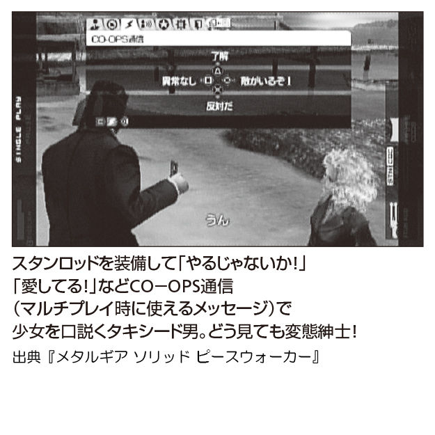
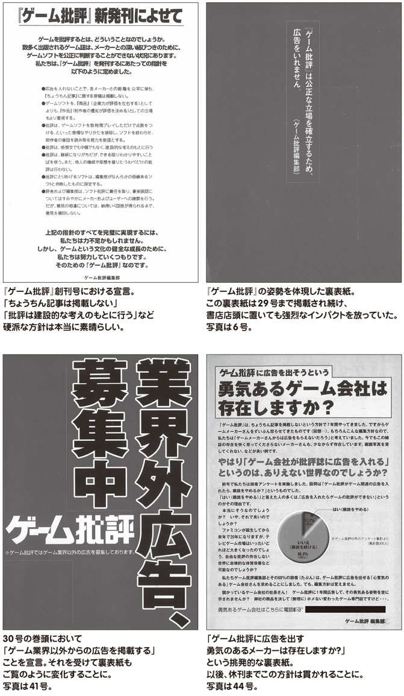
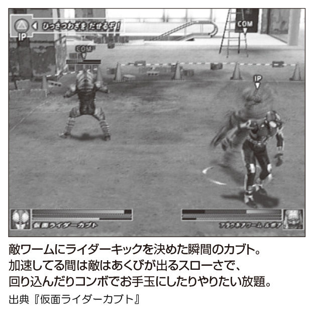
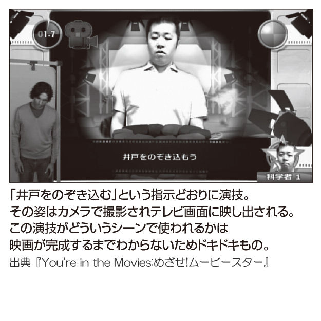

| 超クソゲー３ | |
| 多根清史 & 阿部広樹 & 箭本進一 | |
超クソゲー３
はじめに
豊穣なるクソゲーの大地よ！
われらクソゲーハンターは、一〇年ぶりに『超クソゲー』シリーズ最新作を引っさげて帰ってきた。英語で言うとウィ・ストライクバック!!
永きにわたる沈黙を破って、なぜ『超クソゲー』シリーズは再びよみがえったのか。あえて言おう、それはクソゲーの名誉のためであると。
クソゲーとは常識の枠に収まらない、飛び抜けた何かを秘めたゲームのことだ。超つまらなくてもいい、超バカでもいい、人類の理解を超えたオーパーツでも構わない。
超つまらないゲームでも、面白おかしくけなせればモトが取れる。五〇〇〇円で買ったなら、四九八〇円分は「けなし代」......『超クソゲー』は、そんなライフスタイルを提案した。
しかしながら、現在のクソゲー界わいの惨憺たるありさまはどうだろう。ただの不具合にすぎないバグを根掘り葉掘り探し出し、重箱の隅をつつくみみっちさ。それでも、自腹を切ってゲームを買い、血反吐を吐いてやり込むならまだいい。
どこかの誰かがネットに公開した動画を見ただけで、「これはクソゲー」とレッテル貼りをしてわかった気になる......。
クソゲーを舐めるなーッ!! クソゲーの神に赦しを乞え──ッ!!
クソゲーとは魂と魂の正面切ってのぶつかり合いだ。つまらなさに身悶え、それでも隠れた面白さがないか粘りに粘り、ゲームに深くダイブして、その奥底にいる開発スタッフの人格と斬り結ぶ真剣勝負である。無傷で得られるクソゲー体験はない。マネーや時間、生産性や学力と引き換えにした心の傷跡。それはゲーマーの勲章なのだ。
クソゲーハンターは、すべてのクソゲーのために義を持って立ち上がると宣言するぜ！ 一〇年ものブランクを埋め合わせるべく、ＰＳ２以降のクソゲーを網羅した全力投球のレビューの数々を堪能していただければ幸いである。
クソゲーハンター 多根清史（努力の１号）
阿部広樹（友情の２号）
箭本進一（勝利の３号）
北斗の拳 ラオウ外伝 天の覇王
これまで幾多のゲームが発売されてきた『北斗の拳』だが、本作は若き日のラオウを主人公にした３Ｄ格闘ゲーム。トキ、サウザー、ジャギといったおなじみのキャラクターに加えてオリジナルキャラも登場、さらに複雑なコマンド入力抜きで奥義を発動できる親切設計にも期待は高まるばかり。しかし、本作におけるラオウは「ぶっちゃけアレ」。そして、そこに登場した新たなる世紀末救世主（ただしゲーム内のみ）の正体とは......？
ジャンル 対戦格闘
メーカー インターチャネル
発売日 09 ．１．22
定価 ５，０４０円
ランク ★★★★★
「おれの求める北斗ゲームは、まだ遠い！」
『北斗の拳』ファンであれば誰しも呟いた言葉ではないでしょうか。
あまりにもクソゲーが連続すると、
「こんなに悲しいのなら、苦しいのなら......北斗ゲームなどいらぬ!! 」
という心からの叫びに変化します。
そもそも『北斗の拳』はゲーム化が難しい題材。
秘孔の効果も「身体が破裂する」「息を吐けても吸えなくなる」「次に見た人間を愛するようになる」など幅が広すぎますし、原作の終盤では念力で岩を飛ばしたり空を飛んだりするようなシーンが出てきます。「大砲で人間を打ち出す拳法」や「鐘の音を聴かせて死体を操る拳法」など怪拳・奇拳も盛りだくさん。
原作のシーンを取りこぼさないようにすればするほどドツボにはまり込んでいくのが北斗ゲームの特徴です。
新しい北斗の世界
今やパチスロの代名詞となった感のある北斗ゲームですが、アクションゲーム化の試みも続けられています。『北斗の拳 ラオウ外伝 天の覇王（以下、天の覇王）』は二〇〇九年に発売された３Ｄ格闘ゲーム。若き日のラオウを主人公に、ラオウの覇業を助ける軍師らといったオリジナルキャラクターや、トキ、サウザー、ジャギといったお馴染みの拳士たちが入り乱れて戦います。
パッケージに書かれた「ファンの皆さんには是非このゲームで新しい〝北斗〟の世界を体感して欲しい」（原哲夫）、「ゲームでここまで表現できるとは！ 特にラオウの迫力は凄い」（長田悠幸）との原作者コメントが期待を盛り上げてくれます（武論尊先生は？）。
３Ｄ格闘ゲームですが、複雑なコマンド入力は不要。ボタンふたつ押しで「奥義」（他のゲームにおける必殺技に相当）が、三つ押しで「究極奥義」（超必殺技に相当）が発動する親切設計となっており、壮快なプレイが楽しめそうです。
拳王の座から転落
ストーリーモードもそこそこに、早速ＣＰＵとの対戦に突入することにします。
若き日のラオウ、カサンドラの獄長に就任する前のウイグル、ケンシロウと出会っていない頃のリュウガといったキャラクターたちはあまりに魅力的。誰を使おうか目移りしてしまいます。
ここは基本に忠実に、主人公であるラオウを使うことに決定。北斗七星が輝くロード画面も待ち切れません。果たして筆者のラオウはどんな覇業を見せてくれるのでしょうか。
数分後、筆者が操るラオウは地面に伏していました。すべてを砕く剛拳、虎をも恐れさせる闘気はいったいどこへ......？
本作におけるラオウは、ぶっちゃけアレでした。格闘ゲームにおけるパワーファイターは「技の発動は遅いが一撃に威力がある」のが定番。しかし本作はコンビネーション技がメインのためか、ラオウは「技の発動が遅くてコンビネーションを止められやすく、一撃の威力も不足している」という存在となってしまっていました。コンビネーション奥義も使いづらさは同様。斜め上に闘気を放つ奥義に至っては、見た目はいいものの使いどころが見つかりません。「奥義」「奥義」と言っても筆者が技名を調べるのを怠っているわけではありません。マニュアルに載っているのは「秘奥義」の名前のみですし、ゲーム内にもコマンド表が存在しないので、こう呼ぶしかないのです。
本作のラオウは上級者向けのキャラクターなのでしょう。二〇〇〇年もの歴史を誇る北斗神拳が、そう簡単に身につけられるわけがないのです。「奥義」の名前が秘されているのは、一子相伝の北斗神拳を再現した計らいに違いないのです。
パワーファイターのラオウで失敗したのですから、軽量級なら上手くいくでしょう。
次は「南斗の智将」ことリュウロウを選ぶことにします。流派は南斗流鴎拳。「鴎」はカモメのことで、原作でも華麗な空中戦を見せていた彼ですから、重いラオウと違って使いやすいに決まっています。
意気込みも虚しく、筆者のリュウロウは二面で死にました。ラオウよりはマシだったものの、コンビネーションも奥義もリーチが短く、普通に出していたのでは相手に届きません。キックを連打しながら回転する奥義が二種類ある上、×ボタン連打のコンビネーションにも似たような技があるあたりは、あまりにも難解。南斗流鴎拳も初心者には向かない拳法のようです。
拳よりも剣！
ウイグル、サウザー、ジャギ様、ユダ様......と次々とキャラクターを渡り歩いていくのですが、芳しい結果を残せません。いずれも個性が強すぎる連中のはずですが、ゲームとしての使い勝手は似たようなもの。オビに短しタスキに長し的な技ばかりで、なかなか安定しません。
こうなったら色気に逃げることにします。『ラオウ外伝』のオリジナルキャラクター、女剣士のレイナの登場です。たとえサックリと倒されるにしても、女性ボイスの悲鳴なら心が慰められるのではないでしょうか。
ひとつひとつコンビネーションと奥義を試していきます。Ｌ＋○、Ｌ＋×、Ｒ＋○......と出していき、最後に残ったのはＲ＋×。剣を両手に構え、低い姿勢で滑るように突っ込んでいきます。敵にはガードされてしまいましたが、攻撃回数が多いため、そこそこの体力を削ることに成功しました。大きく間合いが開いてしまったので、再びＲ＋×を出します。敵は再びガードしますが、体力は削れ、両者の間合いはいい感じに開いています。
......瞬間、胸の奥にぞくりとするものが走りました。普通の精神状態なら、同じ技の連発なんて退廃的な行為は思いつきもしません。しかし、連敗で捨て鉢になった心からはある種のリミッターが外れていたのでしょう。再びＲ＋×を入力。レイナとの距離が離れてしまうため、敵は反撃することすらできません。さらにＲ＋×を繰り返すと、敵の残り体力はどんどん減少していきます。体力はゼロになり......そしてレイナが勝利しました。
もしかして、これはＲ＋×のみで勝ててしまうということでしょうか？ 筆者は次の瞬間、「ヒャッハー！」とモヒカンの雑魚のような快哉を上げていました。
世紀末救世主伝説
何人ものサウザーが、サクヤが、ユダが、レイナのＲ＋×の前に倒れていきます。
記念すべき五〇人目の獲物はウイグル。キリのいい数字ですがゲームクリアとならず次の相手が出現します。このモードは敵に勝っても体力が全快しないサバイバル仕様。五二人目のサクヤから秘奥義を何度か食らって体力ゲージが半分以下になりましたが、敵が近くにいるときはガードを徹底することで被ダメージを抑えるコツを掴みました。本作には投げ技がないので、ガチガチのガードで固まっても守りを崩されることがないのです。
六六人目のラオウで再び調子が崩れてしまいましたが、六九人目のトキあたりで完全に持ち直しました。完全に復帰法をマスターです。七三人目、ユダ。なんと六〇秒も残してＫＯできました。クリーンヒットなんて数えるほどですから、Ｒ＋×の恐るべき削り能力がわかります。
八〇人目はサウザー。同じ技を繰り返すというインモラルでデカダンな喜びも薄れ、意識が朦朧としてきます。九〇人目、ウイグル。本作は攻撃どうしがぶつかり合うことで相殺が発生します。普通なら互いの攻撃が無効となって仕切り直しなのですが、Ｒ＋×は多段ヒットの技なので敵の攻撃を消してそのまま突っ込んでいきます。相手のジャンプ攻撃にＲ＋×を合わせることで対空技にもなるようです。
九五人目はユダ。ＰＳＰのバッテリーが心配になってきたので、ＡＣアダプターで直接電源供給。これで停電しない限り大丈夫です。九六人目はサウザー。Ｒ＋×の見た目が何かに似ていると思ったら、格闘ゲーム『サムライスピリッツ』の可憐なヒロイン「ナコルル」が使う「アンヌムツベ」にそっくりであることに気付きました。心の中で「世紀末のアンヌムツベ」と呼ぶことに決定。
九七人目、トキ。九八人目、リュウガ。トキで九割ほどまで回復した体力を、リュウガで七割程度に減らしてしまいました。危機的状況ですが眠気は募るばかり。足で机を蹴ることで僅かに覚醒することに成功。九九人目、ユダ。難なく下してついに三桁の大台に突入です。
一〇〇人目はなんとレイナ。切りのいいところに同キャラが来るというのは偶然とは思えません。きっと一〇〇人目に自分自身を倒すことで、この苦行は終わりを告げるのです。
少しはまともなファイトをしようかとも思いましたが、最終面で負けては今までの苦労が水の泡。これまで以上に慎重にＲ＋×を出すことにします。順調に体力を削り......ついに勝利です！ やった！ やりました！ 世紀末の乱世は女剣士の元に統一されたのです！
北斗七星が輝くロード画面が消えます。どんなエンディングが見られるかと思いきや、そこに待っていたのは一〇一人目の対戦相手、サウザーでした。さすが世紀末。争いの種には事欠かないということなのでしょうか。
弱肉強食の掟
......結局、一一二人目のウイグルで力尽きました。ゲーム内に記録される連勝数は九九連勝までですが、気にしません。
強者が弱者を力任せにねじ伏せるのが『北斗の拳』の世紀末世界ですから、このバランスはある意味原作通りなのかもしれません。
（Ｙ）
DRAGONBALL EVOLUTION
「完成度に問題があってお蔵入り」というウワサも飛び交う中で完成したハリウッド製作の実写版『ドラゴンボール』をバンダイナムコがゲーム化！ しかし、その内容は実写版に準じたもので（当たり前）、「オッス！」とは決して言わないナード丸出しの悟空（一八歳）が登場する、鳥山明先生ならずとも「え？」という感じの一本だった。『ストリートファイターⅣ』の開発元ディンプスの底力に期待する向きもあったのだが......。
ジャンル 対戦格闘
メーカー バンダイナムコゲームス
発売日 09 ．３．19
定価 ５，０４０円
ランク ★★★★★
原作者も「え？」という実写版ドラゴンボールをゲーム化！
国民的ＲＰＧの『ドラゴンクエストⅨ』が発売されて、鳥山明キャラのテイストが３Ｄのポリゴンでもばっちり再現されてて、すごいいですよね～という興奮も醒めやらぬ頃、実写映画版『ドラゴンボール』がひっそりと公開されてましたよね。
いっときは映画の完成度に問題があってお蔵入り？ といったデマが流れたものですが、いろいろあって国内での上映にこぎ着け、原作者の鳥山明先生も「脚本やキャラクター造りは原作者としては『え？』って感じはありますが（中略）もしかしたら現場のパワーで大傑作になっているかもしれませんよ！」と優しい大人力を発揮しておられました。
そんなハリウッド版『ドラゴンボール』を元にしてゲームを作るお仕事は、孫悟空が道着の下に重りを着込むハンデ付きで戦っていたようなもの。実際に開発した会社・ディンプスは評判のいい『ストリートファイターⅣ』の開発元でもあり、本当はもっとできる子のはずなんだよね、と生暖かい目で見守ってあげてください。
ナード丸出しの悟空、舞空術ナシ！
さて、ＰＳＰ用の格闘ゲームである本作では、映画を観なくても大まかな物語が追体験できる「ストーリー」モードが本編です。オッス、オラ悟空！ と間違っても言わなさそうなナード丸出しの主人公は、当年とって一八歳の高校生......落ち着け、素数を数えるんだ。
これは映画版の設定そのままにつきゲームに罪はありません。孫悟飯じっちゃんと修行に励む悟空が武術の達人であることは秘密にされ、スクールカーストのどん底にあって馬鹿にされてもじっとガマンの子です。そんなある日、クラスメートのチチにパーティーに誘われて行ってみると、いじめっ子のファラーに出くわし、彼女にブザマなところは見せられないと本気を出してぶちのめす悟空クン。どうも原作の悟飯（息子のほう）×ビーデルの話とリミックスされているようです。
実力をあらわにした悟空の強さに、ひそかに達人を目指しているチチもファイターの血が騒ぎ、むらっと来て一戦がスタート。どっちも舞空術なんてマスターしてませんから、戦いの舞台も地に足がついたままです。この先もず～っと地上戦ばかりでして、全員が天津飯の舞空術に見下されっぱなしの感じ。
じゃあ本格的な武術アクションに徹するのかとオラもなんだかわくわくしてきたものの、自由にジャンプもできないとわかって尻すぼみ。画面の手前と奥に移動もできますけど、基本は前と後ろにずりずり進むか退くかだけ。この世界の武術は、どれも相撲が高度に発達したガラパゴス的な進化なのかも！
ヤムチャカーアタックに大感激せよ！
家に帰った悟空がじっちゃんの死に目に遭って悲しみに暮れていたとき、そこを襲ってきたのがブルマ。ヒロインのチチが気の毒になる美人さんで、でっかい宝島的な世界観をぶっ壊す銃も気になりませんね。お互い誤解も解けてパオズ・シティにいるあの人の元を訪ねると......亀の甲羅も背負ってないオッサン誰？ 『男たちの挽歌』のチョウ・ユンファにも亀仙人にも失礼だよ！ というキャストも、当然ながらゲームのせいじゃなくて映画に忠実です。
じっちゃんを殺してドラゴンボールを奪ったピッコロ一味を追いつつ、修行をしながらボールを集める一行。途中で落とし穴にハマったりしますが、悟空も空を飛べないので立ち往生。ちんぴら丸出しのヤムチャに手伝ってもらう情けなさ......。
ピッコロの手下であるマイに返り討ちされて死にかけるわ、かめはめ波で心臓マッサージしてもらって生き返るわと、悟空株が下がりっぱなしのストップ安。亀仙人とタメを張る程度の微妙な強さのピッコロを倒すまで約四時間でしたが、あたかも何日もかかったような疲れを感じたのは「精神と時の部屋」効果ってやつでしょうか。
「原作」を忠実に再現するほどゲームの完成度が下がるジレンマに苦しんだスタッフを責めるのはマナー違反です。むしろ、映画という名の十字架を背負いながら、大惨事を避けようとした英雄的行為こそ注目すべき。
ひとつは、悟空の変身する大猿のデザインがマンガ版に近い！ 悟空＝サイヤ人＝エイリアン寄りにハンドル切って爆砕した映画版より精神ショックはぐっと減ってます。
また、溢れんばかりのヤムチャ愛も素晴らしく、「ドリルアタック」や車で相手をひき逃げする「ヤムチャカーアタック」には感動すら覚えるほど。こうした努力のおかげで、初週売り上げ一二〇〇本＝一二〇〇人ものお客さんの被害が最小限に抑えられたわけですネ。映画はシリーズ三部作だそうですが、あと二本がんばってくださいディンプスさん！
（Ｔ）
ティル・ナ・ノーグ ～悠久の仁～
名門システムソフトからＰＳＰ版とＰＳ２版が同日発売された、正統派ファンタジーＲＰＧ。アイルランドのケルト神話をモチーフにして自動生成されるシナリオ数は、なんと驚きの一〇〇億通り！ さらに地形や登場人物、アイテムや装備品など、同じシナリオはふたつと存在しない、というのが大きな特徴だった。良くも悪くも、かつての黄金期パソコンゲームと変わらないプレイ感や操作性、演出は、それはそれで貴重なのか？
ジャンル ジェネレーティングＲＰＧ
メーカー システムソフト・アルファー
発売日 09 ．４．29
定価 ５，０４０円
ランク ★★★★★
ゲーム界のミッシングリンク、復活！
一九八八年から続くパソコンＲＰＧが、ＰＳＰにリバイバル！
今ある超有名ＲＰＧシリーズには、八〇年代から始まったものがいくつかあります。でも、それらはほとんどがファミコンから始まったゲーム。
二〇年以上前から、しかも日本発でパソコンで続いているＲＰＧは、このゲームの他には日本では日本ファルコムの『イース』や『英雄伝説』シリーズくらいのもの。
しかし日本ファルコムのシリーズは、どれを取ってもイマドキのゲームの影響を必要充分に取り入れて進化しているのに対し、このゲームのコンセプトは「変わらなさ」にあります。
衝撃の名前入力システム
普通、ゲームに関わる開発者やライターやバイヤーといった人種は、まずキャラクター名を決める名前入力システムの出来をチェックします。
ゲームのジャンルがＲＰＧならばほぼ必ず序盤に登場し、しかも他のパーツからシステム的に切り離されていて自己完結しています。
そのおかげで、ネームエントリーシーンはゲームの出来の指標とするにはうってつけの部分となるわけです。ここの出来を見れば、ゲームのシステム的な出来具合はだいたい推測がつくといっても過言ではありません。
それゆえに、本書でご紹介しているゲームには、高確率でこの名前入力の部分がすごいことになっています。でも、そんなもの普通はいちいち紹介したりはしません。
しかし、このゲームでは立ち上げて名前入力を始めた途端、ゲーム開始部分までのフローチャート作成と問題点抽出、改善点を大学ノートにゴリゴリ書き始めている自分に気付きました。
その結果を文字に起こして具体的に指摘してみたら、なんとこの部分だけで三〇〇〇文字を超えていました。
具体的にどこがおかしいのかわかりにくいけど、なんとなくおかしい......なんていう最近のゲームのような曖昧さは一切なく、明らかに間違ってるだろこれと言い切れるわかりやすさです。
だいたい五パターンぐらいから無限に紡がれるシナリオ
ムービー中に登場したりキャラクター作成時に選べるキャラクターの顔は、プリレンダリングのリアル系ＣＧです。しかしその髪の毛はよく言えばアニメチック、普通に言えば人形の頭に原色系のカラー粘土を乗せたようなキッチュな質感が異彩を放っています。
普通はサウンドについては滅多なことでは言及しないのがお約束ですが、このゲームは『ティル・ナ・ノーグ』。つまりアイルランドのケルト神話をモチーフにした世界観となっています。
ケルト音楽と言えば、バグパイプを含めた独特の管楽器。このゲームを彩るサウンドも、ケルトサウンドと夜鳴き屋台ラーメンのチャルメラの音を不幸な形で融合させたようなノイジーな感じに仕上がっています。
それというのも変にケルトを意識しているせいか、ＰＳＰから出力されるＢＧＭはＰＳＰに内臓されたスピーカーの限界を超えているご様子で、常に割れた音がキンキン響く仕様になっています。
それもわかっているのかＢＧＭは三種類から選べる上、ＢＧＭ自体をオフにする機能まであります......って、やっぱり自分でわかってたのか。
そして顔を選べばゲーム開始......のその前に。
このゲームで筆者は、妖精王の召喚に応じてやってきて、狂気にとりつかれた王を救うことになりました。
というのも、実はこの『ティル・ナ・ノーグ』シリーズは、プレイのたびにシナリオを自動生成するのが最大のセールスポイント。キャラクターを作るたびに、冒頭でシナリオデータも一緒に生成するわけです。
これが、昔の八ビットパソコン版だと下手をすれば一時間ぐらいはかかってたものです。しかしこのゲームでは一分ぐらい生成されるようになったのを見ると、コンピュータの処理速度が今と昔では比べ物にならないことをまざまざと思い知らされます。
このように昔を知るプレイヤーには感無量のシナリオ生成時間も、昔のことなんざ知ったこっちゃねえプレイヤーには意味不明の待ち時間。昔はコレに一〇〇倍ぐらいの時間がかかってたんだなあ、と思いを馳せながら、じっくりとお待ちください。
シナリオ生成も早くなったことだし、キャラメイクを繰り返して冒頭シーンを何個もチェック！
最初にシナリオを自動生成するんだから、そのストーリーは無限大......と言うものの、実際は五～六種類のあらすじに数十種類のサブイベントという構成になる様子。確かにひとつとしてまったく同じ展開にはならないものの、どれをとってもだいたい似たような展開になります。
無一文でフィールドに放置＝常識
しかし、冒頭は常に何ひとつ持たず、一人ぼっちでフィールドに投げっぱなし！
いくら異世界からの召喚を受けたとはいえ、棍棒と布の服でいいから装備させていてほしい。まったく何も持ってないのは洒落になりません。
とりあえず、序盤はこのゲームのセオリー通りに最寄りの町に逃げ込むところから始めます。
町に逃げ込めばイベントが発生して、序盤にしてはそこそこ強い装備一式がもらえます。ついでに寄合所で冒険者を募集し、装備一式と一緒にもらった金でパーティーの装備を整えて、やっと冒険の準備完了！
戦闘開始時やステータス表示などの、ことあるごとに発生するローディングがかなり長いのがネックですが、戦闘自体はオートで進行するためメッセージの表示スピードさえ最速にしておけば問題はありません。
戦闘はシミュレーションゲーム風のタクティカルオートバトルになっているため、仲間はたとえどれほど役立たずでも、いないよりはいるほうがはるかにマシです。少なくとも弾除けになって、攻撃を受ける回数が減るだけでも存在する価値はあります。
なさけむようの仲間の扱い
その上、自分も含めて死んでも生き返らないという仕様になっていて、仮に仲間が死んでも「仇は俺がとる！」の一言でそのままゲームは続行。もちろん戦闘終了後は、そんなキャラクターはどこにも存在しなかったかのようにゲームは続きます。
そうしてなんとか冒険できるようになってくると、「俺も仲間に入れてくれ！」と、ランダムエンカウントでいろんなキャラクターから声がかかるようになります。そうやって、有象無象をかき集めては誰かが死ぬ、という行為を繰り返して仲間の死を乗り越えるうちに、パーティーは強くなってきます。
中にはドラゴンのような強力なモンスターも仲間になるチャンスが訪れます。そういうときに、都合良く仲間が死んでいてパーティーに空きがあればいいのですが、なかなかそうはいきません。
そういうときには慌てず騒がず、パーティーメンバーのリストラを敢行！ 使えないヤツに限って高額の手切れ金を要求してきますが、強力なキャラクターを味方につける代償としてはいたし方ありません。まあ、ダンジョンの奥でリストラとか普通に考えて洒落にならないので、どっちもどっちです。
あと、日本製の一般パソコンゲームの伝統を重んじて、移動中のマップのスムーススクロールはしません。昔の日本のパソコンゲームは、こんな感じで画面をガクガクさせながら冒険してたんだよ、と否が応でも教えてくれます。

エロじゃないパソコンゲームの時代
見方によってはプレステとドリキャスが発売されてパソコン自体もＮＥＣのＰＣ－98 シリーズからＷｉｎｄｏｗｓパソコンに覇権が変わった一九九五年こそがエロじゃない日本のパソコンゲーム滅亡の年だとする意見があるでしょうが、ソフトの発売本数的には、すでに一九九三年には死に始めていたものです。
『ティル・ナ・ノーグ』はそんな伝説のような時代である一九八八年、ＮＥＣのＰＣ－98 用のＲＰＧとして産声を上げて大ヒットを記録したシリーズです。
特にこの『悠久の仁』は、二〇〇五年に発売されたＷｉｎｄｏｗｓ用の『ティル・ナ・ノーグＶ』の移植作となり、二〇〇九年にＰＳ２版とＰＳＰ版が同時発売されたことでも話題になりました。
今現在、昔日本にもエロゲーではないオリジナルパソコンゲームの時代があった......と言っても、そんなものは一切知らない二五歳以下のヤングメンや、そんな時代があったことすらほとんど忘れてる二五歳以上のオールドメンだと思います。
エロじゃないパソコンゲームは、その文脈をほとんどまったく後世に残せないという、文化的にはとても珍しい状況で滅亡していきました。
この不親切なプレイ感や、操作性のとっ散らかり具合、そして何よりも投げっぱなしのイベント演出などはすべて一五年以上前にＰＣ－98 シリーズと共に滅んだ一般パソコンゲームの忘れ形見と言えるでしょう。
少なくとも一五年以上も前に滅亡した日本のパソコンゲームというものが一体どういうモノだったかを今に伝える貴重な一本、それが本作なのです。
（Ａ）
ガンダム アサルトサヴァイブ
「落下する鉄骨をアムロがよけまくる」「小太りな実写シャア」など「基本アレ」という掟に逆らって「これぞ名作！」と断言できる『ガンダムバトル』シリーズを手掛けているアートディンク。同じメーカーが開発を担当した本作『ガンダムアサルトサヴァイブ』のコンセプトは「共闘感」。様々なエリアで強敵と対決、さらに仲間の救出ミッションをクリアしていきながら、君はＰＳＰの戦場で生きのびることができるか？
ジャンル ガンダムアクション
メーカー バンダイナムコゲームス
発売日 10 ．３．18
定価 ６，２７９円
ランク ★★★★
男の子大歓喜のガンダムゲーム
ガンダムゲームの中で比較的新しい歴史を持つのがアートディンクの『ガンダムバトル～』シリーズ。パソコン時代からの古強者が作った同シリーズは、多数のモビルスーツ（以下、ＭＳ）が登場する男の子大歓喜のゲームです。
本作『ガンダム アサルトサヴァイブ』は、アートディンク五作目のガンダムゲーム。広大な戦場を「エリア」に分割して表現。様々なエリアで強敵の出現や仲間の救出といったイベントが起こる中を、僚機との三機チームで進撃します。
九五万Ｇにウハウハ
同社のガンダムゲームは「自分のキャラクターでガンダム世界を追体験できる」ことがコンセプトのひとつ。今回はＱ＆Ａに答えることで、自分のキャラクターの特性が決定されます。
Ｑ「一番親しかった友人が目の前で軍を裏切った。あなたならどうする？」
Ａ「ただ、黙って見送る」
Ｂ「上官に報告する」
Ｃ「裏切り者に報いを」
といった質問に答えていくと、運のいいことに「ニュータイプ」のスキルを持つキャラクターが誕生しました。ニュータイプとは初代『機動戦士ガンダム』が提唱した「拡大した認識の中で誤解なくわかり合える人々」。同作の公開時には「戦争をなくす人類の希望」と扱われていましたので、幸先良いスタートです。
同時に機体までくれるそうです。どんなニュータイプ専用機が配備されるのかと胸躍らせて画面を見ると、そこには「Ｇブル」が鎮座していました。Ｇブルといえば「ガンダムの上半身に飛行機の前半分を組み合わせると、なぜか戦車になった」という錬金術のようなニコイチ機体。地面を這い回るＧブルのどこがニュータイプにふさわしいのかわかりませんが、さすがはマイナー機体が登場しまくるアートディンク製ガンダム。きっとＧブルで『ぶちギレ金剛!! 』（ブルドーザーやダンプが格闘する同社製ゲーム）をやれという神のお告げに違いありません。
これまでの全シリーズ分＋体験版のセーブデータを所持していると、特典として九五万Ｇが手に入りました。「Ｇ」というのは本作におけるお金で、機体の強化や購入に使います。シリーズ経験者へのおまけとはいっても、いくらなんでも額が多すぎやしないでしょうか。
「九五万Ｇものお金とニュータイプ力（ちから、と読むのが富野的作法）があれば、すぐにゲームが終わっちゃうかもね！」と満面の笑みをたたえつつゲームを開始します。
Ｇがないのは首がないのと同じ
数時間後、九五万Ｇはきれいさっぱり消えており、筆者は妙にパワーアップしたＧブルを前に途方に暮れていました。戦車であるＧブルはいくら強化してもＭＳを相手にするには力不足。折角の九五万Ｇを間違ったところに突っ込んでしまったようです。
Ｇの用途は多彩で、新機体の購入、手持ち機体の強化、オプションパーツの購入、原作パイロットの雇用、スキルの習得など、ありとあらゆることに必要です。手持ち機体を強化するにも一筋縄ではいきません。「ＨＰ」「実弾防御」「ビーム防御」「スラスター出力」......など多数のパラメーターのそれぞれを強化するのにＧが必要です。機体自体の強化と、搭載されている武器の強化は別料金。武器の「威力」「命中率」「連射回数」「弾速」などといったパラメーターのそれぞれにＧが要るのです。
実は同社の旧作では、機体を使うと手に入る「チューニングポイント」を消費して強化する方式でした。今回はＧさえあれば使っていない機体でも自由に強化できるようになっているというわけです。これは一見便利ですが、消費する額があまりに多すぎます。たとえば、Ｇブルのビームライフルをチューンしただけで約三〇万Ｇが、主砲なら約二〇万Ｇが吹っ飛んでいきます。
ＳＨＯＰに並ぶ機体も安くありません。Ｚガンダムなら九一万二〇〇〇Ｇ、百式が五六万Ｇ、ＺＺガンダムは一三六万Ｇなど、気の利いた機体を買おうと思ったらそれなりの額が必要に。最高額のＨｉ－ν ガンダムに至っては一二一六万Ｇもします。機体を強化するオプションパーツだって有料です。一万Ｇくらいで買えるパーツもありますが、効果はそれなり。良い品を求めれば「縮退炉」が五七九二万Ｇ、「ＧＮドライヴ」が四五二〇万Ｇとこちらも天井知らずです。
パイロットのスキルもただではなく、「覚醒」が三七五万Ｇ、「悟り」が一九五〇Ｇなど、なかなかのお値段。あげくにオペレーターのギャルやプレイヤーの称号など、特別な効果のないフィーチャーにも値札がついています。趣味の領域とはいえ、称号に使う「愛」の一文字に一〇〇〇Ｇ支払うのはどうも抵抗があります。
無人でＧ稼ぎ
これからは財布のひもをしめ、無料で支給される機体をとことん使い倒します。
旧作で異様な強さを誇ったゴッグ、癖があって楽しかったグフ、ドム、アプサラスといった機体は宇宙で使えないので買いません。儲かるステージは何度だって繰り返してＧを稼ぎまくります。
眠気で朦朧としていると、僚機が敵を倒してステージをクリアしていました。エリア切り替えのないステージに僚機を放置すれば、勝手に狩りをしてくれるに違いありません。『ガンダムＦ91 』の「クロスボーン・バンガード」面が適度な狭さなので、僚機頼みの自動狩りを繰り返します。
さらなる効率化を模索していると、「錯乱」スキルが目に入ります。これはＨＰ（機体の耐久力。〇になるとアウト）が三〇％以下になったら自動でＳＰＡ（超強力な大技）を使ってくれるというもの。では、ＨＰや防御をわざと下げる逆強化を行えば、すぐに「錯乱」の発動条件が満たせるのではないでしょうか？ プレイ中は一切ＰＳＰに触らずに済むのでなかなかの効率。キャラクターのパラメーターも上がって一石二鳥です。自分では戦わずに仲間の戦果を吸い上げる。これではまるで『Ｚガンダム』以降のシリーズで描かれる「若者を利用するずるい上層部」そのものですが、逆に言えばそれだけガンダム世界をよく描けているのだ......ということにしておきます。
旧作では効率を追求すると「遠くにいる豆粒のような敵機を狙撃武器で出現即破壊する」という動きになりがちでした。しかし本作は狙撃武器が弱体化され中距離用マシンガンを強化しているため、旧作ほどカツカツのプレイをしなくても良いのが救いです。
本作は広大な戦場がいくつかのエリアに分けられているため、プレイが長期化しがちです。ＨＰが減っても母艦に戻れば回復できるのですが、逆に言えば母艦に帰らなければ身体が保たないということ。戦場から母艦へ帰るのに二エリア移動、戦場へ戻るのにまた二エリア移動......なんて事態がざらにあるのです。
それでもなんとか『ガンダムＦ91 』までをクリア、宇宙世紀を制覇しました。次は『ガンダムＳＥＥＤ』と『ガンダム00 』の時代がターゲットです！
本当に大切なもの
自分のキャラクターで原作を体験するアートディンクのガンダムゲームですが、『ＳＥＥＤ』『00 』は原作のパイロットたちがメイン。参戦権をＧで買うまで自分のキャラクターの出番はありません。
しかも原作パイロットたちはこの時点では能力値が成長しない（全クリア後に成長権をＧで購入可能）ため、詰まってしまった場合は、とにかくＧを突っ込んで機体を強化するしかありません。
旧ガンダムシリーズでＧを稼ぎ、キラ様や刹那に貢ぐ日々が始まりました。特に『ＳＥＥＤ』の「終末の光」など難関面は完全な力押しで、Ｇの力でクリアしたようなもの。それでもクリアはクリアで、これらの時代でも自分のキャラクターが使えるようになりました。......しかし乗れる機体がほとんどありません。
それというのも『ＳＥＥＤ』のＭＳの多くや『00 』のガンダムは「コーディネイター」「ガンダムマイスター」（もしくは「神技」）スキルがなければ搭乗不可。「ニュータイプ」ではなんの助けにもなりません。しかも、これらのスキルはＳＨＯＰに売っていないのです。
自分のキャラクターで『ＳＥＥＤ』『00 』のガンダムに乗りたければ、「これから「コーディネイター」と「ガンダムマイスター」をそれぞれ育成する」か、「累計一億Ｇを入手し、さらに二四〇機の機体と一四の隠し要素を購入すると出てくる制限解除権を九〇〇万Ｇで買う」、最短でも「あらゆる機体に乗れる『神技』スキルを持ったキャラクターを育成する」ことが必要になるのです。
「Ｇさえあれば、なんでもできる！」という傲慢が音を立てて崩れていきます。
思えばゲームとしての潤いを忘れ、ただただ効率とＧを追求する日々を送っていましたが、人間それだけがすべてではないのです。
これは、お金で買えないものこそが重要であるという、作り手からのメッセージなのかもしれません。
（Ｙ）
ハローキティといっしょ ブロッククラッシュ１２３！
女の子なら、みんな大好き！ おなじみサンリオのハローキティの新プロジェクトとして、二〇〇九年の夏コミで発表された企画が「ハローキティといっしょ！」。その関連プロジェクトとして、有名イラストレーターが描き下ろした「キティを愛してやまない女の子＝超キティラー」とブロック崩しを合体させた「大きなお友達」狙いの本作。しかし、その地獄のような難易度とドＭ仕様で「鬼帝」という尊称を贈られることになった。
ジャンル パズル
メーカー ドラス
発売日 10 ．７．15
定価 ４，２００円
ランク ★★★★
祝・大きなお友達もサンリオ公認！
男の子だってキティちゃんが好きなんだもん！ 小さな女の子に愛されてきたサンリオのブランドですが、大きなお友達こと男子オタクからの愛され歴も長いもの。『おねがい！マイメロディ』シリーズは非モテのバク君がイケメン先輩に負け犬ビームを炸裂させたり、その後番組の『ジュエルペット』は続編の『てぃんくる』で萌え成分を強化したり。
それは正しい楽しみ方に対する裏技だったはずが、二〇〇九年夏のコミックマーケットにサンリオ自らが「ハローキティといっしょ！」なる企画を引っ提げて参加。これは「超キティラーと呼ばれるキティを愛してやまない女の子たちを様々な人気イラストレーターが描いていく」というもの。
その後にシリーズ化して、イラストを担当するのもｏｋａｍａ氏や黒星紅白氏、ぽよよんろっく氏などアニメやギャルゲーで活躍したオタク絵師の猛者ぞろい。今をときめく「初音ミク」のＫＥＩ氏や『萌える英単語 もえたん』のＰＯＰ氏までおられますよ。オフィシャルで大友のラブがビジネスモデルに認められた！
そんな男子向け萌え企画の一環として発売されたのが『ハローキティといっしよ ブロッククラッシュ１２３！』。超キティラーとブロック崩しを組み合わせ、ステージクリアすると萌えイラストの壁紙がゲット......あれれ、公式サイトで全部のイラストが公開されてますよ？
マイナスアイテムから逃げ回れ！
のっけからゲームの大前提がピンチですが、キティラーへの愛の試練にもってこい。各キャラクターごとに一〇ステージ×一〇人＝一〇〇面以上もあるボリュームはそびえ立つ山のようですが、まずは小手調べに見た目がフツーっぽい「猫村いろは」にトラーイ。
ブロック崩しの命にも等しいラケットの移動速度ですが、スローすぎてあくびが出ます。ボールが急角度で逆の方向に切りかえされると、まるでついていけません。それは先回りすればいいとしても、反射する方向が予測不能。ボールが真下に落ちてきたり、ラケットの端っこに当たると斜め下にフォークのかかるブロック崩しは初めて見ました。
ラケットの性能にもデカい疑問符がつきましたが、不足しているスペックを補うのがアイテム。ブロックを壊すと出現するスピードダウン！ さらに移動のトロさに磨きがかかります。
ブロック崩し系のゲームでは、地味になりやすい展開に変化をつけるアイテムは定番。プレイを不利にするマイナス効果のはあり得ない──そんな甘い認識が、このゲームで改められました。
ラケットを小さくされたらボールを拾いにくいですし、ボールが分裂してふたつになっても移動が遅いので「どっちを取る？」とパニック→どっちもアウト。サイズ縮小やスピードダウンが雨あられと降ってくるステージもあり、プレイヤーの避けスキルが問われることに。
味方のはずのアイテムがお邪魔になるぐらいですから、立ちはだかるブロックがイジワルでも驚きません。破壊不能の無敵ブロックや三発まで耐えるハードブロックも織りこみ済みですよ。
でも、移動スピードが遅い自機×当たるとボールが速くなる加速ブロックに、悪意の他に何を感じ取れと。一定時間で復活するブロックもさっき壊したものをまた壊す無限ループが楽しめますが、目の前に突然復活してボールを叩き落とす嫌がらせも最高です。僕ら大きなお友達がキティラーに踏みつけられて悦びにむせび泣くドＭゲーなんでしょうか。
牙をむく〝鬼帝〟ブロック崩しなのに弾幕！
こんなのは入り口であり基本システムにすぎません。ここからが本当の地獄だ......キティが「鬼帝」（あまりの恐ろしさにプレイヤーたちが贈った尊称）の牙をむくとき。
各ステージはキャラクターごとの設定に合わせた個性的なステージばかりとうたわれていますが、一人一殺の間違いではないか。ＰＳＰをタテ持ちにする「天風みさき」＝画面の底辺が狭くて最もやさしいキャラクターをクリアした後は、さらば心の安らぎ。
キティの帽子をかぶった「橘みかん」面は、上からブロックがずんずん降りてくる釣り天井ステージ。一定のラインを超えるとゲームオーバーになる時間制限のある中、無敵ブロックであらゆるボールをはね返してプレイヤーの圧殺をたくらむ殺意がいっそ清々しいです。
無敵ブロックに守られたつぼみにボールを当てるのに冷や汗を流す「一花麗流」ステージや、ラケットもブロックも幅が半分＝数が倍になって苦労も倍かかる「リオ」ステージも、特殊なプレイ感覚に慣れてくれば一〇面ぐらいまではこぎ着けられます。
が、ラスト近くになると出てくる砲台ブロックがオニ。ブロック崩しなのにタマを撃たれ、ずらりと並んで逃げ場のない弾幕を一体どうしろと。普段は便利なラケットが大きくなるアイテムも、高次面では当たり判定がデカくなって死にやすくなるバッドなしろものに。ブロックを壊せるショットアイテムもなくて、一方的に追われて撃たれて狩られるだけ。撃ち返せてもいいんじゃね？
賽の河原の石を積む〝積んデレ〟ゲー
ボールの反射が不規則なため死にまくる本作は、数少ないお役立ちアイテムの貫通ボールが出てくるのを神頼みする運ゲー（運次第のゲーム）と言われます。が、すぐ有効時間が切れる貫通が無敵ブロックに阻まれたりしたら、なまじ希望を持たされた分だけ深まる絶望。
自機が丸くてやりにくそうな「山邑カリナ」ステージが「端っこに当たって即死」がないし、一定回数だけコンボ（ブロックや壁に連続してはね返る）をキメる「真宮・エリザベス・つばさ」ステージも粘りに粘れば道が見えてきて、努力が報われる瞬間は感動です、先の全ステージがネット上で公開されていて見られるのはさておき。またルールが独自すぎて身につけたスキルが他のブロック崩しで使えないこともさておき。
真っ暗なダンジョンで自機の周りしか見えず、闇の中から攻撃してくる「蘭道鈴」ステージとか、最終的には海賊のボスに五〇発のボールを当てさせられる「マール・キサラギ」ステージにしても、ちゃんとテストプレイしてるのかと問い詰めたくなる凶悪さ。
それも、矢印にボールを当てて方向を揃える「水無瀬シズク」ステージの前には影が薄くなります。一度は向きが合ったとしても、方向は固定されないので、またボールを当てると一からやり直し×矢印の数だけ繰り返し。ひとつ積んではキティラーのため～ふたつ積んでは萌えのため～といつまでも賽の河原の石積みをさせてデレないゲーム、これぞ「（石を）積んデレ」ですね！
（Ｔ）
喧嘩番長３ ～全国制覇～
修学旅行で古都、郷都（きょうと）を訪れた番長となり「七日間で全国四七都道府県の番長たちをシメまくって、目指せ！ 全国制覇」というあり得ない内容の快作。しかし、そんな破天荒（ホメ言葉）な本作の自由度は『ＧＴＡ』ばりの高さを誇っており、「全身バナナの着ぐるみで周囲を威嚇しながらデート」「パンツ一丁で路上を闊歩、警官に追いまくられる」という仏恥義理な展開も可能。是非ともチェック夜露死苦！（死語）
ジャンル ツッパリアクションアドベンチャー
メーカー スパイク
発売日 08 ．11 ．27
定価 ５，２２９円
ランク ★★★★
最強の座を目指す
ここは日本のどこかにあるという古都、郷都（きょうと）。
プレイヤーは修学旅行に来た番長となって他県の番長を叩きのめし、七日間での全国制圧を目指します。
番長とはいえ、最低限のルールには従わなければなりません。宿は他のクラスメイトと同じ旅館。午前中に旅館のロビーに行くと団体行動に付き合わされ、郷都の名所旧跡を回ることになります。全国制覇を狙いつつクラスの行事に参加し集合写真にも写る。これこそ正しき少年マンガ的番長の姿です。
喧嘩の美学
本作の喧嘩には「シブい」「シャバい」という美学が存在します。
「メンチビーム」を打ち合い、タンカを切り、素手で戦う。これが「シブい」喧嘩。「メンチビーム」とは男の目から放たれる熱視線。打つには気合いが必要ですので、下がってきたら「うんこ座り」で回復してください。
タンカは喧嘩の前の脅し文句。ＰＳＰの各ボタンにタンカのパーツが割り振られますので、手本通りに組み合わせましょう。
適当にボタンを押すのは厳禁。「ママのオッパイでも吸ってろや！」と決めるはずが「俺のオッパイでもオッパイだ」、「本当の恐怖を教えてやる！」が「英語で美味いものをお届けします」などと意味不明な供述をすることになるので注意してください。シブくなれば画面左上の「男気ゲージ」が真っ赤に燃え、倒した番長も従ってくれるなど、番長的にはいいことづくしです。
この逆がシャバい行為。無抵抗の女子高生をメンチビームで焼き、善良なおばちゃんを角材や金属バットでぶん殴り、観光客からお金を巻き上げ、ツッパリに対してタンカを切らず不意打ちする。これがシャバさです。シャバい状態は単なるペナルティではなく、そのままでもゲームが進められます。舎弟になったはずの番長から相手にされず、店の店員から顔を背けられるなど、あまりいいことはありません。あまりにもシャバすぎると「シャバ神」となって戻ってこられなくなります。
謎の高揚感と共に悪逆非道の限りを尽くしますが、それでもゲームオーバーにはなりません。
永遠の修学旅行へ
そう、本作は様々な意味において自由度の高いゲームなのです。
七日間の使い方は自由。定石通り他県の番長をシメるもよし。クラスの行事に参加して彼女を作るもよし。旅館にこもり続けるも、ツチノコや人面犬を探すも、断食やグルメツアーに挑戦するも、各地で売られている木刀を買い集めるも自由です。
服装だって自由です。衣装を集めれば、舞妓風の衣装やバナナの全身ぬいぐるみで練り歩いたり、ブリーフ一丁で町に繰り出し警官に追われることだって自由なのです。
どんなにシャバくても、格好悪くても、それはあなたの修学旅行。しかも何回だって繰り返せるのですから、やっぱりビデオゲームは素敵なのではないでしょうか。
（Ｙ）
メタルギア ソリッド ピースウォーカー
日本が世界に誇る『メタルギア』シリーズの正統続編としてＰＳＰで発売された本作。スネークが監視の目をかいくぐり、敵のアジトへと潜入していくスニーキングアクションという基本はそのままに、『メタルギア』シリーズ最大の魅力であるハンパない自由度は、ここでも健在。敵を拘束して営倉に入れ、敵対心がなくなったところで味方スタッフとして起用、自身のマザーベースを充実させていくことで敵の組織に対抗していこう。
ジャンル タクティカル・エスピオナージ・オペレーション
メーカー ＫＯＮＡＭＩ
発売日 10 ．４．29
定価 ５，２２９円
ランク ★★★
ハンパない自由度のＭＧＳが帰ってきた！
日本のゲームに元気がないと言われる中、やっと世界の小島監督こと小島秀夫さん率いるコジプロが送り出すＭＧＳ（『メタルギアソリッド』）のターンが回ってきましたよ。
ＭＧＳ、それはゲームは何物にもとらわれない究極の自由という証。このシリーズは、伝説の兵士「スネーク」になって陰謀の黒幕を倒すアクションゲームなんですが、人気の秘けつは自由度の高さがハンパないこと。
思えば『超クソゲー ｒｅｖｏｌｕｔｉｏｎｓ』で扱った『メタルギアソリッド２』でも、お仕事そっちのけで鳥を撃ったり、倒した敵の死体で「バカ」と字を書いたりやりたいホーダイ。敵が弾薬やアイテムを届けてくれるし、ここで余生を過ごしちゃってもいいかなあ......と心の底からくつろいだものです。
この『メタルギアソリッド ピースウォーカー（以下、ＭＧＳＰＷ）』は、ＭＧＳシリーズの最新作としておひろめされたタイトル。正式なナンバリング（『２』や『３』といったシリーズ続編）でこそないものの、ストーリーは『ＭＧＳ４』と完全につながっている続編。
「ＭＧＳは常に最先端のプラットホーム／テクノロジーで提供する」（＝事実上は据え置きハード専用ソフト）と公言されていたシリーズが、携帯ゲーム機であるＰＳＰを選んだサプライズ！
「拉致」と書いて「とも」と読め！
スネークが敵地に忍び込み、監視の目をかいくぐって任務を達成する。見張りの背後に回り込み、なるべく気付かれないようアジトの奥深くへと侵入するスニーキング＝かくれんぼうアクションの基本は今までと変わらず。
ただし、ＰＳＰのハード的な限界からか、腹ばいになって地面を這っていくほふく前進や、無力化した敵兵をロッカーの中に入れられなくなりました。死体でバカと書く遊びが禁じられた！ いきなりやる気ゲージが五〇％ダウンです。
でも、小島監督に抜かりなし。今回のキーワードは「仲間」です。他のプレイヤーと協力プレイできる「潜友」（ともに〝潜入〟する友）といった新要素もあるんですが、「仲間」＝敵地で有無を言わせずに強制スカウト......努力と友情、そして勝利！
仲間の作り方は、まず姿を見せるとビックリして発砲してきそうな将来の味方（一般的に敵と言います）の後ろに回り込み、拘束するなり、投げ飛ばして気絶させるなりして体の動きを奪います。しかる後、気球にくくりつけて上空にいる航空機に送り届ける「フルトン回収システム」で基地まで連れてくる。
どう見ても拉致（らち）であり人さらいです。
サシで説得するひまがなくて力ずくでさらわれた「仲間」は、初めは反抗的で力を貸してくれませ。が、営倉に入れられると、次第に敵対心がなくなっていき、戦いが上手いものは実戦部隊、メカの資質がある人は研究開発班のスタッフに配属できます。営倉で何をやってることやら、プレイヤーの分身であるスネークは関知してません（一応、敵に捕まっていた「捕虜」も中にはいます）。
そうやって、カリブ海沖に浮かぶ海上プラントのマザーベース（基地）のスタッフを充実させて施設をどんどん発展させていき、平和を脅かす謎の組織に対抗することが、スネークが目指す本当の狙い。目的のためには手段を選ばず、心を鬼にして非人道ぎりぎりの際どい橋を渡ってるんですよね。
が、副司令のカズヒラ・ミラー（ＣＶ：杉田智和）が、女性捕虜をフルトン回収するたびにイヤッホー！ と歓声を上げまくりですよ。参ったなー。ハーレムを作るつもりはないけど、部下を喜ばせるのは上司のつとめじゃないですか（にやけ顔で）。
歌って踊れる殺人兵器
一瞬のスキが命取りになる戦いの駆け引きの中でゲーム機のコントローラを念力で動かしたり（振動対応タイプのみ）死んでも笑いを取りに来るＭＧＳの歴代ボスたち。一週間待つと（ＰＳ２の内蔵時計を進める）寿命が来て老衰死するジ・エンドという強者もいただけに、回を重ねるごとに笑いのハードルを自ら着実にはね上げています。
『ＭＧＳＰＷ』には笑いの神が降りてくるのか。来ました。メカメカしい巨大なＡＩ兵器が歌を歌いながら襲ってきました。自分で書いていて、なんだか意味がよくわかりません。
本作では『初音ミク』と同じように、オリジナルのボーカロイド音源（データを取っておいた人の声を元に歌を合成できるシステム）を作成。それをＡＩに搭載して、歌って踊れる兵器を誕生させたとのこと。
実際にやり合ってみると、巨体と可愛らしさのミスマッチから来る恐怖、というよりムカつきます。タ～タララ～タララ～とゴツい歌姫にローラーダッシュしてきてマシンガンぶっ放されたら、誰しもこの気持ちはわかるはず。デカいくせにすばしっこくて上空にジャンプしたりと立体的な機動にも優れ、ガチに強いもんですからバカにされてる感じ。
デカくて固い初音ミク（違う）には、より火力が高い重火器を開発してブン殴り合うパワーゲームに寄りがちのところ、そう単調にはならないのが『ＭＧＳＰＷ』のスゴさ。頭から最後まで串団子式に強敵を倒していくのと違い、細切れの任務を一本ずつ、好きなものから選べる「ミッション方式」のため、ちょっと人をさらってくるか～と軽めのものでハシ休め。
そのうち強力な武器が開発されてくるし、本筋から外れた脇道のミッション（ＥＸ－ＯＰＳ）も追加される。ある地域にいる敵兵をすべて戦闘不能にする、ターゲットに爆弾を仕掛けて破壊する、極秘文書を残さずゲットするなど、やってもやっても次から次へと任務がわいてきます。世界を救いたくなければ、自分のシュミにうつつを抜かしていてもいいフリーダムさ！ コナミ×カプコンのコラボでオマケ程度と思いきや、『モンスターハンターポータブル ２ｎｄＧ』のティガレックスなどと戦う特別ステージも、きっちりモンハンの戦闘システムや歯ごたえを再現してました。どんだけ手間かけてるんだ......？
と言いつつ、話の区切り的にラスボスというべきメカはちゃんといます。音もなく現れてはＣＱＣ（近接格闘術）でひとりずつ仕留めては消え、ひとりで大軍を震え上がらせる伝説の男......なんて芸当のできないドジでのろまなスネークこと筆者には、ＡＩ兵器の頂点（暫定ですが）に立つピースウォーカーを倒すのはメチャクチャ辛かったです。
なにしろ出会い頭に核ミサイル発射のカウントダウンが始まり、一分三〇秒以内に制御装置に一定のダメージを与えられなかったら、すぐさま世界滅亡のサドンデス！ 離れればロケットランチャーに狙い撃たれ、近付けば火炎放射であぶられ、ドリルミサイルで地下からも突き上げ。おまけにバカみたいに耐久力も高く、長期戦は避けられず。このステージは一日中引きこもって、ＰＳＰの電源ケーブルさしっぱなしでクリアしましたよ。ときおり画面の向こうに「携帯ゲーム機の都合なんか知ったことか！」という小島監督の顔が浮かんでくるような男前の仕様です。

ときめきメタルギア～ダンボールの青春
そんなガチすぎる『ＭＧＳＰＷ』に耐え抜けた心の支えは、その後に待っているユートピア＝デートへのたぎる想い。ピースウォーカーをクリア後、特別ミッションとして「パスとデート」が出現。これは、コスタリカの平和を愛する一六歳の少女、パス・オルテガ（ＣＶ：水樹奈々）とやましくないデート！
一五歳以上対象のＣＥＲＯ：Ｃ指定ソフトですから、スネークによこしまな心があろうはずがありません。夕日の浜辺でふたりきりのパスに、「好きだ！」「オレがついてる」「いいセンスだ」「すごいな」「やったな」「いいぞ」と声をかけて（対人協力プレイの「ＣＯ－ＯＰＳ通信」のセリフを流用）好感度をアップさせ、ラブダンボールの中にしけ込んでも、きっとトランプしてるに違いないんです。
Ｓランクでデートを終えてからまたデートに誘うと、パスは下着姿で登場。そこで写真を撮りまくったり、海水パンツ一丁で追い回したりするスネーク......。筆者はまだ出せてませんが、ほとんどすべてのミッションをクリアすると、カズ副司令ともデートができるとか。さすが『ときめきメモリアルドラマシリーズ 虹色の青春』を手掛けた小島監督！
（Ｔ）
（ＰＷ）プロジェクトウィッチ
思ったことをなかなか口にできない内気な少女・明月みらい。そんな、みらいに田舎のおばあちゃんがプレゼントしてくれたドールハウス。そのドールハウスが輝き始めて......というわけで、魔法の国からやってきた女の子と夏休みを楽しく過ごしていく本作。毎日、着替えを行う魔女っ子の衣装は「プレイステーションストア」でのダウンロード専売という有難いお布施仕様。さらに「よく見るモード」で隅々まで拝めます！
ジャンル 音楽・育成／アドベンチャー
メーカー ガンホー・ワークス
発売日 09 ．７．23
定価 ５，０４０円
ランク ★★★
一一年という歳月
さて『超クソゲー２』の発売から一一年が経過しました。
その間に『超クソゲー』のコンビニ版が出たり雑誌『コンティニュー』が出たりと色々あったりなかったりするわけですが、それでも『２』からは一一年も間隔が空いたわけです。
一一年といえば、ダンゴムシを集めてた幼女もダンゴムシを見るだけでキャーキャー嫌がる少女になるほどの歳月であり、ゲームばっかりやってた二〇代終盤の青年がゲームばっかりやってる四〇代の中年になるほどの歳月とも言えます......こう言ってみると、大した時間に感じられないのは気のせいでしょうか。
このように、長そうでいてそうでもなさそうでもある一一年という時間は、よく考えてみれば無から小学校高学年生が生まれるほどの時間、このゲーム『（ＰＷ）プロジェクトウィッチ』の主人公・明月みらいたちとほぼ同じ年齢となります。
古き良き魔女っ子ライフ！
この『（ＰＷ）プロジェクトウィッチ』は、魔法の国から夏休みの宿題のためにやって来た魔女っ子（リルテ／マール／シェル）のうちのひとりと一緒に暮らしながら、小学五年生の夏休みを一日に一イベントづつ過ごしていきます。
そして一日に一回、様々なシチュエーションで魔女っ子が魔法を行使！
この魔法入力がスティック回転もしくはボタン押しのコマンド入力になっていて、成功するか失敗するかでその日のイベントの成否が決まり、最後に訪れるエンディングも変わるというロリコン用アイドルマスターになっています。
当の小学生女児はともかく、お母さんや先生まで幼女に見えるモデリングは本当にいかがなものかと思わずにはいられません。
まあ、魔法を使う前には今から魔法を使う的なことを必ず言い始めるので、その都度こまめにセーブ＆リトライを繰り返しながらプレイすればコマンド入力にも慣れていくはずです。
むしろ普通に男らしくノーセーブプレイしていると、一〇分に一回ぐらいしかコマンド入力のチャンスが訪れないためどうしても魔法入力のコツが掴めないままズルズルと失敗を繰り返して最悪の夏休みを経験することにもなりかねません。
最初の一回は失敗覚悟でもクリアさえすれば、本作の売りであるリズムダンスゲームの「ＤＷ（ダンシングウィッチ）」と格闘ゲームの「ＦＷ（ファイティングウィッチ）」のモードが使えるようになるので心配無用。
特に「ＦＷ」のほうは、アドホック通信を使って大きなお友達同士で通信対戦も可能で、本当に方向性は良くわからないけど、とにかく気合を入れて作ったことがうかがえます。
エンジョイお布施ライフ！
さてこのゲーム、３Ｄギャルゲーという点を最大限に活かして毎日魔女っ子は着替えを行う仕様になっています。
３Ｄポリゴンであれば、一度素体を作ればその衣装を作るだけで、アニメーションさせることができるようになります。そのため、２Ｄドット絵とは違って着せ替え衣装を作りやすいというメリットがあるわけです。
しかも着替える衣装の総数は五〇種類以上を誇るボリューム！ ゲーム中に集めたキラキラのかけらで衣装を購入しますが、そのうち三〇種類近くが「プレイステーションストア」でのダウンロード専売となっています。
無料のものもあるにはあるものの、基本は一体四五〇円の衣装が二五種類ぐらい買えるようになっている、ありがてえお布施集金仕様！
衣装買うのかよと思いながらダウンロード衣装を見てみると、その中にはＫｅｙの泣きゲーやアニメとして有名な『クラナド』の制服や、『ギャラクシーエンジェル』の制服（どちらもショップ専用特典）がありました。
さらにはクリィミーマミやミンキーモモやマジカルエミなどの、往年の歴代有名魔女っ子コスチュームもダウンロードできる（四五〇円で）力の入れようです。
冷静に俯瞰してみると、このゲームが一体誰に向けて作られてるのか、本当にハッキリと思い知らされる次第です。特にダウンロードコスチュームの部分で。
そもそも、この魔女っ子の衣装のセレクションは、もしかしてこのゲームの真実の推奨年齢三五歳以上じゃないのかというぐらいの荒ぶる一九八〇年代テイストに溢れすぎていて、俺は得するけどナウなヤングにはどうなんだろうと余計な心配をさせられずにはいられません。
この『（ＰＷ）プロジェクトウィッチ』、キング・オブ・お布施ゲーこと『アイマス』でミッチリとダウンロードコンテンツ課金を訓練された紳士のみなさんにとっては、一万円前後程度の出費ではちょっとばかり物足りない可能性もあります。
でも今後ゲームはこの方向に進んでいく可能性も大いに有り得るので、お布施初心者は今からこのゲームでお布施に慣れておくといいかもしれません。
（Ａ）
どきどきすいこでん
これぞウソから出たマコト！ 二〇〇一年のエイプリルフールのネタ企画として発表された「一〇八人の美少女たちが登場する恋愛ゲーム」＝『どきどきすいこでん』が十年目の二〇一一年にＰＳＰで本当に発売。幼い頃に住んでいた街に引っ越してきた主人公が転校先の梁山学園で幼なじみである小川五月、出会った途端に一目惚れされたハイゼル祐子、風紀委員長の江口礼などと共に「学園七不思議」の謎を解いていく。
ジャンル どきどきコスプレ・シミュレーション
メーカー アイレム
発売日 11 ．５．12
定価 ６，０９０円
ランク ★★★
時を越えて
本作『どきどきすいこでん（以下、どきすい）』は一〇年越しの執念が実った奇跡のゲームです。
『どきすい』は〝ウソ〟から生まれました。エイプリルフール、ゲーム会社は趣向を凝らしたウソをつくのが習わしですが、二〇〇一年に発表されたウソ企画『どきどきすいこでん』が本作の母体となっているのです。
中国四大奇書『水滸伝』をベースに、一〇八人の豪傑ならぬ美少女たちが登場する恋愛ゲーム──それがウソ企画版『どきどきすいこでん』。ウソ企画にもかかわらず一〇八人の設定が作り込まれているのにビックリ。それだけでなく、彼女に対し「告白したいという欲求を解放する愛の大波動」や「次元の湾曲を利用した愛の告白」などでパワフルな告白ができるというのですからたまりません。
「いつか本物の『どきすい』が遊んでみたい！」と思ったのは筆者ばかりではないようでした。その後も同社のサイトで四コママンガが掲載されるなど『どきすい』ワールドは深く静かに展開。二〇一一年、ついに正式発売にこぎ着けたのです。「構想一〇年」というギャルゲーも珍しいのではないでしょうか。
コスプレ～その険しき道
とうとう『どきすい』が発売されました。ジャンルがウソ企画版の「学園ロマンスシミュレーション」から転じて「どきどきコスプレ・シミュレーション」となっているのも時代の流れというものでしょうか。
主人公は梁山泊ならぬ「梁山学園」へ転校してきた学生。名前をつけられるようですので、もちろん本名の「箭本進一」と入力します。
普段女性に縁のない筆者ですが、梁山学園に転入した途端に女性運が向いてきた模様。幼なじみの小川五月と再会したばかりか、出会った途端に一目惚れされた（！）ハイゼル祐子が率いる新聞部に入部、さらには風紀委員長の江口礼とも急接近するなどウハウハ。「学園七不思議」の謎を解くために校内を駆け巡る日々がスタートしました。
様々なトラブルを巻き起こす問題児、「ナイト先輩」こと佐保志騎士を追って内偵を進めるうちに直接対決する羽目になりました。この戦闘は恋愛と並ぶ本作の華。美少女たちを率いるリーダーとなり、二〇〇種類以上のコスチュームを着せ替えしつつ戦います。
ルールは「美少女同士の脱がせ合い」。敵に攻撃してコスチュームをすべて破壊するのが狙いですが、一点の曇りもない澄んだ心でゲームを進めることにします。
コスプレゲームであるはずの本作ですが、コスプレへの道は平坦ではありません。普通いろんな服が手に入るコスプレゲームといえば、いつでも好きな服に着替えさせられるシステムを想像します。しかし、本作では着替えができるのは戦闘中のみ。せっかく着替えた服も戦闘後には元通りになってしまいます。
さらに全身像が表示されるのは、戦闘モード中でも「美少女vs 美少女」の戦いのみ（アップデートで修正された模様なので、気になる人は是非適用を）。加えて「服ごとに着替えに要する時間が異なる」というルールがコスプレ不足に拍車をかけます。「メガネ」や「リボン」といった小物はすぐ装備できますが、「はかま」「メイドスカート」など凝った衣装は着替えるのに時間がかかります。もちろん、自分の番が回ってきた際に着替え終わっていないと攻撃不可で、せっかくの機会が無駄になってしまうのですからたまりません。
着替え中は浜辺で見かけるようなテントで全身を完全ガード。妄想力を働かせるにも限界があろうというものです。
ああ、なんということでしょう！ 公式サイトにある和服姿の礼、体操服姿の五月などは夢のまた夢。「コスプレさせ放題」というその幻想をぶちこわされて傷心気分です。
......まあ、文化祭ならともかく、学校内をメイド服や柔道着で歩き回るわけにもいかないでしょう。ここは仲間の学生生活を重視するということで我慢するしかありません。
力を求めて
コスプレへの夢が絶たれた今、残るはバトルへの野望のみ。校内を徘徊する敵と戦って経験値稼ぎです。レベルが上がると筆者の体力がみるみる上昇していきます。
美少女たちがリーダーである筆者を狙って攻撃を繰り返しますが、大したダメージにはなりません。胸板が厚くなったのでしょうか？ それとも腹筋が割れてきたのでしょうか？ 肉体万歳を三唱しつつ、さらなる狩りに励みます。
同時に仲間の美少女たちのレベルも上がっていき、キャラクターごとの個性が生まれます。
ハイゼルは女殺し。攻撃回数が増えるスキル「速攻の極意」が使えるため、敵美少女のコスチュームをバリバリ破壊できます。五月はボスキラー。美少女との戦いこそハイゼルに譲りますが、攻撃力が高いため敵リーダーの体力をゴッソリ減らせます。礼はスキルの鬼。集中力が高いため、他の美少女では難しいような大技も楽々こなします。
そうこうしているとレベルが上がって五月の攻撃力がアップ、ついに一撃で敵リーダーを葬れるようになりました。戦闘がスタートした瞬間に終了するため、理論上の最高効率。
戦利品の「使用済みソックス」が山のように手に入ります。これは一足一〇〇〇円で売却可能な夢のアイテム。売られたソックスがどこへ行って誰に供給されるのかは不明ですが、それは筆者の知ったことではありません。
気をつけないと五〇足や六〇足はすぐ貯まるため、所持上限である九九足に引っかからないよう、こまめに購買部で換金。お金がどんどん貯まっていき、いい加減買う物がなくなってハッと気がつきます。
「おかしい、萌えないじゃないか！」
そう、戦闘開始と同時に敵リーダーが倒れるので、美少女同士の戦いがまったく見られないのです。
楽しむ心を
どうも戦闘に夢中になるあまり、筆者は大切なものを見失っていたようです。せっかくの「どきどきコスプレ・シミュレーション」なのですから、コスプレを楽しみましょう。瞬殺できなくてもいいではないですか。
幸い、コスチュームは山ほどあります。
関遥先生に「柔道着」を着せれば「熟女（二次元世界では二〇代は高齢者）教師が柔道着とタイトスカートでキャットファイト」というコアすぎる光景が展開。
ロザンナ・グラントに「メイド服」を渡せば「スタイル抜群のハーフ女子高生メイド、ただし下半身はジャージで残念」というニッチな萌えが実現可能です。
着替えとの付き合い方もわかってきました。一気に全身を着替えるのではなく、順番が回ってくるまでのターン数を計算して着替えればいいのです。
服には様々なスキルがついています。五月に「メガネ：赤」をかけてもらえば「筋トレ」のスキルが使用できるようになり、ただでさえ高い攻撃力がさらにブーストされます。礼に「ガーターベルト：白」を装備させれば「湿布薬」のスキルでこまめな回復が可能。「タイツ：黒」なら「相合傘」でリーダーの防御力をアップさせられるなど、組み合わせを考えるのが楽しくてなりません。
コスプレを楽しんでいるとエンディングが始まりました。その後にはキャラクターのレベルとアイテムを引き継ぎつつも、強い敵と新アイテムが出現する、さらなる学生生活がスタートするのです。

送り手と受け手と
一〇年という歳月はギャルゲーを取り巻く環境を大きく変えました。
ストーリー性の高い読むギャルゲーが勃興し、同人ノベルゲームに注目が集まり、再びゲーム性のあるギャルゲーが注目されるようになりました。携帯ゲーム機時代の到来によりギャルゲーのゲームデザインの可能性は広がり、家族の目を気にすることなくギャルゲーを遊ぶことだって可能となっています。『どきすい』が現実化するには、ギャルゲーに新たな注目が集まりつつある、そんな二〇一〇年代の空気が必要だったのではないでしょうか。
確かに、エイプリルフールネタとは違った形になっています。
一〇八人の美少女と恋愛することも、「愛の大波動」による一二八連コンボを決めることも不可能です。しかし、一〇年の時を経て想いが現実化したことに意味があります。
不況と開発費の高騰により、どんどん夢がなくなっているのがゲーム界。バグを残したままの強行発売をはじめとし、作り手と受け手の溝は広がるばかりです。そんな二〇一一年だからこそ、こんな変わった出自のゲームがあるというのは心強いのではないでしょうか。
二〇〇一年のエイプリルフールに向けて一〇八人もの美少女の設定を作り込む送り手の茶目っ気と、それを面白がって語り継いだユーザーたち。そこには立場を越えた心の交流がある......そんな気がします。
次世代機で、さらなる飛躍を遂げたコスプレバトルの開幕を期待しましょう。
（Ｙ）
仮面のメイドガイ ボヨヨン バトルロワイヤル
大財閥の財産を突然、継承することになってしまった女子高生・富士原なえか。財産強奪のために命を狙われることになってしまった彼女を一八歳の誕生日まで守り、さらに身の周りの世話まで引き受けるため、逞しきメイドが派遣された。その名も、メイドガイ・コガラシ──という同名の人気作をゲーム化。「スーパータユニズムエンジン」を搭載、とにかく本編中、あらゆる場面で常に胸が揺れまくるという一点突破の魅力を誇る。
ジャンル ご奉仕キューティバトル
メーカー ガジェットソフト
発売日 09 ．２．26
定価 ７，１４０円（限定版） ５，０４０円（通常版）
ランク ★★★
原作からしておっぱい重視
『仮面のメイドガイ』は赤衣丸歩郎原作の、荒くれ武者のようにいかついスーパーメイド（ただし男）の仮面のメイドガイ・コガラシ（声：ジャック・バウアー）が、大富士原財閥の孫娘・なえかに対してジャック・バウアーとだいたい同じような方向性でご奉仕するからとんでもないことになるというエロコメです。
アニメにもなった人気コミックをゲーム化！ ちなみに原作単行本も買ってアニメも全部観ているという個人的な前提の上でチェック開始！
ゲーム開始直後からジャック・バウアーを暑苦しくした感じのクドい声でメイドガイ・コガラシが暑苦しいハミングを奏でつつストーリーモード開始！ シナリオパートはアドベンチャーゲーム風の仕立てで、メッセージがフキダシ風の縦書きになっています。
シナリオパートは原作に忠実に、上手く状況を説明しているところからスタートしていきます......が、一通りの設定説明（自宅はゴミ屋敷、弟はエロゲオタ、なえかの飯はマズい）が終わった矢先にコガラシが作ったゲームの中に取り込まれるところからゲームスタート！
スーパータユニズムエンジン搭載！
本作は、最近の家庭用ゲーム機の美少女ゲームで流行し始めているアニメーション技術もいち早く取り入れています。
そもそも二次元の絵を部分的に拡大したり縮小したりズラしたり歪めたりして自然な感じに二次元の絵を動かすという夢の技術は、ＰＳＰの普及を境に急速に家庭用ギャルゲー界に導入されてきています。
とりあえずは『ときめきメモリアル４』や『俺の妹がこんなに可愛いわけがないポータブル』等でも採用されているモーションポートレートなんかが、有名なＰＳＰやＤＳ用のここ二～三年のギャルゲーだったら高確率で搭載されている、今後もどんどん採用されていく予定の表現技術です。
このゲームではスーパータユニズムエンジンという、ああ、おっぱいをたゆんたゆん揺らすためだけに作ったんだなと大変わかりやすい呼称がついています。
しかし、この「二次元の絵をどうにかこうにかしてアニメーションさせる」新技術には、致命的なものが欠けています。
統一名称です！
上手く作れば効果が大きい新技術なのに、各社各ゲームごとにバラバラの呼称がつけられているのが現状。もう現状一番メジャーなモーションポートレートでもモーショングラフィックでもなんでもいいから統一していただきたい。
モーショングラフィックは、実際にゲーム開発現場で使われてる言葉であるにも関わらず、今まで表に出てきていませんでした。大雑把にはこれは原理的に福笑いの延長ということになります。
無間ミニゲーム地獄
基本的にスーパータユニズムエンジンを駆使して動くマンガのような作りになっているシナリオパートを進めていくと、２Ｄ対戦バトルが開始します。格闘ゲームというよりもむしろ互いに邪魔しながらメイドガイバッヂを集める『スマブラ』で、これに勝ったらオリジナリティ溢れる各種ミニゲーム、負けてもオリジナリティ溢れるミニゲームという流れになっています。
そして勝ったときのミニゲームでさらに勝てばステージクリア、負けたときのミニゲームに負ければゲームオーバーという仕様です。
こうやって文章にしてみると、特に変なことは何もないように感じがちです。
しかし、勝ったときのミニゲームに失敗したときと負けたときのミニゲームに成功したときはどうなるんでしょうか？
答え：２Ｄ対戦に戻る
つまり、２Ｄ対戦で勝ち続けても、ミニゲームに失敗し続ければ永遠にクリアできない仕様になっているということです。２Ｄ対戦に負けてもミニゲームで成功すりゃいいじゃん、となるわけですが、確かにその通りです。
勝ちミニゲームは負けミニゲームよりもいくぶんキツくなっているせいか、勝ったり負けたりを繰り返しているうちに気がつくと、いつまで経ってもステージがクリアできない無間地獄にハマっている自分に気付きますが、これは仕様です。つまり、
「なえかの激マズ料理を食わせる」
「レトロＲＰＧ風コマンドバトル」
「なえかのボディの汚物を消毒」
などのミニゲームを、２Ｄ対戦を挟んで延々と繰り返すことになります。
原作の説明が終わった途端にオリジナル展開が始まり、盛りだくさんに盛り盛りすぎて知らないうちにミニゲーム無間地獄に引きずりこまれている『ボヨヨンバトルロワイヤル』。
個々のパーツはきちんと作ってあるんだけど、根本的なところで構造的に不可解な仕様になっています。なぜか組み上がってみると腕と脚を付け間違えたガンプラみたいなこの感覚は、一見の価値があるといっても過言ではないでしょう。
（Ａ）
フェイト／タイガーころしあむ アッパー
熱狂的なファンを持つＴＹＰＥ－ＭＯＯＮのＰＣゲーム『Fate/stay night』のスピンオフ作品である本作。おなじみのキャラクターたちが二頭身半にデフォルメされて登場、ほっこりとしたルックスからサービス満点のファンディスクを思わせるが、そんな可愛らしいキャラクターに本気でフルボッコにされるという凶悪な難易度を誇っている。ファンの「こちとら声優さんのイベントシーンが見たいだけなのに！」という声が風に舞う。
ジャンル コミカルノベルアクション
メーカー カプコン
発売日 08 ．８．28
定価 ９，８００円（限定版） ２，９９０円（通常版）
ランク ★★★
『Ｆａｔｅ』のスピンオフシリーズ見参！
『月姫』で同人ソフト界に彗星のごとく現れ、その後商業ソフトハウスとして空前の大ヒットを飛ばしたＴＹＰＥ－ＭＯＯＮの『Fate/stay night』のスピンオフ作品、それがこの『フェイト／タイガーころしあむ』シリーズです。
シリーズというだけあり『タイガーころしあむ』だけで二本出ています。そもそもＰＳＰでは『Ｆａｔｅ』派生作品は『タイガーころしあむ』二本以外にも『とびだせ！トラぶる花札道中記』（花札）、『Fate/unlimitedcodes PORTABLE』（格ゲー）、『Fate/Extra』（ＲＰＧ）の三本を足せば、関連作品が実に五本も出ている人気シリーズです。もはや本編以外ならなんでもあるといっていいでしょう。
ちなみに『花札道中記』は、ＰＳ２用の移植版『Fate/stay night[Realta Nua]』限定版のおまけとして同梱されていた非売品のＰＳＰソフトです。
つまりこのときまんまと引っかかってＰＳＰを本体ごと買ってしまったＰＳ２ユーザーが、現在ＰＳＰで広がる『Ｆａｔｅ』ワールドを支えているわけです。
そもそも『花札道中記』の時点からの問題として、おまけゲームのくせにパソコン用の一八禁版ファンディスク......というか『stay night』本編より文章量が多いんだからもはや続編に近い『Fate/hollow ataraxia（以下、ＨＡ）』からしか出てこないキャラクターが、当たり前のように出ています。
『花札道中記』自体が本来そのＰＣ版の『ＨＡ』プレイ中に遊べるようになるおまけゲームだったので、『ＨＡ』のプレイが前提の作りになっているという問題がありました。
そして『タイガーころしあむ』自体、世界観的には、さらにその『花札道中記』の続編にあたるご様子。
同人的なノリで楽しめ！
むろん、良い子のＰＳ２やアニメからのユーザーには意味不明のキャラクターや因縁が当然のように登場し、その後の『Ｆａｔｅ』ワールドにも何の説明もなく居座り続けています。
そもそもＰＳ２版の『Ｆａｔｅ』は会話のメッセージだけで一般的なアニメなら放送二年分ぐらいあるとか、そのせいでＰＳ２版は音声収録に専用スタジオ丸押さえでマジで一年かかったとか、それがわかってるから『ＨＡ』は売れるのがわかってるのにＰＳ２用を出せなかったという根も葉もない噂があるぐらいです。
でも、あんまり「誰やねんこのステキなお姉さんたちは！」といった文句が出ていないのが、この界隈の不思議な点。もしかして......大多数の良い子も実は『ＨＡ』のほうはＰＣ版でこっそりプレイしてたということなのかな？
さて『タイガーころしあむ アッパー』は、ゲームとして楽しむのはちょっと違います。むしろデジタル出版された同人誌のお徳用のパックを買った、しかも音声はアニメやＰＳ２と同じモノホンの声優を使っているというふうに解釈すべき存在です。
とてもゴージャスな同人ソフトとしてのバリューは、エロい絵がないということを除けば最高レベルと言っていいものがあります。
しかも、キャラデザインは米軍萌えマンガ『ぴくせる・まりたん』や米軍公式プロパガンダ萌えマンガ『わたしたちの同盟』を手掛けるヒライユキオ氏！
ＰＣでしか出ていない『ＨＡ』の設定やキャラクターをほとんどそのまま受け継いだ状態で始まる『タイガーころしあむ』は、まさにＰＳ２版やアニメから入ったファンの人にはどうかと思わないでもないものの、ＰＣ版のアダルティなバージョンから追いかけてきたファンには充分楽しめる作風になっています。
特に『ＨＡ』で重点的に語られたサーバント（過去の英霊）の面白おかしいダメ人間的な日常生活ネタが頻出するあたりは、『ＨＡ』もきちんと押さえた忠誠心の高い『Ｆａｔｅ』信者には最高のご褒美仕様といって過言ではないでしょう。
さらに進化したバトルシステム！
もう、ここまでで定価マイナス五〇〇円ぐらいの価値は充分にあります。『タイガーころしあむ』は、対戦戦闘シーンを削除して五〇〇円安くしてくれれば問題なしの内容になっていると言っていいでしょう。
さて続編の『タイガーころしあむ アッパー』のほうは、あと五〇〇円払ってもいいから対戦戦闘シーン削除してくれれば言うことナシの内容へと大・進・化！
「要らないから五〇〇円まけてくれ！」から「五〇〇円払ってもいいからなくしてくれ！」へと超絶進化した原因は「カワイイ以外すべて短所チックな二頭身半キャラ戦闘」「ＡＩ進化によるありがた迷惑な難易度インフレ」「意外とスパルタンにテクニカルなやり込み要素」と、普通に『Ｆａｔｅ』ファンが求めてるものとは真逆のコンセプト！
特に、全般的にシリアスな格ゲー版より明らかに難易度が高いのは、一体どういう調整の結果でしょうか。
特に『アッパー』では、ヌルーく敵をボコってたらなんとなく勝てて話の続きが読めるぐらいのチューニングでちょうどいいはず。いくら初代『タイガーころしあむ』が売れたからといって、このゲームの売りはどこをどう考えてもアクションにはありません。
なのに続編になってテクニカルな操作がこれ見よがしに盛り込まれていて、そういうテクニックを駆使して戦わなければなかなか勝ち進めないという、嬉しくない方向性への手応えが激増しています。
シナリオを追っかけるタイプのコミカルタッチの派生作品なら、せめてイージーモードぐらいでは簡単に戦闘は敵をあべしひでぶにできてこそというもの。
しかも最近の一対多の乱戦無双系ゲームではお約束になっている、殺陣制御アルゴリズムなんて甘いものはありません。
ちなみに殺陣制御アルゴリズムとは、時代劇やヒロイックファンタジー映画のように、周囲に敵は群がっても、実際に攻撃してくるのは常に一体か二体。その上、起き上がりに合わせて攻撃をかぶせてこない仕様を指します。
しかし本作では殺陣制御アルゴリズムではなくタイマン用アルゴリズムで自分以外の全員が動いているため、一対二での戦闘はともかく一対三での戦いとなると完全にリアルフルボッコ状態となり本気で死ねる羽目になります。
みなさんも、一度ぐらいはあると思いますが、異常に強いボスを倒したあとでストーリーに戻ったとき、一瞬、
「あれ？ どういう話の流れだっけ？」
とストーリーを忘れてたという経験があると思います。
これはプレイヤー的にあんまり難しいアクションをやらされると、クリアすることに意識が集中するあまり肝心のストーリー自体を忘れるということが起こっているわけです。
しかも全キャラ二頭身半ゆえに、キャラの表情がわかりやすいのはいいものの、肝心の攻撃モーションや武器のリーチが一部の特殊キャラを除いてほとんど同じような按配にしか見えようがなかったりします、素人には。
その上、一発逆転要素の「タイガーボール」などのアイテムが、ただでさえありがた迷惑な方向性のシビアな戦闘に、運の要素をブチ込んでくれやがる始末。必死こいてプレイしていると、ふと、
「このゲームを難しくして、一体誰が得をするというのか！」
と、人生の無常を感じます。プレイヤーはただ、本物の声優さんによるキャッキャウフフな次のイベントシーンを見たいだけなのに！ 筆者だけかもしれませんけど。
『武装神姫』もよろしくね！
本作はキャビアとカプコンによる制作ですが、実は『パタポン』でおなじみのピラミッドも開発協力している様子。
ピラミッドの公式サイトでの紹介によると、現在は本作とシステム的に似たジャンルの『武装神姫』シリーズを絶賛発売中です。
『武装神姫』はゲームとしては本作にかなり近いテイストですが、こちらは、
「神姫の頭身が二頭身半じゃない」
「神姫の武装は多種多様にカスタマイズ可」
「難易度は装備変更でなんとかなる」
「タイガーボール的要素がない」
という、なかなか侮りがたいゲームとなっていて「ロボットがギャルのダンボール戦機」という言葉に反応したユーザーには本気でオススメできる佳作になっています。むろん『パタポン』シリーズは言うに及ばずというもの。
もちろん『Ｆａｔｅ』シリーズも、ＰＳＰで出ている他のシリーズは花札しかり格闘ゲームしかりＲＰＧしかり、どれもオススメの出来となっています。
「よく訓練された『Ｆａｔｅ』信者だけ前に出ろ！ これがシリーズ唯一のコミカル路線だからって舐めてかかった貴様らを再教育してやる！ 泣いたり笑ったりできなくしてやる！」
そういう何かを、この所々に現れるすさまじい難易度をもって思い知らせてくれる。それが本作『タイガーころしあむ アッパー』が言外に語るコンセプトと言えるのではないでしょうか。
（Ａ）
機動戦士ガンダム ガンダムVS. ガンダムNEXT PLUS
ゲームセンターで大人気のアーケードゲーム『ガンダムVS. ガンダム』がパワーアップしてＰＳＰに登場！ ファーストからユニコーンまで、歴代シリーズで活躍した、あのガンダムも、このガンダムも、みーんな登場！ 宇宙世紀を越えた夢のバトルが、ここに開幕！ さらに「NEXT PLUS」モードでは、好きなモビルスーツでチームを組んでミッションに挑戦できる。ミッションの数は二五〇以上という、圧倒的なボリュームを誇る。
ジャンル チームバトルアクション
メーカー バンダイナムコゲームス
発売日 09 ．12 ．３
定価 ６，２７９円
ランク ★
夢のカオス
歴代ガンダムゲームの世界が融合。一九七九年の初代『機動戦士ガンダム』から二〇一〇年の『機動戦士ガンダムＵＣ』まで様々な作品のモビルスーツ（以下、ＭＳ）たちが戦うのが『機動戦士ガンダム ガンダムVS. ガンダムNEXT PLUS（以下、ＮＥＸＴ）』です。
本作には六〇機超のＭＳが存在します。三〇年超の歴史を背負った機体たちは姿も形も機能も様々。昭和のガンダムと平成のガンダムが激突する姿は、アニメにおけるロボットデザインの歴史を見るかのようです。
何しろガンダムゲームがごった煮にされた世界ですから、なんでもアリ。同一人物である一五歳アムロと二九歳アムロがタッグを組んでもＯＫですし、まったく異なる世界のキャラクターであるキラとヒイロが対決するような状況もまったく問題ありません。「夢の対決」という名の嬉しいカオスが展開するのです。
ＭＳのお値段
本作の試合形式はプロレスでいうところのタッグマッチ。二機のＭＳが組んで戦います。「どの機体が強いのか？」という最強論争は泥沼になりがち。特に昭和ガンダムファンと平成ガンダムファンが争ったら暑苦しくも結論のつかない大バトルが展開します。
これを解決するのが「コスト」というＭＳのお値段です。
ガンタンクのような旧式機なら一〇〇〇とお安く、ガンダムのような標準機ならお買い得の二〇〇〇、超高級機のν ガンダムやデスティニーガンダムならビックリの三〇〇〇......と、原作中での扱いと活躍度に性能を加味した評価となっています。
本作で勝負を決するのは、敵味方両軍の総予算（コスト）。
機体が撃墜されたらその分のお値段をマイナスし、総予算が〇になると負けとなります。つまり、お安い機体ならやられても何度も出撃できますし、超高級機に乗るということは自軍の命運を双肩に背負うこととなります。
総予算は六〇〇〇。つまり、三〇〇〇の超高級機は一度撃墜されただけで大ピンチとなるのです。『機動戦士ガンダム』ではＭＳに「量産型」「高級型」の区分をつけたところがリアルかつ斬新でしたが、アクションゲーム内でこれをスマートに表現しているのです。
鋼鉄の巨人たち
本作はいわゆるロボットアクションゲーム。先に「タッグマッチ」と表現しましたが、交代するような概念はないので「２ｏｎ２のバスケット」にも近いかもしれません。
ＭＳの動きは自由度が高く、背中のバーニア（ロケット）を噴かして縦横無尽に飛び回ることができます。一対一をふたつ作るもよし、二機で相手の一機にかかるもよし。やられる仲間を助けることもできますし、味方が注意を引きつけている間に大技をぶっ放すことも可能。状況はめまぐるしく変化し続けます。
この世界での強さとは「周囲を見る力」。味方の状況を把握し、敵の動きを予測し、攻守を柔軟に切り替える判断力が求められます。『機動戦士ガンダム』では洞察力に優れた新人類「ニュータイプ」が世界の希望として描かれましたが、本作ではプレイヤーもニュータイプに覚醒することが求められるのです。
これを助けるのが個性豊かなＭＳたちです。
ビームライフルで戦う標準的な機体ばかりではありません。まるっきり戦車の砲撃型、手榴弾や時限爆弾を抱えた爆破のスペシャリスト、飛行機に変形して飛び回る高機動タイプ、無線砲台と連携して敵を追いつめる特殊型、弾丸の雨の中徒手空拳で戦う格闘機、全身に武器を装備しまくった移動砲台、巨大なビーム砲を備えた一発屋、重い鎧に身を包んだ防御型、装備した巨大バズーカで周囲を焼け野原にする機体に、撃たれたビームを跳ね返せる機体、一定時間だけ追加装備でパワーアップできる機体や相手に組み付いて自爆する機体など、いずれも自己主張の塊。実に多彩なプレイ感を味わうことができます。各機体の特徴を最大限に引き出し、デフォルメしつつギリギリの部分で原作のラインを守る。『ストリートファイターⅡ』の昔からキャラクター性というものに向き合ってきたカプコンならではの手腕と言えるでしょう。
その名は『ガチャフォース』
『ＮＥＸＴ』は世間的にも評価された文句なしの名作ゲームです。
本作のシステムは一夜にして成り立ったものではありません。そこにはある不遇の傑作の遺伝子が受け継がれているのです。その名は『ガチャフォース』。二〇〇三年に発売されたゲームキューブ用ソフトであり、『ポケットモンスター』になれなかった作品です。
『ガチャフォース』は一〇センチ大のロボット「ガチャボーグ」と心を通わせた子どもたちが地球侵略に立ち向かうアクションゲーム。 『ＮＥＸＴ』とほぼ同様のコストシステムとタッグシステムを持ち、二〇五種にも及ぶガチャボーグを使うことができます。
戦車、飛行機、ヘリ、昆虫、宇宙戦艦、忍者、竜、衛星レーザー、悪魔といった姿のガチャボーグたちが「仲間を巨大化」「戦車や飛行機に変形」「味方を治療」「ヒーロー形態に変身」「バリアを展開」「敵の動きを鈍化」「銃弾を加速するフィールドを設置」などなど多彩な特殊能力を使って戦います。その様はまるでおもちゃ箱を引っくり返したかのよう。
個性豊かなガチャボーグたちがスピーディなロボットバトルを演じ、シンプルに統一された操作系と破天荒さを許容したゲームバランス（たとえばガチャボーグの中に自爆が前提のミサイルがいたりする）がこれを支える。『ガチャフォース』は３Ｄアクションゲームの到達点といっても過言ではありません。
しかし『ガチャフォース』は不遇の作品でした。発売直後は見向きもされないような状況が続きました。筆者は二〇〇三年一一月二七日の発売日に購入、しばらくしてから、その楽しさに気付いたのですが、周囲で『ガチャフォース』を買った人はゼロで、インターネット上で語られることもほとんどないという状況だったのです。
「子どもたちが意志を持つオモチャと共に戦う」ストーリー、『Ｖジャンプ』でのメディア展開などターゲットは明らかに児童層でしたが、実際に評価したのは二〇代以上のコアゲーマーたちでした。
理由はいくつか考えられます。
ガチャボーグたちが『機動戦士ガンダム』や『トランスフォーマー』、『宇宙刑事』『ウルトラマン』など懐かしいシリーズをモチーフとしていたこと。
オモチャ的なデザインから脱却しようとする時期の子どもたちに、ネジやメーカー名の刻印などオモチャ的な良さをフィーチャーしたデザインのガチャボーグを提唱したこと。
当時は動画サイトもなく、ネットによる体験版の配信も一般的ではなかった状況で「動くと面白い」魅力を伝えきれなかったこと。
『ポケットモンスター』というライバルが強力すぎたこと。
実に小賢しく何も生み出さない「分析」であり「後知恵」であり、こんなことをすらすらと書けてしまう自分の頭がイヤになってきますが、『ガチャフォース』というゲームを総括するためには書かざるを得ません。しかし『ガチャフォース』は名作であり、シビアな戦いと破天荒な笑いが同居していました。仲間の魔法で巨大化したガチャボーグで敵を蹂躙。広域破壊の大型ミサイルをパワーアップモードで超連射。触れれば蒸発する極太ビームを放つ砲台を回転魔法でくるくる回し周囲を掃討。飛行機ガチャボーグの背中に仲間を乗せて空中輸送。敵の格好いいガチャボーグを魔法でゴキブリに変化させる。アニメやマンガネタのチームを編成する。ほんの少しの気付きと工夫でゲームの楽しさが広がっていきました。気付けば七年以上遊んでいました。
しかし筆者の周囲の子どもたちから『ガチャフォース』の名が聞かれることはなかったのです。
Ｇの遺伝子
ですが『ガチャフォース』の遺伝子は『ＮＥＸＴ』に受け継がれています。
仲間が撃墜されると魂を吸収してパワーアップする特殊能力、変身（換装）能力、自爆能力、ボタンを押し続けて充電する巨大ビーム砲、広域破壊兵器、任意起爆式の爆弾、敵を引き寄せるワイヤーなど、様々な要素は洗練された形となり『ＮＥＸＴ』で甦ったのです。
『ガチャフォース』の元ネタのひとつは『機動戦士ガンダム』シリーズですから（『ガチャフォース』の主人公Ｇレッドが使う「プラズマナックル」は『機動武闘伝Ｇガンダム』の「シャイニングフィンガー」に酷似。サイバーガールスーパーが使う「リモートビーム」は『機動戦士ガンダム』の「ビット」に酷似など）、優れたアイディアは映像とゲームの間で輪廻を続けるのかもしれません。だからこそ『ＮＥＸＴ』という優れたゲームの前に『ガチャフォース』という不遇な先輩がいたことを、ほんの少しでいいですから覚えていてほしいのです。
（Ｙ）
勇者30
魔王が呪文を唱え終えるまでの、わずか三〇秒の間に世界を救え！ というユニークなコンセプトが話題になった本作。もともとはＰＣのフリーソフト『三十秒勇者』をＰＳＰに移植したもので、移植にあたって「王女30 」「魔王30 」「騎士30 」というバリエーション豊かなモードが追加された。現在、新規シナリオを追加してＸｂｏｘ３６０で配信されているだけでなく、八月には待望の新作『ＳＥＣＯＮＤ』も発売になった人気作。
ジャンル 超速ＲＰＧ
メーカー マーベラスエンターテイメント
発売日 09 ．５．28
定価 ４，４１０円
ランク ★
フリーソフトからやってきた『勇者30 』
あまたの据え置きハードのナンバリングタイトルの新作に混じって、なにげにレトロゲーム、同人ソフト、パソコン用フリーソフトの移植版が多いのがＰＳＰのいいところ。
「ワシはオリジナルの壮大なオサレ的完全新作しかやらんのじゃい！」
的なご意見もままあるとは思いますし、今やインターネットのこのご時世。面白そうなゲームだけ追っかけててすらニートになっても時間が足りませんし、それだけじゃあ暑苦しいことこの上ありません、主にゲーム売り場が。
そんな移植に際してゴージャスになってたりなってなかったり、それどころかダウングレードしてたりする元同人ソフトがあるのは、ＰＳＰの多様性というか、いい意味での敷居の低さというか......まあ、ご愛嬌というもの。
もしもゲーム業界全体がＰＳ３のように超大作もしくは死、あるのみ的な状況になると、この本は二〇一五年頃発売になってたりするかもしれないところでした。
そういう意味でも、ゲーム界の豊穣さを保つためにも多様性は大事なのです。
そんな中、オクラホマのボブとスティーブの悪いジョークみたいなゲームが集まりがちのこの本においても特に、まあ、いわゆる出来が黄レンジャー的なゲーム担当ですら普通の意味でオススメしたい青レンジャー的ゲームが超速ＲＰＧ『勇者30 』！
ホントのホントにマジオススメ！
プレイヤーは魔王により残り三〇秒で世界が破滅する呪文を唱えられた世界にふらりと現れた冒険者。
しかし、やっぱり残りたった三〇秒では世界を救うのはムリだった！
そうして世界が滅ぶ瞬間、時の女神によって救いの手が差し伸べられます。
「町中ではカウントダウンが止まる」
「お布施を払えば時間を残り三〇秒に巻き戻してもらえる」
このふたつの時の女神のご加護を武器に、三〇秒プラス時間巻き戻しで各ステージの破滅の呪文を唱えるボスと戦っていきます。
時の女神の加護ナシでは、町の中で装備調達中でも普通に破滅の砂時計は刻々と進んでいきます。
しかし、基本的に三〇秒しかない分、戦闘はスピーディー。二〇秒もあればレベル７ぐらいまでは普通に上がる空前絶後のサクサク感。
その三〇秒に、戦って買い物して町民と会話して体力を回復して時の女神にお布施して隣の町に移動して謎を解いてと、膨大なＲＰＧのお約束がめいっぱい凝縮されています。三〇秒といえば、『異次元ゲイム ネプテューヌ』だったら、だいたいザコ戦一回分の敵との戦闘開始からコマンド入力までに等しい時間と言えます。
そんな短時間で、これらすべてをやることになるわけです。
時々は女神様に時間の延長をお願いしたり町でホッと一息ついたり、「あと三秒半もあるからもう一戦ぐらいイケる！」と本気で考えたりしながら町から走り出したりしながら、勇者となった冒険者は残り三〇秒で破滅する世界を救うために奔走します。
さて、この『勇者30 』は、もともとはＷｉｎｄｏｗｓ用フリーゲーム『三十秒勇者』からスケールアップ移植。
でも、さすがにフリーゲームからダウングレードしてたらマズいのか、リアルタイムシミュレーションの『魔王30 』、全方向シューティングの『王女30 』、トラップアクションの『騎士30 』の、やっぱりどれも三〇秒でなんとかするゲームが追加されています。
それぞれジャンルがまるっきり違うためか難易度と作り込みがゲームによってマチマチで、まあ、ぶっちゃけて言えばやっぱりＲＰＧの『勇者30 』が一番いい出来となっています。
それでも、すべてのゲームをクリアして『勇者30 』の最終シナリオへと向かえば、これらのゲームで登場したキャラクターが最終決戦に向けて結集していきます。
むしろ王道、ファンタジーあるあるネタ
シナリオは、基本的に最近ライトノベルなんかでは使い尽くされすぎて、かえって見かけない「ファンタジーＲＰＧあるあるネタ」系です。
ファンタジーものは本気でシナリオを書いても途中で紆余曲折を経るうちに中二病と言われる内容になりがちです。
ファンタジーギャグにしても最近はそっちのほうが多すぎて、かえってサムいと言われる厳しいジャンルだったりして、シナリオライターが困っているのを見るとつい笑ってしまいがちです。
そもそも最近のファンタジーＲＰＧは、よっぽど定評があるシリーズものか海外の無謀超大作以外は中途半端にＳＦ設定に頼る風潮があります。そういう要素をきっぱりと排除している分、むしろ中途半端なファンタジー系ＲＰＧよりよっぽど潔くファンタジーしていると言っていいでしょう。
当初は二〇一〇年の一一月に発売される予定だった続編『勇者30 ＳＥＣＯＮＤ』も時の女神の加護を受けて、順調に二〇一一年八月に発売が延期されました。
そんな『ＳＥＣＯＮＤ』の「このたたかいは、俺を裏切った運命への復讐だ！」という宣伝文句を見てガチと受け取るか、ソードマスター・ヤマト的な文脈と受け取るかはプレイヤーの度量次第です。ガチだったら困りますが。
バグは回避の方向で
ちなみにこのゲーム、パッケージ版が発売された際に再現率の高いバグが発見されて、その結果としてプレイを敬遠したゲーマーも多かったのは本当に残念なことです。
とはいえ、ちょっとバグってるけど攻略本を読んだりググったりすれば一応はどれも回避できるレベルで、なおかつダウンロード版だったら問題のバグはだいぶ直ってます。
商業作品においてバグは許されることじゃない！ という意見はごもっともです。
しかし、正論を貫くあまり、ちょっとバグってるけど面白いゲームというのを見逃していては、世の中のフグ刺し的存在にありつくことはできなくなるというものではないでしょうか。
最後になりましたが、実は『勇者30 』はＸｂｏｘ３６０では『Half-Minute HERO --Super Mega Neo Climax--』として新規シナリオを追加、グラフィックが美麗になったネオ・カートゥーンモード搭載で絶賛配信中。
お値段は「八〇〇マイクロソフトポイント」とお手頃なので、こちらも是非チェックしていただきたいところです。
（Ａ）
ＯＮＩ零 戦国乱世百花繚乱
『四八（仮） 』など、あまりにもアグレッシブすぎる作風で知られる飯島多紀哉氏の手掛けたアドベンチャー。「不細工なカットイン」「厳しすぎるコマンド入力」「負けるたびに必ず『イージーモードにしますか？』と質問してくる戦闘システム」など期待に違わぬ圧倒的な内容を誇る。コンパイルハートとＤＥＬによる新規ブランド「GENE Project」の第一弾である本作の背後には、実は、あの人物が......。
ジャンル アドベンチャーバトル
メーカー コンパイルハート
発売日 07 ．８．30
定価 ５，０４０円
ランク ★★★★★
和風ＲＰＧの『ＯＮＩ』シリーズ、アドベンチャーになって復活！
ゲームボーイ等で好評だった時代劇ＲＰＧ、飯島多紀哉（建男）氏のパンドラボックスが開発した『鬼忍降魔録ＯＮＩ』シリーズが、ＤＳでアドベンチャーゲームとなって復活です！
最初は女の子の九尾の瀬那だけがプレイ可能で、そこからプレイを続けるにしたがってプレイできるキャラクターが増えていくというシステムになっています。
その数は総勢一六キャラもあり、あるキャラクターのプレイ中では謎の行動をしていた登場人物が、本人視点でプレイするとなぜそうしていたのか理解できるという、チュンソフトの『４２８』や『街』に近いザッピング構造になっています。
超すごいとしか言いようがないバトルシステム
アドベンチャーとはいえ『ＯＮＩ』シリーズの流れを汲む本作なので、当然戦闘システムは搭載！ ルーレットを目押しで止めて戦闘コマンドを選択し、画面に指示される通りにタッチペンでなぞって成否を決定します。
その戦闘シーンは不美麗なカットインで彩られていて、その立ち絵とのあまりのクオリティのギャップでプレイヤーを二回ぐらいは飽きさせません！
そもそも戦闘時ルーレットのために好きな行動を必ず取れるわけではないし、タッチペン入力が異常なシビアさのドＭ仕様となっています。
本来チュートリアルのはずの雑魚河というデッサンがすごいことになってるフンドシ一丁男にほぼ必ず負ける、と言うと大体どのようなレベルの難易度か想像できるでしょう。
負けたらそこでコンティニューするかどうかを聞いてきて、そこからさらにイージーモードでプレイするかどうかを聞いてきます。
もちろんここは男のイージーモード！ しかしイージーモードにしても初回ならばもう二回ぐらいフンドシ一丁の雑魚河さんに負ける可能性があります。
イージーモードにしても二連敗ほどしてようやく最初のバトルをクリアしたところで、織田信雄の主催する御前試合にやっと到着する瀬那たん。
ここで出会ったあるキャラクターの行動の裏側がクリアすれば見えてくる仕掛けになっていて、実際シナリオはテンポも悪くはなく、そこはさすがにライトノベル作家も兼ねている飯島氏の面目躍如といったところでしょうか。
そして始まるは第二回戦！ やっぱりムズい！ というか無理！
とはいえ、このゲームは次の行動がルーレットで決定される都合上、タッチペン入力のシビアさというか作り的な意味での適当さのせいか、タッチペン入力が絶対間に合わずに負けるとわかっていてもサクッと負けることができない仕様になっています。
そこで、一旦不利になったと知ったら、あきらめて時間をかけてなぶり殺しにされるサマを例のごとく不美麗なカットインでお楽しみすることになるという寸法です。
そして仕切り直すべくコンティニューを選ぶと......「イージーモードでプレイしますか？」の質問がキマシタ！
てゆーか前の戦闘でイージーモードにしないと負けてたプレイヤーが、次の戦闘で勝てるわけがねーだろ！ と思わなくもありません。しかしここは、飯島氏の、
「毎回最低一回はノーマルモードで死ねばいいじゃない？」
という厳しくも厳しい親心だと解釈しましょう！ そもそもイージーモードにしても連敗したりした日には、発作的にＤＳ本体ごとバリバリ咀嚼してたりしないとも限りません。
驚きのカットイン画像！
この戦闘システムが素晴らしく高難易度でコイントスかサイコロにしてくれよとお願いしたくなるぐらいの緊迫感を彩るのが、不美麗なカットインのグラフィックです。
さっきから不美麗不美麗と書いてるのは間違いではありません、むしろ間違ってるのは戦闘中の絵のクオリティのほうです。
立ち絵はともかく、戦闘シーンの絵のヤバさを表現するとしたら......さしずめ中学時代に絵の評価が「２」だった美術部員の筆者（でも立体像が得意だったからいいんだよ！）が元絵を見ながらペンタブレットを使わずにマウスで描いてみたような感じといったところでしょうか。
あまり絵が得意じゃない読者は、このゲームの立ち絵を一度模写してみてください。
だいたい同じような感じになりましたよね？ ......え？ 自分のほうが上手い？ まあ、半分ぐらいの人はそうなる可能性があります。そんな感じだと思って差し支えないでしょう。
まさにゲーム界のゴールデントライアングル
目に厳しい不美麗なカットイン、タイミングに厳しいコマンド入力、そして何より毎回毎回わざわざノーマルモードに戻って精神を折りにくる厳しいサイコロコマンド入力という、心技体を兼ね備えた凄まじい戦闘システム。
誰だコレを作ったのは......いやいや、コレをお作りになった方は一体どなたなのかな？ という気持ちが湧き上がるのはとても自然なことと言えるでしょう。
当然そうなったら、どういうことなのか調べるのが人情というものです。
今はもう当時の情報がネットにもほとんど残っていませんし、公式サイトもコンパイルハートのもの以外は潰れている状態なので確認は苦労しましたが、このゲームの戦闘システムをプレイすることを思えばこれもまた楽しからずやというモノです。
......どうやらコンパイルハートとＤＥＬという会社が共同で設立した新規ブランドの「GENE Project」の第一弾ということのようです。
このゲームを統括するのはＤＥＬの黒田愛実氏......え？
ＰＳで廉価ゲームを乱造した飯島氏。本書でも『異次元ゲイム ネプテューヌ』でおなじみの我々の業界では今やトップブランドのコンパイルハート。そして一般的には『首都高バトル』でおなじみだけど我々にとっては『ＦＩＳＴ』と『熱砂の惑星』でおなじみの、あの黒田氏なのです！
別の原稿では、著名ゲームを開発した人物を集めたからといって必ずしも名作になるとは限らないと書いているわけですが、この『ＯＮＩ零』は、業界ツートップどころかスリートップが結集し、まさしく現れるべくして現れた怪物と言っていいでしょう。
（Ａ）
うる星やつら エンドレスサマー
「友引町生活アドベンチャー」というジャンルが奇跡の予感をビンビンさせる、人気コミック『うる星やつら』をゲーム化した一本。プレイヤーは主人公・諸星あたるとなって夏休みの一ヶ月間ガールハントをしまくるのだが......あまりにもスカスカすぎる友引町のグラフィックに加えて、なんだか妙に礼儀正しいあたる。オープニングを飾る倖田來未の歌声も相まって、ファンならずとも「これは絶対に違う！」と言いき切れる切ない一本。
ジャンル 友引町生活アドベンチャー
メーカー マーベラスエンターテイメント
発売日 05 ．10 ．20
定価 ５，０４０円
ランク ★★★★★
どうして『うる星やつら』ゲームに倖田來未？
なぜ『うる星やつら』の新作ゲームが出るの？ 修学旅行の帰りのフェリーで「海が好きー！」と友達と繰り返して先生に叱られた筆者としては、渦巻く疑問と高まる期待が胸の中で相半ばします。テレビアニメもＯＶＡも作られてないのに、よっぽど『うる星』が好きな人がいるんだなあと思うじゃないですか。
うる星ゲーといえばファミコン版の『ウェディングベル』はさておき（幼稚園が大火事なんてあんまりです）メガドライブやＰＣエンジンといった歴代のハードを総なめして、どれも「うる星愛」にあふれた珠玉の名作揃い。メガＣＤの『ディアマイフレンズ』なんて絵柄もアニメにそっくりでぐりぐりと動き、オリジナルのシナリオも原作のノリをちゃんとわかってる素晴らしいものでした。
そんな思い出が去来する中で、ＤＳのスイッチをオン。耳をくすぐる「あんまりソワソワしないで？」......って歌ってなくてＹｏｕはＳｈｏｃｋ！ 倖田來未をＯＰに抜擢するとかワケがわからないよ。
初期と最末期のラムちゃんがゴチャ混ぜ！
ラムに仕組まれた大恋愛シミュレーションの仮想世界とも知らず、プレイヤーこと諸星あたるは友引町で目を覚まします 。町ではたくさんの人々と出会い、会話して女の子との好感度もアップ。夏休みの一ヶ月を過ごして最も親密なお相手と大恋愛のエンディングを迎える？ 『うる星』のキャラで『同級生』みたいなマルチエンドの恋愛ゲームをやってしまおうって趣旨ですね。
あたるがモーションをかけまくるわりに、ラムちゃん以外の全女子に嫌われてる原作的には絶対ありえない！ とはいえ、しのぶやら弁天やらおゆきやら、多くのヒロインを満遍なく出演させてるのはマルでしょう。
どのヒロインもやたらと攻撃的で（そりゃ嫌ってますからね）会話でも取り付くシマもなし。ＤＳならではの「身体にタッチ」をしたら、ほとんどぶっ飛ばされるオチです。そこは原作に忠実としても、「校長先生だ おはようございまーす！」と礼儀正しいあたるなんてあたるじゃないよ！
そして原作に忠実というよりは、原作の絵をコピペしてるだけのＣＧにもプレイする意欲がげんなりです。高橋留美子先生の絵柄は激しく変わってるんですが、初期と最末期の絵柄もごちゃ混ぜですよ。いきなり古い絵になって泣き出すラムちゃんとか、宇宙の法則が乱れています。
原作チョイスの基準もいまいちわからず、「君さりし後」だの「見合いコワシ」（映画『オンリーユー』の元ネタ）だのと恋愛がらみのエピソードは一個もなし。そのくせ「はんぎゃ摘み」とか細かいネタを拾ってきてどうするのよ。
『うる星』をうろ覚えで書いたようなシナリオにも萎えますが、友引町での日々もだだっ広いマップにイベントがすかすかで単調そのもの。「さだめじゃ」って、毎回そのワンパターンか錯乱坊！ プール妖怪みたいな知る人ぞ知るマイナーキャラより、ジャリテンとトラジマの心温まる話を挿入するとか、限られたＲＯＭは大切に使いましょう。
（Ｔ）
逆境無頼カイジ Death or Survival
人気コミック『カイジ』をゲーム化。借金で首が回らなくなったダメ人間が集められたギャンブル船・エスポワールでの「限定ジャンケン」からゲームはスタート。しかし、原作における相手の腹の底を探り合うスリリングなやりとりも、「グーの買い占め」のような戦略性もなし。カイジらしからぬ運否天賦のみに頼る勝負は、ある意味レア。でも「ぶち殺すぞ、ゴミめら！」でおなじみ利根川の焼き土下座はあります！ ヒャッホー！
ジャンル 逆境生還アドベンチャー
メーカー コンパイルハート
発売日 08 ．９．25
定価 ５，０４０円
ランク ★★★★★
格差社会に異議申し立てるカイジ
いったん手にした富やステータスは親から子へと世襲されてるのに、どん底に落ちた人たちは這い上がる蜘蛛の糸もない。福本伸行のマンガ『カイジ』シリーズは、行き詰まり感の降り積もる格差社会に向き合い、広い共感を得ている作品です。
『賭博黙示録カイジ』でデビューした伊藤カイジ君は、上京してみたけれどロクに仕事もなく、腹いせに高そうな外車のエンブレムをへし折って部屋にコレクション。そんなある日、自分が連帯保証人にされて借金が三八五万円まで膨らんでるというじゃありませんか。そこで誘われるままに、やはり切羽詰まった連中が集まるギャンブル船に乗り込むカイジ。エスポワール、フランス語で希望という名の船に。
『カイジ』のまれに見る面白さは、読者をして「絶対に参加したくない！」と思わせる非情なギャンブルのオキテ。いきなり進行役の利根川さんに「質問には一切お答えできません」とカマされ、それでも質問したら「Fuck You! ぶち殺すぞ、ゴミめら！」と負け組の人生を全否定です。
理不尽なことを言われながら、すでに戦いは始まってます。はじめに現金が貸し出され、特に「交渉するな」と禁止されてない→カードの売り買いはオッケー！ というふうに、ルールの抜け穴を見抜くのも勝負のうち。カードゲームやチンチロリンといった勝負に臨むまでに、カイジが考えまくる心理戦こそが見どころでしょう。
超能力でジャンケンカードを透視！
そのゲーム化である『逆境無頼カイジＤＳ』ですが、アニメ版の絵の上に文字をかぶせたしょぼい画面をひたすらタッチ。どうしてＡボタンで早送りできないんですか？ と質問したいっ......でもブチ殺されそうです。
さて、エスポワールでの最初のゲームは「限定ジャンケン」。これはグー、チョキ、パーの三種類が配られた手札でジャンケンをして、「星」のバッジを集めていくというもの。原作では、このフロアにあるグーをすべて買い占めるんだっ......という株の仕手戦さながらの駆け引きがキモだったんですが、そこはばっさりとカット。
カイジはひたすらジャンケンするだけで、単純に運まかせ。で、どうにか生き残ると、原作でもカイジと仲のいい石田のおっちゃんが「集中力に優れた人間なら、瞬間の閃きって技が使えるらしい。勝負のとき、カードに集中すると相手のカードが見えるらしいんだ」とか言い出しました。石田さん、あんた疲れて幻覚を見てるんだよ......。
と聞き流していたら、次の勝負から本当に相手のカードが見えたぁ！
ジャンケン勝負に入る前に、なぜかミニゲームに突入。一瞬だけ表示されるカードを覚える暗記ゲームや、シャッフルされた三枚のカードから最初に指されたものを当てたりと数種類ありますが「大人は質問に答えたりはしない」と断言した利根川さんに見せてやりたい子供騙し加減。
ご褒美は利根川の焼き土下座ゲーム！
そんな謎の透視能力で星一二個をゲットし、借金もチャラに......ならずに次の会場に拉致されました。連れて行かれた先ではコンビニ仲間の佐原が。いやアンタ、カイジが船を降りなきゃ知り合うきっかけがないよ！
目隠しを取られると、そこは建設中のビルの上。さあ、鉄骨渡りの始まりです。タッチペンでカイジの足を進め、足元を表す黄色いリングと揺れる鉄骨がズレないようにバランスを取ります。
緊張にふるえる指先、横からの風に揺らぐ足下、心の迷いが形になったような死神が視界を遮り......ボロッ、とこぼれる涙。原作通りクツの中心にマジックで書いた線を「照準」として鉄骨に合わせる他愛なさですが、落ちれば何度でもやり直し。こんなゲームを、こいつらっ......と怒りがこみ上げ、カイジとシンクロ率一二〇％！
さらに、前にいる人を「押す」「押さない」という選択肢つき。なんてひどいことを！ もちろん「押し」ました。
どんな名言をいおうがウソにしか聞こえないゲーム版カイジを待つのは、原作通り「Ｅカード」というカードゲーム。カードで勝負してるはずが、なぜかスロットを目押しして自分に有利な絵柄を三つ揃えたり、３Ｄ迷路を探索したり、もぐら叩きなどのミニゲームをやらされ、クリアしたらカイジの超能力がまたもや発動。
ああ、借金で追い詰められたら罰ゲームの制裁が待ってるんですね、とＤＳの電源を切るのはまだ早い。
Ｅカードに勝つと、上から目線の利根川さんを鉄板の上で一〇秒間も焼き続けられる「焼き土下座」ゲームが始まるんですから！ ひゃっほう、借金サイコー！
（Ｔ）
ザ・シムズ２ ペット ワンニャンライフ
『ｎｉｎｔｅｎｄｏｇｓ』で一大旋風を巻き起こした「ＤＳでペットを飼おう！」ブームに名門エレクトリックアーツも参戦！ 新米獣医となって病気のペットを連れてやってくるお客さんに対応、タッチペンを操作して診療を行おう。しかし、まるでＦＰＳに登場するドーベルマンを思わる凶悪なルックスの猫が登場するなど「全然可愛くないよ！」という致命的弱点を持つ。より「ペットを飼おう！」方向に特化したＰＳＰ版もある。
ジャンル 人生シミュレーション
メーカー エレクトロニック・アーツ
発売日 06 ．12 ．14
定価 ５，０４０円
ランク ★★★★
携帯機戦争勃発！
３ＤＳも発売、Ｖｉｔａも発表されてゲームの主戦場は本格的に携帯ゲーム機に移行しています。
これというのも、前世代機のＤＳとＰＳＰが熱い戦いを繰り広げた結果というもの。そこにアップルがｉＰｈｏｎｅを引っさげて殴り込み、続いてグーグルもＡｎｄｒｏｉｄで参戦してきて、混迷の度合いはますます深まっています。
そもそも任天堂の独壇場だった携帯ゲーム機市場にソニーが挑戦する形で始まった携帯ゲーム機競争ですが、任天堂はふたつの画面を駆使した「タッチジェネレーション」で携帯ゲーム機に革命をもたらしたものです。
その先鞭をつけたのが海外では『ｎｉｎｔｅｎｄｏｇｓ』で、自国で発売されるまでは「犬のゲームを買うやつなんて日本人だけだ」と言ってたイギリスで女性層に大ヒット。
一時はイギリスのＤＳユーザーの八割が『ｎｉｎｔｅｎｄｏｇｓ』ユーザーで、その八割が女性という、世界初の「ユーザーの過半数が女性」というすさまじい状態になりました。
ペットゲームブーム到来！
当然そうなると、どこもこぞって犬をフィーチャーしたゲームを出すようになるのは当たり前の流れで、差別化のために猫やハムスター、挙句の果てには馬にまでもバーチャルペットブームが押し寄せました。
特に馬とハムスターのゲームは、それぞれ同じシステムの使い回し作品で、体重が一万倍ぐらい違う馬とハムスターが同じシステムで扱われることには驚いたものです。
そんな『ｎｉｎｔｅｎｄｏｇｓ』がもたらした犬ブームを『ザ・シムズ』も大胆に導入！ 犬と猫も飼えるようになったのが本作です。
筆者は本作のスクリーンショットが公開された段階から、注目していました。
なぜなら、そこに映っている犬はどう見ても第二次大戦モノのＦＰＳあたりに出てきそうな真っ赤な瞳の黒い軍用犬にしか見えない何か。愛玩動物というよりも、むしろ殺戮兵器といった佇まいを見せています。
よくＦＰＳをやってると、スナイパーライフルで覗きこんだ先にドイツ兵なんかと一緒に見かけるアイツ、といえばわかるでしょうか。
あれ？ 犬じゃなかったの！
そして発売された『ザ・シムズ２ ペット ワンニャンライフ』を見て驚愕！
あの赤い瞳の凶悪なドーベルマンだかシェパードはいなくなっています。
しかし、もっとすごいモノがいました。猫です！
さすがにあの見てくれでは愛玩というより狙撃の対象としか見れないという判断になったのだと思っていたら、ちゃんといました猫のカテゴリーに！
どうやら軍用ドーベルマンだと思ってたアイツは、黒毛でスリムな猫のボンベイだったようです。
そもそもペットは決めうちで何種類かあるというわけではなく、数種類ある中から両親を決定、その中間種を作るというシステムを採用しています。
しかし、雑種を作るとほぼ有り得ない模様のペットが誕生します。シマ模様と黒を混ぜたらシマと黒のテクスチャーが混在した有り得ない猫の誕生です。
さらに、猫は開発チームが猫のサンプルが少ない地域で作ったのか、いくらデブ猫にしてもなぜか下半身はあまり大きくなりません。そのまま顔をデカくすると沖縄のシーサーみたいな風体の、三頭身ぐらいしかないものすごく前衛的な猫的オブジェが作れるのも本作の特徴です。
ゲームとしては『ザ・シムズ』お約束のいつも通りに、おなかが減ったり臭くなったり便意を我慢したけど漏らしたりといった、『どうぶつの森』ではあえて採用しないような要素を前面に押し出した作りになっていて、『ザ・シムズ』シリーズの面白いところはきちんと踏襲しています。
もはや「かわいい女の子を作れ」ということを海外に求めるのは諦めたけど、『ｎｉｎｔｅｎｄｏｇｓ』が日本以上に大ブレイク、ポリゴンで作った犬の可愛さの勘所ぐらいわかってるだろうに、なんで動物ぐらいもうちょっと可愛く作れないのか？ と聞きたくならないわけでもありません。
セガサターン初期世代のようなローポリゴンモデルをズームアップして鑑賞することができる『ザ・シムズ２ ペット ワンニャンライフ』。過去を懐かしみたい向きには最適の一作になっています。
（Ａ）
怪獣バスターズ
モンハン・ミーツ・ウルトラマン！？ プレイヤーは怪獣バスターズの新入り隊員となり、身長よりもデカい大剣を振り回しながら怪獣たちと大バトル！ ゴモラにレッドキング、ゼットン、さらには『ウルトラＱ』からバルンガまで登場するなど、ウルトラ直撃世代にはモンハンよりも響くこと確実。今年一月に発売された新作『ＰＯＷＥＲＥＤ』ではべムスターや、にせウルトラマン（！）まで登場、さらなる盛り上がりを見せている。
ジャンル 怪獣討伐アクション
メーカー バンダイナムコゲームス
発売日 09 ．12 ．13
定価 ５，２２９円
ランク ★★★
よその星まで出かけて怪獣退治！
『ウルトラマン』ほか特撮番組で怪獣をやっつけるのは、実はかなりグレーゾーンです。もしかして最後の生き残りでは？ 保護すべきかもしれない希少種を倒しても許されるのは、「人命救助」という切り札があるから。人間にとっての「平和」を守るためにやむなく、ギリギリで正当化されるんですね。
そして時は、はるか未来。怪獣の脅威は去り、ウルトラマンがいなくても地球を守れるようになった人類は外宇宙へと旅立ち。主人公は数々の惑星に現れる怪獣を退治する「怪獣バスターズ」に入るのだった......それ、よその星だしアウトだよ！
他人様の生態系を乱すスリルをはらんでますが、要するにウルトラ怪獣版『モンスターハンター』です。大自然の中を駆け巡ってモンスターを狩るＰＳＰ用ゲームのひな型を、ＤＳ向けにアレンジしたかたち。
プレイヤーは怪獣バスターズの新入りになって、宇宙船を足掛かりにして火山や氷雪に包まれたものからハワイのような惑星、果ては怪獣墓場まで探検します。後方から見たＴＰＳ視点やら、いくつかのエリアに区切られたフィールドやら、装備やアイテムを切り替えてる間も攻撃されるリアルタイムのところもまんまモンハン。マニュアルを一ページも読まずにすぐ狩りができました、すっごくユーザーフレンドリーです！
それでも、武器はウルトラの防衛チームっぽく銃をメインにする......みたいな気配りもなくて、身長よりデカそうな大剣を振り回してます。ハンドガンやバズーカといった射撃系もありますが、弾切れを起こしてスキができやすかったりで、主になるのは怪獣に走っていって斬りつける近接系のウェポン。
銀河に進出するほど進歩した未来の人々が、こん棒みたいな野蛮なエモノで怪獣に殴りかかってるさまはちょっとしたショック。とっても頭が悪そうですが、昭和の人たちが今の街角にあふれるケータイを見たら「筆箱を頭に押しつけてるおかしな奴ら」にしか見えないのと同じで、ささいなカルチャーギャップってやつでしょう。
空飛ぶ円盤や雲もデカい剣でぶった斬る！
未来の人類が移住した様々な惑星で怪獣が暴れ回っている通報を受けて、怪獣バスターズは現場へと急行。「バスターズ」と言いながら、ルーキーの主人公たったひとりが派遣されるあたり、無限の宇宙に広がったフロンティアの中では惑星などごく一部にすぎないスケール感がうかがえるというもの（最大三人と協力プレイもできますが）。
どこにも被害者がいなさそうな広々としたフィールドを駆け回り、我がもの顔でのし歩いている怪獣を見つけて戦闘スタート。さほどスペックが高くないＤＳなりの解像度で描かれた大怪獣は、中に人が入ってそうな着ぐるみっぽいスタイルです。ゴモラやレッドキングといった人気怪獣は直立した二足歩行で人間と似通っていたとはいえ、ラテックスのスーツを着て頭からかぶり物をしてる作り物感を丸出し......。
でも、これはこれでデパートの屋上で催してる怪獣ショーみたいで悪くない。シリーズ本編というより、採石場とか海岸で着ぐるみが殴り合ってる『ウルトラファイト』を再現してるようで、一周回ってマニアには感涙もの。ゴツい剣や棒切れを持って別に悪いことしてなさそうな怪獣を襲撃するプロレスっぷりに目頭が熱くなります。
本家モンハンでは敵モンスターの挙動も細かく違って一匹ごとに戦い方が変わったものの、こちらは大半が二本の足の間に潜り込み、剣やバスターを振り回して股間をフルボッコ。着ぐるみに入ってるスーツアクターさん......中に人なんていないのですが他人事じゃない痛みがリアルです。
四〇体以上いるという怪獣は、色違いパターンが多くて水増し感ありあり。赤い変種ゲスラさんに会えてゲスラマニアには嬉しい仕様でありゴモラのマニアにも以下略です。
ただ厳しい制約の中で、全身が目玉のびっくりデザインで意外に人気者のガンＱや、キャタピラで動く異色の恐竜戦車など一ひねりしたチョイス。ウルトラ怪獣を代表するバルタン星人も登場して、分身こそしませんが高速ワープやらハサミから光線やら等身大に縮んでミクロ化とか芸達者な宇宙忍者ぶりです。
しかし、『ウルトラＱ』のバルンガ（見かけはただの雲）って誰がトクするのかと。ロボフォーなんて『ウルトラマン80 』に出てきた空飛ぶ円盤ですよ。ＵＦＯにもレッドキングと同じノリで大剣でぶった斬りにいく僕らの子孫には一体何があったんでしょうか。
パワーアップするとルックスが人間離れ！
こうした怪獣を狩る討伐系のほか、それぞれの惑星の資源を集めてくる採取系ミッションもあります。いちいち母船に連絡して調べてもらい、「鉄こう石」や「青いすいしょう」などを地道に拾ってくるのはかったるい作業です。
とはいえ、新たな装備を作るには資源が欠かせません。怪獣からも素材を剥ぎ取って、組み合わせてさらなる強いアイテムを......という流れもモンハンと丸かぶり。
でも、そこは四〇年以上もテレビや子ども雑誌と共に歩んできたウルトラシリーズの重み。レッドキングから「デコボコな皮」とかを剥ぎ取る生々しさは鳥肌モノですし、ゴモラの「茶色いしっぽ」といったら大阪城でウルトラマンを苦しめてた映像がありありと浮かぶわけですよ。だいたい、着ぐるみから素材を取るって何なの？ と考えたら意味がわからないのもコク深い。
そうやってレッドキングを狩りまくって素材を集めると、頭からつま先までレッドキング装備でコーディネイト。「レッドキングメット」をかぶり「レッドキングガード」を上半身に着て「レッドキングブーツ」を履いて、全身がレッドキングであり俺がレッドキングです。
ゴモラやキングジョーならまだ街を歩けそうですが、ガンＱコーデは不気味な一つ目メットにブヨブヨの目玉製のアーマー、生物感あふれるレガース......完ぺきにアウト！
ウルトラ警備隊やＭＡＴ、ＴＡＣなど防衛チームの制服もあるとはいえ、性能が高いのはメイド・イン・怪獣のコスチューム。怪獣に襲われた被害者を助けても、人間離れした姿には石を投げられたり子どもに泣かれたりしそう。
遠い昔にウルトラマンに助けられていた我ら幼い人類が宇宙の荒海に乗り出し、他の星々を苦しめている怪獣を退治してあげる。いつしか、地球人が彼らに「ウルトラマン」と呼ばれるようになる......このゲームは、そんなステキな夢を不器用ながらも叶えてくれてるのかもしれません。
（Ｔ）
デルトラクエスト ７つの宝石
二〇〇一年にオーストラリアで発売、日本でも二〇〇三年より発売されているファンタジー小説『デルトラクエスト』。小学生を中心とした大ブームを受けてテレビアニメ化、『コロコロコミック』でのコミカライズにトレーディングカードの発売などなど、幅広いメディアミックス展開をしている同作をゲーム化したのが本作。野島一成、崎元仁、柴村裕吏に上田晃という凄まじく豪華なスタッフによる驚愕すべき内容とは？
ジャンル フルタッチアクションＲＰＧ
メーカー バンダイナムコゲームス
発売日 07 ．９．20
定価 ５，０４０円
ランク ★★★
息子がアニオタ、これ伏線な
ゲームとそれを作った制作者の関係、それは優れたゲームを作ったがゆえに制作者に注目が集まるというのが基本です。
しかし、業界的に著名な開発者を集めれば優れたゲームができるかというと、確かに面白いゲームになる可能性は上がりますが、必ずしもそうとは限らないのがゲームの面白いところ。
この『デルトラクエスト』は、オーストラリア在住でアニオタの息子がいるエミリー・ロッダの長編ファンタジーシリーズで、それをもとに日本でテレビアニメと『コミックボンボン』での連載とトレーディングカードとＤＳでのゲーム化というマルチメディア展開がなされた小説です。
本当はアメリカでテレビドラマシリーズにするという案もあったものの、アニオタの息子の強いプッシュにより日本でのアニメ主導のメディア展開になったとインタビューでは応えています。
二〇〇七年当時は『ハリー・ポッター』シリーズの大ヒットの影響もあってか海外の児童向けファンタジー小説は世界的に好調で、日本でも一年以上もシリーズが続き視聴率が平均して四％台と、昨今のアニメとしてはかなり高い数字を叩き出していました。
そこで、ＤＳ版でもスタッフを大奮発！
シナリオは『ファイナルファンタジーⅦ』の野島一成、サウンドは同じく崎元仁、企画は『ガンパレード・マーチ』の柴村裕吏にディレクターは『シャイニング・ソウル』の上田晃という、実力派クリエイターが大集結しました。
海外ファンタジー小説がベースでスタッフがこの布陣とくれば、アニメを観ているお友達のついでに本書読者や筆者みたいな、
悟作「うぉーマジかよＦＦⅦの野島崎元コンビにガンパレの柴村かよー！」
大吉「まじパねぇな買うしかねぇべー！ でもデルトラって何よ？」
悟作「サンデーでやってるファンタジー的なアレだべきっと」
大吉「サンデーはケンイチで乳首が出る回しか読んでねーな」
......的に、原作への興味はダレン・シャンと勘違いしてたレベルの理解度のインテリトークを繰り広げる、大きなお友達ゲーマーにも売りつけようとしていると思い込むのは仕方ありません。
こちらは注目の開発会社が作ったら、『ジャンプ』では読んでないのに『ＢＬＥＡＣＨ』（『幽々白書』でも可）の格ゲーを買ってストーリーモードが全然理解できないなどのやらかしには慣れている身の上。
豪華スタッフ、夢の競演
......うん、画面デザインは綺麗だし音楽もさすがの崎元サウンド。台詞のテンポ自体も原作ありきのせいか、かなり唐突気味ではありますが、そう悪くはありません。シナリオも、アニメを観ていれば必然的に理解できるレベルの展開を見せています。
しかし、最初に出てきた若者が主人公かとゲーム開始後一〇分ぐらいは思っていたら、なんと今までずっとオープニング小芝居をしてきたのは主人公のオヤジだった！
実は『デルトラクエスト』はアニメ版も観てたのでこの展開を知ってはいました。知ってはいたんだけど、実際にオープニングで活躍してた主人公っぽい人が一〇分でオッサンになられると知っていてすら精神的ダメージを受けます。
この唐突な衝撃は、たぶん『エアーズアドベンチャー』に匹敵するはず。アニメを観てても驚いたぐらいだから、このレビューを事前に読んでいてもビックリすること請け合いの展開の速さです。
次に、小説は基本的に進行方向が一方通行で、分岐というものがありません。そして原作は、鉄のベルトについた七つの宝石をひとつづつ取り戻していくという内容です。
そんな小説を忠実にゲーム化すると、ＲＰＧというよりはむしろ原作をもとにしたアニメをさらにもとにした、ステージクリア型のアクションゲームみたいな作りになってしまうということです。
というか、バトル系ファンタジーを普通にゲーム化すると、手段を問わず雑魚を蹴散らしていって中ボスを倒すという流れになり、必然的にだいたい『ファイナルファイト』みたいな展開になってしまうというもの。
アクションＲＰＧ？
続いて、アクションＲＰＧと銘打たれ、オッサンと盗賊少女が冒険の仲間に入ってくるシステムなので、仲間もＡＩオート戦闘に参加してくれるのかと思っていたら戦闘メンバー切り替え制。つまり三人パーティーじゃなくて三択です。
しかも盗賊が若干早くて弱い以外はあまり特徴がないパーティー編成のため、主人公が一番使いやすいから主人公ばっかり使う展開に陥りがちです。
これにはネトゲ含めて普通のアクションＲＰＧだったら、たいてい双剣か飛び道具担当で選ぶ職業はほぼ盗賊か暗殺者という生粋の泥棒プレイヤーであるところの筆者でも、ご利用を計画的にせざるをえません。
さらに、セーブ用のキャンプが章の終わり付近ではなく始まり付近に置いているのも心（の底から）憎い調整です。
固定セーブ箇所という仕様ですら今やもう嫌がらせに近いのに、固定セーブ箇所の配置自体でプレイヤーに対して嫌がらせをするタイプの開発者は、そろそろ新しい言い訳を考えてほしいところです。
「そんなもんプレイヤーにレジュームしてもらえば良くね？」
セーブポイントの配置でまで難易度を調整しようという開発者のサディストぶりには、本当に頭が下がります。
あれ？ スマホのゲームのほうが安いし良くね？
しかも、このゲームは完全にタッチペンオンリー操作という『デルトラクエスト』のファン層である小学生には意味があるのかどうかよくわからないベクトルで意欲的な操作となっています。そのタッチペンの要素は確かに手際よくまとめていてｉＰｈｏｎｅ用の完全スクリーン操作のゲームなどに与えた影響は決して小さくはないはずです。
......今書いていて気付きましたが、もしかしてこれはｉｐｈｏｎｅとかスマートフォン用に作ったほうが良かったのではないかという結論にどんどん近付いている気がするのは気のせいでしょうか？
（Ａ）
Ｙｅｓ！ プリキュア５ＧＯＧＯ！ 全員しゅーＧＯ！ ドリームフェスティバル
二〇〇四年に放送開始、就学前の女の子や一部大きなお友達を今も熱狂させている日曜朝のお楽しみ『プリキュア』シリーズ。これまでにも幾多のハードで様々なゲームが発売された人気作だが、本作はなんと！ 「女の子だって暴れたい」というコンセプトを体現したド熱いバトルアクションに。お話を選んでゲームスタート、ゲームオリジナルのストーリを楽しんだ後は、いよいよバトルへ。麗しき仲間たちと連携して、敵をやっつけろ！
ジャンル なりきりアクション
メーカー バンダイナムコゲームス
発売日 08 ．10 ．30
定価 ５，０４０円
ランク ★★★
熱すぎる女児向けバトル
今一番熱い女児向けバトルアニメ、それが『プリキュア』シリーズ。
変身美少女が『ドラゴンボール』ばりの肉弾バトルを繰り広げます。
二〇〇四年からスタートし八シーズン目を数えますが、その人気は衰えるところを知らず、日曜朝の女児文化の重要なパートを占めるに至っています。
バトルはゲームと相性が良さそうですが、ターゲットは女児層。
女児は大人の女性同様のリアリストであり、ガチにバトるようなゲームはあまり受けが良くないようです。
そのためゲーム化はミニゲーム集や横スクロールアクション、声優体験やファッションデザイナーごっこなどバトル色の薄いものが多いのですが、本作は珍しく２Ｄ格闘ゲーム風のバトルをフィーチャーしています。初代作の企画書には「女の子だって暴れたい」と書かれていたそうですから、熱いバトルはプリキュアイズムの一部といってもよいでしょう。筆者的には待ちに待ったゲーム。キュアドリームやキュアレモネードを操り思う存分バトれるのです！
カードで喜怒哀楽
本作はアドベンチャーで展開したストーリーをミニゲームで体験、最後に格闘ゲームのバトルが入るという流れです。
アドベンチャー部分は五作目『Ｙｅｓ！ プリキュア５ＧＯＧＯ！』をベースに、二作目『Max Heart』と三作目『Splash Star』のエピソードがはさまるクロスオーバースタイル。作品の枠を越えてプリキュアたちが共演します。
アドベンチャーの基本スタイルはコマンド選択式。喜怒哀楽の四つの選択肢から主人公の感情を選ぶという方式ですが、実は本作で最も難易度が高い部分かもしれません。それというのも、選択肢が普通に選択できないのです。選択肢はカードの体裁を取っているのですが、本当のカードのように裏返った上にシャッフルされたり、くるくる回りながら落ちてきて裏返しになるなど視認性に欠けることこの上ありません。『プリキュア』シリーズに登場するのは中学生のティーンエイジャーたち。思春期独特の、自分の心もよくわからない不安定さが表現されているのかもしれません。
選択肢はすべてが「正解」。敵の出現に「喜」を選んで喜ぼうと、励ましてくれる仲間に逆ギレの如く「怒」を選ぼうとまったくの合法で、ゲームオーバーになったりシナリオが分岐することはありません。その代わり適切な選択肢を選ぶと格闘ゲームで使う「バラゲージ」が増加するため、バトルを有利に運ぶためには一応空気を読んだほうが良いでしょう。
ミニゲーム部分はケーキを作ったり、絵を描いたりと女児向け。荒んだゲーマーの心が癒されていくようです。
プリティに援護攻撃
さて、ついに筆者的にメインディッシュの格闘ゲームがやってきました。格闘といってもプリキュアどうしが戦うのではなく、敵の怪物たちを相手にする『究極戦隊ダダンダーン』を思わせる内容。プリキュア同士が対決する映画では女児が泣き出したりもしたそうですが、これなら安心の設定です。
プリキュアたちは伝説の戦士ですから攻めも守りも高性能。
ボタンを連打するだけで華麗なコンビネーションが発動し、敵の攻撃を防ぐのに特別な入力が要りません。ただボタンを離すだけでほとんどすべての攻撃を防御してくれ、他の格闘ゲームのように「ガードの上から体力が削られる」ということもありません。となるとガン待ちが有利のように見えますが、敵は巨大な怪生物たち。とんでもない耐久力に加え、プリキュアたちにすら防御不能の攻撃を繰り出します。故に本作のプレイスタイルは徹底的に攻めを継続しつつ、相手の防御不能アタックのモーションを見逃さないというものに。後半面になると相手の攻撃力も高くなってきますので、スリリングな戦いが展開します。
『プリキュア』シリーズといえば仲間との連携バトル。本作は「援護攻撃」と「合体攻撃」、ふたつのシステムで仲間と協力できます。
「援護攻撃」はバトル中に仲間を呼び出し攻撃してもらいます。仲間の召喚に必要なのは色とりどりの宝石。敵を攻撃すると宝石がザクザクと出現、ゲットすれば仲間が出てきてくれるのです。「女の子だって暴れてみたい」の激しいアクションと、女の子が大好きなキレイな宝石が融合した独自の世界観はまさにカンペキな取り合わせ。『女神転生』の悪魔召喚を思い出してしまうのは筆者の心が汚れている証拠に他なりません。
「合体攻撃」は「バラゲージ」を使って発動する、仲間との同時攻撃。四人のプリキュアによる包囲攻撃＋とどめの必殺技は爽快の一語。相手がダウン中だろうとなんだろうと強制的に攻撃してダメージを与えるハイスペックさは、さすがプリキュアです。
本作では最大一一人パーティーを結成可能。あらゆる作品のプリキュアたちが切れ目なく出現してひとりの敵を攻撃し続ける様はまさに天罰。お子様のしつけも「悪いことをすると一一大プリキュアに援護攻撃されるよ」の一言でバッチリなのではないでしょうか。
俺が友達になってやる
敵を殴ると、宝石と並んでハートが出現します。これは取ると体力が回復するという重要なアイテム。バトルヒロインであるプリキュアたちは回復も前のめり。体力が減った際はさらなる攻勢に転じたほうが良い結果を出せるようです。
ハートと宝石のどちらが出るかは操作しているキャラクターによって違う模様。宝石が出やすいのは仲間が多い『プリキュア５』メンバーで、ハートが出やすいのは『Max Heart』の九条ひかりことシャイニールミナス。特に後者はファンとしては唸らざるを得ないポイントです。実はひかりは人間ではなく、世界の調和を司る超存在「クイーン」の一部。近寄りがたい雰囲気を漂わせているのか、「友達が少ない」という設定があります。そう、彼女が攻撃すると友達を呼ぶ（援護攻撃）宝石ではなくハートが出るのは原作再現なのに違いありません。
本作のアドベンチャー部分は全二〇話。うち『Max Heart』は三話で、その中のひとつに、ひかりが友達を作る本編一五話の再現が割り当てられているのですから、制作者のルミナス愛が伝わってきます。
単体では作中最弱（攻撃が超連打を必要とするビームで、気軽に技を出せないばかりか硬直が長すぎてヒットさせても反撃が確定）なのも、愛がなせる技に違いありません。
女の子だって暴れてみたい
二〇一一年現在、プリキュアゲームは音楽やファッションなどバトル以外の部分をフィーチャーする傾向にありますが、そもそも『プリキュア』は「女の子だって暴れてみたい」というフレーズからスタートしたシリーズ。
歴代作のオープニングには必ずバトルシーンが入り、初代オープニングのクライマックスに「がれきの中、ボロボロになったブラックがホワイトを助け起こす」熱いシーンが選ばれているのは偶然ではありません。
本作が提唱した「女児にも楽しめる、熱いバトルアクション」の後継作を是非とも期待したい！ ところなのです。
（Ｙ）
キモかわＥ！
「コミカルしつけアドベンチャー」というド真ん中ストレートなジャンル名を文字通りに実現した快作。ヘルゲートから飛び出してきた魔界っ子たちが人間界で生活できるように「しつけ」を行うのがプレイヤーの役目。アドベンチャーパートとミニゲームパートで「しつけ」を施していくが「言うことを聞かない子にはおしりペンペン。ただし、加減もしないと逆効果になるぞ」（公式サイトより）というあたり完全に確信犯。素晴らしい！
ジャンル コミカルしつけアドベンチャー
メーカー ５ｐｂ．
発売日 09 ．３．５
定価 ７，１４０円（限定版） ５，０４０円（通常版）
ランク ★★★
紳士枠ってなんなんだろう？
この『キモかわＥ！』は、魔界からやってきた魔界っ子を人間界で生活できるようにしつけていく紳士のゲームです。
雑誌には「紳士枠」と呼ばれる、お色気セクシー路線の枠というのがあるものですが、そういう紳士枠マンガがアニメ化されれば紳士枠アニメとなります。
おっぱいプルンプルンさせたり人気女性声優に淫語を喋らせたりしていれば、アニメ紳士たちの確実な支持を集めて後でブルーレイ化したときに確実に一定数はソフトが売れるという、堅実なマルチメディアビジネスとなるわけです。
むろん、東京都の石原都知事......昔はヤンチャな鬼畜陵辱小説を書いてたのに今はすっかり表現規制派になった人物に怒られない範囲で、という別のさじ加減が必要になりますが。
もちろんそれはゲームでも同じことで、家庭用ゲーム機であってもしっかりと紳士枠というものが群雄割拠しています。
「それってパソコン用のエロゲーを家庭用に移植したものでしょ？」
と思われるかもしれませんが、そもそも元エロゲーの美少女ゲームと家庭用ゲーム機からの紳士用ゲームでは、イモリとヤモリぐらい似て非なるもの。
美少女ゲームと紳士ゲームでは、そもそも成立している根源からして許された表現のありようが異なります。
元エロゲーであれば直接的なエロスや成人向け枠ならではの過激な表現で売りますが、紳士枠は都知事に怒られない範囲内で表現しなければならないわけです。
元エロゲーの場合はもともとあるエロスや表現をマイルドにして、その隙間を追加キャラなどの別のもので補完しますが、紳士枠のゲームの場合は元となるエロスの土台自体がありません。
そういった直接的ではない間接的なエロス、英語で言えばフェティシズム。
日本語で言えば変態性。
......さすがに、これではあまりにも直接的なので、『ギャグマンガ日和』のクマ吉君にならって変態という名の紳士というところで落ち着けよう、というのが紳士枠の立脚点なのです。
つまり直接的なエロスで勝負できないならばこそ誕生したのが紳士枠なわけですが、その紳士性が遺憾なく発揮されたゲームがよく出るのが、実は基本的にパソコンからのエロゲーがあまりない任天堂のゲーム機だったりします。
紳士のゲーム『キモかわＥ！』
さて、このゲームは魔界から開いたゲートを通じてやってきた、けるべろす、びんぼうがみ、ぐーる、ぱぺっと、てんし、ツンデレなどの魔界っ子（ツンデレは幼なじみ）と、夏休みをサイコロを振りながら過ごしていきます。
サイコロの出目によって、その日誰と会うかが決定しますが、一回だけなら出目の出た一瞬にサイコロを振り直すことも可能です。
主人公の海 夢 が出すべき出目を確認し、それ以外の出目が出たらリトライできるので、完全に運任せにはならないように考えられています。
気になる魔界っ子は、元が犬だったりホームレスだったり猟奇的だったりするため、常識がない行動をとりがちです。
キャラクターごとのイベントの種類が少ないため、同じイベントの頻出度が高いので同じイベントが連続するのに耐えつつ、サイコロ振り直しを駆使して日常のイベントで特定の魔界っ子と出会いを重ねていけば、お待ちかね......もとい、しつけのためのミニゲームの登場です。
貴様の罪を数えろ
ミニゲームは、各魔界っ子固有のミニゲームひとつづつと、全魔界っ子共通の「おしりペンペン！」で計七種類存在します。
是非「おしりペンペン」を通じて魔界っ子との心の絆も大幅アップさせ、来たるべき魔界のゲート封印のための力を蓄えていきましょう。
暴力は良くないとはいえ、魔界っ子へのおしりペンペンは世界の均衡を得るためのしつけ。
ムダに壮大な思いを抱えながら、紳士海夢は今日も魔界っ子のおしりをペンペンするというわけです。
（Ａ）
対戦!! 加トちゃんのころろんぺ！
先日なんと四五歳差（！）の再婚を発表したザ・ドリフターズのドラマー、加藤茶のメインフィーチャーしたタレントゲーム。主人公はハゲ頭に眼鏡がトレードマークの加トちゃん。全国各地に散らばった「ご当地加トちゃん」が消える謎を加トちゃんが追う──という、どこを切っても加トちゃんだらけな内容。ちなみに本作はＰＳＰで発売された『ころん』というパズルゲームに加トちゃんアレンジを加えたものだったりする。
ジャンル パズル
メーカー サイバーフロント
発売日 08 ．11 ．13
定価 ３，９９０円
ランク ★★★
「加トちゃん」というスター
ザ・ドリフターズの「加トちゃん」こと加藤茶さんといえば、筆者の世代における偉大なるギャグスターのひとり。
「加トちゃん、ペ！」などの一発ギャグから、独特の振りと共に大道芸を披露する「ヒゲダンス」のような正統派まで持ちネタの幅は広く、土曜日の夜の『８時だョ！全員集合』では加トちゃんの一挙手一投足に大爆笑していたものです。中でもネグリジェ姿で妖しく踊る「ちょっとだけよ」は最高でした。
当時『８時だョ！全員集合』は親世代からの評判が非常に悪く、筆者の家でも視聴するのにイイ顔はされませんでした。それでも両親の機嫌がよろしいときは小言もなく見られるのですが、「ちょっとだけよ」と加トちゃんが踊るとふたりの態度はみるみる硬化。「こんな番組に出ているのは○○○○だ！」という、プロのコメディアンに対してとても無礼な宣言と共にチャンネルが変えられてしまうのでした。
「ちょっとだけよ」の踊りは、いけない世界を覗いているという背徳感を刺激するもので、筆者は身体をくねくねさせて悶え笑っていました。両親としては息子のそんな姿を見れば心配にもなろうというものですが、筆者としては「ちょっとだけよ」になんらかの悪影響があったとはとても思えません。とはいえ、もし筆者に息子がいて、ああいうネタを見て笑っていたとしたら、鷹揚な理解の笑みを浮かべ辛いのも事実。
毎週土曜日の夜八時から一時間、加トちゃんを含むドリフターズが繰り広げる狂想曲は、かように心を揺り動かすものだったのです。
加トちゃんvs 加トちゃん
休み時間には教室の後ろで悪友と共にヒゲダンスをまねていた、そんなドリフターズ世代の筆者ですから、加トちゃんのゲームがＤＳで出ると聞いて大喜びです。
『対戦!! 加トちゃんのころろんぺ！』は加トちゃんをフィーチャーしたパズルゲーム。積み上がったブロックを回転させ、色を揃えることで消していくという遊びやすいルールが特徴です。
筆者的に注目なのは「ストーリーモード」。全国各地の「ご当地加トちゃん」が相次いで消えるという謎の事件を加トちゃんが追っていくというのですから期待が膨らみます。
ここでキャラクターを整理しておきます。「加トちゃん」とは加藤茶さんをキャラクター化したもので、トレードマークのハゲ＆鼻眼鏡が特徴。「ご当地加トちゃん」とは加トちゃんが「日本各地の名産品や特産品と合体した」キャラクターで「おらが町のお国自慢として、人々の笑顔の元になっている」（以上、オープニングより）そうです。なお、ご当地加トちゃんのグッズは二〇一一年現在、三五〇種弱が存在しているのですから、人気のほどがうかがえます。
我らが加トちゃんは「日本全国うまいもの食べつくしツアー」の真っ最中。
秋田の土産物屋で加トちゃんそっくりのハゲメガネと出会います。自分を「加トちゃん」だと言い張る偽物は、「勝ったほうが本物だ」と勝負を挑んできます。加トちゃんvs 加トちゃん、ゲームならではの夢の対決がスタートです！
ふたりの「腹巻加トちゃん」が戦うのが「ころろんぺ！」なる回転パズル。とりあえずブロックの色を揃えれば消えるらしい、とおぼろげな理解でスタートします。
ブロックの塊を回転させ、同色ブロックを四個以上隣接させれば消えるのですが、ブロックが揃ってから消えるまでにわずかな自由時間があるのがポイント。消えようとしているブロックに、さらに同色ブロックを隣接させることが認められるため、プレイはテンポの良いものになります。
そうしてブロックを軽快に消していくと出ました！ 「加トちゃん、ペ！」。どんな効果があるのかは不明ですが、偽加トちゃんは「なまはげ（加トちゃん）」を残して逃げていきました。
続いての北海道では加トちゃんは「ちょっとムフフなお店」へと繰り出します。そこに登場するのはネグリジェを着て「ちょっとだけよ～あんたも好きね～」と踊る「ネグリジェ加トちゃん」！
版権の関係なのか、ＢＧＭがオリジナルの「ちゃんちゃららっちゃ、ちゃんちゃんちゃん......」でないところが画竜点睛を欠きますが、二〇一一年に見てもやっぱり妖しい、その姿にテンションが上がります。
「ムフフなお店」が出てくるにも関わらず、本作は全年齢向けの「Ａ」指定。出てくるのがネグリジェ男では劣情を催さないということなのでしょうか......などと日本のレーティングシステムに思いを巡らせていたら、あっさりと負けました。というのも敵が妙なブロックをガンガン放り込んでくるからです。通常の倍の面積を持つ加トちゃん顔のブロックや細長いブロックは回転させるのに支障がありますし、大きくて場所を食う割にブロック一個分の扱いに過ぎないので揃えにくいことおびただしいです。
素直にマニュアルを読もうか......と思っていると、ゲーム内に親切なチュートリアルモードがありました。それによると、揃えたブロックの色ごとに異なった妨害効果が発生するというのです。前述の加トちゃん顔ブロックは、青を揃えたときの「巨大ブロック」。細長いブロックは紫の「ブロック合体」が発動していたと言うわけです。
何が起こっているかが理解できたので、気持ちが軽くなりました。マニュアルのみの説明でないことに感謝しつつ再チャレンジ。妨害効果のことを念頭に置きつつ遊んでいると、なるほど、こちらが揃えたブロックの色に応じて相手が四苦八苦しているではありませんか。
とにかくブロックの数を揃えて相手に妨害を送り込むことを心がけていたら、再び必殺の「加トちゃん、ぺ！」が炸裂。「ネグリジェ加トちゃん」に勝利しました。「腹巻き加トちゃん」が「ぷー」「ぷー」と放屁を繰り返す、一〇代男子と筆者の心をわしづかみにする会話シーンの後「カニ（加トちゃん）」をゲット。「パズル中に任意に放屁できれば完璧なのになあ」という筆者の希望をよそに加トちゃんの旅は続きます。
日本全国加トちゃんツアー
広島で「早口言葉」、長崎で「ヒゲダンス」、静岡では『いい湯だな』の「歯ぁ磨けよ」と加トちゃんの持ちネタを堪能しつつ旅は続きます（相変わらず版権の関係かＢＧＭはそのままですが、そこは脳内補完）。
同時に難易度もアップ。敵の仕掛けてくる妨害はステージを追って多彩になっていくようです。
「巨大ブロック」がフィールドのそこかしこに積み上がる中、カーソルが拡大してきめ細かな回転が不可能になるなど複合技が炸裂。特にカーソル内のブロックの色がわからなくなる「灰色カーソル」は強烈で、直前の記憶を頼りにアドリブでブロックを回すしかありません。
「聖歌隊加トちゃん」「ふんどし加トちゃん」「中国加トちゃん」「ハチマキ加トちゃん」いずれも強敵でした。東京に戻った加トちゃんの前に立ちふさがるは、グレーのボディもまぶしい「メカ加トちゃん」。「ご当地加トちゃん」を奪った黒幕はこいつでした。
コンティニューの末倒すと「メカ加トちゃん」は犯行に及んだわけを語り始めます。「デビューしたが鳴かず飛ばず、グッズも売れずに生活が厳しい」......グッズが重要な収入源になりつつあるゲーム業界も「メカ加トちゃん」を笑ってばかりもいられないのではないでしょうか。加トちゃんはそんな「メカ加トちゃん」を受け入れ、コンビを組むことを決定します。なんという侠気でしょう。加トちゃん万歳！
加トちゃんという救い
実は本作にはベースになったパズルゲームがあります。ＰＳＰで発売されている『ころん』がそれで、加トちゃん的なアレンジを加えたのが本作となります。
これまでの対戦系パズルゲームでは、相手に妨害するためにブロックを連続で消す「連鎖」という高等テクニックが必要とされてきました。「連鎖」は数手先を見越しての下準備が必要となるため、これが対戦系パズルゲームになじめるか否かの分水嶺だったのです。
しかし、加トちゃんアレンジを加えた本作は「連鎖」がなくても相手の妨害が可能。ブロックの色ごとに妨害効果を分けるなどの工夫により「連鎖」が組めない初心者でもそれなりに戦えるというありがたい作りになっているのです。
本作のようなキャラクターもの＋既存ゲームという作りは色々と言われがちです。しかし、筆者のように加トちゃんだからこそ、親しみやすそうだからこそ手に取った、「連鎖」が組めなくても相手を妨害する醍醐味が味わえた......という例も存在するのです。様々なゲームが複雑化の一途をたどっていますが、本作のように原点回帰したものも必要なのではないでしょうか。
少なくとも筆者は、本作でゲームの楽しみが少し広がりました。対戦系パズルゲームが得意でない筆者に楽しさを教えてくれた、加トちゃん力 ところん力 、その両方をリスペクトしつつ、筆を置くことにします。
（Ｙ）
ダンジョン オブ ウインダリア
人気イラストレーターいのまたむつみがキャラクターデザインを担当、一九八六年に公開されたアニメーション映画『ウインダリア』が二二年振りにダンジョンＲＰＧとして復活！ キャラ同士の会話を通じてストーリーを進めていくアドベンチャーパートと、入るたびに自動生成されて異なった構造になるダンジョンパートで構成されている。発売は、この後も何度か本書に名前が登場することになるゲームメーカー、コンパイルハート。
ジャンル 無限ダンジョンＲＰＧ
メーカー コンパイルハート
発売日 07 ．８．30
定価 ５，０４０円
ランク ★★★
八〇年代の劇場アニメがＤＳに！
一九八六年公開のアニメ映画が二〇〇八年、二二年もの時空を超えて、ついにダンジョン型ＲＰＧに！
『ウィンダリア』を当時リアルタイムで観た中学生も今や三五歳前後、そして二〇〇五年にＤＶＤ版がリリースされたこと以外には、これといって目立った動きもありませんでした。
つまり劇場やＶＨＳレンタルで観たリアルタイム層ですら若くて三五歳、大学生ぐらいのアニメファンだったら四〇歳中盤ぐらいに普通になっていたわけです。
そんな過去の名作がＤＳでローグライク系のＲＰＧになって発売！
劇場公開から二二年も経ってからいきなりゲーム化（しつこいようですが、その間にはアトラスからＤＶＤが発売されたぐらいしか目立った展開がない）するんだから、きっと何かあるはず。
予備知識として、脚本の藤川桂介が書いた小説版を持っていました。
それぐらいには好きだったはずなのに、覚えてるのは「水門を開いたら街が水に沈んで主人公は裏切り者になり幽霊船の船長になった」ということだけという按配で、話の筋をロクに思い出せないありさまです。
そんな状態でゲームをスタート！
イベントは原作に沿った形でイズー（映画の主人公）、アーナス（イサの王女）、ジル（パロの王子）の物語をクリアするために迷いの森に入りながら、ストーリーを進めていきます。筋立ては原作に一応忠実になってはいますが、その肝心の原作のほうが二二年間ほぼ放置プレイに近かった幻の作品。
原作では、イサとパロの国境に広がる迷いの森ですが、ここに毎回毎回食料一個だけで乗り込むのはまさに無謀！ というのもこのゲーム、実は「ローグライクゲーム」というか要するに『シレン』や『トルネコ』のような『不思議のダンジョン』シリーズ系のゲームなのです。
迷いの森って不思議のダンジョンだったのか！
『不思議のダンジョン』と違うところは、戦略性の低さ。特殊な敵が少なく、またアイテムも持ち越しアイテム購入用のメダル（ダンジョンの中で拾えるものとは別）で買ったもの以外はパワーアップさせた武器や防具ですら持ち越せない仕様になっています。
その代わりに罠の種類が見た目で特定できないなどのギャンブル性は大幅パワーアップ！ ダンジョンで生き残るために必要なものとして、経験よりもむしろ運の要素が強まっています。
ダンジョンの中でゴールドを拾ってはいますが、それはメダルとは別物なので注意が必要です。その上、一回ダンジョン攻略を成功しても多くて一〇〇枚以下、失敗したら二〇枚以下程度しかメダルはもらえないにも関わらず、弁当にあたる野菜盛りは一個一〇〇メダルもしたりするインフレ状態。
もともと迷いの森という設定は原作の時点ですでに存在したものです。しかし、イズーはともかくジルとアーナスは、お忍びデートのたびにこんなヤバいところを出入りしていたのかと思うと、ふたりの愛の深さに驚嘆の念を禁じえません。
（Ａ）
BLEACH DS 蒼天に駆ける運命
『週刊少年ジャンプ』で現在も連載中の人気バトルマンガ『ＢＬＥＡＣＨ』の魅力をそのままにＤＳで発売した対戦格闘ゲーム。難しいコマンドを一発でクリアする「簡易コマンド」と特殊効果を引き起こす「霊符」に対応したタッチパネル、さらにＷｉ－Ｆｉ対戦というＤＳならではの機能が見事に開花。純粋なる『ＢＬＥＡＣＨ』ファンとハードコアな格闘マニアが夜毎にバトルを繰り広げるユートピア（あるいはディストピア）が実現した。
ジャンル ２Ｄ対戦格闘
メーカー セガ
発売日 06 ．１．26
定価 ５，０４０円
ランク ★
新世代ジャンプマンガ
イケメンの「死神」たちがバトってバトってバトりまくるマンガが『ＢＬＥＡＣＨ』。
超能力バトルものに美形と友情と恋と新撰組成分をぶち込んでいるのですから面白くないわけはありません。
普段は秘密にされている敵の特殊能力が明かされる際の緊張感は横山光輝の忍者ものや荒木飛呂彦のスタンドバトルに通じるものがあり、そうした意味でも正統派の超能力バトルマンガ。
「死神が死後世界と現世の調和を保つため戦う」という設定が「斬魄刀」「卍解」「虚圏」「義骸」などガジェット感溢れる単語で彩られることで、スタイリッシュな『ＢＬＥＡＣＨ』ワールドが出現するのです。
ＤＳで超バトル
バトルマンガゆえにゲーム化も多く、本作『BLEACH DS 蒼天に駆ける運命』もその一本。
ジャンルは対戦格闘ですが、カードゲーム的な要素も詰め込まれた野心的な作品になっています。基本ルールは２Ｄ系格闘に準拠していますが、巨大な蛇や巨人を呼び出すような奇想天外な特殊能力も再現されており、派手な戦いを楽しめます。
特に「瞬歩」システムは秀逸の一語に尽きます。「瞬歩」とは死神たちの持つ瞬間移動能力で、本作では短距離のワープとして再現されています。「瞬歩」は地上、空中、通常時、ガード中のいずれでも出すことが可能。敵の攻撃を防ぎつつ「瞬歩」で回り込んだり、ダッシュからの「瞬歩」で超低空から攻撃を仕掛けたり、攻撃しつつ「瞬歩」で普通なら成立しないような連続技を組み立てたりすることが可能。理解している者同士だと、戦闘機のドッグファイトにも似たスピーディな戦いが展開できるのです。
タッチパネルまで活用
本作を他の格闘ゲームと分けているのはタッチパネルの存在です。
タッチパネルは「簡易コマンド」と「霊符」に使用され、難しいコマンドなしにタッチパネルのボタン一押しで必殺技を出したり、特殊な効果を持つカードを使えたりします。
「霊符」は特殊な効果を起こすカードで、自分を強化したり、敵を妨害するなど実に様々なパワーを発揮します。
「体力回復」や「防御力アップ」「飛び道具の弾速を上げる」といった効果は格闘ゲームとしては珍しいですが、本作的では全然大人しめ。「自分の姿が透明になる」「敵のレバー入力を左右逆にする」「敵を無理矢理しゃがませる」......列挙するだけで指が震えてきますが、真に恐ろしいのはここから。「敵のガードを禁止する」「通常技を多段ヒットするようにする」「超必殺技を無限に使えるようにする」「無敵になる（！）」「敵味方の体力を平均化する（たとえば、こちらの体力が一〇〇、相手の体力が二と圧勝していても平均化されると両者五一の体力になる）」といった悪用以外の用途が存在しないカードまで出てくるのです。
これらのカードは一枚だけでも相当恐ろしいことになりそうですが、本作では二五枚を一組にした「デッキ」単位で運用されるのです。
さあ、カード地獄の開幕です。
敵のガードを禁止した状態で超必殺技を無限にぶっ放せば、敵は防ぐこともできずにただ攻撃を食らい続けます。敵の必殺技と通常技を同時に禁止すれば、もう逃げ回ることしかできなくなります。これらのカードで散々に暴れ回った末に、負けそうになったら互いの体力を平均化するというのはどうでしょうか？ 人間の性、悪なり。恐ろしいデッキがいくらでも思いついてしまいます。
さらに恐ろしいことに、本作にはＷｉ－Ｆｉ対戦が搭載されていたのです。

Ｗｉ－Ｆｉに潜む虚（ホロウ）
Ｗｉ－Ｆｉ対戦とはインターネットを経由して遠隔地のプレイヤーとゲームを遊ぶ機能。
本作のＷｉ－Ｆｉ対戦はカオス以外の何者でもありませんでした。
小学生からＯＬまで幅広い人気の『ＢＬＥＡＣＨ』ですから、実に様々な層がＷｉ－Ｆｉ対戦にやってきました。これに格闘ゲームに餓えたマニアたちが加わるのですからたまりません。海千山千のマニアとギリギリの戦いを終えた直後に、基本操作もおぼつかないような初心者がやってくるのですから手加減も難しいのです。
そのうち格闘ゲームマニアと『ＢＬＥＡＣＨ』ファンを名前で見分けられるようになりましたが、それまでは「ひっつんＬＯＶＥ」「いちご だいすき」（以下、原稿に登場する名前は、すべて実際のものとは変えてあります）といった明らかに女性（腐女子？）と思しき初心者相手にガチの試合をしてしまったことも数度ではありません（この場を借りてお詫びします）。
格闘ゲーム布教という意味もあり、『ＢＬＥＡＣＨ』ファンの人々にはプロレス的な接待試合をするよう心がけていたのですが、果たして彼女たちは格闘ゲームの楽しさに目覚めてくれたのでしょうか？
ただ勝つために
Ｗｉ－Ｆｉ対戦では発売直後から様々な戦法、そして「霊符」とキャラクターの組み合わせが試みられてきました。
白夜が持つ、敵の後方へワープで回り込む技「閃花」は普通に使っても隙が少ない高性能技ですが、コマンド入力ではなくタッチパネルで出すことにより一方的に攻撃を続けることができます。
砕蜂の「逃がさん！」は自爆忍者を召喚する技で、徹底して逃げ回りながらこれを使うことで超ローリスクの試合が可能となります。
砕蜂のスライディングに「通常技多段ヒット」や「通常攻撃チェーン」のカードを組み合わせれば、カードの効果が切れるまでスライディングが連続ヒットするサンドバッグ状態となります。
これらは、いずれも普通の対戦ゲームであれば大問題となりそうな戦法ですが、筆者は発売日当日のＷｉ－Ｆｉ対戦でこれを目撃した記憶があります。
時間を経ることでカードの組み合わせと戦法は進化していきました。
雛森の「連焔傾 飛梅」は無数の火球が敵をホーミングして飛んでいく技。本来は超必殺技ゲージを三本貯めないと使えない切り札中の切り札なのですが、「超必殺技が無限に使えるカード」と「敵のガードを禁止するカード」を組み合わせることで、防げない火球が地の果てまでも追ってくる凶悪連携となります。
剣八の「この程度かよ」は連続技を出しやすくする技（同じ攻撃を出しているだけでも連続技が成立するようになる）ですが、何度も重ねて使うことで効果時間を延長できます。「超必殺技が無限に使えるカード」とタッチパネルを組み合わせると、開幕と同時に技をかけまくることでかなり有利に戦い続けることが可能となります。
本来「超必殺技が無限に使えるカード」は制限時間付きですが、タッチパネルで「この程度かよ」を連打するとカードの制限時間が減らないまま何回でも技を出せてしまいます。技中はゲームが進行しないため、連打し続けることで試合を止めてしまえるのです（画面効果のせいか、だいたい六〇回前後で処理が重くなり始めます）。
恐ろしいのは、いずれの凶悪デッキもかなり早い段階で開発されてしまったことです。
Ｗｉ－Ｆｉ対戦ですから、こうしたデッキはあっという間に蔓延してしまいました。
凶悪デッキ使いに当たったら、もうまともな勝負を諦めるしかありません。
彼らの多くは「敵味方の体力を平均化するカード」を仕込んでおり、自分が不利になると平均化でなんとかしようとしてきます。いや、それでも勝負に付き合ってくれるからまだマシなのです。さらにこらえ性のない相手だと、負けそうになった瞬間にゲームを切断するのですから。
勃興期から格闘ゲームを遊んでいた筆者は荒れた対戦シーンにも相当の免疫があるつもりですが、ゲーム開始と同時に「この程度かよ」を一五分も連打し続ける（当然ゲームは止まったまま）ような相手の対処法はわかりません。
友達との距離
誤解しないでいただきたいのは、『BLEACH DS』は非常に良くできたゲームであるということです。携帯機としては最大四人のキャラが入り乱れて戦うだけでもすごいのに、２Ｄ格闘ゲームのトレンドがことごとく搭載されており、自由度の高い動きが可能となっています。
先に「悪用」と書きましたが、これはプレイヤー同士の距離感にもよります。どんな凶悪なカードも、友達同士であれば「場を盛り上げる」という意味で「善用」できることになります。しかし、匿名性の世界であれば、顔が見えない相手がどんな目に遭おうが知ったことではありません。
一時期などは凶悪デッキや切断に遭わない日はありませんでしたし、前述したような純真な『ＢＬＥＡＣＨ』ファンは急激にその数を減じていきました。その代わりに「しね」や「ばか」「クズ」といった罵倒ネームが増えていきましたし、「せつだんするな」という名前の相手に切断されたことも一度ならずありました。
では、本作は「悪用」を恐れて自由度の低いシステムとするべきだったのでしょうか？
筆者は決してそうは思いません。「霊符」も簡単に「バランスを取る」なら「一試合に使えるカードは一枚だけ」ということにもできたはずです。しかし本作では四人×二枚＝最大八枚の「霊符」が同時に乱舞でき、これを実現するのは並大抵の手間ではなかったはずです。
実は本作にはもう少しマイルド調整になった続編が存在するのですが、あえてこちらを取り上げたのは、自由度の高さとアナーキーさ、そして「霊符」の「悪用」に混沌としたドラマを見たからです。
どんなに荒れた対戦シーンも、一年も経てば良い思い出となります。ですから、開発者のみなさんには匿名性と「悪用」を恐れることなく、大胆な冒険をしてほしいのです。
もう少し要約するならば「自由度がアップした凶悪な続編が見たい！」ということに尽きます。対戦ゲームにおけるプレイヤーの距離は重要なテーマですが、笑って勝ち負けを楽しめる作品も見たいのです。
もう六ページが埋まってしまうことが悔しくてなりません。ああ、もっと語り続けたいのに！
（Ｙ）
『ゲーム批評』最後の編集長、今ここに激白！
『ゲーム批評』って知ってるかい？ 昔、ゲーム業界を粋に暴れ回ってたって言うぜ......それはゲーム誌がごまんとある中、唯一「メーカーから広告をもらった提灯記事は一切掲載しない」ということを高らかに掲げ、活字による硬派な評論を軸とした伝説の雑誌だ。九〇年代なかばに創刊し、商業誌にとってタブーだった『ファイナルファンタジー』＆スクウェア批判を大々的に展開し、いちやく時代の寵児にのし上がった。
しかし、ゲームメーカーの協力もなく文字だらけという誌面は、次第に精彩を失い始める。そして二〇〇六年の休刊をもって、事実上の廃刊に至る。その後、事実上の後継誌である『Ｇ－ｎａｖｉ』が創刊されたが、これも三号で終了。足かけ一二年に渡る『ゲーム批評』の系譜は幕を下ろすことになった。
かくいう筆者も参加していたライターのひとりであり、不完全燃焼すぎる終わり方には憤懣やるかたなかったクチだ。その幕引きをした本人、最後の編集長だった奈良原士郎氏に対しても。
そんなことを筆者がツイッターでぶっちゃけていたら、なんと奈良原氏本人からコンタクトがあった。謝罪と共に当時の実情を語る正直さに心打たれ、晴れて四年ぶりの和解が実現したのである。ツイッター万歳！
話はここで終わらない。せっかくだからと奈良原氏に本書でのインタビューを申し入れてみれば、『超クソゲー』シリーズの担当編集Ｈこと、ゲーム雑誌『コンティニュー』の元編集長・林和弘氏が同席するなら、と大いに乗り気な返事が返ってきたのだ。
『コンティニュー』もまた、現在は休刊した雑誌であり、ゲームメーカーと一定の距離を置いていたスタンスも『ゲーム批評』のそれと近い。もともと『超クソゲー』が人気だったからゲーム雑誌を創刊しましょう！ という経緯だから、負けず劣らず異端中の異端である。ただし『ゲーム批評』と違い、『コンティニュー』はゲームこだわらず、マンガやアニメ、ときに特撮番組など、スタッフが面白いと思ったジャンルならなんでも扱った。
つまり、ふたりの元編集長は「ゲーム評論に操を捧げた者」と「自分の〝面白い〟に忠実だった者」であり、ふたりは互いに興味津々だったわけだ。自然その両誌に関わっていた筆者が司会のような形で『ゲーム批評』最後の編集長インタビュー（ＷＩＴＨ ライバル誌の編集長）という前代未聞の企画が、ここにスタート！
『ゲーム批評』ｖｓ『コンティニュー』
林 今日は、お会いできて光栄です。実は僕、『コンティニュー』時代に「ゲーム雑誌クロニクル」という企画をやってたんですけど、そのときにも『ゲーム批評』の特集をやりたいって言ってたんですよ。『コンティニュー』を創刊するとき、言うまでもなく『ゲーム批評』は意識した雑誌でしたし、コンセプトも似通った部分が多かったですから。でも、そんな硬派なゲーム雑誌が両誌とも、後半はビックリするように変わってしまったという（笑）。
奈良原 あははは（笑）。だから僕と林さんは、言っちゃえば宿敵なワケじゃないですか。
林 戦友って感じですよね。僕は傍から見ていて、『ゲーム批評』が明らかにダメになっていった理由はわかると思ったんです。でも、周りには理解されないんだろうなって。僕たちは雑誌名に「ゲーム」っていう冠がなかったからアニメやマンガにシフトできましたけど、『ゲーム批評』はそうはいきませんよね？
奈良原 そうなんですよね。あ、最初にお断りしておきますが、今日お話しする内容は、僕の主観と記憶に基づいていますので、細かいところで事実と違う箇所があるかもしれないことはご了承ください。思い違いなんかもあるでしょうし。
さて、僕が（『ゲーム批評』編集部で）やってたのが二〇〇五年の夏から二〇〇七年の三月ぐらいまでの二年弱だったんですけど、主要ゲーム誌以外が淘汰された時期だったじゃないですか？ ソニーマガジンさんが吹っ飛び、ソフトバンク系も一本化して、アスキー系も角川書店に買収されて。そんな転換期でしたよね。
●──えーすでに本題に入ってますが（笑）、少し遡らせてください。そもそも奈良原さんが出版業界に入ったきっかけというのは？
奈良原 就職氷河期の時代で大学もドロップアウトしたんですけど、両親とも新聞記者や編集者だったので、なんとなく雑誌の仕事をやりたかったんです。でも、「なんとなくいいなあ」というレベルだったので、実際にはパチスロで生活していました。ただ、あれは強靭な精神力を求められるものでして（笑）。しばらく続けていたら、突然勝てなくなって、順調にたまっていた貯金がドンとなくなったんですよ。それで仕事しなきゃと思って『フロムＡ』を開いたら、パチンコ雑誌を作ってる編集プロダクションが家の近所にあったんですね。「パチンコ誌ならできるかも」ということで受けたのですが、いきなり受かったんです。採用理由は「家が近いこと」で。
●──終電を逃す編集者としては重要ですね（笑）。
奈良原 当時のパチンコ雑誌ってすごく売れてて、求人倍率も一〇〇倍ぐらいあったんですけど、運が良かったです。その会社は宝島さんや辰巳出版さんの雑誌をメインにやっていて。僕が最初に副編集長の肩書きで編集チーフをやったのが宝島社の『パチンコ攻略の帝王Ｖ』という月刊誌だった。それは正統派の攻略誌ではなくて、エンターテインメント寄りだったんですね。打ってて面白くするものを紹介していこうっていう。それでもバブルな時期だったんで、給料もガーッと上がっていって。
●──そのままパチンコ情報誌にいても良かったのでは？
奈良原 最大で月あたりの担当が六誌あったんですよ。その分お金はくれるんですけど、もうダメだなと（笑）。あとパチンコ誌って、企画にしろ編集方針にしろ細いテクニックにしろ、どうしても限界があるんですよね。もう一回誰かに（雑誌の作り方を）教えてもらえる会社に行きたいってなって。体もボロボロだったし、編プロの悲哀も十二分に味わったんで、今度は小さくても版元に行ってみたいって。でも、疲れ果てて、ひきこもり状態になったんですよ。ベッドに寝るときは頭が南向きで、起きたら北向きにしてパソコンのキーボード叩いてるみたいな。貯金もあったんで満喫していましたけど（笑）。
●──燃え尽き症候群になっちゃったんですね。
いきなり『ゲーム批評』編集長に！
奈良原 そんな生活でも、貯金はなくなってるんですよ。それで、また慌てて就職活動を始めました。今度は「リクナビＮＥＸＴ」で（笑）。
●──またリクルートですか（笑）。
奈良原 それで二〇〇三年八月にマイクロハウス（『ゲーム批評』を出版したマイクロマガジン社の親会社）という会社を見つけたんです。ただ正体がわからなくて、広告代理店なのに編集者を募集ってなんだろうって。とりあえず受けてみたら、いきなり合格したんです。まあ、宝島での副編集長という肩書きが利いたんでしょうね。
●──じゃあ『ゲーム批評』の版元とは知らずに面接を？
奈良原 『ゲーム批評』は一応読者だったんですけど、求人での募集はパソコン雑誌のほうだったんですよ。当時自作ＰＣに凝ってたこともあって、ちょうどいいやって。それで全然違う本の作り方を教えてもらおうと思ったら、「新企画事業部」という名刺をポンと渡されて「お前は社長直属の独立部隊だ」と。それで「誰も教えてくれないな、これは」って（笑）。
●──参考にできる上司がいないんですね（笑）。
奈良原 当時、マイクロマガジン自体もパチンコ本をやりたがっていて。今まで僕はパチンコ本の中でも体制側（メーカー寄り）のものを作ってたので、ここでガンとやってしまおうと思ったんですね。それで作ったのが『パチ裏ッ！』って本だったんです。おそらく僕の最高傑作で、本当のことをいっぱい書いたんです。門外不出の違法改造基盤の設定表を載っけたり、その筋の取材もたくさんしました。でも、経費がかかりすぎて、三万部ぐらい刷らないと採算が取れない感じでやってみたら、赤字になってしまって。あと、全力入れすぎてネタを使い果たしちゃったんです。
●──一試合完全燃焼だったんですか（笑）。
奈良原 その後は『新宿歌舞伎町駆けこみ寺』の玄秀盛さんの本を担当したり様々な書籍に手を出しました。平行してパチンコ関係も二年ぐらいやってたんですけど、市場の状況も悪くなってきたし、会社として止めてしまおうということで。
そのとき（元『ゲーム批評』編集長の）奥山（美雪）さんが退社される時期だったんです。それで当時、編集部を仕切った経験のある人間が僕しかいなかった。すでに山本（悠作／『ゲームサイド』編集長）君が頑張ってた時期なんですけど、彼に二誌やらせるのは難しいだろうということで、僕が『ゲーム批評』の編集長をやることになったんです。
●──マイクロマガジンって、編集者がよく「卒業」しちゃうんですよね......。
奈良原 実際、生え抜きの人がほぼ全員いなくなっていたのが、当時の『ゲーム批評』の奥付を見ていただければわかると思うんですよ。でも僕としては、まだ始めたばっかりの不安定な書籍よりも、危機に陥ってても実績のある雑誌を任せてもらうほうがマシなわけですよね。それまでに七～八冊の雑誌を立ち上げて、その時点では、まだ全部生きてたんです。立ち上げ屋としてはまずまずの戦績だったので「今度はリニューアルだ！」「復活に挑戦だ！」って感じだったんですよ。
でも最初にビックリしたのは、普通は編集長の引き継ぎは半年、『ゲーム批評』で言えば三号分くらい、その編集部に在籍するものだと思うんですね。次期編集長だから、最初、副編になるのかな、という感じだったんですが「編集長が退職するんで次号からよろしく」と。
●──むちゃくちゃ急な話ですね（笑）。
奈良原 いきなりなもんだから「オオッ！」って。執筆者への挨拶も、ほんの数人の方に会いに行くのが精一杯で（笑）。関係者のリストだけバーンといただいて「どうするんだ!? 」って。とりあえず連絡がついた人から飲みに行こうと思ったんですけど、経費がない（笑）。ともかく最初にコミュニケーションを取る時間がなかったのは反省しています。
３６０特集号で仕掛けた勝負
●──人もいないしお金もない再出発ですね。
奈良原 それで編集長と前編集部唯一の残留編集者ひとりと、慌てて採用した新人の三人で始めたのが『ゲーム批評』の六五号ですね。ある程度僕の考え（テレビゲーム有害指定への反対）を全面に押し出したもので、おかげでこの話題は「マンガ論争」シリーズにつながりライフワークになりましたけど（笑）。実はその前の号で、とある方が匿名でＣＥＲＯの大批判を『ゲーム批評』に書いたんですよね。そしたらＣＥＲＯからお叱りが来て、僕の初仕事はその侘びを入れにいくことだったという。それで、ちょうど盛り上がってるし『ＧＴＡⅢ』の（神奈川県での）規制の話もあったので、「ゲームは有害なのか？」という特集をやりました。
●──最初から自分のカラーを出して行ったんですね。
奈良原 あとは当時は「ゲームソフト批評」のコーナーしか読んでもらえていないと聞いていたので、いろいろと新しい企画を足していきました。それに今までのレイアウトだと読み辛いので、パッと見面白く見えそうなものにしようとデザインにも手をつけました。
初期の『ゲーム批評』は勢いのあるいい本だったと思うんですけど、スクウェアの批判をしたのがひとつの分水嶺かなとは思うんですね。売れた路線を続けることの無理が出てきたのが二〇〇三年ぐらいだったのかなって。僕が会社に入った頃には、すでにそういう風な話を社内で聞いていました。
●──でも、『ゲーム批評』と名乗る以上、ゲーム特集は中心から外せませんよね。
奈良原 それで最後は『Ｇ－ｎａｖｉ』って名前になるんですけどね。当時、ゲームに対する雑誌レベルでの関心が薄まっていると思えたんですよ。後発の『オトナファミ』とかがドカッと売れたわけですから、こっちもやるしかないかなと。ただ、そこで保守的な考えが働いてしまって、やっぱりゲームは外せないって。ゲームという呪縛ですよね。
●──その方針を支持する読者も多いし、たやすく変えられませんよね。
奈良原 『ゲーム批評』の編集部って生え抜きが多くて、『ゲーム批評』のファンが作っていた部分が大きかったと思います。しかも会社の体質として、非常に内向きだった。前の会社では外に行って顔をつなぐのは重要だって教わってたんですけど、マイクロマガジンは、そういう感覚が非常に薄かったように感じました。
●──そんな中、続く六六号でＸｂｏｘ３６０をプッシュする特集をしたのは、それまで『ゲーム批評』が自ら禁じていた広告を取ろうという意識からですか？
奈良原 それもありますね。他誌はどう考えても３６０を推さないだろうから「ウチは３６０で行くぞ！」と。でも、最後の最後、特集タイトルに「？」をつけられたんですけどね、上に（笑）。
●──あははは（笑）。確かに、特集のタイトルは「Ｘｂｏｘ３６０ 今度こそイケけるぞ？」って、やや腰の引けた感じですよね。
奈良原 「俺は３６０に、この本の命運を賭ける！」「破れかぶれだ！」っていうのに。
●──批評誌だから特定のハードをひいきはダメってことなんですかね？
奈良原 たぶん、そうだと思います。僕としては『ゲーム批評』は反体制なのかなという意識があって、その中で商業的な成功を模索するなら弱者の側に立つのがいいのかなって。
●──数あるハードの中で、あえて３６０を選ぶことに批評性があるという。
奈良原 そうですね。このときは新ハード（ＰＳ３やＷｉｉ）が揃って出たタイミングでしたから、キッチリやるべきだと。そこで３６０を中心にやって、なおかつ次につながるものをどれだけ入れられるかと。だから、ある程度業界の側に立った作り方にシフトしていたと思います。
これと次の号までは、今までの『ゲーム批評』の色を残しつつ、その延長線でどれだけやれるんだろうってことを仕掛けてみたんです。僕としては売上が大きく上がるか、大きく下がるかのつもりで作ったんですけど、フタを開けてみると、まったく変わらないんですよね。
●──読者に受け入れられないなら、部数がドンと落ちてくれたほうが、わかりやすいですよね。
奈良原 そうなんです。それであれば「ああ、これはいけないんだな」ってやめればいいんですよ。でも、特に評判が悪くなるでもなく、なんとなく「『ゲーム批評』は相変わらず終わってるから」みたいな空気の中でやってて、それでも徐々に部数は落ちていく。でも、落ちるといっても一号あたり数冊～数十冊程度のレベルなんですよね。
●──それは完全に誤差の範囲というか（笑）。でも、それだと、まったく手応えがないですよね。
奈良原 「俺たちは何すればいいんだ？」って話ですよね。でも、会社としては収支がマイナスなんです。僕は他の雑誌もやってたんで、ある程度帳尻は合わせてたんですけど、それだとダメじゃないですか？ だから、また誌面を変えていったんです。
●──六七号の冒頭では（『デッドオアアライブ』制作者の）板垣伴信さんインタビューをやってますけど、いきなり編集部が謝ってますよね（笑）。
奈良原 前号の３６０特集で誤報があったんですよ。だから、それを逆に利用したんです。それまでの『ゲーム批評』は、初期はともかく中期からはゲームクリエイターのインタビューが少なくなっていたんですけど、それを突破するのにちょうどいいやって。つまり『デッドオアアライブ４』の記事についてメーカーから物言いがついた、これはチャンスだ、と。
ただ、この号から僕は読者人気のある「ゲームソフト批評」を増やすための準備に入ったんです。だから、小手先レベルの改革案は、ほとんどを終わらせてるんですよね。
●──リニューアルをやめちゃったんですか？
奈良原 うーん。誌面でも「『ゲーム批評』が変わります！」って告知してましたけど、実は会社を騙していたようなもので。
●──会社からはリニューアルしろと言われてたんですね。
奈良原 そこを、なんとか粘らなければならない。二〇〇五年の年末の時点で僕はリニューアル宣言をしているんですけど、やったことは、タダ広（無料の広告）を入れただけなんですよ。要するに実績を作りたかった。『ゲーム批評』に対するゲームメーカーの拒絶感って、本当に凄まじかったんですよ。
僕が就任して最初の大きな取材は東京ゲームショウだったんですけど、事前にスクエニ出禁だとは聞いてて。でも、担当者と親しいライターさんと行ったし、ブースの取材ぐらいはいいだろうと思って行ったんですけど「マイクロマガジン社はいいけど『ゲーム批評』はダメだ」って。
●──メーカーの方針として『ゲーム批評』は門前払いだったんですね。
奈良原 当時はコナミと（『デッドオアアライブ』シリーズの）テクモのふたつしかまともに話ができなかった。それに（テクモの）Ｒｉｏシリーズって、もともと前の会社の上司ががかんでいたんで。
●──ああ、パチンコ雑誌のときに協力されたんですね。
奈良原 そういうパイプがあっても、やっぱり広告はもらえないんですよ。とりあえずゼロで入れるから、次は五千円でいい。それで効果が出たら五万円くださいっていう感覚だったんですね。それが六七号の真相です。
林 僕が『ゲーム批評』が変わったなあと思ったのが、やっぱり広告に対するスタンスなんですよね。最初は「絶対に広告は入れません」って宣言してたじゃないですか？ あれはカッコイイなって思ってたんですよ、絶対真似したくないですけど（笑）。でも、その後に「ゲームメーカー以外の広告は入れます」って言い出したんですよね。
奈良原 そうそう。それで、最後には「ゲーム批評に広告を出そうという勇気あるゲーム会社は存在しますか？」になったんです。僕が『ゲーム批評』に来る前にもうそうなっていましたね。
林 あんなこと言われて、広告を入れる会社があるわけないじゃないですか（笑）。シャレならまだしも、本気で呼びかけてるんだとしたらどうなのよって思いましたよ。
奈良原 いや、それが本気だったと思います（笑）。経営陣から「広告なんとかならないのか？」って言われて、まだ雑誌にそれなりの力が残ってましたから、当時の編集部員が抵抗したのでは。その意地の現れが、この呼びかけなんじゃないでしょうか。
●──そういう苦し紛れを出して広告が集まるかというと、逆に引かれますよね。
奈良原 とにかく僕がやってた末期の頃は、メーカーの協力がほとんど得られない状況だったんですよ。それは、僕らが勝手に思い込んでいたことも含めて。あとは「ゲームメーカーとは一線を引かねばならない」っていう『ゲーム批評』の伝統ですよね。そのあたりが複合的に絡み合って、どんどん苦しくなっていったんです。

読者の高齢化に対するアンサーが裏目に
奈良原 徐々に話も核心に入っていくかと思うんですけど、すでに読者の高齢化が進んでたんですよね。三〇代フリーターとかのあまりの多さに、どうすればいいのと思っちゃって（笑）。
●──雑誌の未来が見えない読者層ですよね。
奈良原 当時は、僕もまだ甘く考えていたんですね。「だったら年齢をいかに上げるかって方向で特集を組もう！」という感じで。そこで六八号の『モンスターハンター』特集では「リーマンハンターが行く！」というのを打ち出すんです。その一方で『ゲーム批評』らしさを出そうと思って（『ゼビウス』作者の）遠藤雅伸さんの記事を入れたり。今見ると明らかに迷走してますね。
●──やれることは全部やっていて、でも統一感がないという。
奈良原 ただ、このときは「ゲームソフト批評」コーナーを再録した単行本の調子が良くて、多少のお目こぼしはあった。でも会社は『ゲーム批評』に見切りをつけて、次こそリニューアルをしろと。これはほとんど業務命令ですわ。そこで次につなげる企画をいっぱい入れたのが六九号なんですよね。
だから『Ｇ－ｎａｖｉ』の創刊号って、よく見ると『ゲーム批評』リニューアルの延長線上にあるんです。芸能人を使おうっていう方針とか。
●──芸能人路線はどこから出てきたんですか？
奈良原 営業の要求に近かったのと、芸能人本が売れていた時期だったんです。僕もそっち方面には多少顔が利いたから、ある程度ゲーム好きの芸能人を出すっていうのだけは決まったんです。それで三〇代全般のエンターテインメントをゲームを中心にして扱う雑誌にしようと。それで加藤夏希ちゃんに出てもらって、ワールドカップのドイツ大会があったからサッカーゲーム特集でいいんじゃない？ っていう。
●──でも、本来リニューアル号のはずが最終号になったんですよね。
奈良原 「いい加減しろ！」「諦めたらどうだ？」という空気を感じていました。まあ、最初の時点で僕はリニューアル編集長を期待されていたんですが、とりあえず品質向上によって復活を目指したんですけど、僕の実力では無理だった。
●──その一方で『ゲーム批評』はブランドも読者もいたわけじゃないですか？ これを潰して、ゼロから『Ｇ－ｎａｖｉ』を創刊する判断がよくわからないんですよね。
奈良原 これは僕の主観なんですけど、マイクロマガジン規模の会社で二冊のゲーム雑誌があるのは、もう無理だと。一方で『ユーゲー』がジワジワと調子を上げてきてましたから、ゲームの本流はそっちに持っていって、僕らはバクチをやるんだと。要するに保守路線と革新路線を完全に分けたんですね。
●──『ユーゲー』って中古ソフト専門誌で広告も取れなかったのに、保守本流ってすごいですよね。
奈良原 でも、他に道が見えなかったんですよ。ゲームをマニアックな方向に、トコトンまでほじくり返す力が当時の『ゲーム批評』スタッフには残ってなかったですし。
●──『ユーゲー』のライターは原稿料を度外視して、とことんゲームをやり込んでましたからね。
奈良原 当時のゲームプレイ時間の増大が、僕らメディア側の人間にとって非常に厳しいものになってましたね。『ゲーム批評』の一番のウリがソフト批評じゃないですか？ これほど効率が悪い仕事ってないですよね（笑）。
●──僕も実感としてわかります（笑）。『ユーゲー』はかなりの部分を思い出で書けますけど、『ゲーム批評』は新作をイチからやらなきゃいけませんからね。
奈良原 それでも割けて四ページですから「どうすんだ？」ってことですよね。そこが時代の流れって意味で大きかったなって思いますよね。だから（一〇〇時間以上かかる）『ディスガイア』はマンガに逃げた。このスタイルで本を作ることが難しくなってたのは事実だと思うんです。あとは当時、娯楽全体の中での家庭用ゲーム市場の衰退もモロに受けてたなって印象はあるんですよね。
●──あの頃は『脳トレ』とか軽めの携帯ゲーム機用のソフトが流行る一方で、家庭用は重くなる一方でしたよね。
奈良原 ＤＳのヒットが出だしていけるかなと思ったんですけど、じゃあＤＳのゲームを『ゲーム批評』はどう扱えばいいんだって。
●──一〇〇万以上売れたメジャーなソフトって、かえって批評が難しいですよね。
奈良原 そうなんです。ビジネス的な観点で『脳トレ』が売れる理由を分析する記事は書けるんだけど、誰がそんな本買うの？ って。そうやって考えれば考えるほど「ゲームをどう扱うのか？」っていうスパイラルが非常に大きくなっていったんです。最初に甘くみてた分、そのダメージはより大きかったですね。
マスを狙い、力及ばなかった『Ｇ－ｎａｖｉ』
●──そうやって『ゲーム批評』は休刊、後継誌の『Ｇ－ｎａｖｉ』が出てくるんですよね。
奈良原 リニューアルのプランはいくつかあったんですけど、『ゲーム批評』最終号を作ってる時点で、まだ次の方針はふらついていました。
●──『Ｇ－ｎａｖｉ』っていう名前は決まってたんですか？
奈良原 時間がないから無理やり決めたんです。『ゲーム批評』最終号に載っているイベント告知と『Ｇ－ｎａｖｉ』創刊の予告なんて、校了の一時間ぐらい前に自費で写真集を買ってきて、僕がデザインを組んだんですよ。そのぐらい切羽詰まってて。
それで『Ｇ－ｎａｖｉ』創刊号の表紙には「最後のアナログ世代に送る遊び向上マガジン」「『この一本』が必ず見つかるエンタメ情報マガジン」っていうコピーを入れて。
●──でも、それって『オトナファミ』と完全にかぶってませんか？
奈良原 そこの差別化を、あんまり意識してなかった気がするんですよね。ただ、この時期は（ゲームの）特集主義だったんです。『オトナファミ』もほとんどゲームを扱ってなかったから、こちらはゲームに注力していこうと。でも、やっぱり当時は頭が回ってなかったなってわかりますよ。
●──雑誌を出すだけで精一杯だったんでしょうね。
奈良原 なおかつ、編集部の人数も減ってるんですよ。僕ともうひとりしかいなくて。でも、巻頭の特集だけは一所懸命作ったんです。伊藤英明さんのインタビューだけは悪くないなって思うんですよ。
●──本当にゲームが好きな芸能人ですよね。でも、そこで力尽きたというか。
奈良原 そうですね、完全に尽きてます（笑）。ただ、実売部数で言えば多少落ちたっていうレベルなんですよ。
●──やっぱり『ゲーム批評』の面影を求めて買う読者の比率が大きかった？
奈良原 とりあえず一回買ってみるってことですよね。僕もそれまでの経験では「新創刊は売れる」っていうセオリーに助けられてきたんですけど、確か二倍近くは刷っていて、返品率はヒドいもんでしたけど、実売部数はあんまり変わってないなって。
●──創刊号だから刷り部数を増やしたんですね。
奈良原 それこそ書店でも『オトナファミ』の横に置いてましたよね。でも、そうなると完全に迷走ですよ。
●──それで三号で打ち止めになっちゃったんですね。
奈良原 もはや僕ひとりで地味にやればいいかもしれないけど、営利企業としてそれはないわと（笑）。もう引くしかないと。
●──新創刊でパッケージを変えたことでの伸び代が全然ないという。
奈良原 まったく別の海に来たのに、船に乗った客が全員同じだったっていう（笑）。そりゃあ不満プンプンですよ。船員から「あなたたち、いらない！」言われちゃったお客さんが、間違って乗っちゃったようなもんですから。
●──逆に言うと、義理堅い読者に恵まれたんですよね。
奈良原 いや、ありがたい話なんですよ。バンバン電話がかかってきてて「『ゲーム批評』の理念は素晴らしいから続けてくれ！」って言われるんですけど、それがだんだんと脅迫じみてきたりして（笑）。
林 『コンティニュー』がアニメ方面にリニューアルしたときにもありましたよ（笑）。ネットでは、もちろんボッコボコでしたし。
奈良原 当時調べたんですよ。我々の雑誌の（２ちゃんねる）スレッドには何人いるのかって。そうしたら六人ぐらいらしいって（笑）。この六人に我々はひっかき回されてたのかと。
●──六人のアンチがずーっと回してるんですね。
奈良原 僕らとしては『ユーゲー』ラインとまったく別のフィールドに向けようとしたんですよ。僕個人も今まで大部数の雑誌しかやってなかったし、スキル的にもマニア誌よりもマスのほうが経験があったから。でも、少なくとも僕らにも会社的にもマスをやる力は一切残っていなかったんです。
●──そういう意味では余力を振り絞って、最期を看取った感じですね。
奈良原 正直その面はありますね。でも、やっぱり悔恨は大きいですよ。それはゲームを雑誌で扱うことの効率の悪さ、正直これに尽きるんですよね。
●──ゲームと銘打って、その外にコンテンツを広げにくいんですよね。
奈良原 そうですよね。実は、僕の理想のゲーム誌って八〇年代の『コンプティーク』なんですよ。
●──家庭用ゲームあればＰＣゲームもあり、『ロードス島戦記』などＴＲＰＧ（プレイヤー同士がテーブル上でプレイするＲＰＧ）の連載もあって、なんでもありでしたよね。
奈良原 それで、なおかつコラムも面白くて。『ゲーム批評』でもなんとか取り入れられないかなって一所懸命考えたんですよ。八〇年代当時の月刊誌って、ゲームの攻略を半年ぐらいかけてエンディングまで連載してたじゃないですか？ それをどうやれば現代に蘇らせられるのかって。「こういうのやりたいよね」って、僕のコレクションの古い『コンプティーク』と『テクノポリス』と『ポプコム』は全部寄付しましたから。
●──奈良原さんは一ファンとして、八〇年代の一番ゲーム雑誌が活気があったシーンを見てきてるんですね。でも、再現はできなかったと。
奈良原 まあ、力不足ですわ。
●──『Ｇ－ｎａｖｉ』でも八〇年代のごった煮感を再現したい気持ちは感じるんですよね。でも、三号の焼酎特集って、ちょっと違うんじゃないのって（笑）。
奈良原 巻頭のゲーム好きな芸能人をいっぱい集めてくる特集で力尽きて、いつのまにか入っていたんですよ。押し切られたのか僕らが逃げたのか、その辺の記憶が飛んでますね。もともとの三〇代ターゲットから言えばアリなんですけど、『Ｇ－ｎａｖｉ』が大きくやらなくてもいいですよね。
●──表紙に「焼酎特集」って大きく書いても、誰も喜びませんよね（笑）。
奈良原 ゲームの話をいろんな人にしてもらう企画は、最後のあがきだったんです。それで完全にチェックメイトですわ。最後のほうは、雑誌を無事に出すことしか考えてなかったです。一人ひとりは必死に作ってるんですけど、希望を一切持ってない。僕は少なくとも、ちゃんと終わらせるんだって。最後のほうって、作ってる最中にスタッフが崩れ落ちてましたからね。
●──でも、ちゃんと次号予告を出してるんですよね。ともあれ続けるつもりはあったけど、そこで終わったのは会社判断ですか？
奈良原 そうですね。僕らとしても、どうにもならんという感じで。今の僕がやったら、あと三号は持たせられたと思うんですけどね（笑）。高齢のマニアがいるんだったらゲーム雑誌版の『噂の真相』に持っていくとか。
●──現在の経験値を積んだスキルがあれば、もう少しは延命できたかもしれないですよね。
奈良原 そうなんです。だから『ゲーム批評』にはすごく申し訳ないんですよ。最近やっと当時のことを言えるようになった感じですよね。
でも、本当に後悔ばっかりですよ。『ゲーム批評』というものが、今でも自分の中で深い傷になってるのは間違いないと思うんです。それを、当時のスタッフや読者をつかまえて「お前らのせいだ」って罵るのも楽だし、「俺が全部悪かった」って開き直るのも楽なんですけど、何年もの間、そこにすら行けなかったわけですよね。ようやく最近になって「なんだったんだろう、あれは？」「今なら、もっと上手くやれたはずなのにな」っていうことを、やっと思えるようにはなりましたね。
『ゲーム批評』が生んだ「功」と「罪」
奈良原 結局、僕がやったのは末期の短い期間でしたが「ゲームという産業に対して『ゲーム批評』がどういう役割を果たせたかな？」って考えると、実は何もしてないなっていう印象が非常に強いんですよね。林さんは、どうですか？
林 どうなんでしょうね......。とにかく僕は、そこまでの使命感を持って雑誌を作ってなかったですからねえ（笑）。基本的に自分が面白いと思うものしか作りたくなかったですから、それを面白くないって言われたら「それなら他の雑誌を買ってください」ってことは誌面でも言ってましたし、本気でそう思ってましたから。
奈良原 それで売れなかったら潰すなりしてくれってことですよね。
林 売れなかったら責任取るけど、売れてるうちは文句を言うなっていう。ただゲームの限界っていうのは、早い時期から明らかに感じてはいましたよ。それは『ファミ通』が独自の企画力でスクープを掴むというよりは、むしろメーカー側が「ここは『ファミ通』さんを優先して」って平気で仕切り出しちゃう感じ、というか（笑）。
●──ああ、嫌な感じだ（笑）。
林 だから『コンティニュー』がゲーム雑誌として、ある程度まで延命できたのは、明らかにロックスター・ゲームズとダイレクトに付き合ってたからですよね。ジャイアンに擁護されてるスネ夫じゃないですけど（笑）、世界一のゲームメーカーであるロックスターと仲良くやってたことで、日本のゲーム業界の常識にとらわれない動きができたんですよね、僕たちは。それはそれで痛快な話でもあったんですけど、それも限界に達してきたのが二〇〇五年の二〇号ぐらいだったのかなあ。
奈良原 そういう意味では、ゲームメーカーの広報体質の変容っていうのも大きいんじゃないかなって気はするんですよね。そういう流れが、この一〇年で一気にドカンと来た。
今のメーカーの若い広報担当なんか「メディアが自社のゲームを記事にするときは、必ず僕らに見せなきゃいけない」「それが法律だ」っていう、それぐらいの意識なんですよ。でも、ちょっと待て、それは憲法二一条に反する行為だよって。検閲っていうのは、まさにそれなんです。批評・批判と誹謗の区別がついていない。それが今のゲーム産業の活力を失わせている原因のひとつだと思うんですが。
ただ『ゲーム批評』がゲームメーカーから徹底的にハネられたのはゲーム業界の悪しき慣習なのかもしれないんですけど、『ゲーム批評』のせいで、そういう慣習が生まれたのかもしれないってことも考えないといけないんですよ。
●──ああ、それはあるかもしれないですね。
奈良原 当然ながら両方なんでしょうけど、そういう意味では非常に罪深い存在ではあったと思うんですね。公平な批評を行う媒体というのは業界にとってなくてはならないものだったんですけど、『ゲーム批評』があったおかげで、現在の悪しきシステムが生まれてしまったとも言える。
●──『ゲーム批評』があったからこそ「あいつらを規制するルールを作らないといけない」という発想が生まれた。でも、それだけゲーム業界に肉薄して喉元にナイフを突きつけた雑誌であることは間違いないですよね。
奈良原 せっかくの機会なんで、そのあたりは言っておきたいですね。あえて〝我々〟という言い方をしますけど（笑）、僕は『ゲーム批評』の代表として、我々はやり方がヘタすぎて死んでしまったけれども、存在としては必要だった。
だから今回、僕は屍をさらした者として取材を受けていますけど、このことだけはキチンと伝えておきたいですね。
時代の終わりを象徴した『ゲーム批評』
奈良原 でも面白いですよね。そうなってくると『ゲーム批評』って旧世代の象徴のひとつなのかもしれませんね。シーラカンスですよね。
林 だから僕たちは、シーラカンスが滅びるところを見れたとも思うんですよね。あるいは太平洋戦争末期の戦艦大和みたいな、時代と共に沈んでいく存在。だから『コンティニュー』を代表する立場である僕から言わせていただくと（笑）、もう、明らかに『ゲーム批評』は沈むべくして沈んだと思うんです。「あの船に乗ったら間違いなく沈むぞ」っていうのがわかってて、『コンティニュー』は一目散に逃げたんだけど（笑）、逃げなかった『ゲーム批評』はやっぱり沈んだ。でも、その沈み方が、なんか突然、焼酎特集をやってみたりして、ものすごかったっていうので印象に残ってるんですよね。
●──改革する気運は高まってたんだけど、それまでの伝統が可能性を縛ったんですよね。『コンティニュー』は『超クソゲー』が原点だから、何をやっても許されるのと対照的で。
奈良原 でも『ゲーム批評』の祖先も、実は近いんですよね。「ファンキーゲーマーズヘブン」（クソゲーレビューで有名だった個人サイト）とかの人気に対するアンサーが『ゲーム批評』でしたから。だから『ゲーム批評』って最初はえらいメジャーな始まり方をしてるんですよ。
●──『超クソゲー』も、元はといえば阿部君の個人サイト『A_prompt』が原点ですしね。そうしたゲーム系ウェブ論壇ブームの一方で、ちょうど飯野賢治さんが『エネミーゼロ』で波乱を巻き起こしていて、しかもプレステっていう上り調子のハードが出てきた時期でもあり。
奈良原 結局角川の某ゲーム誌の編集部が浮いてしまったことで誕生した雑誌なので、そもそも「角川の乱」がなかったら存在しなかったものなんですよね、『ゲーム批評』って（編集部註：九〇年代初めに起こった角川グループのお家騒動によって、角川メディアオフィスに所属していた各誌の編集部員が一斉に退社。それを受けて、当時なんとか雑誌を出すために集められた外部編集のスタッフが、もともとの編集部員たちが帰ってきたことで浮いてしまい、そのうちの一チームが『ゲーム批評』を創刊した）。そこで始まった雑誌が、ウェブ論壇ブームの追い風を受けたんですよね。
●──そう考えると、やはり過渡期的なものだったかもしれませんね。ブログが普及して以降、ゲームを語るハードルも下がってウェブ論壇の優位性もなくなった。
奈良原 ウェブで面白いことを言ってる人たちを拾いあげて多根さんのようにプロのライターになった人もいれば、ゲーム産業に入った人もいる。だからこそ、自滅の因子を最初から組み込んしまっていたというね。
●──ずっとゲームを語っているわけにもいかず、いつかは卒業していくんですよね。そう考えると『ゲーム批評』が廃刊したことは惜しくもありますけど、意義はあったなと思います。
奈良原 そうなんですよね。編集部に入る前は純粋な批判者として『ゲーム批評』を見ていて、プロの編集者として「ここが悪い」っていうのもリストアップしてたんですよ。それについては、まあ、四割ぐらいは上手く改善できたかなと。ただ、最早あのスタイルは営利企業には無理だったなと思いますよ。本当に正直なところで言うとね（笑）。
●──それは、あんまりなオチですけどね（笑）。
奈良原 だって僕、それこそマイクロマガジンに入った二〇〇三年頃から『ゲーム批評』に関しては「赤字なんだったら早く潰せばいいのに」って言い続けてましたから（笑）。
林 あ、でも僕も最初、会社から「ゲーム雑誌を立ち上げろ」って言われたとき「イヤです」って即答しましたよ（笑）。
●──そんなふたりがゲーム雑誌の看板を背負って戦ってたわけですから、因果な歴史ですよね（笑）。でも『超クソゲー３』の取材で『ゲーム批評』と『コンティニュー』という非主流派のゲーム雑誌として戦った僕らが来し方を振り返るのも、不思議な縁を感じます。というわけで、本日は、ありがとうございました！
（Ｔ）
ＳＩＭＰＬＥ２０００シリーズ Ｖｏｌ．１１８ ＴＨＥ 落武者 ～怒獲武サムライ登場～
タイトルの「怒獲武」とはズバリ! 「ドＭ」のこと。「明智光秀が黄泉がえり、ドＭの落武者になって戦う」という驚愕の設定が胸を熱くする一本。光秀が手に入れたのは「怒獲武」の力。男臭いうなりと共に身体を開けば、敵の刀槍を受けてもアラ大丈夫。敵は光秀の肉体に武器を奪われて為す術がなくなってしまう、まさに攻防一体の秘技なのだ。全身ハリネズミのようになった「矢ガモ」ならぬ「矢光秀」の姿はトラウマ必至の衝撃！
ジャンル 落武者ばっさりんこアクション
メーカー Ｄ３パブリッシャー
発売日 07 ．５．31
定価 ２，１００円
ランク ★★★★★
光秀はマゾ
明智光秀といえば「本能寺の変」で信長を裏切った男です。彼を扱ったゲームは数あれど、その死後を描くのは本作くらいのもの。「明智光秀が甦ってマゾヒストとなり、落武者に身を落として戦う」という斬新すぎる設定がプレイヤーの脳を焼き尽くします。
本作の光秀はマゾの中のマゾ。襲い来る大軍と「怒獲武」（どえむ＝ドＭ）の力で戦います。攻撃されても「怒獲武受け」があれば安心。男臭いうなり声と共に身体を開けば、槍や刀といった武器が光秀に深々と突き刺さります。敵は光秀の肉体に武器を奪われてしまい、無力化されてしまうのです。攻撃のダメージは極めて低く抑えられるため、敵に囲まれても「怒獲武受け」を駆使すれば切り抜けることが可能です。敵の攻撃を受け止めまくり、パワーを解放すれば「怒獲武神」が光秀に降臨。圧倒的な攻撃力で敵を蹴散らすことが可能となります。
そんな光秀を助けるのは、くのいちの渓。熱い期待と共に「怒獲武受け」のボタンを押しますが、普通のジャンプが出るばかりでガッカリです。『ＴＨＥ 落武者』ではなく『ＴＨＥ 怒獲武くのいち』であれば売上が五倍、いや一〇倍くらいアップしていたのではないでしょうか。
マゾなのにサド
宿敵・豊臣秀吉を追って光秀と渓の旅は続きます。
やはり鍵となるのは「怒獲武受け」。ダメージ軽減＆敵無効化＆ゲージアップという強烈な効果ながら使用制限がないのですからたまりません。敵陣のど真ん中に突っ込んで「さあ刺せ！」とばかりに無防備な姿をさらし、武器を奪われて逃げまどう敵を「怒獲武神」と共にメッタ切り。
ああ、なんて素晴らしい戦法なんでしょう。逃げ回る敵を背中から切りつける度に黒い喜びが走ります。無抵抗の村人を殺しまくる『北斗の拳』の悪役は、こんな気持ちだったのでしょうか。さすがの筆者も敵に同情してしまいます。全身に武器が突き刺さったマゾの落武者が、攻撃してくるわけではなく、突き刺し待ちで繰り返し身体を開きながら周囲をつきまとうのですから。
ただし、この戦法にも意外な穴がありました。それというのも「怒獲武受け」で素手になった相手を倒しても武器がほとんど手に入らないからです。本作の武器には耐久力があり、どんな名刀や業物も使っていくと壊れてしまいます。
先のマゾストーキング戦法を使えば素手でのステージクリアも可能なのですが、効率が悪い上に「マゾの落武者が素手で敵を殴っている」という見た目があまりにも哀れ（本作では倒した敵の人数を「○○首」と数えるのですが、武器がないときは素手で首を引きちぎっているのでしょうか？）。一％のリスクだって冒したくはないのですが、仕方なく普通に戦います。
すると武器がゴロゴロと出現するではありませんか。『ファイナルファンタジーⅦ』のクラウドが持っているような大剣の二刀流、農民のクワ、大筒、竹槍など、戦国系ゲームにあるまじきアイテムのオンパレード！ すごいインパクトのはずですが、全身矢ぶすまの光秀が濃すぎて目立たないのは本作ならではです。気がつくと渓をほとんど使っていないことに気付きますが、そもそもくのいちは闇に忍ぶ職業なので彼女も本望でしょう。
怒獲武ゲージの効率よい貯め方もわかってきました。敵のただ中に突っ込むのもいいですが、忍者にはりつくのが最も効果的。それというのも忍者の手裏剣は攻撃回数が多い上に「怒獲武受け」をしても素手にならないからなのです。
......ということは、わざわざ敵でゲージを貯めなくても、渓が光秀をいたぶればそれでいいんじゃないでしょうか。
弱きをくじくマゾ
ついに最終面。ラスボスの豊臣秀吉は広いマップのあちこちにワープするひねくれ者。攻撃力と耐久力がやたらと高い上、最終決戦の本陣にはアイテムがまったく置かれていないのです。何度もゲームオーバーになり、あきらめかけましたが、あるとき、はたと気付きました。
道中の雑魚をわざと残していけばいいのでは？
秀吉にやられるたびに本陣を出て、回復アイテム目当てに雑魚に襲いかかります。秀吉との戦いも遠距離メイン。火縄銃や弓での狙撃に努めます。強いものには卑屈に振る舞い、弱いものから巻き上げる。怒獲武の神がついていながら、なお、このＳっぷり。エンディングで光秀が天に召されるのは、怒獲武の神の怒りに触れたからかもしれません。
（Ｙ）
新世紀エヴァンゲリオン バトルオーケストラ
『新世紀エヴァンゲリオン』がスマブラ風の３Ｄ格闘アクションゲームになってプレステ２に登場！ 第三新東京市やジオフロントで使徒とズンドコの大乱闘を繰り広げることになるのだが「長距離からのビーム攻撃に対して陽電子砲で対抗＝ヤシマ作戦」のラミエルと肉弾相打つ殴り合い！ という超展開にはシンジ君ならずとも「僕の気持ちを裏切ったな！」と叫ぶこと確実。でも、ケンスケ×キール議長の漫才はレアですよ！
ジャンル 乱闘型３Ｄ格闘アクション
メーカー ブロッコリー
発売日 07 ．６．28
定価 １０，０００円（限定版） ７，１４０円（通常版）
ランク ★★★★★
ネルフのトイレに並ぶパラレルワールドもアリ！
月より飛来するエヴァ六号機とそのパイロット......な、なんばしよっとー！ 『ヱヴァンゲリヲン新劇場版：序』の本編が終わった後に上映された『破』の予告編に、口をあんぐりと塞がらなかったもの。
もともとエヴァワールドにおいては、アニメ版は無数にある「こうなったかもしれない並行世界」のひとつに過ぎません。キャラデザインの貞本義行さんが連載中の、シンジ君が熱血ロボットアニメの主人公みたいにアスカを救いに行くコミック版もしかり。テレビ版の最終回で出てきた「トーストくわえた綾波と曲がり角でぶつかる」というベタな夢オチを膨らませた「学園エヴァ」もまた本物です。
『碇シンジ育成計画』の幼馴染みで世話焼きのアスカだって、『学園堕天録』で人間に乗り移って異能バトルする使徒や、銃の姿に変わったエヴァもあり得るひとつの可能性なのです。
とめどなく枝分かれしていくパラレルワールドと、プレイするたびに異なるドラマがくり広げられるゲームの相性はぴったり。
究極の形は、決まり切ったシナリオはなく、プレイヤーがエヴァの世界の中で生活を営むというＰＳ２用の『新世紀エヴァンゲリオン２』でしょう。ここではリアル世界さながらに主人公が人間関係を築き上げ、シンジ君がアツい目線を送り続けたあげく、ゲンドウや冬月副司令がほおを赤らめてエッチなふんいきになることも。もっともストレスや水分とかの生理現象までリアルすぎて、ネルフのトイレに並ぶシミュレータの趣もありました。
ポジトロンライフルをゼロ距離で発射する矛盾
そんなディラックの海のように広いエヴァワールドに『名探偵エヴァンゲリオン』を持ち込んだブロッコリーが、再び送り込んだのが本作『バトルオーケストラ』。
初め「格闘アクションゲーム」と発表されたとき「やっとエヴァで対戦ができるんだ！」と胸高鳴らせた思いが蘇ります。逃げちゃダメだ、逃げちゃダメだと震える手でエヴァデビューしたシンジ君と一体に......でも、でも、出来のビミョーなエヴァ版『大乱闘！スマッシュ○ラザーズ』を遊ばされる現実からは逃げていいんじゃね？
戦いの舞台となる第三新東京市は人類の敵を迎え撃つための要塞都市だけに、第二使徒・サキエルは早くもアップを始めておられます。さあ初号機に乗ったシンジ君の初陣！
あのーアンビリカルケーブルついてないんですが？
最初っから電源をカットして決戦に臨んでるため、タイムオーバー＝活動限界、ということで使徒より残り体力が多くてもエヴァの負け。ミサトさん、ちゃんと給料分の仕事してー！
どんな使徒とも殴る蹴るのステゴロ勝負で大乱闘。
テレビでも『序』でも強敵ランキングの一角を占めていた使徒・ラミエルがド真ん前に現れたおかげで、すたすた歩いて殴りに行ける初号機。すごい加粒子（ビーム）砲を放ち、敵を寄せつけなかったラミさんの貫禄がー！
エヴァも超長距離から狙撃するポジトロンライフル（超必殺技）を装備していながら、近寄って相手に触れないと撃てない謎めいた仕様。いろんな意味で「ヤシマ作戦」で散っていった自衛隊の方々が浮かばれません。
インド洋上空に浮かんでるサハクィエルが地上に降りてたり、本体は虚数空間で実体のないレリエルに物理的にドツかれるのも首をかしげます。敵のガードもガッチガチに固く、こちらが倒れたらハメてくる凶悪さで、感情が見えない不気味さよりも格闘ゲームをやり込んだしょっぱいプレイヤーの顔が浮かんでくるのが困りもの。
が、むしろ恐怖のマトは敵よりも味方のはずのエヴァたちです。三人の心はひとつにならなくても体力は一人分を共有する仲で、もしもーしアスカさんの弐号機、残りライフわずかで特攻するおつもり？ みんなはひとりのために活動限界ですよ。さっきから使徒とエヴァとを無差別に爆撃して邪魔する航空機は、ゼーレか戦略自衛隊の差し向けた刺客なんでしょうか。
続編にはＧＢスター参戦フラグか？
初号機～弐号機の屍を越えてゆけば、使徒にならなくてすんだ参号機に乗ってるトウジや、消滅したはずの四号機のパイロットに選ばれて浮かれまくってる軍事オタクのケンスケらの「こうなったかもしれない」ｉｆシナリオが現れます。さらにクリアを重ねると、お店でゼルエルなどの使徒を買えるようになる上に、さらにエンドレスモードで次々とせめて来る使徒たちに勝ち続けると「ＧＢスター」までも品揃えに加わり......もしやエヴァと同じ庵野秀明監督のロボットアニメ『トップをねらえ！』のガンバスターですか？
ひょっとして、『序』と『破』の映画とＤＶＤやブルーレイなど関連商品の売上が九兆八〇〇〇億円（ＧＢスターのお値段）を超えたら、続編の『Ｑ』にはガンバスターが参戦するご褒美が楽しめるというお告げでしょうか？ スーパーイナズマキックやバスターコレダーで、使徒にサービスサービスぅ！ もしかしたらボク、このゲームが好きなのかもしれません。
（Ｔ）
四八（仮）
インターネット有志による『クソゲーオブザイヤー』の二〇〇七年度大賞を受賞した本作。プレイヤー自身の出身県からスタート、日本全国四七都道府県を題材したストーリーが展開されるホラーアドベンチャーなのだが、登場する都道府県によってストーリーや演出の厚みに天と地ほどの差があるのは悲しい限り。そんな本作を手掛けているのは『超クソゲー』シリーズではトップクリエイターの飯島多紀哉氏だぁ！
ジャンル 47 都道府県ミステリー
メーカー バンプレスト
発売日 07 ．11 ．22
定価 ７，１４０円
ランク ★★★★★
インターネットで話題沸騰！
本作を細かく語る前に、いきなりガツンと雄弁な称号をご紹介しないわけにはいきません。
なんと本作『四八（仮）』は、インターネット上での有志の投票による『クソゲーオブザイヤー』で、栄えある二〇〇七年度の大賞を受賞しました！
いわゆる「クソゲーを語る」と言うことは、制作者側どころかユーザーとしてすら想定外の視点からの「おかしみ」とか「もののあはれ」とか「なんだこれは」という純粋な想いを、普通のプレイでは思いつかない次元から切り込み、その新たな断面から新しい価値を再発見するということです。
このような、世界でも類を見ないゲーム文化が今の日本にも元気に生き残っているのは、まことにもって喜ばしいことです。多様な価値観を認める、層の厚い目の肥えたユーザー層。それこそが、日本のゲーム産業を今まで練り上げてきたといっても過言ではありません。
本物の絶望がここにある
そもそもちょっと気に食わない部分がある程度のゲームを「ああこれクソゲー」の一言で切り捨てることは、現行の据置機を一台か二台持っている程度でコアゲーマーを気取っちゃってるような半可通までにしか許されない所業。
少しでも気に食わないと文句を垂れるのは、審美眼があるわけじゃなく、単にヌルいだけのワガママ。ちょっとやそっとでクソゲーなんて言うのは、無駄にハードルだけが高い半人前でしかありません。食に例えるならば、かじると冗談抜きで雑巾の味がする毛のついたままの豚足がメインディッシュの豚足定食みたいなものに出会い、吐き気を催し腹を壊す。
そうして泣いたり笑ったりできなくなるぐらいの衝撃を味わい、開いてはいけない地獄の釜の蓋というヤツの基準を確立してこその真のゲーマーというもの。
超大作ゲームの出来がイマイチな程度で貶めるのは、『ファイナルファンタジーXIV 』以外の場合は何か違っていると言わざるを得ません。
「フン......この程度、まだまだ『俺を認めさせる』にはおこがましい」
という台詞が自然と口をついて出る。そこまで来てこその真の絶望というもの。
その絶望を味わわせてくれるのが、二〇〇七年のインターネット上で選ばれた堂々たる大賞作の『四八（仮）』です。
さて本作は、プレイヤーのもとに送られてきた同名ゲーム『四八』のオープンベータ版的なゲームという設定で、最初はゲームをプレイするにあたってのアンケートという形で自分の名前から性別、出身地や家族構成まで聞かれます。
とりあえず、男の名前で登録開始！ 祖父の人数、祖母の人数、子供の人数（男女別）、いとこの人数まで聞いてきます。
いくらプレイヤーの傾向を調べるための調査だとしても、こりゃ個人情報探りすぎだろと思っているところに、配偶者の欄もあることに気付きます。
まあ、男なんだから配偶者の男の欄は選べなくなってるよな......と思っていたら、普通に選べました。慌てて配偶者の女の欄を選んでも、こちらも選べます。
どうやら配偶者は、性別問わず男女一名づつ選べる仕様になっている模様。多様な結婚のあり方を認めておられるようです。決してプログラムの作業工程的に性別チェック後の配偶者禁則処理が面倒だったからではありません。
ここまで多様な婚姻関係を是とするならば、どうせだったら性別無関係で嫁も婿もどっちもふたり以上選べるようにしておいてもいいのではないかと考えずにはいられません。
細かすぎる個人情報を入力し終わると、日本全国四七都道府県のうちのプレイヤー自身の出身地から、その都道府県にちなんだシナリオでゲームは開始します。
今回は、プレイヤーの出生の都合上たまたま和歌山県からスタート！
......全然、和歌山にちなんでねえ！
これからストーリーを進めていってわかったことですが、どうやら県によって現地にまったくちなんでないハズレ県がある様子。基本的に都や道や府がつくようなメジャーご当地にはハズレはありませんが、出身地によってはハズレ県に当たるかどうか、ということを含めてスリリングな展開とも言えなくはありません。
和歌山県にだって、高野山とか徐福伝説とか梅干しといった『四八』向けのホラーに使えそうなネタはいくつもありますが、交換殺人は別に和歌山県の名物ではありません。
現実に即したリアルな知名度格差！
ようやくふるさとガッカリシナリオが終わって、次のシナリオを選ぶための県選択画面に！ あれ？ アナログスティックで自由に県が選べません！
どうやら県選択は自由に隣接する県を選べるフリーカーソル形式ではなく、アナログスティックと十字キーの上下オンリーに対応しているご様子。左右には何も対応していないため、和歌山県から右を押しても奈良県に移動できないという男らしい仕様になっています。
色々あってようやく大阪に到達し、ゲームを開始してみると、なんと台詞にボイスがついています！
どうやらメッセージによってボイスがついていたりついていなかったりするようで、和歌山県のようにまったく音声ナシのハズレ県を偶然いくつもこなしてからプレイしたりすると、台詞にボイスがついていることそのものに驚かされました。
そのボイスの中にも、なぜか台詞の末尾部分になるとボイスがフェードアウトして聞き取れなくなるものが混じっていたりと、ボイスがついていたらいたで気を抜けません。
外れシナリオに続きボイスの有無という地域格差を非情なまでに見せつけるゲーム構成には度肝を抜かれること請け合いです。
しかも、奈良県のように突如としてミニゲームが始まるシナリオもあったり、大阪府のように観光スポットを案内するだけで終わったりするシナリオもあります。さすがに大阪には、稲川淳二の本編シナリオもありますが。
現在ゲーム中で生き残っているキャラクターを参照できたり、シナリオを開くために契力というポイントを使ったりという、プレイするために意味がないかむしろ邪魔になる新機軸も満載です。
気のせいかと思ったけどそうじゃなかったぜ！
実は本作をプレイするにあたって、昔のブラウン管型テレビではなく四二インチ画面の液晶テレビでプレイとなりました。
登場人物はすべて実写キャラということと、ここしばらくＰＳ２ではゲームはご無沙汰だったこともあったせいか、異常にキャラがガビガビして見えてしまいます。その佇まいは、実写画像はもちろんドット絵というレベルすら超えて、もはやモザイクアートのようです。
ああ、こんなに実写取り込み画像がモザイキッシュなテイストを醸し出しているのは、やっぱりＰＳ２だからかな？
......と思ってＰＳ２版の『街』と、ついでに『Ｆａｔｅ』を立ち上げてみたら、どうやらそれは気のせいだったということが判明しました。このＤＳの内臓カメラで撮影したみたいなメチャクチャ解像度が低いモザイキッシュな実写画像は、ＰＳ２でありながらむしろＰＳ初期をほうふつとさせるものがあります。
広がるフリーダム飯島ワールド
さて、本作『四八（仮）』は、『ＯＮＩ零』の飯島健男氏のもうひとつのフランチャイズである『学校であった怖い話』から派生したアパシー・シリーズの姉妹作とも呼べるもので、千葉シナリオでは千葉県松戸に設定された鳴神学園の生徒たちがゲスト的に登場していたりします。
アパシー・シリーズとは、『学校であった怖い話』というスーファミ用アドベンチャーゲームからＰＳ用の『学校であった怖い話Ｓ』、ＤＳ用の『アパシー 鳴神学園都市伝説探偵局』ほか、パソコン用の同人ゲームシリーズとして幅広く展開しています。
家庭用の商業ゲームからパソコン用の同人ゲームへとそのフィールドを自由に行き来する実験的な展開はブレイングレイ、パンドラボックス、ライトスタッフ、シャノンとゲーム開発会社を立ち上げた飯島氏の面目躍如といったところ。
その圧倒的に自由な思想の前では、音声がついてるとかついてないとかいう恨み言や、使えそうなネタがあるにもかかわらずハズレシナリオになった県の出身者の呪詛の言葉や、伊藤潤二や水木しげるといった怪談の大家の参加に目がくらんだプレイヤーの嘆きなど、まったく意味をなしません。
もうひとつ、このゲームは発売当初からゲームをプレイしていると、あるときいきなりフリーズする、白い枠が出る、変な文字が出る、という都市伝説がありました。そのネットをにぎわせる都市伝説はゲームのベータ版をモチーフにした『四八（仮）』ならではのネタだろうと思っていたら、「四八（仮）操作上のご注意とお詫び」というページが公式サイトに掲載され、ゲームがバグるという噂がほとんど全部事実であるという驚愕の真実が明らかにされました。
『四八（仮）』がもたらした真の恐怖、それは本作がＰＳ初期の時代ならまだしも「二〇〇〇年代の後半」に「ＰＳ２で発売された」ことに他なりません。
本物の絶望が知りたいプレイヤーにも、久しく本物の絶望に出会っていないプレイヤーにも、自信をもってオススメできる一本と言って差し支えないでしょう。
（Ａ）
ＳＩＭＰＬＥ２０００シリーズ Ｖｏｌ．38 漢のためのバイブル ＴＨＥ 友情アドベンチャー 炎多留・魂
ＰＣ向けの一八禁ゲイゲーム（ＮＯＴ・ＢＬ）『炎多留』が魂のトランスフォーム！ まさかの国民的ハード、プレステ２で一般向けアドベンチャーとして移植されたのが本作『炎多留・魂』。「男同士で連れション」「飲み会でソーセージを口に咥える」「ふんどし祭で悶絶」などの描写が確信犯的に続くが、そのすべてを「男の友情」として表現、決してカミングアウトしない姿は、むしろ清々しい。ソウルフルな貴兄に捧げる男のゲーム。
ジャンル アドベンチャー
メーカー Ｄ３パブリッシャー
発売日 03 ．10 ．30
定価 ２，１００円
ランク ★★★★
男が惚れる男たち
パッケージに集う男たちは凛々しくもどこか艶があって肉感的ですが、これは偶然ではありません。
本作は元々ゲイ用の一八禁ＰＣゲーム。男性用の一八禁ゲームに女性の裸が出て来るように、ＰＣ版『炎多留Ⅱ・魂』には男性の裸や絡みが出てくるのです。
しかしご安心ください。本作はＰＳ２に移植するにあたって全年齢向けにアレンジを施しています。プレイ中に何か淫靡な香りが漂ってきたとしたら、そこには削除されたエロシーンがあると思って間違いありません。これに伴い、サブタイトルを「男子局アナマル秘衝撃スクープ」から「漢のためのバイブル」へと変更。同時に主人公と他のキャラクターの性癖を「ゲイ」「初心者ゲイ」及び「ホモ」「ノンケ」、それぞれの「攻（タチ）」「受（ネコ）」から選択できるシステムも削除されていますので、男女問わず遊ぶことができます。
ゲイ主人公（攻）とホモターゲット（受）のプレイや、初心者ゲイ（受）とノンケ（受）の触れ合いを見たい方は是非ともＰＣ版をお求めください。
男の職場
本作の舞台となるのはテレビ局。
主人公である局アナ・入江嵩児は、元切れ者の昼行灯である瀬田デスクや、野球選手から転身したスポーツキャスター喜多道、真摯に報道を志す折尾らと共に仕事に勤しみます。平穏な日々が続くかと思われましたが、瀬田デスクが海外支社へと島流しにされかけていることが判明。彼を救うには数日後の報道特番で三〇％を越える視聴率を叩き出さなければなりません。
テレビ局は男の職場。トイレや風呂場といったスポットで、筋骨隆々の喜多道やほどよく脂の乗った瀬田デスクらとニアミスを繰り返します。あくまで一緒に用を足したり風呂に入ったりするだけです。裸体の表現（色の塗り方）が妙に艶めかしいですが、倫理的にはなんの問題もありません。「同僚とふんどし祭りの取材に行く」「覆面レスラーにヘッドロック（ＣＧは変形のドラゴンスリーパー）をかけられる」「緊急に衣装を調達するため、瀬田デスクの服を脱がせる」「サウナで我慢勝負をする」など、なんの問題もないイベントが目白押しですのでなんの問題もありません。
男が憧れる男たち
同時に本作には男が憧れるシチュエーションも、たくさん用意されています。
苦楽を共にした仲間と花火を見ながらの一杯。未曾有の台風が来襲する中、テレビ局に閉じ込められての疑似合宿。
そして熱い男同士の信念のぶつかり合いがあります。
切れ者だった瀬田デスクが牙を失った事情。デスクに憧れる折尾のいらだち。球界への未練で揺れる喜多道と、報道至上主義の折尾の激突。子どもっぽい袴田が笑顔を絶やさない真の理由。そして、人気アイドル「砂根太陽」の苦しみ。
押しも押されぬ人気を誇る太陽ですが、鏡に向けて何事かを呟いたりと精神的に不安定な様子。ついには主人公の部屋に転がり込んできます。ひとりではロクに食事もしないなど危険な兆候を見せますが、主人公と友達のように触れ合うことで元気を取り戻していきます。しかし主人公が過去の医療事故を追っていることを知ると、謎めいた言葉と共に姿を消します。瀬田デスクを島流しから救うには太陽の証言が必須。しかしそれは彼の芸能生命をも危うくするものだったのです。
エンディングで太陽は「もっと大人になりたい」「傷ついた誰かのことを守りたい」「アナウンサーさんが誇りに思うくらいの男になる」と、改めて主人公との絆を結びます。漂う男の色香は、ゲイ向けという視点ならでは。ＰＳ２移植にあたっていい意味で洗練されており、プレイしていて「ああ、こんな男たちと友情を結んでみたい！」と思ってしまうほどです。
本作がＰＳ２に移植（オリジナル版開発元である、タルタルもにゃ～のサイトによれば「メジャーデビュー」）できたのは、こうしたシナリオ面での充実があったからこそ。男性向け一八禁ゲームでもエロシーン以外のシナリオの充実が進み、様々なメディアミックスや移植が生まれていますが、ゲイ向けゲームである本作でもよく似た現象が起こっているのは興味深いと言えるでしょう。
全年齢向けの本作と、一八禁のＰＣ版。どちらが本当の『炎多留・魂』なのかと考えて、野暮な疑問であることに気付きました。どちらも男の世界を描くという意味において、同じ『魂』を持っているのですから。
（Ｙ）
ＳＩＭＰＬＥ２０００シリーズ Ｖｏｌ．82 ＴＨＥ カンフー
「まさかのオール広東語」「エンディングは縦長の名場面集」「大阪武術文化研究会によるモーション」など、初期ジャッキー・チェンの『少林寺木人拳』『酔拳』といったＢ級カンフー映画にリスペクトを捧げまくった格闘アクション。「壁の向こうの敵すらも倒すことができる武器が存在」「ボスさえ倒せばザコは無視してＯＫ」など驚異的な内容を誇るが、衝撃は「どこから殴っても必ず前向きに倒れる」という演出。
ジャンル 格闘アクション
メーカー Ｄ３パブリッシャー
発売日 05 ．７．28
定価 ２，１００円
ランク ★★★★
単発カンフー
主人公は片田舎に暮らす未熟な拳法家。今日も修行をサボっては老師に怒られています。彼の前に、死んだ父だけが使えるはずの「六星拳」を使う謎の男が現れ、様々な事件に巻き込まれていきます。この手のアクションゲームは目にもとまらぬ連続攻撃がウリですが、ボタンをいくら連打しても主人公は単発の打撃を繰り返すばかり。対する敵の雑魚は華麗な連続技を使いこなすため、油断していると囲まれてサンドバッグのように殴られてしまいます。
とはいえ、いつまでも未熟なままではありません。累計得点が二〇万点、三〇万点に達した際に攻撃回数が増える......のですが、彼我の戦力差はかなりのもの。勝てない→点が入らない→攻撃回数が増えない→勝てない......という負のループが完成します。
長椅子の理
もうこうなったらカンフーより「スーパーモンキーモード」と凶器に走ります。「スーパーモンキーモード」は「ＺＥＮゲージ」を消費して発動する特殊モード。速度二倍、攻撃力一・五倍に加え、完全無敵になるのですから侮れません。凶器は刀、棍、鉄扇、板橙（長椅子）など種類も様々。素手のときよりリーチが格段に伸び、壁の向こうの相手すら倒すことが可能。「いかに武器の先端だけを当てるか」を追求している自分に気付きます。
本作は道中に登場する雑魚どもは倒しても倒さなくてもＯＫ。つまり、雑魚は無視して凶器だけを手に入れてボスの下へ到着。そして「スーパーモンキーモード」で完全無敵になってひたすら殴るというのが最適解になります。敵のいる表通りを避け、裏通りを突進。凶器持ちの雑魚だけに襲いかかる。カンフーというよりはゲリラのような戦いぶりです。
しかし長椅子を手にしたときだけは、本作のジャンルが痛快カンフー巨編に変化します。本作では前述の凶器に加え、蛇拳、少林拳、酔拳といった拳法が使用可能ですが、長椅子はこれらのすべてを凌ぐ強さを発揮します。
拳法は強さが主人公の攻撃回数に依存、刀は攻撃範囲が狭いため包囲に弱く、棍は攻撃が遅いので接近戦に弱く、鉄扇はリーチが短い上に三段目が無意味......とそれぞれに欠点を抱えているのですが、長椅子は攻撃が早い上に範囲も広いという万能ぶりを発揮。蛇拳の達人、棒術使い、そしてラスボスまで長椅子の一撃に沈みます（対ボス戦での理論上の最強は、ミニゲームで全パラメータをＭＡＸ＆累計スコア二〇万点以上三〇万点以下の期間）。この戦闘力を見ると、主人公は完全に道を誤ったとしか思えません。
本作はいい意味でＢ級のカンフー映画を再現しています。王道のストーリーに広東語で喋る登場人物。エンディングで見られる縦長の名シーン集。ガード時に見せる、攻撃を捌くカンフー的な動き。モーションアクターに、大阪武術文化研究会を主催する伊藤晴香氏を迎えるなど随所にこだわりが見られます。キャラもマップも使い回しが多いのですが、それはきっと「定番の役者」「いつものロケ地」。
カンフー愛一点突破という、作り手の熱が感じられるのです。
（Ｙ）
高速機動隊 ～World Super Police～
『超クソゲー』シリーズのベンチマーク、おなじみジャレコから発売された「スタイリッシュカーアクション」という本作。テロリストたちにによって平和な生活が脅かされている現代の日本を舞台に、プレイヤーは高速機動隊の一員となって「公道で体当たりをかましてくる一般車両」や「敵味方の区別なく背後から攻撃を仕掛けてくる部下のパトカー」などを相手にしつつ、凶悪な犯罪者たちから一般市民を守っていこう！
ジャンル スタイリッシュカーアクション
メーカー ジャレコ
発売日 05 ．11 ．３
定価 ７，１４０円
ランク ★★★★
ふらつくパトカーで一般車両を爆破！
車を走らせるドライブゲームは、新型ゲーム機に秘められた潜在力を測るベンチマークとも言われたりします。要するにポリゴン数を増やしたりテクスチャ（表面の装飾）を貼り替えたりして性能を引き出し、エンジンを暖める慣らし運転のようなもの。そんなデジタルの走り屋が交わした約束ごとを『高速機動隊』は泥だらけのタイヤでひき逃げ！
あらゆるドライブゲームを、車体の映り込みにもこだわるリアル志向の『ＧＴ』派と、鉄の塊をぶつけ合う『デスレース２０００』風のバイオレンス派に分類するなら、本作は後者寄りでしょう。
でも、逃げる犯人の車を射撃しながら追っかける＋仲間のパトカーと編隊を組む......プレステ以前にさかのぼり、懐かしの『チェイスＨ．Ｑ．』（刑事が犯人の車を破壊するゲーム）と『テラクレスタ』（複数の自機が編隊を組む）の悪魔合体ですよ。ときには前に加速するよりも、思い切って時代を逆走するのもアバンギャルドかもしれません。けど、ハンドルを切ったら蛇行を始めてふらつくんですけど！
さらにポリゴンの粗さまでも後ろ向きにアクセルを踏み込んでいて、道路を走る一般車両もカマボコみたいに似たものばかり。ここは市場経済が機能してないどこかの北の国ですか。
道路もまっすぐな直線しかなくて単調さに居眠りしそうですが、敵でもない民間車どもが体当たりしてくれるおかげで眠眠打破されまくり。一応、道を空けようと努力してるようですが、車線の変更を失敗して進路妨害にしかなってません。
残り時間よりも俺の堪忍袋が切れそうなので、ガトリングガンを連射して行く手をクリア。俺の手もついに民間人の血で汚れてしまった......とニヒルな罪悪感に浸ろうとしても、弾薬が減るだけでペナルティも一切なし。マーダーライセンス、ゲットだぜ！
最大の敵は無能な味方！
「自分自身が法であると思い上がってはならん」と言った舌の根も乾かないうちに「法の裁きを受けろ！」と俺ルールで死刑執行したゆかいな隊長。そんな楽しい職場で任務をクリアするたび仲間のパトカーが増えて、いろんなフォーメーションが組めるようになります。
しかし、何度やっても自機がどんどん被弾して任務を失敗するなあ......。ふと後ろを振り返ると、背中を預けた部下のパトカーに集中砲火を浴びせられてました。
敵も味方も見分けがつかず、車間距離も考えずに頑なにフォーメーションを守り、玉突き事故を起こしてる愛しのバディたち。君ら一番の敵！
さらに目の前の逃走車を追い詰めたそのとき、なぜかゲームオーバー。実は「一定区間の内に敵車を撃破すべし」という隠れたクリア条件が......マニュアルにもゲーム中でも一言も説明してなかったよ！
でも、お供に連れていくバトカーを三台に減らしたり、「絶対に部下の前を走らない」っていう鉄則を守れば、じわじわと面白くなる不思議な味わいが......僕って高速機動隊ジャンキー？
（Ｔ）
大奥記
もともと映画『大奥』と同じ二〇〇六年に発売が予定されていた本作。しかし延期に延期を重ねた挙句、二年も遅れてしまったことでミソをつけたと思ったら二〇〇八年は大河ドラマ『篤姫』じゃないか！ と喜んだまでは良かったが（以上、妄想です）、発売された本作は「ＧＰＳ機能でもなければ現在位置すらも把握できない城内」「ホバー走行で移動する廊下」「手も触れずに開くふすま」など、切腹ものの内容だった。
ジャンル 権謀術策アドベンチャーゲーム
メーカー グローバル・Ａ・エンタテインメント
発売日 08 ．６．５
定価 ６，０９０円
ランク ★★★★
『大奥』から『篤姫』まで二年遅れて発売！
チャンバラと並ぶ時代劇の人気ジャンルであり、ドラマ化されるたびに高い視聴率を叩き出している大奥。それは将軍家の跡継ぎを絶やさないためのハーレムにして、選りすぐられた才媛たちが華やかな衣装を着飾る女の園。でも、一皮めくれば情念が渦巻き、美という名の剣が火花を散らす戦場なのです。
そんな奥深さはさておき、このゲームは初めは映画『大奥』と同じ年（二〇〇六年）に発売が予定されていたんですが、実際に発売されたのは二年遅れのこと。いやあ、たまたま大奥を主な舞台にした大河ドラマ『篤姫』が始まって良かったですね。
ヒロインの「時子」もまた、幕府の叱責を蒙った父が切腹を申しつけられた（本作と同じぐらい）幸薄き少女です。復讐を胸に出仕した初仕事で、上司に命じられてお使いをしますことよ。さて廊下に出てから大奥マップを表示してみると......今どこにいるのかわかんなーい！
どこにも標識も表札もかかってないので、手当たり次第に入ってみて中にいる人と話をしてみるまで、何の部屋かサッパリ。何十年も住んでおられる大奥ネイティブの人たちは野生のＧＰＳで位置情報を受信しておられるんでしょうか。
人情の温かみの感じられない大奥といいますか、時子さんが歩くと両足も動かさず滑るようなホバー移動、ふすまは手も触れてないのに勝手に開く自動ドアです。机かと思って近付けば、体がするりと突き抜けた......３Ｄのホログラム映像？ この江戸時代、僕らが教科書で学んだバージョンよりも三〇〇年ほどハイテクが進化した並行世界のようです。
悪のお局、陰謀スケジュールを丁寧に説明！
マッピングしたくなる大奥ダンジョンに心が折れそうですが、それでもがんばる時子さん。うぶで美しい彼女は、大奥のお姉さま方から早々に目をつけられちゃいます。同僚から頼まれて年増の女性に縫針を返しに行けば「針を返さず私を困らせたのね！」と身に覚えのない罪を着せられ、上に言いつけてやると脅されていきなり絶体絶命に。
さあ定例報告の日までに「札」＝第三者の証言をカードにしたものを集めて反撃しないといけません。大奥を歩き回り、次は黄色い服を着た誰それに会いに行け......と言われても、黄色い服の人ってそこら中にいるよ！ ヒントになってないヒント、部屋を出たり入ったりする毎に一〇秒以上かかるテンポの悪さ。しかも夜の八時になったら消灯時間ということで行動はストップ、今日の日はさようなーらー。
アタシ、濡れ衣を晴らせる気がしないッ......。どこまでも同じ景色が続き、油断すると方向を見失う大奥で、襲い来る睡魔と時間制限のワンツーパンチです。
こうして時子さんは先輩にインネンをつけられる→「札」を集める→「申しひらき」の場でこれでも喰らえ！ と裁判を逆転すればステージクリアですが、盗み聞きしてる時子に「五月一六日夜、ボヤ騒ぎが起きる。犯人は時子で一六日に台所から炭を盗み......」といちいち陰謀を説明する悪役のピュアさに異議あり！
（Ｔ）
ＳＩＭＰＬＥ２０００シリーズ Ｖｏｌ．１００ ＴＨＥ 男たちの機銃砲座
『ＴＨＥ 落武者』や、『炎多留・魂』など「これぞ超クソゲー！」と笑顔で断言できる逸品をリリースするＳＩＭＰＬＥ２０００シリーズも、これにて一〇〇本目！ というわけで、一部好事家が大注目する中で発売されたメモリアルな本作。タイトルが某映画のモロパクという不安もあったが、それすらも遙かにオーバードライブする「下を向いていれば勝手にクリア」という史上初、非暴力シューティングに刮目せよ！
ジャンル シューティング
メーカー Ｄ３パブリッシャー
発売日 06 ．６．29
定価 ２，１００円
ランク ★★★
目をそらせばクリア
カッコイイ機銃砲座は男の子の憧れ。プレイヤーは宇宙船の砲手となり、宇宙戦艦や機動兵器、戦闘機といった敵軍と戦います。
主人公が座るのは機銃砲座であり、操縦席ではありません。攻撃だけに集中することが可能ですが、逆に言えば、すべては操縦士任せ。よほど敵が密集している場所へ突っ込んでいるのか、最初のステージからこちらの宇宙船はあっという間に撃破されてしまいます。
絶望的な状況ですが、打開する方法がひとつだけあります。それは「目をそらすこと」。敵がどんなにすさまじい攻撃を仕掛けてこようと、機銃砲座の視界に入っていなければ一切ダメージにならないのです。
真面目に敵を倒さないとクリアできない面のほうがイレギュラー。九面を除いて、なんの問題もありません。
ともかく先へ進めるのですから万々歳。『北斗の拳』でも攻撃的なラオウより、相手の技を受け流すトキのほうが強いとされていたではありませんか。そう、これは押しつけられた仕事に向き合わない不服従でも、過酷な現実から目を背ける逃避行動でもありません。敵と戦う方法を模索するのではなく、危険に出会わないことが最も安全......という達人の護身なのです。さりげなく武術の極意を授けてくれるとはさすがＳＩＭＰＬＥシリーズ。これでゲーム世界を楽しむことができます。
『機動戦士ガンダム』でナレーションを担当した永井一郎氏による「人類が増えすぎた人口を宇宙に移民させるようになって、すでに半世紀が過ぎていた」ならぬ「人類が宇宙に生活圏を広げて四世紀......」という名調子。銀河万丈氏が演じる独裁司令官（後に皇帝）プセロスが、独裁者ギレン・ザビと同じ声でもって軟弱な地球人に宣戦布告。『Ｚガンダム』で横柄な指揮官バスク・オムを演じた故・郷里大輔氏（ご冥福をお祈りします）がバスクそのままに無理難題を押しつける。
ガンダムフリークにはたまりません。
男の子たち
いつの間にか味方陣営は大敗北。反乱軍転じて帝国軍の天下になっていました。
しかし主人公に与えられる砲座はパワーアップするばかりで、「宇宙要塞の主砲」や「恒星のパワーを丸々使った恒星砲」といった武器が与えられます。ひとたび発射すれば狙いがどんなにいい加減でも（一部例外あり）画面全体が真っ赤になって一瞬でクリアなのですから最高です。これに危険から目をそらす達人の護身を加えればもう無敵。皇帝プセロスのギレンばりの演説を楽しみつつエンディングを迎えることができるのです。
本作は、豪華声優の熱演や、随所に登場する『ガンダム』『スター・ウォーズ』的なモチーフなど、リスペクトをストレートに具現化したようなゲームです。その直球ぶりは、かえって清々しいものを感じさせるほど。
そうした意味においてタイトルの「男たち」とは、偉大な両作品の衝撃を共有する永遠の男の子たちのことなのかもしれません。
（Ｙ）
ドラッグ オン ドラグーン
ドラゴン大空に飛翔していた、遙かなる過去。「連合軍」と「帝国軍」という二大勢力が世界のバランスを保つための封印である女神を巡って、いつ終わるとも知れない戦いを繰り広げていた。そんな世界の運命は、ひとりの男に託されようとしていた──というわけで、ドラゴンに乗って敵を焼き尽くしていく爽快感と、ＣＥＲＯ基準の盲点を突くような禁断すぎる展開が共存するアクションＲＰＧ。後に続編も発売された人気作。
ジャンル アクションＲＰＧ
メーカー スクウェア・エニックス
発売日 03 ．９．11
定価 ７，１４０円
ランク ★★★
消毒無双のドラゴンライダー
なぜに『ドラッグ オン ドラグーン』がこの本に選ばれてるんじゃあ！ 痛快ブッ殺しアクションファン待望の「ドラゴンへの騎乗」が大フィーチャーされているというのに！
上空からレッドドラゴンの背中越しに見下ろす愚民どもは虫けらのようで、たわむれに火を吐いてみると敵のみなさんがボーボー燃えながらハッピーな死に様を晒してくれる、ドラゴンに乗りたいという少年の日の夢を素直に実現したゲームのはず。それなのになぜぇ？ 納得いかねー！
......という声が聞こえてきそうです。
本作『ドラッグ オン ドラグーン』は、いわゆる三人称視点の無双系アクションゲームです。
このゲームのキモであるドラゴンは、敵を倒せば倒すほどファイアボールの威力が上昇していきます。
まずは、上空モードで高速移動しながら空の敵を撃破。
そしてお待ちかねの下空モードでは、まずは空中から悠々と地面に向かって敵の軍勢に炎の息をあびせて八割方殲滅。
このときのドラゴンのパワーアップによる汚物は消毒的爽快感が、このゲームのシステム的な最大の見どころ。最終的には、通常のファイアボールが一撃三〇殺以上を誇る超火力にまで成長していきます。
この下空モードからの消毒無双はある意味反則的な背徳感に満ちています。
最後にドラゴンからの空襲を受けて壊滅した、ドラゴンからの攻撃に強い魔法使いや対空攻撃能力がある弓兵ぐらいしか生き残っていない地上に主人公・カイムさんが降り立ち、鬼の形相で残敵を斬殺していくプレイになります。
すごいぜ！ カイムさん
カイムさんの武器は片手剣に始まり槍、斧、ポールアックスと多種多様にあり、それぞれに「人斬りの断末魔」や「王位簒奪者の槍」といったようなケレン味あふれる厨二的カッコよさに溢れた名前が揃っています。
普通だったらゲームの攻略本データに書いてるような武器の由来も、武器を使い込むごとにウェポンストーリーが徐々に明らかになっているのも本作の特徴。
このウェポンストーリーがちょっとした短編小説のように少しづつ開示されていくため、プレイヤーもつい続きが知りたくてどんどん戦闘に明け暮れるようになり、身も心もカイムさんと同化していきます。
そもそも本作の主人公・カイムさんは「とにかく敵をブッ殺したい」という手段のために目的を選んでいるかのような生粋の人殺し。
そもそもドラゴンとの契約の代償として一切喋ることができなくなったにも関わらず、全身にみなぎる破壊と殺戮の欲望をこれっぽっちも隠せていません。喋れないのはむしろラッキーかもしれません。
カイムさんはその時々に「両親の仇」とか「妹を救う」とか「仲間を増やすためにタイムアタック」とか「新しいロングソードを拾ったので試し斬り」とか「汚物は消毒」というふうに、目的をコロコロ変えながら戦い抜きます。
こうしてカイムさんの目的はその都度どんどんと変わっていき、まったく一定しません。
しかしシナリオに翻弄されブレまくるうちにも一本筋の通った男らしさが光るのがカイムさん。
一本通った筋、それはどう見てもアナタ人を殺したいだけですよね？ としか言いようがない態度と言えなくもありません。
二週目から本気を出すシナリオ
確かに、本作はゲームとして爽快な人権蹂躙感覚満点の良作です。
でもこのゲームがあえて取り上げられたのは、ひとえにこのゲームのシナリオの文学的表現の自由さあってのもの。
というのも、「もしこのシナリオがエロゲーだったら、たぶん二〇〇三年当時のソフ倫の審査が通らなかった」という世間の矛盾を思いっきり突いてるところのほうが面白いからです。
最初は一応目的があって動き出すものの、その後は手段のためなら余裕で目的を見失う見事な人殺しっぷりに、契約者である破壊の化身のレッドドラゴンにまで引かれてしまうサイコ系主人公カイムさん、そんな兄ちゃま激ラヴの妹フリアエ（女神）。
そんな救いようのない一週目が終わってからが本作の真骨頂、分岐シナリオへの移行が可能になり、物語の陰惨さはさらに過激にパワーアップ！
どう考えてもナチュラルボーンキラーの主人公に引いていた一週目ですが、二週目からは脇を固める登場人物たちの性格が掘り下げられていきます。そう、全員主人公カイムさんに勝るとも劣らないドス黒い何かを抱えた登場人物たちが、本性を現していくわけです。
妹の婚約者のくせに兄への嫉妬で頭がおか......おもしろくなる友人（吟遊詩人）の三人と、その他頼もしい子ども専門のカニバリスト、ペドショタ野郎、永遠の幼児といった救いようのない仲間が織りなすハートフル人死に過ぎ近親相姦ラブコメディ。
それが本作『ドラッグ オン ドラグーン』シリーズの世界観なのです。
ＣＥＲＯとソフ倫のねじれ
日本には、コンピュータソフトウェア倫理機構（ソフ倫）とコンピュータエンターテインメントレーティング機構（ＣＥＲＯ）という、ふたつのソフトウェア審理機構があります。
ソフ倫がパソコン用エロゲーのためのレーティング機構、ＣＥＲＯは家庭用ゲーム機と一般パソコンゲーム用の審理機構です。
たとえば、このゲームの中で出てくる近親相姦ネタの時点でアダルトゲームだったら、当時の基準では具体的なシーンがなくても鉄板でプロット段階でソフ倫に怒られました。
しかし、これも二〇〇六年に改正されるまでの要綱。ここで他のメディアと同じく近親相姦ネタその他が小説と同レベルで緩和されたため、それ以前は近親相姦がそもそもアウトだったのです。
というわけで、当時アダルトゲーム用のソフ倫ではアウトの近親相姦ネタも、ＣＥＲＯの倫理基準ではなんとＯＫというねじれ現象が起きていました。しかも全年齢対応で、です。
片や多様性を守るために成人指定を行うアダルトゲームの倫理基準なのに描写が許されず、片や一般作の倫理基準を規定する機関では簡単に承認が降りるダブルスタンダードな矛盾。
その矛盾をこれでもかと突きまくり、エロゲーならば許されない表現を堂々と家庭用ゲーム機でやってのけるケンカ上等なチャレンジャーぶりを、是非見てほしいところです。
（Ａ）
のだめカンタービレ
実写ドラマ、劇場映画、テレビアニメと幅広いメディアミックスを展開した人気コミック『のだめカンタービレ』がプレステ２でデビュー！ しかし「ゲームではないゲーム、という一風変わったジャンル」（公式サイトより）を目指した意気込みとは裏腹に「ボタンを連打して指揮（失敗したら千秋様から罵倒）」「ボタンを連打して、のだめの部屋を掃除」「ボタンを連打して......」とボタンを使うだけのゲームでした！ ぎゃぼー！
ジャンル のだめーション♪プレイオケストラ
メーカー バンダイナムコゲームス
発売日 07 ．７．19
定価 ６，２７９円
ランク ★★★
ＰＳ２のスペックを最大限に発揮！（ＰＳ３発売後に）
普段耳に慣れ親しんではいるものの、かすかにただよう貴婦人のごとき気高さ。そんな憧れの眼差しを集めるクラシック音楽に、マンガ『のだめカンタービレ』を通じてお近付きになれた人は手を挙げて！
ピアノの天才児の名をほしいままにしながら、指揮者への志も諦めきれずに悶々とした日々を過ごしていたエリート音大生・千秋真一。ある日、自宅前で酔っぱらって寝てしまい、目が覚めたらゴミの山の悪臭と、美しいピアノソナタのしらべ......。のだめこと野田恵のズボラさに呆れながら楽譜にとらわれない自由さに心惹かれる千秋と、イケメン千秋に一目ぼれしたのだめ。
きまじめなエリートとおかしな天才のカップルが音大の仲間と共に、音楽に苦悩しながら成長していく様は、青春という楽器が奏でるオーケストラ。やがて実写ドラマ化やアニメにもなって、ちょっとしたクラシック・ブームを巻き起こしたものです。
多岐に渡るメディアミックスの中でも、のだめ世界で主人公になりきれるのはゲームだけに許された聖域です。千秋様と一緒にタクトを振ったり、のだめみたいに自分の演奏にうっとりできる！
「Play Station 2 のスペックを最大限に活かしたハイクオリティーミュージックと美しいグラフィックであの、のだめワールドの住人達が登場!! 」（アマゾンのメーカー紹介文より）
ＰＳ３が発売された（二〇〇七年七月）後にＰＳ２のスペックを自慢されてサヨナラしたくなりますが、本格的のだめゲームは世界初！ という意気込みがあふれていたんでしょう。
ひたすら連打、ひたすら罵倒！
さあ変人揃いのＳ（指導教官のシュトレーゼマン）オケを指揮して、千秋にデビューを飾らせてやろうじゃありませんか。
演奏中の画面には基本テンポを意味する「ベーシックライン」という線が表示され、曲がるところでテンポの拍も変わります。
プレイヤーはこのラインに沿って、テンポ良くボタンを押して指揮する......要するに、ただボタンを押すだけ？
ＰＳ２のアナログスティックを指揮棒に見立てるわけでもなく、ぽちぽちとボタンを押す以外のことを何もさせてもらえない千秋様。
「リズム操作にはどのボタンを押してもＯＫ！デス！」（マニュアルより）
可愛く言ってもダメだよ！
そんな指揮（＝ボタン連打）により、演奏も刻々と様相を変えていきます。ＣＤ音源をたれ流すのではなくリアルタイムに曲を変えていくのはスゴい技術だと思うんですが、原曲を知らないとメロディがへろへろになるばかり。ベートーヴェンの交響曲七番なんて覚えてないデス！
ルーキーな指揮者があたふたしてる間にも演奏は「評価」されていて、デキ不出来によって様々な演出が起こります。ミスを連発しようものなら「もっと豊かなイメージで！」、『白鳥の湖』を演奏してるときは「白鳥が聞いて呆れる」など、プレイヤーの分身のはずの千秋様からダメ出しの雨あられ。奏者たちは白目をむき、のだめは死にそうな顔をして青ざめ、どんよりと暗雲が立ちこめ、プレイヤーは雷に打たれて黒コゲ。
のだめが主役の「ピアノバージョン」もありますが、こちらは評価が低いと「のだめモード」に突入し、変態の森（妄想）でバッドトリップ。もはや罰ゲームですよ！
私が未熟でございました、もう許してください......と心が折れそうなときは、コントローラをそっと床に置きましょう。ＰＳ２が自動で指揮をしてくれて、つつがなく演奏は大成功。「お前のようなヘボ指揮者がいない方が上手くいく」と遠回しにほのめかす手の込んだイジメでしょうか。
大好きなのだめゲームが作れて良かったですね
これで地獄の責め苦が終わると思ったら大間違いで、原作通りの話が進行する「アドベンチャーパート」でもボタン連打の嵐です。
のだめが散らかした部屋を片付けるのも連打、のだめが厚化粧する「のだメイク」も連打、マングースの型紙を切るのもボタン押しまくり。うわあ、シュトレーゼマンの唇がアップになった瞬間にボタンを押して、キスを寸止めする「迫り来るミルヒー」みたいなミニゲームがやりたかったんデス！（棒読み）
本作の公式サイトによれば「ゲームではないゲーム、という一風変わったジャンル」を開発したつもりだとか。「大好きなのだめのゲームをつくることができて本当に嬉しく、楽しかった」そうです、良かったですね。
いちプレイヤーとしても「ゲームになってないゲーム」に出会い、のだめになりきって「ぎゃぼー」と叫べるレアな体験でした！
（Ｔ）
仮面ライダーカブト
『ＫＡＧＥＲＯＵ』で小説家デビューした水嶋ヒロが主人公を演じた平成仮面ライダーシリーズの一本、『仮面ライダーカブト』がアクションゲームになってプレステ２に登場！ 「マスクドフォーム」から「ライダーフォーム」へのフォームチェンジ、さらに「クロックアップ」による超スピードバトルに突入していく怒涛の展開など、『カブト』を観ていないゲーマーは完全置いてけぼりな演出の数々は、逆にキャラゲーとして素晴らしい！
ジャンル 対戦格闘アクション
メーカー バンダイナムコゲームス
発売日 06 ．11 ．30
定価 ６，２７９円
ランク ★★
暴れん坊な将軍とも共演した平成ライダー
ライダーキィィイック！と藤岡弘、が仮面ライダー一号を熱演してから、すでに四〇年。ファンの熱い声援に応えて再起動した平成仮面ライダーのシリーズも、今年のオーズは徳川吉宗（もちろん松平健！）との映画での競演が実現した絶好調ぶりです。
そんな子どもからお母さんまで愛されているライダーですが、近年のゲーム化は歴代ライダー大集合ものばかりで、単品では商品化されないふしぎ。
今のところピンでのゲーム化に恵まれた最後の平成ライダーが『仮面ライダーカブト』です。
主演は小説『ＫＡＧＥＲＯＵ』で作家デビューした齋藤智裕こと水嶋ヒロ。そのハマリ役で「天の道を行き、総てを司る」と言い切る俺様ヒーローの天道総司をはじめ、何ごとも頂点にこだわる坊ちゃま、闇の中でやさぐれる地獄兄弟など、どのライダーもキャラが立ちまくり。彼らのコントが面白いことといったら、本編があさっての方向に暴走しても大目に見られるほどでした。
もろ刃の剣のクロックアップ、ライダーがタコ殴り！
さて、ＰＳ２の『カブト』は電源オンで「おばあちゃんは言ってた。ゲームをするときは部屋を明るくして離れてみるようにってな」といきなり天道の声に高鳴る胸のときめき。はなっから『カブト』を観てない人を突き放す覚悟が一二〇％ですよ。
カブトライダーたちの敵は、渋谷に落ちた隕石に乗ってきた地球外生命体のワームです。幼虫のようなワームは脱皮して成虫モードに変態し、目にも止まらぬ加速ができるようにパワーアップします。
もはや人類に勝ち目はないのでは？ そんな不利を逆転するのが、テレビで見たまんまの技がゲームでも再現する「ライダーシステム」なのです。
すべてのライダーは、まず鎧を着た「マスクドフォーム」に変身。がっちりして頑丈そうですが、動きもトロいし決め手にも欠けるドン亀です。戦闘員どもの激しいリンチを耐え抜き、ゲージが溜まったらキャスト・オフ！ もっさりした鎧をはじき飛ばし「ライダーフォーム」に変身してからが本番でしょう。
このモードで「クロックアップ」を発動すると超スピードで動けるようになり、時間の流れが遅くなります。スローモーションになった敵を殴る蹴るの攻撃し放題ですよ。
わんさといるワームどもを一瞬に撃破したり、棒立ちした強敵に必殺技を叩き込むのは極上の喜びなんですが、もともとクロックアップはワームから盗んだ技術にすぎません。発動するタイミングを見誤れば、敵に時間を止められてエジキにされ、一方的に体力を削られて死ぬのを待つばかり。
コントローラを置いてトイレ休憩、しばらくしてゲームに戻ってもタコ殴りは続き、なすすべなく葬られるライダーにお子さまも絶望できます。

ハイパーカブトvs ゼクトルーパーのライダー格差社会
マスクドフォームでギリギリまで粘り、幼虫ワームを引きつけてからキャストオフ！
クロックアップで一気に逆転し、残った成虫ワームとサシの勝負！
そんな本編さながらの駆け引きを再現したシステムもよくできてますが、各ライダーの作り込みの深さもイカれてます。
たとえば天道＝カブトの場合は四回ボタンを押して「１、２、３......ライダーキック」はもちろん、劇場版の番外編ライダーも全員いるほか、ザビーも三人の装着者につき三バージョンが参戦。
さらに、本編で遅い時期に登場したキックホッパーについては、発売一ヶ月前（フツーはゲーム内容の変更ができません）に本放送で見たプログラマーが、急きょ徹夜して「ライダーキック」のモーションを同じものに修正したとか。あんたら、最高のライダー馬鹿だよ！
ライダー同士の性能の差についてもテレビ本編に忠実で、ただのプロテクターを来た人間側の戦闘員である「ゼクトルーパー」は、頂点に立つハイパーカブトの前ではアリ以下のザコ。このキャラで全勝しないと出ない隠しキャラがいるんですけど、完全に時間が止められる「ハイパークロックアップ」が使われませんように、と祈るしかありません。運悪くハイパーカブト＆ハイパーガタックの最強タッグが出てきた日にはどうすれば。
こちらか敵の体力が減るとテレビでも流れた『FULL FORCE』のＢＧＭがムードを盛り上げ、クロックアップしたら雨粒がスローになったり、劇場版の敵ライダー・コーカサスに負けると映画のまんまに青いバラの花びらが舞ったり、キャラゲーとして非の打ち所なし。ライダーが鯖味噌煮やラーメンを食べて体力回復するのも素晴らしい。
そんな『カブト』を知らない人に頭おかしいと思われそうなこだわりも、パーフェクト・ハーモニー！
（Ｔ）
超次元ゲイム ネプテューヌ
あらゆるものが擬人化されている昨今、ついに実在するゲームハードを擬人化したＲＰＧが登場。登場する四人の守護天使たちは、それぞれ「ネプテューヌ（＝セガネプチューン）」「ベール（＝Ｘｂｏｘ３６０）」「ノワール（＝プレステ３）」「ブラン（＝Ｗｉｉ）」という関係にあり、さらに権利クレジットに名を連ねる会社を模したキャラクターも相次いで登場する。しかし、驚くべきは「マジェコンヌ」という洒落にならないラスボス！
ジャンル ＲＰＧ
メーカー コンパイルハート
発売日 10 ．８．19
定価 ９，４２９円（限定版） ７，３２９円（通常版）
ランク ★★★★
架空のゲーム機が擬人化！ ゲイムギョウ界を救うために戦う！
......というパッケージの文章を書き写しただけなのに掌にじっとりと噴き出すこの汗はナニゴトでしょうか？
この『超次元ゲイム ネプテューヌ』、まずは今すぐゲームショップにダッシュで駆けつけ、パッケージをまじまじと凝視するところからスタート！
「最近小生、不惑にも近付いてきて、ちょっとやそっとのロリコンヌぶりじゃあまったくなんとも思いませんぞ！」
的な乾いたハートにもまだ噴き出す汗があったんだと、萌えとは別ベクトルからの想定外かつ形容しがたい素敵なサムシングからの精神攻撃を確かめていただきたい。
ゲームショップの店頭や家電量販店のゲーム売り場でこのゲームを手に取り、レジに持って行くところから、このゲームは楽しめます。あまりおススメはしたくありませんが、自分はまだその域に達してないなどの理由で精神的な難易度を下げたい場合はネット通販で買ってもいいでしょう。
でもこのゲームは、できれば店頭で買うところからおススメしたいところです。大丈夫、一二歳以上ならば大手を振って購入可能なＣＥＲＯレーティングはＢの健全ＲＰＧだよ！
まあ、このページを読んでるアナタが一二歳以下のナイス小学生（学校に行っていれば）である可能性は、どう高く見積もっても〇・二％以下なのは間違いないから、買えない道理がないのです。
そもそもこのゲームの真の対象年齢は三〇歳以上！ このページを開いてる人の七〇％ぐらいが対象になっています。
......というのも主人公の架空のゲーム機女神・ネプテューヌの元ネタのネプチューンがわかる下限がそのぐらいだから。
ネプチューンってなんぞ？
そもそもネプテューヌの元ネタのネプチューンというのは、セガが九五年頃にセガサターンと同時期にアメリカで作っていた試作機と言われています。
それはメガドライブとスーパー32 Ｘを一体化させた、いわば完全新型機セガサターンに対するフルアーマー型メガドライブといった内容の、まさに夢のメガドライブ。
実は二～三台ぐらい試作機が作られたけど一台は壊れ、一台は廃棄処分、そして現在では可動機は地球上に一台だけ存在するというエイプリルフールジョークが流れたほどの、チュパカブラ並みの激レアハードのことです。
それ以下の年齢になると、相当に無駄な雑学王とか、ナチュラルボーンセガマニアとか、代々セガ信者の家系に生まれついた......など、いずれかの条件をクリアしないと、元ネタの意味どころか元ネタの存在すらわからないレベルのネタといって差し支えないでしょう。
史実通り、最初にボコられる
そんな、黒と紫のカラーリングがいかにも悪役っぽいネプテューヌさんが、四人の女神によるゲイムギョウ界の覇権を賭けたバトルロイヤルで一番最初に総がかりでフルボッコにされて地上に落とされるところから始まります。
ゲーム的には、洞窟内を歩いていたら敵にエンカウントして、宝を拾って戦闘用のコンボを組み立ててネプテューヌたちポリゴン美少女が光ったり変身したりメガドラのゲームキャラを出したりしながら戦います。
戦闘システムとダンジョンのシステムは普通にシンプルすぎる感じなので安心してください。
普通にギャルゲー系ＰＳＰ用のＲＰＧをプレイしている感が、ＰＳ３のゲームのはずなのにヒシヒシと感じる、いつものアイデアファクトリー印の安定感に支えられています。
基本的に、このゲームではネタは２ちゃんねる及びニコニコ動画あたりが元ネタになっているものばかりです。
ゲーム内コンボ技にセガも協賛して『ファンタジーゾーン』から『ゴールデンアックス』までの実在のメガドラソフトを登場させているんだから、ユーザー的には勢い本家が出した『セガガガ』越えのヤバさを期待してしまいます。
ゲーム内でのネタバレを避けるために、冒頭でいきなりセガをフルボッコにしたのがあえて仮に「Ｘｂｏｘ３６０」「ＰＳ３」「Ｗｉｉ」としておきましょう。
彼女たちが統治する各領土に出向くと、これらの住人の気質が説明されます。
ところがこれらのユーザーの気質について、ものすごーく迂遠に気を遣いながらスズメバチに刺された跡を触れるがごとくデリケートに語られている始末。
そのチキンぶりには、ガッカリするかもしれません。
もっとハッキリと「アルカイダとメキシコの麻薬組織とオウム真理教の信者同士が戦争してるぐらいのやるせなさ」を、きちんと現実のゲハード（ジハード＝聖戦とゲームハード信者戦争をかけた、割と洒落になっていない駄洒落）のように表現してほしかったところです。
なんでコレだけがガチネタ？
ただ、本筋はもともとゲームハード信仰戦争をおちょくりまくってくれてるに違いないという期待を裏切って、パロディ以外はとてつもなくデリケートに処理されてるネタですが、なぜかスパルタンかつシュートに扱っているのがマジコンネタ。
製品紹介にも普通に書かれてる上に、ゲーム中にも時々登場してくるライバルの名前が「マジェコンヌ」。
マジコンというのは、大雑把に言えば主にヨーロッパで開発されて中国が商品化しているゲーム不正コピー使用機器のことを指します。特に不正コピーの被害が甚大なのがＤＳとＰＳＰで、続いてＷｉｉとＸｂｏｘ３６０が陥落しています。
つまり開発が終了した時点で現行機ではＰＳ３だけが現存するゲーム機の中で不正コピーの被害に逢っていない唯一の砦だったわけです。
つまり、メタ視点的には「ああ、他機種（とそのユーザー）は市場がマジェコンヌに荒らされて大変だなあ」と対岸の火事として傍観する状態でした。
特に息子マジコン利用疑惑ネタのＲｅｎ４（ＤＳ用有名マジコンのＲ４と、蓮舫をかけたネタ）は、基本的にヌルーいパロディとも言えないパロディで構成されている本作の中で、時々見せるダイナマイト級の一刺しとも言えるでしょう。
しかし、何か調子に乗ったことを言うと必ずブーメランという名の運命からの然るべき報復措置が返ってくるのがこの世のならわし。
なんと「PS Jailbreak」というＵＳＢドングル（平たく言えばＰＳ３用の不正コピーツール）が発表されたのが二〇一〇年八月一八日、つまりこのゲーム発売の前日だったりするわけです。
今まで鉄壁のガードを誇っていたＰＳ３においては良く言えば「他機種のユーザーかわいそう」的な、ある意味で対岸の火事だったネタが、ついに洒落にならなくなった記念日でもあります。
結果として、いよいよマジェコンヌがシャレにならなくなった次の日に、このゲームは発売日を迎えました。
どこかがこういうゲーム業界自虐ネタを使うと、なんとなくタイミングを計ったかのようにデカいブーメラン的なサムシングが起こってるような気がしてしょうがありません。
今後も、これに懲りずに手に取るだけで嫌な汗がにじむような素敵なゲーム業界自虐ネタを満載したゲームが発売され、そしてその自虐を祝うかのような面白ハプニングでお出迎えされるゲームがこれからも出てほしいところです......が、やっぱり自虐ネタはなんとかしたほうがいいかもしれません。
せめて神社で厄払いぐらいはしておくとか。
（Ａ）
Ｘｂｏｘ最後の奇蹟『メタルウルフカオス』
『メタルウルフカオス』
ジャンル 破壊戦闘アクション
メーカー フロム・ソフトウェア
発売日 04 ．12 ．22
定価 ７，１４０円
ゲーム・オブ・ザ・イヤー２００４
二〇〇五年一月九日。太田出版の会議室にはクソゲーハンターの三人をはじめとする、一癖も二癖もあるゲームマニアたちが集結していた。
『超クソゲー』から生まれたゲーム雑誌『コンティニュー』年明けの恒例企画、前年に発売されたゲームの中で一番面白かったものとアレだったものをガチンコで選ぶ「ゲーム・オブ・ザ・イヤー」ランキング決定のための座談会を行っていたのだ。
ルールは単純、各出席者が「自分のイチ押し！」というソフトを持参、それを皆の前で実際にプレイし、そのプレゼンテーション込みでランキングを決める、というのが座談会の流れだった。
その日のテーマである「ゲーム・オブ・ザ・イヤー２００４」で対象となるのは二〇〇四年一月一日～同年一二月三一日に発売された国内外を問わない、あらゆる家庭用ゲーム。その数は膨大にあるわけだが、編集長である僕の頭の中には「まあ、これで決まりだろうな」というタイトルがあった。
『Grand Theft Auto: San Andreas（以下、ＳＡ）』
二〇〇四年一〇月二六日、全世界が注目する中で発売されたロックスター・ゲームズの最新作。
当時、幸運にもロックスターと交流のあった僕たちは、発売前の『ＳＡ』を独占取材するためＮＹの本社オフィスに招待を受け、さらに同年一二月に発売された第一九号では、日本のあらゆるメディアに先駆けて──というのも当たり前で、当時『ＳＡ』の国内版が発売される確証は何ひとつなかった──全五〇ページに渡る大特集を行ったのだった。
世界一のゲームメーカーが、世界一売れた前作（『Grand Theft Auto: Vice City』）で得たバジェットを大量投入して開発した、間違いなく世界一イカしたゲームである『ＳＡ』。『超クソゲー』から生まれた『コンティニュー』は、メーカーに一ミリもおもねることなく、常に本当に面白いと思うゲームを正しく評価できる「ゲーム業界のマイルストーン」でなければならない。だからこそ「ゲーム・オブ・ザ・イヤー２００４」の第一位は『ＳＡ』しかないだろうというのが、あの日、僕だけでなく座談会に出席していたメンバー全員がなんとなく想定していた〝流れ〟だったように思う。
そう、第四七代アメリカ合衆国大統領、マイケル・ウィルソン・Ｊｒが光臨するまでは！
大統領バンザイ
二一世紀も四半世紀を過ぎたアメリカ。軍人として世界各地の紛争で活躍、その功績を受けて「メダルオブオナー」を授与された国民的英雄、マイケル・ウィルソン・Ｊｒは第四七代アメリカ合衆国大統領に就任した。
しかし、彼が親友と信じて疑わなかった副大統領、リチャード・ホークが軍事クーデターを起こして全米を制圧。さらにメディアコントロールによって汚名を着せられ、失脚した大統領は、ホワイトハウスに隠された大統領専用の特殊機動重装甲（パワードスーツ）を身にまとい、同じく特殊機動重装甲を装着した副大統領率いるクーデター軍からアメリカ合衆国を救うべく、孤独な戦いを繰り広げる──という『メタルウルフカオス』が「ゲーム・オブ・ザ・イヤー」のプレゼン用にプレイされた瞬間、座談会の空気が明らかに空気が変わった。
爆笑！
大爆笑！
座談会の出席者は全員、大統領に対してスタンディングオベーションの大絶賛を送り、なんと、その勢いのまま『メタルウルフカオス』は「ゲーム・オブ・ザ・イヤー・２００４」の第一位に輝いたのだった。
「大統領バンザーイ！」
そして『メタルウルフカオス』をプレゼンのためにプレイした出席者の口から飛び出したのが、本稿のタイトルにもなっている、この一言だった。
「Ｘｂｏｘ最後の奇蹟ですよ！」
そう、『メタルウルフカオス』はＸｂｏｘ最末期に登場した、あまりにも眩しすぎる奇蹟だった。
黒船としてのＸｂｏｘ
日本国内においては二〇〇二年二月二二日に発売されたＸｂｏｘ。
東京・渋谷のＱＦＲＯＮＴで行われた発売記念イベントにはＸつながり（？）でX JAPANのＹＯＳＨＩＫＩが登場、来日した御大ビル・ゲイルと『Project Gotham: World Street Racer』で対決して話題を独占（ちなみに結果はビル・ゲイツの勝利）。
さらに初期Ｘｂｏｘを彩ったマイクロソフト・大浦博久常務（役職は当時）の言い放つビッグマウスの数々──「プレステ２？ そんなもの放り捨てちゃってよ！」「一番になるまで我々はやめない！」「負けという言葉はマイクロソフトの辞書にはない」など──が一部好事家のハートをキャッチ、ケタ外れの資本を背景にした怒涛の攻勢には「すわ！ 黒船来襲か!? 」という空気が確実にあった。
しかし、高い注目の中で船出をしたＸｂｏｘは、その後、海外では絶大な評価を受けているにも関わらずイマイチ日本人ウケしなかった『ＨＡＬＯ』や、ロボットのコクピットを再現した巨大コントローラを含めたパッケージの総重量が九キロという「物理的に自宅に持ち帰ることが困難」という『鉄騎』を発売するなど独自の路線を歩むも、徐々にその存在はサターン～ドリキャスが温めていた場所、つまり「いや、俺は好きなんだよ、すごく（どや顔で）」というマニア向けシートに移行。ドッカリと腰を据えつつ、黄昏の時期を迎えていたのが、Ｘｂｏｘを巡る当時の状況だったように記憶している。
開発者魂とゲーマー魂、その幸福なる融合
「ゲーム・オブ・ザ・イヤー２００４」の結果を掲載した『コンティニュー』第二〇号（二〇〇五年二月発売）には、ランキング決定座談会の模様と共に、約一八〇〇字にも及ぶ『メタルウルフカオス』のレビュー原稿が掲載された。
本当であれば、ここに全文を掲載したいくらいの名文なのだが、あまりにも芸がないので、せめて冒頭だけでも引用してご紹介しよう。
「なぜこんな結果になったのか、皆目わからぬ。毎号毎号、呆れるほどに『ＧＴＡ：ＳＡ』をプッシュしていた本誌編集部＆関係者たちが、座談会で『メタルウルフカオス』を見た途端に全会一致で大賞としたのか、推薦した本人もあまりよく理解できていない。だが決まったからには書かせていただこう。アメリカ合衆国大統領のすごさを！」
続きはバックナンバーを探して読んでいただくとして、この『メタルウルフカオス』、前述のような荒唐無稽な設定に乗っかったノリ一発の作品かというと、さにあらず。
『アーマード・コア』に代表されるフロム・ソフトウェアの王道ロボットアクションに『Ｏ・ＴＯ・ＧＩ』のオブジェクト破壊をブッ込んだことで実現した圧倒的なそう快感！ 面が進むにつれて大統領専用機の火器は増強の一途をたどり、時には爆発のエフェクトで画面が覆い尽くされてしまうこともあるが、そんなことはノー問題！
これが大統領魂だー!!
面白いのは、アメリカ大統領が合衆国を救う姿を描いた『メタルウルフカオス』を開発、発売したのが、純然たる日本のゲームメーカーであるフロム・ソフトウェアということだ。
さらに二〇一一年現在『メタルウルフカオス』の海外版は発売されておらず、さらに後継機であるＸｂｏｘ３６０にも対応していないため、海外、特にアメリカのゲームマニアたちは「自分たちの本国を舞台にしたアクションゲームを、なぜプレイできないんだ！」を歯ぎしりしている、という。
それは僕たちが「日本はゲームの国ではなかったのか!? 」と唇を噛みながら、秋葉原の（メッセサンオー）カオス館で海外ハードを購入。大きな出費に涙しつつ、小さな、しかし確固たるプライドを秘めてロックスターをはじめとする日本未発売のイカした洋ゲーを密かにプレイしていた二〇〇〇年代前半の光景と合わせ鏡の光景だった。
一説によると『メタルウルフカオス』はＸｂｏｘの性能を限界ギリギリまで使い切ったことが仇となって、Ｘｂｏｘ３６０でのプレイを可能とするエミュレーションソフトに対応しなかった、という話がある。二〇〇四年、すでに黄昏の時期を迎えていたＸｂｏｘだからこそ『メタルウルフカオス』は生まれたのではないか？ と思うと、それはなんたる皮肉だろう。
それでも、僕は、あえて言いたい。
世界を捨て、Ｘｂｏｘを選んだ男たち。
世界最速を目指し、最速に達した瞬間に空中分解した雄姿。
そう、『メタルウルフカオス』はゲーム機と文字通り心中する覚悟の開発者魂と、それを遊び尽くすゲーマー魂が融合した奇蹟だったのだ。
さあ、大統領になろう！
「ゲーム・オブ・ザ・イヤー２００４」で第一位になったことは『メタルウルフカオス』を発売したフロム・ソフトウェアの知るところとなり、先方の依頼で公式サイトに『コンティニュー』としてコメントを掲載することになったのは、今考えても素晴らしすぎるオマケだったように思う。
雑誌を代表して、現在も公式サイトで公開されているコメントを執筆してくれたのが、ライターの原田勝彦氏。「ゲーム・オブ・ザ・イヤー２００４」の座談会で『メタルウルフカオス』をプレイ、さらに第一位のレビュー原稿を執筆したのも彼だった。
二〇〇八年に急逝した原田氏が心から愛したゲーム『メタルウルフカオス』。
「Ｘｂｏｘ最後の奇蹟ですよ！」
あの日、そんな言葉を叫んだ原田氏に、この原稿を捧げる。
そして僕は今日も、あの頃よりグッと薄型になった液晶テレビにＸｂｏｘをつなぎ、アメリカ大統領になるのだ。
ビリーヴ・ユア・ジャスティス！
（編）
格闘超人
二〇〇三年の元旦という、おめでたいタイミングにＸｂｏｘを代表する格闘アクションになるという期待を一身に背負って発売。しかし、発売から一ヶ月と少しが経過した同年二月に突如として発売禁止＆即刻全回収となる大事件が勃発した。「ゲーム内にＢＧＭとしてコーランを使用しているバージョンがあり、それが問題視された」という説もあるが、実は、もっと恐ろしい秘密がそこにはあるような、ないような......。
ジャンル 新次元格闘
メーカー マイクロソフト
発売日 03 ．１．１
定価 ７，１４０円
ランク ★★★
コーラン使用で回収？
さて、『格闘超人』といえば回収騒ぎであまりにも有名。
日本版発売後一ヶ月と少し経った二〇〇三年二月六日に、発売されたばかりの一部のアメリカ版の中にゲーム内のＢＧＭにコーランが使われているバージョンが流通しているのが確認され、そういう問題が起きていなかった日本でもなぜか発売中止＆即刻全回収になったのでした。
確かにイスラム教のコーランは、歌謡舞踏に用いるのを禁じています。これはかなり厳格なもので、それで回収騒ぎを起こしたＣＤやアニメもあったものです。
そのおかげで、音響関係の世界ではコーラン使用はタブー中のタブー。
もし仮にやらかしてたとしたら、知らなかったとすればよっぽどの残念さん。普通にインディーズの音楽の世界では知っててあえてやってみて、問題になったらすかさず炎上商法のネタにするという類のシロモノです。
日本でも曲の一部にコーランを使用し、回収になったＣＤやレコードがいくつかありますから、本当にＢＧＭに含まれていれば日本版の時点で指摘されているはずです。
当時の錯綜した状況下ではありますが、そのコーラン含有バージョンがそもそも存在しないはずの日本でも全面回収されなければならない理由とするには、チト弱すぎます。
実際には、遊んでない人には果たして何がどう問題だったのかまったくわからない。
それまで日本では誰もコーランＢＧＭには気付かず、とりたてて問題なく発売されていたはずの日本版まで含めて全世界で回収までする理由がわからなかったことでしょう。
あるじゃないですか、もっとヤバいブツが
というよりむしろ、日本版の時点というか広報されていた時点から、コーランよりヤバそうなものが、プレイしたことがある人なら誰にでもイヤというほど一瞬にしてハッキリと見つけられます。
というのも、ハリウッドの映画俳優たちが、このゲームのキャラクターにわりと極めてそっくりな気がしなくもないのです。
正直言って発売前から、明らかにこれはヤバいだろうと酒の席のネタにしていたぐらいです。
あまり映画に詳しくない人でも、『ファイト・クラブ』に出てた頃のブラッド・ピットに、日本人のストーカーにつけまわされて裁判を起こしてた頃のブリトニー・スピアーズに、見た瞬間にハッキリわかるぐらい似ていました。
中には、浜崎あゆみにそっくりなキャラクターまでいる始末、日本人のゲームファンへのアピールも忘れません。
しかもレオナルド・ディカプリオに至っては、激太りの頃をモデルにしたのが恥ずかしかったのかビザールな雰囲気のお面をかぶっていますが、その喋り方で一瞬にして正体がディカプリオだとバレてしまっています。
あのーどうして英語で喋っているのに日本人が聞いても即座にわかるぐらいにまで声を似せる必要があったんでしょうか？ 特にブラッド・ピットは、どう聞いても完全にモノマネの領域です。
日本じゃギリギリセーフだったんだけどなあ
いまや本書でもすっかりおなじみのドリームファクトリーですが、この頃はまだ技術力のある格闘ゲーム開発メーカーとしての側面もなきにしもあらずの時代でした。当然、普通に発売日に買ったクチの方も多かったことと思います。
その発売前から「これちょっと有名ハリウッドセレブのみなさんに似すぎてねーかなあ。ヤバいよなあ」とネタにしてはいましたが、実際に購入してみて戦うさまをとボイスを聞いて、「これちょっと発売しても大丈夫なのかねえ」と考えを改めさせられたものです。
格闘ゲームとしては難易度とハリウッドセレブ以外は出来もそれほど悪くはありません。この時代としては、画像は良い部類に入るでしょう。
......肖像権的にここまでダイナミックなチャレンジを行ったシロモノは未だかつて見たことがないほどにブラックなことを除いては、という注釈がつきますが。
そして、特にこれといった問題もなく日本で発売され続けているのを見て、考えすぎだったのかなと思っているうちに、二月を過ぎて北米版が発売されることになりました。
そして北米版発売と同時に、電光石火の早業で発売中止＆絶版回収のニュースがフリーダムランド・アメリカから流れてきます。発売されたという情報と、販売中止および全回収のニュースリリースの間隔のあまりの短かさに驚愕したことは今でも覚えています。
海外のゲーム系フォーラムでも、フラゲで買ったユーザーが絶版回収を聞いて大喜びし、買えなかったユーザーが悔しがっているのを見かけたものです。
アメリカン小話を考えてみた
これはあくまでもフィクションですが、ちょっとした小話を聞い......思いついたのでご披露します。
スティーブ「日本版と一緒でハリウッドスター出まくりのまま発売だぜ！ マイクロソフトいい度胸してんな！」
ジャブズ「だからアメリカ版は発売即回収絶版なんだろクソが！ 俺買えなかったヨ！ ところでコーランの部分ってあった？」
スティーブ「うんにゃ、中身ダンプしてみたけどそんなモン一切ねーぞ」
ジャブズ「お前のはハズレだ、当たりディスクには未使用データでコーランのＷＡＶファイルがあるって話だぜ？」
スティーブ「ほんとにあんのかね、その当たりディスクとやら」
......これはあくまでも単なる妄想なので、事実やスティーブ・ジョブズとは一切関係がありません。
こういうバカな小話を考えたりしながら、しみじみと「ああ、そりゃアウトですよねえ」と思ったものです。もちろん、コーランがＢＧＭの一部に入っているかもしれないという問題であって、見た瞬間に誰でもディカプリオやブリトニーだと思う部分じゃありません。
このゲームが発売され、回収された顛末を見ていると、色々考えさせられます。
ひとつは宗教問題の難しさ。そして、どうして日本の八〇年代後半のアーケードゲームには現在絶対復刻できないゲームがあるのか、という全然まったく相互に関係ないふたつの問題です。
いや......とんでもない賠償金を取られそうな分だけハリウッドの俳優組合のほうが怖かったからイスラム教のせいにして存在を抹消した、と言ってるわけではありませんよ。
やっぱり宗教問題って、デリケートですね！
（Ａ）
EAT LEAD ～マット・ハザードの逆襲～
「テレビゲームに登場するキャラクターは、実はすべて役者が演じており、彼らはオファーされてゲームに出演している」というドリーミーな世界を舞台に、八〇年代のドット絵時代にデビュー、現在は落ちぶれているゲーム役者、マット・ハザードを主人公にした本作。同名の洋ゲーを日本版にローカライズして発売したものだが、翻訳を監修した冲方丁氏による超訳も素晴らしすぎる逸品。同日発売のプレステ３版もある。
ジャンル コメディ サードパーソン シューティング
メーカー Ｄ３パブリッシャー
発売日 10 ．２．18
定価 ７，１４０円
ランク ★★★★
八ビットアクションヒーロー、一〇年ぶりの主演！
ゲームの表現やインターフェースが進化しながらも、その内容も複雑になって必ずしも人に優しくはなくなる昨今、ファミコンソフトのリメイクなどが、一度はゲームを〝卒業〟した人を呼び戻す効果があると言われます。なじみのあるキャラ、指が意識せずとも動き出す操作系。それは心の故郷に帰ることかもしれません。
そんな風向きは日本だけかと思いきや、アメリカにもある？ と最初は微笑ましく思われたのが、この『イートレッド マット・ハザードの逆襲』。マット・ハザードは、八ビットゲーム機時代の人気者。かつては一億本売上げを叩き出した超人気作の主人公だったが、最近とんと出演のオファーが来ない。
それから一〇年ぶりに次世代ゲーム機用ソフト『EAT LED』の主演が決まり、架空のゲーム会社「マラソンメガソフト」と契約を結びに向かうところで、謎の刺客に襲われて戦う──というもの。この世界ではゲームキャラには人格があり、俳優のようにいろんなゲームに〝出演〟してるという設定ですが、深く考えてもしょうがないです。
本作がただ事じゃないのは、マット・ハザードが八〇年代からのゲームキャラだったというアリバイを丸ごとデッチ上げているこだわり方。マットの出世作である『マット ｉｎ ハザードランド（邦題＝スーパーマットランド）』『ナイトメア オン バイオスフィア（邦題＝バイオスペース）』、水鉄砲を撃ち合う『ＳＯＡＫＥＭ（邦題＝ウォーター・ギア・リキッド）』などオープニングで過去の作品が流れますが、もじった名前とパッケージ絵で元ネタを当てろと挑発してるものばかり。
マットが調子に乗って落ちぶれる原因となった『マットカート』は、まあ、言わぬが花ですね。
直木賞ノミネート作家のナイスな超訳
ドット絵画面のフェイクまでデモ画面に出ていたこともあり、筆者は２Ｄアクションゲーム？ と思い込んでました。が、実際には主人公の肩越しから見た三人称視点シューティング。レトロっぽい感傷は画面の外に置いた、マット・ハザードの〝最新作〟という位置付けなのです。
二一世紀のゲームらしく、ゲームの導入部分にあたるチュートリアル（説明）もかっちりとしたもの。左スティックで移動し、右スティックで銃の狙いをつけ、障害物の後ろに「カバー」アクションで身を隠す──と指示通りにこなしていると「優等生」の実績（３６０版）をもらえたじゃありませんか。初めてゲームを始めたときは「お待たせ！ ハザードタイム」、一時停止したときは「トイレ休憩」が気前よく与えられ、さながら実績の餅まき大会。
マットが主役に返り咲いた初仕事は、刑事アクションと言われてスーツ姿。しかし、なぜか悪玉のガンマンの連中が襲ってきて気分はウェスタン。これはおかしい......そこにＱＡと名乗る美女が現れ、マットの復帰を快く思わない一味が抹殺を図っているという。さぁてみなさんお待ちかね、ハザード・タイム！（マットの決めゼリフ）
そんなわけで仕切り直して、一面はジャパニーズ焼き肉店。ステージの背景や目的を事細かに説明する長ゼリフにマットがいらつくと、「みんな撃て」と手短にまとめすぎる翻訳サイコー！
海外ゲームは原語のままでプレイするのが通とされますが、本作は日本語化された国内版に限ります。翻訳を監修しているのは、直木賞にもノミネートされた「天地明察」の作家、冲方丁さん。『セガガガ』のシナリオライターであり、海外の伝わりにくいユーモアを日本に移植できる第一人者にして超クソゲーの申し子です。
それにマットの声優が『24 』のジャック・バウアー＝小山力也のキャストも掛け算され、大スターの落ちぶれ感を完ぺきに醸し出しています。いい意味での悪ノリはＰＶにも溢れていて、マネージャーからの連絡に「またＳＩＭＰＬＥか......」（日本での販売元は「ＳＩＭＰＬＥ２０００」などで知られるＤ３パブリッシャー）とボヤくマット。これも冲方さんのしわざ？
言い訳の多いマット・ハザード
このゲームはメタフィクション、つまり登場人物たちがゲームの中にいると自覚しているため、不思議なことが何でもありでメタメタです。
舞台となるステージも事件の黒幕によるハッキングのせいで、今までマットが活躍してきた作品のデータがごちゃ混ぜ。焼き肉店に西部劇のガンマンが出てきたかと思えば、地下カジノにいたはずが旧ソ連のミサイル基地に迷い込んだり、リゾート地に宇宙海兵隊が降下してくるのも朝飯前です。
バグった世界の中心でメタな台詞を叫ぶマットさんが実にカッコイイ。一面の最後に待ち受けるのは、「ソーリー・ホワッチャ」というカンフー使い。このボス、アフロなのに日本かぶれで「～アルヨ！」とニセ中国人喋りをカマして設定をこじらせているんですが、マットは「その喋り方はよせ！ 最近は本当にクレームが来るんだぞ」と昨今のゲーム事情にチクリ。というか「アルヨ」って規制に引っかからないんですね。
バウアー、もといマットはひっきりなしに喋ってます。たとえば攻撃を喰らうと「隠れて体力を回復しろ。そうすればまだまだやれるぜ」とプレイヤーを励ましたり、エレベーターに乗ると「ロード画面を見るのって楽しいよな」と言ったり、「ロード中のメッセージは暇つぶしなんかじゃない」と言ったり......ロード時間の言い訳、多くね？
そう......気付いてしまったのです。微妙なゲームの出来から目をそらそうとしてパロディで味付けしてる疑惑に。
先ほどのホワッチャとの戦いも、そう。マットと二人分の体力ゲージが表示され、格闘ゲームに突入......したりせず、Ｘ／Ｙ／Ｂ／Ａや左右のレバーを、画面の指示通りに入力していくボタン押しゲームの始まり。どれだけ体力をリードしていても、ひとつでも押し間違えたら即ゲームオーバーです。ＱＴＥ（クイックタイムイベント）！ 『シェンムー』のＱＴＥシステムじゃないか。
シューティング？ いやパンチアウト！
パロディの面白さは天国、ゲームの難しさは地獄。長いブランクで体がなまってるのか、マットはしゃがんで敵の攻撃を避けることもできません。
物影に隠れるカバーアクションも反応が良いとは言えず、背後に敵がいるときに前の壁に張りついて銃撃のマトになる、別の障害物にダッシュしようとしたら壁に釘付けになって以下略。
その分、ザコの思考も頭が悪く、マットを発見したらまっすぐに突進してきたり、こちらがカバーしたら場所を変えずに足を止めて攻撃してくるわで扱いやすい。思考はちょろいんですが、ひとりひとりの耐久力がやけに高く、マシンガンのマガジンを空にしないと倒せない体力バカときてる。
自動的に狙いをつけるオートエイム機能もありゃしないので、走っていってガンガンぶん殴るマットさん。頑丈な美女型ロボット「ハニーズ」も銃で動きを止めてからキックで一撃。すでにシューティングじゃねえ！
しかも世界観がポンチに混ざり合ってる副作用で、うわ～宇宙海兵隊をぶっ殺したらゾンビになって復活した～てな具合にシャレになってないシブとさ。で、敵の特性がもともとのゲームに妙に忠実で、ゾンビは頭にヘッドショットをキメないと倒せません。
さらに後半ステージに出てくる看板に描いたような２Ｄの兵士は（たぶんＦＰＳ＝一人称シューティングを確立したと言われる『Wolfenstein3D』のパロディ）ダメージを喰らうと横になって厚みのない板になって攻撃を避け、格闘にも持ち込めない強敵。笑いを取りに行く仕組みがプレイヤーへの嫌がらせも兼ねてる底意地の悪さがステキ。
いろんな種類が用意されている武器の中には水鉄砲もあり、リロードするとシュコシュコ水を吸い込む仕草でくすぐりにかかってますが、それぐらいじゃ和みません。
敵を倒してエナジーを溜めると使える「アップグレード」が、数少ない救いのひとつ。
「ファイアー」は武器に炎の属性を与えて当たった相手を燃やし、「アイス」は敵を氷に閉じ込められる貴重なダメージ源です。が、敵が頑丈すぎるため、やっぱりぶん殴りに行くマット。
もうひとつの頼もしいギミックは、特定の場所にある装置に近付くと無敵になる「マスターシールド」と、体が赤く輝き、銃の一撃でザコが倒せるようになる「マキシマムハザード」。ただし、どちらも持続時間が非常に短く、そういうときに限って敵と会わないマーフィーの法則です。
マゾ魂にハザード・タイム！
道中で出会うマットの友達なり旧敵はどこかで見たことある際どいキャラばかりで楽しめるものを、マジに殺しに来る仕掛けに笑いも凍りつく絶妙なさじ加減です。
ステージ３のビル・ザ・ウィザードはレベル７５０の大魔法使い、でも魔法の杖を取り上げられて大ピンチ。追っ手に囲まれたビルをスナイパーライフルで援護射撃するんですが、銃の精度が悪いわ敵の攻めも素速いわでゲームオーバーを一〇タテ。やり直すロード時間は一瞬のおかげで撃っては殺し、外してはビルをやられを延々とくり返して、脳から変な汁が出てきました......。
と、ここからがハザード・タイム！ 主役の座を奪おうとするスティング・スナイパースコープという八ビット時代丸出しのキャラが、こちらの射程圏外からず～っと狙い続けてきます。マーカーの光点に照らされたら、すぐに物影に隠れないと即射殺。んなアホな......とあきれる理不尽さも、何十回も繰り返すと快感に。
ゲーマーの第二の天性というべきマゾ魂に火をつけるとは！ と思うのはうがちすぎでしょうか。
特にドＭ的にクライマックスを迎えるのは、ステージ５の豪華客船（が、なぜか中世の海賊船に）上での巨大タコとのバトル。何本もの触手が振り下ろされ、カスったら一発で即死。レーダーなんて洒落たサービスもなく、後ろから襲われて殺されまくり意識がもうろう......そこに海兵隊までわいて出る。大ダコの足を一本ずつ倒してトドメを刺した頃には夜空が白んでました。おめでとう！ ありがとう！

某ファイナルなＲＰＧのパロディ最高！ でもゲームとして......
繰り返しになりますが、本作の恐れを知らないパロディの踏み込み方はすごいです。
マイクロソフトのお膝元であるＸｂｏｘ３６０用のゲームで、『ＨＡＬ●』のあの人がコック帽をかぶった「マスターシェフ」ですよ。ＷｉｉでもＤＳでもない海外生まれのハード上で、どこかのお姫様を嫁にしたヒゲオヤジの「スーパーカルロ」がキノコに囲まれ、ブロックを叩いて出てきた土管の中にフェードアウトしていきますし。
あらゆる意味で爆烈的にヒドいのが、いわゆるＪＲＰＧ（国産ＲＰＧ）を全力でいじりにかかっているステージ６のボス、アルトス・トラトス・クモーリ＝アメモヨウ。ええとクモーリ＝クラウド、アメモヨウ＝スコール......某ファイナルなんとかで『Ⅶ』×『Ⅷ』の悪魔合体かよ！
「私を知らぬのかッ？ 遥か昔の千九百八十七年、白い鳩のときと呼ばれた黄金時代より私は長き年月を生きてきた」
という回りくどい台詞をすべてテキストウィンドウに表示するアメモヨウと（だから声優はいない）ボタンを押して会話。日本では無言で含みを持たせる「......」に「なんだよそのてんてんてんは！」と突っ込みを入れるマットさんは容赦ありません。
しかも、戦闘ではＨＰやＭＰの残りや、「回復」「剣技」「召喚」「隕石落下」のコマンドまでド親切に表示。とはいえ、「召還」でコマンドー兵を呼び出したり、「回復」で減ったＨＰをリセットしたり、「隕石落下」を使えばメテオが追尾してきたり、アメモヨウの半端ない強さでＪＲＰＧに敬意を払ってるのが救い......また死んだよ！
ハイセンスなパロディと、それでも補い切れてない荒っぽい作り。パッケージ裏に「全米Ｄ３ＰスタッフＮＯ．１大ヒット！」とあるのは、Ｄ３パブリッシャーさんが自社のゲームと似た匂いを感じ取ったからではないでしょうか。『ＴＨＥ マット・ハザード』を待ってます！
（Ｔ）
Michael Jackson:The Experience
二〇〇九年に逝去した「キング・オブ・ポップ」マイケル・ジャクソンになり切って、おなじみ『今夜はビート・イット』『スリラー』『バッド』などの名曲を本当に歌い踊ることができる逸品。多機種に渡ってリリースされているが、ここでは画期的なゲームデバイスである「Ｋｉｎｅｃｔ」を使って楽しめる３６０版をご紹介。現在は海外版のみの発売で、誰でも手軽に、この面白さを体験できないのは残念の一言。国内版の発売を是非！
ジャンル ダンスアクション
メーカー Ｕｂｉｓｏｆｔ
発売日 11 ．３．12
定価 日本未発売
ランク ★★★★
マイケルに憧れた僕ら
マイケル・ジャクソンに憧れなかった、なんて人はいるのでしょうか。キレがあるダンス、少しでも聴けば彼だとわかる伸びやかな歌声。あんなにカッコよく踊れたら、素敵に歌えたら、誰もがそんな風に思ったことがあるはずです。
特にゲーマーにとっては親近感のわく人物でした。それというのも、マイケルはゲームマニアであり、稀代のゲームコレクターだったのです。特にセガが大好きで、自ら新作ゲームへの出演を直訴したり、高価なカプセル状の体感ゲーム機（Ｒ－３６０）を購入したりと、かなりのマニアっぷりを発揮していたのです。
そんなマイケルですが、二〇〇九年に急逝してしまいます。早すぎる他界から一年後に発売されたのが本作『Michael Jackson:The Experience』。マイケルのダンスを踊る夢のゲームであると同時に、彼を偲ぶ作品となってしまいました。
これまでにもマイケルは何度かゲームに登場してきました。あるときは子どもを救うムーンウォーカーとして、またあるときは宇宙ＴＶの局長スペースマイケルとして。いずれもダンスがフィーチャーされていましたが、「プレイヤー自身がマイケルのダンスを踊るゲーム」なんて夢のまた夢だったのです。
本作はＫｉｎｅｃｔという最新技術で、その夢を叶えました。ＫｉｎｅｃｔとはＸｂｏｘ３６０用の周辺機器。プレイヤーの姿をカメラで取り込み、ゲームに反映させることができます。すごいのはその性能。持ち主の顔を見分けたり、今どんなポーズを取っているのかをきちんと認識することができるのです。「充分に発達した科学技術は、魔法と見分けがつかない」とはＳＦ作家アーサー・Ｃ・クラークの言葉ですが、この「魔法」を地でいくのがＫｉｎｅｃｔなのです。
本当に踊る
ソフトを起動し、顔の横で手を振ればゲームがスタート。画面にはＫｉｎｅｃｔのカメラで捉えられたプレイヤーが、星をまとった幻想的な姿として表示されます。本作の操作は身振り手振り。コントローラは基本的に必要ありません（ゲームの終了時やＫｉｎｅｃｔの調整時に使う程度）。中空に浮かぶメニューを、手を動かして操作していると、サイバーパンクの世界に入り込んだようです。
これまでダンスをゲームに翻訳するには「専用のステップ台を踏んで踊り、足の位置をチェックする」（『ダンスダンスレボリューション』）、「センサーの下で踊り、手の位置をチェックする」（『パラパラパラダイス』）といった手段がとられてきましたが、本作はＫｉｎｅｃｔの前で実際に踊ります。
実際に踊る、といってもマイケルと同じダンスをする必要はありません。振り付けはゲーム用にアレンジされていますので、マイケル並みの身体能力がなくても大丈夫。振り付けを完全に暗記しなくてもＯＫです。「次にどんな振り付けをすればいいか」が画面に表示されますし、バックダンサーの踊りを真似ても良いのです。本作のダンスの判定はいい意味で相当に甘く、よっぽど無茶苦茶な動きをしてもゲームオーバーになったりしません。気分良くマイケルごっこが楽しめるのです。
マイケルを幻視する
『ビリー・ジーン』を踊ってみることにします。薄暗い裏通り、マイケルが歩いた後が白く輝くイントロからしてＰＶのまま（ただしマイケルの姿はない）。帽子を押さえるポーズを決めると、自分の姿が一瞬だけマイケルになったではありませんか！
ステップを踏んだ後、カラオケパート。闇の中に浮かぶバックスクリーンにはこの曲のＰＶがかかっています。一応カラオケ風に歌詞は表示されるのですが、英語の歌などろくに歌ったことのない筆者ですので、詰まりまくりつつあうあういうかなり無様なことに。メインに流れてくるのはあくまで「キング・オブ・ポップ」であるマイケルの歌声なのが救いです。カラオケパートでも舞台上に自分の姿は表示されていますので、情念の赴くままに踊ってみるのも一興です（但し点数には換算されません）。
二度目のダンスパート。ここは割と簡単なステップなのでコツを掴めばなんとかなります。続いて二度目のカラオケパート。またも歌にならず赤面しつつ次へ。ついにクライマックスにさしかかります。指示の通りに足踏みすると、画面の中の自分がスムーズにムーンウォークしたではありませんか！ クラスの男子がこぞって真似をし、ワックスをかけた直後の床でウォークしたり色々試したけれどちっとも上手くいかなかった。そんなムーンウォークが、画面の中で実現したのです。
どんどん踊っていきましょう。リストの中に並ぶのはお馴染みの曲ばかり。ＰＶのようにワルどもを従えた気分になりつつ『バッド』。「フーズバッド！」と叫びつつポーズを決めてしまい、ハッと我に返ってしまいます。
『スリラー』は精一杯ゾンビっぽく振る舞っているうちにテンションが上がりすぎてしまい、評価の対象外であることを知りつつ、ラストの不気味な笑いにあわせて自分も笑ってしまいます。
『Workin' Day and Night』ではびしっと手を伸ばすだけのポーズすらバックダンサーとは比べものにならないことがわかり、プロのすごさを思い知らされます。こちらは振り付けを覚えることさえままならないのに、プロはその上に感情やテーマを表現したり、動きを工夫したりといった部分を積み重ねているのですから、今さらながらにすごいと感じられます。
踊っているとときどきカメラが光り、プレイしている最中の写真（静止画）を撮影するのですが、お馴染みの自宅をバックに珍妙なポーズを取っているところばかりが記録されてしまいます。自分が映った記念写真を見るのも少し恥ずかしいのに、一生懸命踊っているところともなればなおさら。定期的に「お前はマイケル気分に浸ってるけど、本当はマイケルじゃないんだからな！」と念押しされている気分になってしまいます。
マイケルごっこ
本作の本質は、ゲーム機の力を借りてマイケルごっこをするという部分。
様々な歌の決めの部分で一瞬だけマイケルの姿に変身するフィーチャー（『スリラー』ではあの有名な赤ジャケットに！）。歩かなくても画面上でウォークしたように見せてくれるムーンウォーク。靴がなくてもあの不思議なポーズが決まる『スムース・クリミナル』のゼロ・グラヴィティ（両足を揃えて身体を傾ける有名なパフォーマンスで、本来は特殊な靴に床から生えた杭をセットすることで実現される。こうした仕掛けなしで真似することは危ないとされるためか、本作では両足を前後に広げるポーズでバランスを取るように指示されるが、画面上では両足を揃えたあのポーズが決まる）。夢のパフォーマンスが実現できるのです。特にＸｂｏｘ３６０版では「普段はマイケルではないけれど、決めポーズの一瞬だけマイケルになれる」という独特の距離感がプラスにはたらきます。
我々がマイケル・ジャクソンになれるわけがありません。ゲームをやればやるほど、ダンスどころか一瞬のポーズだけでも真似るのが難しいことがわかります。しかしマイケルになった気分だけでも味わってみたいというのがファン心理。自分のモーションが画面に表示されてしまう以上、自分＝マイケルという図式では、ステージの上で振りを忘れたり、歌詞を間違えたり、キレのない動きをする「マイケル」が出現してしまうことになります（他機種版は自分の姿が画面上に表示されないので、この問題は発生しない）。「プレイヤーはマイケルごっこをしているにすぎないが、決めポーズでは自分がマイケルになった姿を幻視してしまう」という、現在のスタンスであれば違和感なくゲームを楽しめるというわけです。
これから技術が進歩し、カメラで取り込まれた姿をマイケルそのものにすることも可能になるかも知れません。しかし、マイケル・ジャクソンは二〇〇九年六月二五日に天に召されたのです。ゆえに、本作が提唱する「マイケルごっこ」くらいの距離感がちょうどいいのではないかと思うのです。
（Ｙ）
You're in the Movies:めざせ！ムービースター
「Xbox LIVE ビジョン カメラ」を使ってショートムービーを撮影、編集を行う、新感覚ムービーアクション。３６０のＵＳＢ端子にカメラを接続、調整が完了すれば、あなたの自宅は映画スタジオに早変わり！ シナリオを選択、画面から指示された通りのアクションを行うことで、そのアクションを撮り込んだオリジナルムービーが完成する。完成した映画は爆笑もので（画面参照）、パーティーゲームとして盛り上がること確実！
ジャンル ムービーアクション
メーカー マイクロソフト
発売日 09 ．４．16
定価 ６，０９０円
ランク ★★★★
映画を作るゲーム
映画制作を題材としたゲームは定期的に登場するジャンル。『ようこそシネマハウスへ』や『夜明けのマリコ』、『The Movies』といった作品群が生まれてきました。
こうした作品において重要なテーマとなるのが「映画制作をどういうシステムで表現するか」「制作された映画をどう表現するか」。
『ようこそシネマハウスへ』ではアドベンチャー風の選択肢を選ぶことで、紙芝居的な映画が完成。『夜明けのマリコ』では台本通りに喋ると、自分が声優となった映画が生まれます。『The Movies』では予め用意されたカットシーンをつなぎ合わせることで、ポリゴンキャラクターによるムービー風の映画が完成します。つまり、リアルの自分自身が俳優になれるゲームは難しかったのです。
この夢を叶えたのがカメラと画像処理技術の進歩。本作『めざせ！ムービースター』は「Xbox LIVE ビジョン カメラ」専用となります。
Ｘｂｏｘ３６０のＵＳＢ端子にカメラを接続。レンズの周囲にあるリングを回してピントの調節を行うと、テレビ画面には自室にいる筆者の姿が映ります。ゲームの指示通りいったん画面の外に出て、再びカメラの前に戻るとあら不思議。テレビ画面の筆者は自室ではなく、なぜか南国の海岸にいるではありませんか。そう、このカメラとソフトは合成を自動で行ってくれるのです。まるでテレビに自分が出演しているようでなんだか興奮してきます！
岩を砕く新婦
本作の映画制作は「カメラの前で指示された通りに演技をする」ことで進行していきます。最初に使えるシナリオはＳＦありサスペンスありと、なかなか多彩。ここはコメディホラーっぽい「忍び寄る悪夢」を選択します。
引っ越してきた家に幽霊が住みついていた、という夫婦の受難を描く映画だそうです。一～四人で遊ぶことが可能ですが、筆者の場合は人数の関係上、一人プレイにせざるを得ません。役柄は「新郎」「新婦」「幽霊１」「幽霊２」の四種類。せっかくなのでここは「新婦」を選ぶことにします。
果たしてどんな演技を要求されるのかと緊張していたら、突如「空手チョップで岩を砕く」ミニゲームがスタートしました。東洋風のセットに立つ筆者の左右からは岩の塊が出現。ボタンを押しても反応がないので、試しに自らパンチを食らわせると、画面の中の岩が砕けるではありませんか！
「真っ二つだ！」「撮れたぞ！」という監督のアメリカンなノリに気を良くし、次々と岩を砕いていきます。試しに弱くパンチしてみると、岩にはヒビが入るだけで砕けません。ちゃんとパンチの強さまで見ているとは、なんだか未来的です。
なかなかの成績を収めました......が、筆者は「新婦」の役なんですよね？
エクササイズ＆演技
カンフー映画のような岩砕きが終わると、次は「両手を広げて怯えて走る」「指を立てて首を振る」「蛙を愛しげに見つめる」という演技を要求されました。映画撮影の雰囲気が出てきました。「岩砕き」はカメラテストを兼ねたウォーミングアップだったのでしょうか？
新婦役なので、できるだけ女性っぽく演じてみますが、その様がテレビ画面に映し出されるのはとても恥ずかしいです。
女性気分に浸っていたら、次は「列車の屋根に乗って、左右から迫る悪漢の姿が描かれた看板にバックブローを放つ」という男性的にもほどがあるミニゲームが開始されます。悪漢看板をバリバリ砕き、遮断機をダッキングで避けていると身体がポカポカと暖まってきます。これはダイエットにもちょうどよさそうですが、女性的になった心が男性のものに急激に戻っていきます。本作は筆者に男らしくさせたいのか、女らしくさせたいのかどちらなのでしょう。
疑問を抱いたちょうどその時、「左右を見る」「怯えて叫ぶ」という演技の収録がスタート。さっきまで身体を動かしてハイになっていたせいか、演技するにも羞恥心が薄れているのに気付きます。続いては「画面上の太鼓を激しく叩いて猿を踊らせる」ミニゲーム。危うく近くの机をぶっ叩きそうになり、ヒヤリとしましたが無事にクリア。「井戸の中をのぞき込む」「陽気に振る舞う」「左を向いて歩く」という演技の収録がスタートします。
「陽気に振る舞う」「左を向いて歩く」といってもどんな状況なのかがまったく不明。どうすりゃいいのかわからないよ、と途方に暮れそうになりました。しかし弱音を吐いてはいられません。アニメの制作現場では絵がない状態でアフレコすることも珍しくないというではありませんか。声優さんの苦労を思えば、これくらいはなんということもありません。続いて「バイクに乗ってジャンプする」というミニゲームと「身体を傾ける」という演技をこなして撮影は終了しました。さて、どんな映画ができるのでしょうか。
撮影完了！
ついに「忍び寄る悪夢」の予告編がスタートします。果たして筆者はどこに出てくるのでしょう。
画面を注視していると......来ました！ 筆者が何も知らぬげに幽霊屋敷の廊下を歩いて行きます！ さっき演技した通りの姿で！ これはすごい！
ぎょろぎょろと左右を見回す周囲に謎の幽霊が飛び交い、井戸ならぬトイレをのぞき込みます。便器の中にいる幽霊を流すために、筆者は壁のボタンを一撃。ああ！ これはさっきの「列車の屋根に乗って悪漢撃退」ゲームの動きではありませんか！ ディナーテーブルで新郎と見つめ合い、そこに出現した幽霊に驚く、これもさっき演技した姿です！
どういうシチュエーションか不明だった「陽気に振る舞う」は新郎との記念写真に、「身体を傾ける」演技は部屋の様子をうかがうシーンに使われていました。
しかもこの予告編、セーブして残すこともできますし、ＰＣへ送って加工したりすることも可能なのです。
「スーパーヒーローウォーズ」「巨大トカゲの襲撃」といった映画を次々撮影していきます。
カメラの前で踊りまくってポーズを取ったり、ハムスターが入るような車輪の中で走ったり、豚にドロをかけまくったり、腰をくねらせてフラフープを回したり、上体を振動させて道路工事用のドリルで穴を掘ったりと結構な運動量ですが、すべては映画のため。近所迷惑にならないようにひっそりと動きつつ、フィルムになったときの見栄えも重視しなければなりませんが、恥ずかしくなんてありません。
相変わらずどの動きがどのシーンに使われるかはわかりませんが、意外な使われ方もあって飽きさせません。
ひとりで四人分の撮影もなんとか可能です。ゲーム開始時の役柄セレクト画面は「四つの枠の中に四人が顔を入れるとスタート」というものですが、顔でなくても「何かが枠の中に入っていればいい」ので、真ん中の枠に顔を入れて、両手を広げればごまかせます。二人同時プレイのミニゲームがシーンになる場合は仕方ないですが、それ以外は別々の撮影なので大丈夫。
主演＝筆者、ヒロイン＝筆者、助演＝筆者という夢の映画だって作れますので寂しくなんかありません。
映画を撮りまくっていると新たなシナリオが登場。さらには自分でスクリプトを編集できるモードもオープンしました。編集モードでは既存シーンをつなぎ合わせるばかりでなく、自分の演技や音声も収録可能。既存シーンの演技指示を無視してもなんの問題もありませんので、前述の「新郎と新婦がディナーテーブルで見つめ合う」シーンを「テーブルを挟んで自分同士が殴り合う」シーンにすることだってできます。手間を惜しまず、背景が既存のものになるという制限をクリアできれば、まったくのオリジナルストーリーも作れるのです。

友情の証として
「自分がテレビ画面の中に出演する」
これは理屈抜きの楽しさがあります。練り込まれたゲームロジックの上で実現されるマニアックなプレイ感もいいのですが、本作のような面白さももっと追求されていいのではないでしょうか。
実は、筆者は高校生の頃から自主制作映画を撮りたいと思っていました。しかし、この夢は実践するにはあまりにも敷居が高く、心の中にしこりとして残っていました。ですが、その一部が本作のおかげで叶ったのです。
本作は簡易映画ツールであると同時にパーティーゲームでもあります。気の置けない仲間たちとのドタバタがそのまま映画になるというのは、ちょっと素敵ではないでしょうか。
時は流れていきます。いつも一緒にいたはずの友達が、就職や結婚、転勤などで一人ひとりいなくなっていった......なんてことは珍しくもありません。友達との思い出は残せる内に残しておくべきです。
仲間がいてＸｂｏｘ３６０があるなら、本作で記念の映画を撮影するのもいいのではないでしょうか。大切なものは失って初めてその尊さに気付くのですから。
本作のパーティーゲーム的な側面、クリエイティブな側面、どちらも海外ノリです。しかし本作はメッセージやボイス、ロード中に出る映画クイズまで、かなり丁寧なローカライズがされています。
本作が大ヒットになったという話は残念ながら聞きませんが、可能性の種を蒔いてくれたマイクロソフトに感謝を捧げつつ、本稿を締めくくりたいと思います。
（Ｙ）
ガンダム オペレーショントロイ
脅威のメカニズムで続々とリリースされる大量のアレの中、ごく稀に奇跡の良ゲーが存在という、まさに『超クソゲー』シリーズのためにある！ と笑顔で断言できるガンダムゲーム。本作は、そんなガンダムゲームの中にあって、史上初と思われる「ＦＰＳ」。銃弾飛び交う白兵戦からからモビルスーツのコクピットまで、リアルな一兵卒の視点で一年戦争を戦い抜くことができる。オンライン対戦も、なかなかの盛り上がりを見せた。
ジャンル ＦＰＳ
メーカー バンダイナムコゲームス
発売日 08 ．６．26
定価 ７，１４０円
ランク ★★★★
宇宙世紀より先に発売したのでオッケー！
一兵士になりきって、生身で体感する一年戦争！ それはガンダム男子にとって夢とロマンです。
モビルスーツ（以下、ＭＳ）とはジオン軍が連邦軍の圧政を覆した切り札であり、戦車ではかなわない力の象徴。そんな鋼の巨人から逃げ惑いながら、関節にロケットをお見舞いする下克上がシビれるじゃないですか。
Ｘｂｏｘ３６０の発売と同時に夢がかなうなんて......と思ったら、発売は延期に次ぐ延期。ずるずると二年ほど待たされましたが、宇宙世紀の未来より先に来てくれたのでどうということはありません。
本作は星の数ほどあるガンダムゲームの中でも、おそらく史上初のＦＰＳ（一人称シューティング）。ひとりの兵士として戦場をほふくする白兵戦を体験することもできれば、ＭＳに乗ってコックピット視点での操縦もできます。これまでの「ロボットをキャラとして扱う」ソフトよりも一歩も二歩も踏み込んだ野心作でしょう。
物陰に隠れもせずに撃ち合い！
リアル路線とあって、あっさり目のオープニングさえ殺伐とした戦場の予感に胸を高鳴らさせます。さあ、まずは一人用のオフラインで肩慣らし。連邦とジオン、どちらかの陣営を選んで兵士になりきるロールプレイです。
ぱっと見でＣＧ画面が粗く思えるのは、肉眼とＭＳのカメラとの性能の差を知らせる雰囲気作りでしょう。あとあとＭＳに搭乗したらくっきり見えて、すごいスペックにびっくりさせるための演出ですよ（たぶん）。
遠くにいる物体と敵の兵士が見分けにくいのも、戦場の空気感を醸し出すために決まってます。ほら、武器の照準をズームしたらくっきり見える......こともなく、ほとんど倍率が変わらないなんて連邦の技術もたいしたことないなあ（ジオンを選んでも変わりません）。
そこにいるのが敵かゴミかの区別もままならず超接近戦を強いられるものの、別に問題はありません。敵兵は隠れようともせず、じっと固定銃座のように座り込んでますから。片や味方といえば、やはり近付いてから足を止めて銃撃戦。互いに火線に身をさらして銃を撃ち合うサムライ魂に心打たれますね。
とまあＡＩから生存本能が抜け落ちてるんですが、遮蔽物に身を隠さない命知らずに絶え間なく銃撃されるのは少し厄介です。
モノは試しとイージー設定にしてみたら、目の前に立っても反応がなかったのでナイフでサックリ。これはこれでＰＴＳＤをこじらせそうです！
穴だらけのゲームを補いあう戦場の絆
この戦場でひとりだけ物影に隠れるほど賢いプレイヤーの強さは揺るぎなく、連邦サイドのプレイも滞りなく進みます。やがてＭＳが支給され、ジムって兵士の中でも選ばれし者だけが乗れるエリート機体なんだなあ！ と喜びを噛み締めるひととき。
歩兵視点でのしょぼさも、プラモ風の〝汚し〟まで入れられたＭＳの素晴らしいモデリングを前にすれば吹き飛びました。
ジオンの宇宙人どもを蹴散らすぞ～と意気込みもつかの間で、たった五つのステージはものの一時間で終了。もうひとつのジオン側も大した違いがあるわけもなく、ふたつの陣営合わせて二時間でコンプリート！
しょせんオフラインは手ほどきでして、本編はオンラインモードなんです。人間プレイヤー同士が仲間となり、チーム戦を繰り広げる興奮あり、対戦相手に弾を避けるインテリジェンスまであるんですもの。
しかし、同時参加できるのはわずか五人vs 五人。全員がＭＳに乗れるため、表示能力の限界に配慮して人数を絞ったんでしょうけど、まったく戦場の広がりもないというか、08 ＭＳ小隊にさえ人数負けしてしょんぼり。
しかも連邦とジオンのＭＳに性能の差がありすぎ。ジオンがザクＩ＆Ⅱやドムなど大戦初期の品揃えに対して、連邦はジム・スナイパーカスタムやＥＺ８といった戦争末期の新鋭機を投入ですよ。実弾にすぎないマシンガンで光学兵器のビームライフルとどうやって戦えとおっしゃるのか。
やられた後に復活する場所が固定のためにリスキル（復活と同時に射殺）が簡単にできてしまったり、戦車に乗って水に入ると爆発したり、対戦ツールとしても問題が山積み。でも、しっかりとローカルルールを作り上げた同士の間では、いい勝負が成り立っているふしぎ。
実際、本作はＸｂｏｘ３６０本体の売上を牽引したことでも知られ、出来が悪いと言われながらも対戦部屋はかなり長いこと賑わっていました。連邦とジオンとの壁を超えて、困ったゲームを力いっぱい楽しもうとする信頼感、これが戦場の絆なんだねララァ！
（Ｔ）
Mass Effect
海外を席巻中の「ケタ外れに巨大な規模で制作される超大作」ムーブメントを代表するのが本作『Mass Effect』。古典的名作ＳＦ『スタートレック』を彷彿とさせる設定を力ずくで構築、相互に関係性を持った広大な世界でプレイヤーは冒険を繰り広げることに。そんな本作は「開発費七〇億円」「どこへでも行けて、何でもできるゲーム」として話題となった『シェンムー』の遺伝子を受け継いだ作品でもあった。
ジャンル アクションＲＰＧ
メーカー マイクロソフト
発売日 08 ．10 ．14
定価 ７，１４０円
ランク ★★
このサイズ、まさにアメリカン！
ここ数年、アメリカのゲーム産業がアツい！
何が熱いかって、その巨大化ぶりが！
海外では近年、死ぬほど予算規模がデカい超・超大作ゲームがひしめいています。
開発費五〇億、六〇億（日本円で）は当たり前、一〇〇億を超えそうなゲームまで何本もラインが走っていたりしました。
その巨大化ゲームのひとつが、この『Mass Effect』です。
『Mass Effect』は、「時は西暦二一八三（以下略）、異星人たちの形成する銀河社会に新参者の人類が（以下略）」という感じの古き良き伝統的な超大作ＳＦＲＰＧで、アメリカでも日本でも、のきなみ大激賞を受けたゲームです。
どのぐらいすごいかというと、「メタスコアが九一点」というぐらいすごいわけです。
メタスコアというのは、エンターテインメント系の総合レビューサイト「ｍｅｔａｃｒｉｔｉｃ」によるスコアのこと。海外の大手ゲームメディアでのレビュー点数を集計、その平均点がメタスコアでの評価になるわけですが、九一点というのは非常に高いスコアであると言えます。
そしてメタスコアでの評価もさることながら、ここでマスエフェクトを紹介しないわけにはいかない、もうひとつの理由は、このゲームが日本に超大作ゲームの時代の〝始まり〟と〝終わりの始まり〟を告げた『シェンムー』の遺伝子を受け継いでいるからです。
似そうで似ないフェイスエディット
まずは起動してゲーム開始。最近というか、ここ一五年ぐらい海外で流行ってるＦＰＳ系ゲームでは画面にゲージやパラメータが現れる理由をもっともらしく説明してくれるシーンが必ず入りますが、このゲームでも、その辺のお約束はバッチリ踏襲されています。
ここで宇宙ヒーローの主人公・シェパードさんの顔や性別を決定！
顔をエディットできる海外ゲームの恒例行事として、どうにかして日本製ＲＰＧファン好みのイケメンや美女が作れないかと試行錯誤してみるプレイで楽しめます（ヒント：いつも通りには作れません）。
どうやっても美少女が作れない！ ......ということで、せめて自分に似たオッサン顔を作ってみようとしても、どうやっても自分の顔にも似ません。
自分の写真を見ながらやってるのに作れない理由はわかります、というか気付かされました。自分と同じ形の鼻がないからです。
自分の顔のパーツの中でも一番変じゃないのは鼻だと思ってるのにそれがない、というかどう調整してもだいたい鼻が原因で似ないという、アジア人には厳しい仕様です。
それ以前に上から見たときの頭蓋骨の形が白人＆黒人とアジア人......というか日本のゲームと西洋のゲームでは全然違うというのも似ない原因のひとつですが、やっぱりどう考えてもそれよりもデカい理由は鼻。
とにかく、どう工夫してみても鼻がデカい！ どうしても現実のアジア人の自分より鼻がデカくなるあたりを、そろそろ直していただきたいところです。
仕方がないので、好きな海外ドラマの俳優に似た顔とかで妥協してエディット開始！
とりあえずジャック・バウアーの娘のキム・バウアーに似せようとして見事に失敗したシェパードさん（地球出身の事故の唯一の生存者）。
匂い立ちすぎハードＳＦ臭
大雑把なプロフィールと顔が決まったところで、宇宙を股にかけた壮大な冒険が始まります。まずは宇宙船のパイロットとの会話からスタート！
アナログスティックの入力方向で返答を決定していき、能力値や今までの生活態度で善悪（パラゴン／レネゲイド）が上がっていき、それも選択肢に反映するという凝りようには正直、日本のＲＰＧもうかうかしていられないと思うところもあります。
このような、斬新すぎる会話システムは一五年ぐらい前のセガサターン時代に流行った総当たりコマンド選択式エロゲー型会話システムで、同じ台詞を間違って二回入力してしまうこともあります。
そうすると、また最初から喋ってくれる親切設計です。
話の筋立てとしては今どきの海外ＲＰＧ版『スタートレック』（実際、開発会社は『スター・ウォーズ』のＲＰＧである『The Knight of Old Republic』を作った会社）というか、『スターオーシャン』を外国人が作ったらこうなる的な感じと言えなくもありません。
未開の植民惑星で原因不明の通信途絶事件の調査に向かうシェパードさん。そこでは、残酷すぎて漫☆画太郎先生的な面白オブジェと化した（具体的には、尻から串刺しにされて丸焦げになったりしている）先遣隊員の惨状が！
......というか、あまりにも根っこの部分が『スターオーシャン４』と似てるようでいてお国柄の違いが歴然と表れた導入部を比較しながらプレイしてみると......なんというか、いろんな意味で感慨深い気持ちになること間違いありません。
ああ、やっぱり我々は衝突する文明の狭間の深い溝の前に立ってるんだな......的な文脈で。
大宇宙首都をさすらう田舎っぺ＝地球人
さて、ここからはネタにならない限り、このゲームに登場する固有名詞は省いてお送りします。というのも絶対いちいち覚えてられないから。
野蛮な機械生命体「ゲス」が残虐を通り越して漫☆画太郎先生的な虐殺を宇宙の田舎でやってくれたことを大宇宙首都に直訴に行く我らがスペースシェパードさん、大宇宙首都のムダすぎる広さに途方に暮れていると、あちこちから本格的お使いミッションを受注するごろつき生活が始まります。
本当に大宇宙首都は平和すぎて、最初の惑星での戦闘以降はレベル８ぐらいになるまで、ごろつき退治ぐらいしかマトモな戦闘がない始末。
主な活躍は悪質バーのごろつき共をシメたことぐらいだけど、なんだかんだで活躍が認められて、いよいよ人類初のスペクターという存在自体が治外法権みたいな超エリート工作員に大出世！
むしろ戦ってもないのに今までお使いで経験値をもらいまくり状態で、早くもシェパードさんのお仕事を戦闘メインのソルジャーにしてしまったことを後悔し始める始末です。
スキップできない会話に悶絶しながら耳を傾け続けたり、びっくりするほど起こらない戦闘がたまに起こると戦闘方法をすっかり忘れてて慌てたり、またスキップできない会話に悶絶したり、そうこうしてるうちにメインストーリーを完全に忘れて何をするゲームだったのか思い出せずに町をブラブラしていると、突然だいぶ前に聞いた設定の続きを聞かされて面食らったりした苦節一〇時間以上も報われるというもの。
田舎っぺ、大都会からの開放！
大宇宙首都までに参加した男、女、トカゲマン、カニワニ、フェンシング仮面と共に、普通に戦ったほうがマシか否かという絶妙な戦闘力の極地専用装甲車「マコ」に乗り込んで惑星を大探索！
惑星の大多数はコピペダンジョンではあるものの、これが逆に大宇宙首都ぐらい作り込まれてたりしたら、困るのはむしろプレイヤーのほうです。
途中からは明らかに生身で戦ったほうが強くなるマコたんだけど、そこは厳しすぎる未開惑星の環境。ちょっとマコたんから出ていると、暑さや寒さや有毒ガスで普通に死ぬこともままありがちというもの。
基本、マコたんでの戦闘はミサイルを避けながら敵に突っ込み、なさけむようの精神でバリバリとゲスを轢いたり跳ね飛ばしたりしながら、怯んだというかむしろ轢かれてピクピクしてるところにエネルギーキャノンをブチ込むという、ある意味正統派洋ゲースタイル。
慎重にヒットエンドランを繰り返して機械生命体とか宇宙海賊をグリグリ轢きつぶしながら、車に乗ってるのにむしろ無双感覚を味わえないことに疑問を感じつつも、名前の印象と同じく貧弱紙装甲な愛車マコに乗り込んで惑星探査のお仕事に精を出す宇宙生活。
そうこうしてるうちに高等知的種族「アサリ」という、美女だけなんだけど頭部がタコ的な残念高等種族の偉い人を仲間に入れたり性別無関係にセックスしたり人間の仲間（こっちは異性オンリー）と修羅場になったりしながら、壮大っぽくもありながら、よくよく考えるとみみっちくもある物語は回転を始めます。
この道は、いつか来た道
このムダに壮大なのに小市民的な感覚、『シェンムー』とは違って、どこかものすごく割り切って作ってはいるんだけど、それでも隠しきれないゲーム規模からくる大味さ、それらは「今も生きる恐竜」である海外巨大資本による超重厚長大作以外が成し得るモノではありません。
これも『シェンムー』と同じく、ゲームとしてより、むしろモニュメントとして人々の心に生き続けるゲームなのですよ！
なんだかよくわからない、だだっ広いところに放り出されて、固有名詞の銃弾を浴びながら呆然としつつも一歩を歩み始める。とにかくシナリオの硬さとみみっちさを規模のデカさで逆説的に突き抜ける感覚、それこそが、アプローチはまったく違うものの『シェンムー』の後継者を『龍が如く』と争うにふさわしいと言っていいでしょう。
もしこれを自腹で買ってなかったら（しかも英語版と日本語版を二個も）鉄板で最初の一〇時間で挫折......もとい満足して封印してたと思いますが、この一〇時間がせめて二時間ぐらいになれば、あるいは......そう思わずにはいられません。
しかし続編である『Mass Effect 2』のほうは肝心の規模がさらに巨大化、半ば欧米のゲーム産業の公共事業化してる模様なので『シェンムー２』のような「ただでさえデカかった前作より馬鹿デカくなりました！」的な恐竜化を信じて疑わず突き進むでしょう。
でも大丈夫、『Mass Effect 2』は北米版パッケージが死ぬほどカッコ悪いにもかかわらずメタスコアが九六点にもなっていて、『１』以上の評価とあいなりました。欧米の恐竜は日本とは違って、ちょっとやそっとデカくなったぐらいじゃ死なないというわけです。
（Ａ）

ＬＩＭＢＯ
日本国内においては「古い」「商売にならない」などの理由で絶滅の危機に瀕している２Ｄアクションゲーム。しかし、その黄金郷は３６０にあった！ ということで、現在２Ｄアクションゲームのメッカとなりつつある「Xbox Live Arcade」で二〇一〇年に配信されたデンマークのインディーズ系ゲームメーカー・ＰＬＡＹＤＥＡＤが開発したのが本作『ＬＩＭＢＯ』。モノクロの森で目覚めた主人公が、妹を探す旅に出る。
ジャンル ２Ｄ横スクロールアクション
メーカー マイクロソフト
発売日 10 ．７．21
定価 １，２００円
ランク ★★
モノトーンの世界で途方に暮れる
後ろから〝ヤツ〟が追ってくる。やっと出口にたどり着いた......とドアを開いた目の前に！
一刻も早く忘れてしまいたい悪夢を、最初から巻き戻して繰り返したいのがゲーマーという生き物の哀しいサガ。デジタルの死なない体だからこそ、もっと奈落の底に落ちたい、もっと粉々でバラバラに切り刻まれたい！
そんな人には言えない暗い欲望を満たしてくれるのが、インディーズ系ゲームの宝庫ともいえるＸＢＬＡで配信された『ＬＩＭＢＯ』。デンマークのインディペンデント系開発スタジオ、ＰＬＡＹＤＥＡＤの処女作となった本作は、マスを狙った万人向けの気配りはこれっぽっちもなし。ゲームの中でのコロシは違法どころか、極上のおもてなしなんですね。
見渡す限り白と黒のモノトーンの森で目覚めた主人公の子ども。操作はＡボタンでジャンプ、Ｂボタンでモノをつかんだり働きかけられることを確かめはしたものの、自分がどうしてここにいるのかもサッパリ不明。
ただ、妹を探さなきゃいけないことはわかっていて、前へ前へと走り出すことに。右も左もわからない土地に放り出されて途方に暮れる感じ、コレがほしかったんだコレが。
物理エンジンで死因のデパートを実現！
ところで「ＬＩＭＢＯ」とは、キリスト教において洗礼を受けてない人が行くという地獄と天国の間にある場所のこと。生きてもいず死んでもいない宙ぶらりんの状態......？
この辺獄、ファンタジックで浮世離れしてるように見えて、主人公の少年にも特別なスーパーパワーはなく、力が強くなったりジャンプ力がアップする不思議なキノコもなし。目の前にあるものをやりくりして、知恵と勇気で切り抜けるしかないのです。
ロープを伝って崖を降り、その下に係留されてた小舟に乗って川（三途の？）を渡ってとぼとぼ歩いて行くと......ガシャーンとトラバサミを踏んでしまって全身バラバラ！ さあ、世界がいよいよ悪意のキバをむき出しにしてきました。
ありもののジャンルに分別するならアクションパズルゲームということで、ちょっと見は脱出不可能に思えるどん詰まりでも、頭をひねれば抜け道が見つかるリーズナブルなものばかり。
このゲームのミソは、「物理エンジン」を中心にして組み立てられているところです。
重いモノは重力に引かれて下に落ち、ロープにぶら下がって振り子の要領で勢いを付けてやれば、より揺れ幅は大きくなって穴の向こう側に届くかもしれない。画面に見えてるブツに働きかけ、思いつきはなんでも試し、箱だのヒモだのトロッコだの組み合わせてみることで道が開けるのです。
ただし、解けなかったりダンドリをしくじった罰は、ドライな少年の〝死〟。ちょっと高めの木の枝から気軽に落ちればあっけなく死に、転がる岩を避けそこなうと押し潰され、水たまりの深みにはまれば溺れ死んだりと、さながら死因をなんでも取り揃えたデパート。じっくり積み重ねた工夫の数々が一瞬にして水泡に帰し、さっきまで動いていた自分の体がただのモノになるさまといったら......やり直しのロード時間は一瞬と言えるほど短くて、ストレスのない臨死体験がグッドジョブです。
やられたらやり返せ！
そこはかとない悪意は、やがて具体的な形を取って少年の周りを暗躍しはじめます。やけに枝の多い木が生えているなと無防備に近付くと、尖った枝にグサリと刺し貫かれた！ 枝に見えたものは八本ある脚で、本体は巨大なクモでした。
そこで、さっき自分が惨殺されたトラバサミを引っ張ってきて、己をエサにしてクモの脚を誘導。ガシャーン！ と挟み込まれて傷つく巨大グモににんまり。こうやって世界がむき出しにしてきた悪意を、別の悪意にぶつけて相殺してやるのがマナーです。
影絵のような茫洋とした世界の中でたわむれてくる地元の子どもたち。しかし、彼らが投げかけるのは本物の矢じりであり燃える輪っかであり、紛れもない殺意。淡々と歩き、淡々と死ぬ。天国と地獄のはざまで、生と死の区別さえあいまいになりそうで背筋ゾクリですよ。
が、少年の心は決して死にません。やられたらやり返す！ きやつらの前に姿をさらしておびき寄せ、プレス機の下に来たところでグシャリ──ということで、さっき一度やられた自分の仇を自分で取る倒錯っぷり。
そして、クモもまたしても執拗に追っかけてきました。串刺しにされるわ、クモの糸にす巻きにされて身動き取れなくなるわ、水際まで追い詰められて何度溺れたことか......。
そんな麗しい想い出が、岩で脚をへし折って残り一本にしてあげたクモを前にして蘇ります。もちろん、残った一本は引っこ抜いてスタッフがおいしく使用。ただのボールになったクモの本体も、穴を飛び越える足場にしてムダなく利用です。え、えげつねえ！
天国には行けません
こんなふうに前半は神秘的な森ステージが続き、グリム童話もかくやの残酷住人たちに迫害されては逆襲し返す、ランボー怒りのリンボー的な道のり。日本昔話チックなふんいきと殺伐さのギャップがすごいだけに、後半というか森＝三に対して七ぐらい、ビルや鉄パイプの都会という構成が実に惜しいです。
ただ、アクション物理パズルゲームとしての完成度は高く、上下が逆になる重力反転装置を操って箱を空中で運んだり、トロッコが電撃スイッチに激突する前に間一髪で走り抜けたり、最後に近付くにつれて『ストライダー飛竜』みたいなスーパー活劇に。
ダークさが退いてハードアクションが前面に出てくる大詰めに戸惑いを覚えながら、鉄筋のコンクリートジャングルを電流地獄をかいくぐって踏破。いとしの妹が野原で花を摘んでいる、やっと再会できた......。そしてエンドロールの後に妹の姿はなく、倒れた兄（主人公）の頭上にはハエがぶーん。僕らゲーマーは永遠に天国に行けない、辺獄をさ迷う存在っていうメタファーでしょうか（満面の笑顔で）。
（Ｔ）
アサシン クリード
中世エルサレムを舞台にしたスニーキングアクション。しかし普通のスニーキングアクションとは異なり、主人公のアルタイルはゲーム開始早々から五～六人なら余裕でボコれる強さを発揮。そのため緊張感とは程遠い展開となり、それはゲームが進むにつれて顕著となる。ちなみに本作の初回特典であるアートブックには美人プロデューサーとして知られるジェイド・レイモンドさんの写真が多数掲載されており、とても嬉しい。
ジャンル アクション
メーカー ユービーアイソフト
発売日 07 ．11 ．29
定価 ７，３２９円
ランク ★★
なんでこのゲームが載ってんの？
一二世紀の中近東・大シリアに遠征していた第三次十字軍を恐怖のズンドコに陥れたアサシン教団の精鋭アルタイルさん。調子こいて任務を失敗したせいで師範から見習いまで降格させられ、イチから再出発するという筋立てのステルスアクションアドベンチャー、それが本作『アサシン クリード』です。
え？ あの美麗なエルサレムの町並みの再現と素晴らしい作り込みで、二〇〇七年度の海外の権威ある賞をいくつも受賞した『アサシン クリード』がこの本に載ってるのがおかしいんじゃないの？ ......と、このゲームを知ってる人なら思うかもしれません。でも、
「あれ？ ......不思議と不思議な気分にならない不思議」
と、買ってプレイしたことがあるならばこういう微妙な反応をしてしまうのが、この『アサシン クリード』のすごいところです。
喧嘩上等アルタイルさん
下手打って仲間がひとり死んでひとりが再起不能になった責任を取らされて見習いに降格させられたアルタイルさんは、最低限のものを除いた暗殺用の暗器一式を取り上げられます。
反省のために武器を取り上げられても生まれ持った無敵の肉体のおかげか、ほぼ最初から兵士数人とガチンコでぶつかっても余裕で勝ててしまうアルタイルさん。
基本的に衣装の中に隠れるような小型暗器ばかりを持ってるわりに、見た目でわかるほど重装備の警備兵なんかでも、アルタイルさんの手にかかれば赤子の手をひねるようにブッ殺されます。
あまりにも強すぎるアルタイルさんを前に、プレイヤーは、
「俺は無敵のアルタイルだー！ 次の相手はどいつだー！」
と、あっちこっちで強そうなヤツを見かけては正面から襲いかかって皆殺しにしてみる遊びを始めてしまいます。
たわむれに街中で暴れてみるなどの行動をとっても一向に死ねる気配がありません。
勢い、強敵を求めて十字軍の砦を襲いに行っては可能な限りガチンコで戦うなどといった、アサシンにあるまじき喧嘩上等正面突破プレイをしてしまいます。
逃げるのはもっと得意だアルタイルさん
でも、さすがに十字軍の兵士の群に囲まれると多少はヤバくなってきます。
しかし大丈夫、実はアルタイルさんはただでさえ強い戦闘よりも、逃げることのほうがもっと得意という人物なのです。
本作独特の建物を自由に登りまくるフリーランニングシステムのおかげで、窓の隙間やブロックの隙間、旗指物の支柱なんかをヒョイヒョイとよじ登って、どんなところからでも華麗に逃げおおせてしまいます。
無辜の通行人をちょっとした操作ミスで暗殺してしまい衛兵に追われても慌てず騒がず巡礼者の一団に紛れ込んで、また華麗にエスケープしてしまいました。
これだけ強けりゃそりゃ調子もこくというものです。
確かにアサシンは元はシリアのニザール派のフェダイーン（自己犠牲をいとわない聖戦士）がモデルになっているので、暗殺成功後も捕まる可能性が非常に高い潜入暗殺なんかもやっていました。
でも、この『アサシン クリード』をやっていると、敵に見つかると大量の援軍を呼ばれまくって容赦なくボコられる普通のスニーキングアクションとは異なり、
「この一撃必殺に失敗したらこっちがヤバい」
的な、暗殺の心構えがものすごく大雑把になりがちです。
どうせ見つかっても五～六人なら余裕でボコれるし、いざとなったら得意のフリーランニングで華麗に逃亡すりゃいいや、というカジュアル感溢れる暗殺の数々。
やればやるほど簡単に！
そうやって与えられたミッションをクリアしていけば、そのうち強い敵に追われて厳しくもなってくるさ......そう考えている時期が過ぎると、暗器を取り戻してパワーアップするアルタイルさんの戦闘能力のインフレよりも、十字軍やテンプル騎士団のインフレのほうが遅いことに気付かされます。
海外ゲームによくあるのが、この「難易度のクライマックスが冒頭に来ている」というやつですが、最初から全開バリバリで俺ＴＵＥＥを体現するアルタイルさんまでが実はこれだったというのには衝撃を受けること間違いなしです。
他の衝撃は、どうせ始めたらすぐわかることですが、これは未来世界でバーテンダーをやってる男・デズモンドがＤＮＡから先祖の凄腕暗殺者たちの戦いの歴史を無理矢理引きずり出される措置を受けるというバーチャルシミュレーターを舞台にしたＳＦだということ。
そしてアルタイルさんは暗殺ターゲットのガチムチフルプレートアーマーの中身が実は影武者でしかも女と気付いたならば暗殺を中止するフェミニスト。たとえ今まではそこら辺のおばはんを平気で殺しまくってはいてもフェミニストです。
そして訪れるラスボスは、プレイの楽しみのためにヒントだけ書いておきます。
イスラム世界のアサシンも、世界の忍びの長は最後には妖怪に近くなるという山田風太郎の呪縛からは逃れられませんでした。そして、ほぼ妖怪の域に達したラスボスを倒せば、海外ドラマの「次週に続く」並みの衝撃的な続編エンディングの開始です！
今でこそ本編外伝含めて大いに『アサシン クリード』ワールドが広がっているからいいようなものの、発売日に買ったこちらは、
「え？ この来週に続くみたいなところから一年以上待つの？ 『ハンター×ハンター』かよ！」
と思わなくもありませんでした。さらに一作目には、何を思ったか美人のナオンであるところのプロデューサー、ジェイド・レイモンドのスタッフインタビューの体裁を取ったブックレットが予約特典についてきたこともご愛嬌。
インタビュー集の体裁を取ってるけど、実質これジェイド・レイモンドのファンクラブ向け写真集になっています。ジェイドの写真集がほしい人には、初回限定版はオススメの内容になっているでしょう。
（Ａ）
バットマン アーカム・アサイラム
宿敵ジョーカーを「アーカム・アサイラム」に収監するまでは良かったが、すでに施設は乗っ取られていた。あやうし！ バットマン......というわけで、大人気ダークアメリカンヒーロー・バットマンの活躍を描いた海外ゲームをスクウェア・エニックスがローカライズして発売したのが本作。「数発の銃弾で死亡！」「時間が経つと無精ヒゲ！」に代表される「バットマン＝しょせんはオッサン」描写が嬉しい。同日発売のプレステ３版もある。
ジャンル アクションアドベンチャー
メーカー スクウェア・エニック
発売日 10 ．１．14
定価 ７，９８０円
ランク ★★
ほんとうに面白いキャラゲーが登場！
凶悪な犯罪者に両親を殺害された幼き日のブルース・ウェイン。少年は自ら鍛えた強じんな肉体を、有り余る財産で開発させた強化スーツに包んで、悪人を怯えさせるバットマンとなり街を守るのだった......。
日本でも昭和の昔から実写ドラマやアニメ版も放映され、最近でも映画の『ビギンズ』や『ダークナイト』が人気を呼んだ押しも押されもせぬ有名ヒーローですが、遊べるゲーム版は海外で作られたものばかり。
ぶっちゃけ、こんな大味なデキで本場の人たちも満足してるのかな？ と怪しく思っていたところ、新作が本格派のステルス（かくれんぼう）アクションだと漏れ聞こえてくるじゃないですか。発売後四週間で二五〇万本も売れたの、ギネス世界記録に「最も高評価を得たスーパーヒーローのゲーム」の認定されただの。なーんだ、海外でもキャラゲーのつまんなさに対する不満がうずまき、本当に面白いバットマンのゲーム化が待ち望まれていたんだ！
悪党どもを震え上がらせるステルスアクション
わくわくして待つこと数ヶ月、やっと日本国内でも発売された噂のタイトルが『バットマン アーカム・アサイラム』です。バットマンが宿敵のジョーカーを逮捕して収監施設の「アーカム・アサイラム」にぶち込んでみれば、もうひとりの悪党・ハーレークィンが先に潜り込んでいて手回しをしていて、すでに施設は乗っ取られていた......。バットマンを愛する人であれば「またジョーカー一味にハメられたのかよ」とニヤニヤが止まりません。
鋼のような肉体の持ち主とはいえ、バットマンの中味はミュータントではない普通の人間。しかも「不殺」を心に誓って銃も敢えて持たないため、たったひとりの戦いはおのずと「隠れる」ことに。
ジョーカーの手下どもがマシンガンを手に監視の目を光らせている中、気配を殺して物影にひそみ、狭い換気用ダクトを這い回って、背後から忍び寄る。ひとり、またひとりと減るたび「どこだ！」「姿を見せろ！」と震えおののく小悪党どもを眼下に見据えて、次の獲物を物色するコウモリの牙......悪党に恐怖のどん底に突き落とすバットマンになりきれるのですから、どの部屋にも天井近くにガーゴイルの石像があって不自然極まりないとか、敵がまったく上を見上げようとしないとかはいうだけ野暮ってもの。
大勢でバットマンを囲い込む手下どもには、簡単格闘システムの「フリーフローコンバット」が情け無用にさく裂。たとえアクションゲームが苦手な人でも、攻撃ボタンをぽんぽん押してるだけでパンチやキックの連撃がたやすく繋がるし、背後から攻撃されても「カウンター」ボタンで受け流して楽々と反撃できる気持良さ。さすが世界中の格闘術を身につけてチベットの奥地で忍者と戦っていたバットマンだけに、素手のケンカは危なげなし。
悪知恵のきく知能犯を相手にしているバットマンは探偵術の達人でもあり、ボタンひとつで視界の切り替わる「捜査モード」へとチェンジ。このモードは画面の色が消える代わりに、普段は見えない指紋や血痕などの痕跡が見えるばかりか、敵の気配や居場所まで透視できるスグレモノ。あまりに便利すぎて、画面がきれいな通常モードに戻りたくないのが難点かも。
これは協力者の「オラクル」（ゴードン警部の娘）のバックアップがあってこそできることで、捜査のクラウド化でありバットマン２・０なのですよ。
どんどんヒゲが濃くなるリアルさ
ウェイン財団が総力を結集した強化服のほか、バットマンらしい潜入捜査用ガジェットも映画さながらメカ好き心をくすぐります。高いところに上るグラップリングガンや、離れた場所にケーブルを伝って移動できるラインランチャー、脆い壁なら吹き飛ばせるスプレー式の爆弾など、新たなアイテムが手に入るたび、さっき行けなかった場所に行ける楽しさ。秘密基地のバットケイブも出てくるし、一部のファンには嬉しいことに、バットモービルはティム・バートン監督版の男の子大喜びなデザインに沿ってますことよ！
決してヌルくはない探索の先に待ってるのは、映画でもおなじみの有名ヴィラン（悪役）たち。原作でバットマンの背骨をへし折った怪力のベインや、陰湿な心理戦を仕掛けてくるスケアクロウ、ポイズン・アイビーなんて巨大食虫植物と合体してバイオハザード状態のはっちゃけぶりです。
豪快なボス戦の一方で、時間が経つとバットマンの無精ヒゲが濃くなったり、マントやスーツが傷だらけにボロボロになったり細部のこだわりもすごい。どれだけ肉体を鍛えようが、最新のハイテク武器で身を固めていようが、中味は悪を憎むただの人間であると思い出させる、シビれる演出です。
お遊び要素も充実していて、今作では本人が登場したヴィランのひとり・リドラーが出したなぞなぞがあちこちに隠されていて、解けばキャラクターのトロフィーが増えていくのも心憎い。
どこをどう切っても「そんなにバットマン好きか！」のエキスが噴出するこのゲーム、開発したスタッフ本人がアーカム・アサイラムに収容されたいんでしょうねえ。
（Ｔ）
レッドファクション：ゲリラ
地球外へ進出、火星を植民地化することに成功した人類。それから半世紀ほどすぎた二一二五年の火星を舞台に、フィールド上にある、ありとあらゆるオブジェクトを破壊できるオープンワールドアクションが本作『レッドファクション：ゲリラ』。ＥＤＦ（地球防衛軍）によって目の前で殺された兄の無念を晴らすため、主人公アレックスは抵抗勢力「レッドファクション」と共に戦いへと身を投じていく。プレステ３版も同日発売。
ジャンル オープンワールドアクション
メーカー スパイク
発売日 09 ．８．６
定価 ７，１４０円
ランク ★
破壊方向にだけ高い自由度
時は近未来、所は火星。ＥＤＦ（地球防衛軍）が圧政を敷く中で、主人公のアレック・メイソンがゲリラの一員としてハンマー片手に立ち上がります。
本作『レッドファクション：ゲリラ』はオープンワールド系の破壊ゲームです。
「オープンワールド」というのは広大な世界を自由にさまよえるゲームのことで、火星の大地で気ままに過ごすことができます。
そこら中に点在する建物を壊してもＯＫですし、敵の車列を破壊してもＯＫ。ゲリラの拠点を襲ってくるＥＤＦの兵器を破壊してもＯＫですし、逃げる伝令の車を追いかけて破壊してもＯＫ。火星の各所に点在する鉱床を探し出して破壊してもＯＫですし、限られた条件の下で破壊訓練にいそしんでもＯＫです。
本作は破壊活動的には自由ですが、新たな建物を建てたりすることは一切不可能。そうした意味では「自由度が低い」のかもしれませんが、筆者的には破壊さえできれば大満足。ニヤニヤと笑いながらゲームを進めていきます。
育成要素ゼロ
身も蓋もない表現をしてしまうと、本作はＳＦ版『ＧＴＡ』というのが一番近いでしょう。
そう、車で突っ走り一般人を巻き込みながらドンパチするアレです。
火星の大地はひたすらに広大なので、徒歩での移動なんて問題外。ゲリラ本部から借りるなり一般人から奪うなりして車を手に入れることが必須条件となります。
本作の火星は開拓進行中という設定ですので「原野に辛うじて道があるだけ」という道路事情がほとんど。「右側通行」がほぼ唯一の交通ルールで、速度制限はおろか、一方通行も車両進入禁止もＵターン禁止も追い越し禁止もありゃしません。爆走し放題のショートカットし放題で、ザンスカールのバイク乗りでなくとも笑いが止まりません。
『ＧＴＡ』同様、本作の車は足であり装甲。敵の建物を襲撃する際には逃走手段として車は不可欠ですし、敵の銃撃が激しくなってきたら車に飛び込んで一安心......という選択肢もあります。バギーや救急車、タクシーに三輪バイクなど沢山のＳＦ車両が用意されていますが、マイカーなんて概念はなく基本的に一期一会。コレクション要素もありませんし、愛でて育てるような選択肢もありません。壊しては乗り捨てを繰り返すドライさは農耕民族的にいただけない......なんて戸惑いはじきに消えますので心配ご無用です。
破壊の美学
『レッドファクション：ゲリラ』には強烈な破壊の美学があります。
本作には優秀な物理エンジンとやらが搭載されているらしく、特に建物の破壊において際立った特徴を持っています。
本作では建物を破壊することが非常に重要なのですが、無闇に攻撃したのではらちが明きません。いくら壁を叩いても建物自体は残ってしまいます。ではどうするかというと、現実同様に柱を攻撃すれば良いのです。するとあら不思議、あれほどしぶとかった建物が自重でガラガラと倒壊していきます。これが物理エンジンの働き。まるで本物の建物のようではありませんか。
これまでのゲームの建物はあくまで「四角い一塊」。攻撃して半壊するにしてもそれは演出に過ぎませんでした。しかし本作の建物は現実同様の作り。四隅に柱があり、その間に壁や床が張られており、中に自由に入ることも壊すこともできるのです。
あなたは今建物の二階にいます。下に降りたいのですが階段は遠く、銃を手にしたＥＤＦ兵に取り囲まれています。普通のゲームならなんとか階段までの血路を開くしかありませんでしたが、『レッドファクション：ゲリラ』は違います。壁を打ち壊して建物の外へ脱出してもいいですし、床を叩いて穴を開けてもＯＫです。死なばもろとも、と予め柱に仕掛けたリモコン爆弾を起爆し、建物自体を倒壊させてしまうこともできます（もちろん、普通に階段を目指すことも可能です）。
脱出したあなたは駐屯地を囲む塀に追いつめられてしまいました。もう答えはおわかりでしょう。塀をハンマーでブッ叩いて穴を開けてしまえばいいのです。火星では毎日がベルリンの壁崩壊デー。自由ってなんて素晴らしいんでしょう。塀の隠し扉を捜す必要も、颯爽と助けに来てくれる美形ＮＰＣのムービーを見る必要もないのです。
開拓地火星では破壊後にスクラップ（サルベージ）が残ります。サルベージはお金のようなもので、これさえあれば武器をアップグレード可能。つまり建物＝お金の塊という公式が成り立ちます。
そればかりではありません。憎きＥＤＦ高官が住む邸宅や無辜の市民を虐げる基地、人々に偽りの希望を与えるプロパガンダ（巨大看板）などを破壊すればＥＤＦの威信は地に墜ち、民衆の士気が上がっていくのです。
もう良いことしか起こりません。人々のため、あくまで人々のためにゲリラ活動に励みましょう。
なんだかサルベージの数値が増えていきますが、これは破壊現場をうろついていたらたまたま手に入っただけなのです。ハンマーの最上位モデル「シャッターマスター」が一二五、ロケット弾の同時発射が二五〇、ナノライフルのパワーアップが五〇〇、合わせて九〇〇もあればウハウハ......なんて皮算用は一切していません。これは神聖なゲリラ活動なのです。
逆ギレする民衆
主人公はゲリラで、敵はＥＤＦ、つまり正規軍です。ＥＤＦは無限に増援を呼び出すことができますが、ゲリラにそんな贅沢は許されていません。士気が高いと民衆が手助けしてくれるのですが、ひとり死ぬたびに士気がマイナスされていきます。こっちからすると「勝手にやってきて勝手に死んで逆ギレしている」ようにしか見えないのですが、民衆の力は革命に不可欠なので我慢します。
士気が低くてもペナルティはありませんが、筆者の農耕民族脳は何かの数値がマイナスされるのに非常に弱いので、なんとか対策を考えることにします。
民衆の犠牲を少なくするには破壊活動の時間を短くすることが一番。予め逃走用の足を用意しておき、こっそりと敵基地に近付き、強力な爆弾を仕掛けて逃げれば良いのではないでしょうか。
乗っていたバギーから降り、近くに停めておきます。敵兵がいる正面を避けて山側から接近。斜面を駆け下り、目標の建物に到着。リモコン爆弾を設置。ここまでは上手くいきましたが、あっさりと敵に見つかりました。軽くパニックを起こしてしまい、リモコン爆弾を起爆。仕掛けが充分でなかったせいか建物は倒壊しません。なんとか壊そうとハンマーでガンガンやりますが、これが騒ぎを拡大してしまったようです。
民衆と敵兵がどんどんやってきて撃ち合いを始めてしまいました。もう何もかもが台なし。そうこうしているうちにＥＤＦの兵員輸送車が殺到し、機銃が唸りを上げ、民衆がバタバタと倒れ、士気が落ちていきます。
こちらも撃ち合いに巻き込まれて体力がレッドゾーンに。士気は落ちる、建物は壊せない、その上ゲームオーバーになったら最悪です。逃げるしかありません。
あたり構わずリモコン爆弾をばらまいて敵兵を倒し、フルスピードでダッシュ。華麗に逃走用の車を目指した......はずですが、気がつくと反対方向へ逃げていました。目の前には壁と監視塔がそびえ立ちます。体力的にはもうギリギリで、引き返すような余裕はありません。祈るような気持ちでハンマーを振るい、壁を崩して猛ダッシュ。撃ち合っている民衆を尻目に、近くの山へ逃げ込みます。
本作の体力は自動回復。しばらく待って健康な肉体が戻ってくると、欲と怒りがわいてきます。サルベージがほしい。民衆が死んで落ちた士気を取り戻したい。ここで逃げたら逃走用の車両までセッティングしたのがバカみたいだ。
再び基地へ向けて走り出します。欲に駆られて山から襲撃ではゲリラというより山賊です。装甲された兵員輸送車も溶接機の電撃を浴びせれば中の兵士だけをこんがりとローストできます。素早く乗り込んで基地へ発進。車なんて使い捨てなのですから、派手かつ一番有効な使い方をしてやります。目指すは目標の建物、敵兵を轢きつつフルスロットルで突撃！
建物に思いっきり追突すると衝撃で壁がガラガラと崩れます。体当たりを繰り返していると無理が祟ったのか兵員輸送車が火を噴きました。慌てて飛び降り、破壊活動を再開......するはずがリモコン爆弾は在庫切れ。こうなったらハンマーだけが頼りです。銃弾の雨を浴びつつ柱を叩きまくると、ついに建物が倒壊しました。巻き込まれて下敷きになりましたが、なんとか逃げ帰るだけの体力は残っています。再び山へ向けてダッシュ。火星の大平原を二本の足で走り続けます。一秒でも早くほとぼりが冷めることを祈って......。
自由への賛歌
本作が歌い上げるのは破壊の美学と自由への賛歌。
前述のように攻略の自由度は高く、同じミッションでも、人によってはまったく異なった方法で解くことが可能。敵を襲撃する度に新たなドラマが生まれます。上手くいっても、いかなくても、すべては自分だけの物語。思う存分負けまくり、勝ちまくれば良いのです。さあ、本を閉じてゲーム機の前に座り、ソフトを起動する時間です！
火星の原野は、あなたの訪れを待ち続けています。
（Ｙ）
そして僕はキャピタル・ウェイストランドで途方に暮れる
『オブリビオン』
『フォールアウト３』
ジャンル ＲＰＧ
メーカー Bethesda Game Studio
気がついたら同じゲームを四回づつ買っていた
同じゲームを何回も買う......ということをやったことがあるだろうか？
リメイクされるたびに買い直すとか、ショップ特典がほしいから複数購入したというわけでもなく、その都度の事情で気がついたら何個も買ってるというような状態だ。
思えば、初めは海外サイトでの絶賛の噂を聞きつけ、二〇〇六年にＸｂｏｘ３６０のアジア（英語）版を輸入したのが始まりだ。
その三ヶ月後にはＰＣ版（英語）を再度輸入、二〇一〇年にはＰＳ３で日本語ゲームオブジイヤー（ＧＯＴＹ）版を買った。そして今回、秋葉原で五周年記念パックも購入。つまり、同じゲームを都合四回買ったということだ。
次のゲームは、二〇〇八年にダウンロード販売でＰＣ版（英語）を買い、翌年日本語のＰＳ３版を購入。そして二〇一一年になって、もう一回ダウンロード販売のＧＯＴＹ版を買い、続編シナリオも購入。
これも同じゲームを四回買ったということになる。
前者は、クリア不能のハマりバグで断念した３６０版以外はクリアまでプレイし、総計一〇〇〇時間ぐらいは遊び倒した。
後者は、全部でざっと六〇〇時間ほど遊んでいる。
同じゲームを四回も買わせられ、都合一六〇〇時間ほど吸い取られたことになる。しかも、どちらもオンラインでもなんでもない、ただのシングルプレイＲＰＧだ。
ちなみに、個人的に問題はアリアリだとわかっていてもなお『ドラゴンクエスト』歴代最高の神ゲーと信じて疑わない『ドラゴンクエストIX 』のプレイ時間ですら、たかだか三〇〇時間程度だ。
まあ、たった三〇〇時間ですら「まさゆきの地図」をわざわざもらいに来た高校時代の友達の息子の小学生がドン引きするレベルらしい。
おまけにこのゲームがきっかけになって、十年来の知人と絶縁状態になる始末だ。
ここまで貴重なゲームのプレイ時間をこれほどまでに吸い取ってくれやがったＲＰＧの名前は、
前者が『The Elder Scrolls IV Oblivion』、通称『オブリビオン』もしくは『オブリ』。
後者は『Fallout 3』、通称『フォールアウト３』もしくは『ＦＯ３』。
参ったことに、どちらも同じゲーム開発会社が作ったゲームだったりする。
その開発会社の名前はベセスダ・ゲームスタジオ、販売元はベセスダ・ソフトワークス。通称はベセスダ。本当に参ったことに、現時点で世界最高と認めざるを得ない会社だ。
一口に一六〇〇時間とはいっても、五年間の間にプレイした「日数」に換算すれば六六日と七時間弱にもなる。実に五年のうちの二ヶ月以上を使った計算だ。自分で計算してみて、こんなに遊んでたのかと我ながら引くレベルである。
しかも『オブリ』は一回クリアした後で半年空けてまた最初からプレイし、二週間ぐらいプレイして飽きてはまた途中でストップし、また半年ほど空けてからプレイするというスタイルを繰り返す。
『ＦＯ３』発売後はさすがに『ＦＯ３』に完全に乗り換えるかと思ってたが、ただ単に『ＦＯ３』と『オブリ』を交互にプレイするようになっただけだった。クリアして一旦休止の間隔が半年から三ヶ月になった状態になっただけで、もう笑うしかない。
ついでに『オブリ』や『ＦＯ３』にハマっている時期の平均的なプレイ時間は、だいたい毎日一九時から二六時の間の七時間。
当然のごとく生活の時間が削られ、ネットをチェックするのが日中に限られるようになり、そもそも睡眠時間が平均三時間にまで削られてるというムチャクチャな状態になっている。
それがだいたい二ヶ月の四倍だから、合計八ヶ月。五年の間の二週間づつ分散したベセスダ熱が延々と発病している状況だったわけである。そして最悪の問題は、今もベセスダ熱が収まってないことだ。
ゼロ年代のレボリューション
思えば二〇〇〇年から二〇一〇年までの、いわゆるゼロ年代のゲーム全体で最も画期的だった「出来事」といえば、ニンテンドーＤＳが引っさげてきた「タッチジェネレーション」だ。
重厚長大ゲーム以外はゲームにあらず、ショボいアイディア一発勝負のゲームなんて時間のムダ、日本なんてゲームメーカーが四つもあれば十分だ......ＰＳ２の次世代機登場を目前に控えた、重厚長大化の方程式に支配されつつあった日本のゲーム産業は、冗談抜きの掛け値なしで本当に危ない状態だった。
ニンテンドーＤＳは、ＰＳＰに比べて性能は見劣りし、代わりになぜかふたつも画面がついていて、しかもそのうち片方はタッチパネル液晶になっていた。最初は、何を考えているんだと言われたものだ。
しかし、ＤＳを介して任天堂が示したタッチジェネレーションは、日本のゲーム産業の衰退を劇的に遅らせる立役者となった。
『脳トレ』と『ｎｉｎｔｅｎｄｏｇｓ』が示したタッチジェネレーションは、操作系統のリセットによるプレイヤーの習熟度の平等化と、純ゲームへの回帰。しかも、当時吹聴されていた「ゲーム脳」批判に対するアンチテーゼも兼ねた痛烈なカウンターだった。
ゲーム脳理論という迷信を根拠にゲーム批判をしていたおじさんおばさんを、敵ではなく「潜在顧客」と看破し一気に取り込むことに成功したのだ。
このタッチジェネレーションが、開発費の物量がゲームの販売量に比例するとでも言わんばかりの重厚長大化一辺倒に偏り、そうなると必然的にジリ貧になる日本のゲーム産業を劇的に復活させた。
しかし、ここで語るのは「日本の」タッチジェネレーションの話じゃない。
全世界のメガ・パブリッシャーが仕込んだ、開発費だけ超巨大な馬鹿馬鹿しいタイトルを鼻で笑う、ベセスダが起こしたもうひとつのレボリューションについての話だ。
エポックメイキングなゲーム
ここ一〇年で最もエポックメイキングなゲームは何かとゲームファンに問えば『ペルソナ３』『ｎｉｎｔｅｎｄｏｇｓ』『ＨＡＬＯ』『デモンズソウル』などといった様々なゲームの名前が挙がるはずだ。
その中でも一番多く声が挙がるのは、おそらくロックスター・ゲームズの『GRAND THEFT Auto III』となるだろう。
しかし、ここは一部の迷いもなくベセスダ・ソフトワークスのＲＰＧこそが最もエポックだったと断言したい。
ここまで言い切るのにも理由がある。今現在の世界のシングルプレイＲＰＧは、基本的に日本式のＪＲＰＧと西洋式のＷＲＰＧに分類されている。
この分類は何も日本だけではなく世界的なもので、「日本」は「アメリカ」ではなく「西洋」と対になっているというのが全世界の認識だ。
しかし、実はＷＲＰＧの中には「ベセスダ式」という別系統の進化系統が現れている。この際もう、ＢＲＰＧと名付けてもいいぐらいだ。
『オブリ』は何も、特別大予算を投入されて作られたＲＰＧではない。
推定で五〇〇ドルから七〇〇万ドル、つまり当時の為替レートでだいたい五億から七億円位で開発され、『ＦＯ３』はそれより若干多い七〇〇万ドル前後での開発と推測されている。
発表当時「ファイナルファンタジーXII のオープニングムービーの予算だけで作られた」というのが、ある意味キャッチフレーズになっていた。
実際に開発費が七億円台だとしたら、日本だと大成功すれば『ペルソナ４』ぐらいの規模のＲＰＧがゼロから開発できるだろう。悪ければ、もっとショボい感じの中堅ＲＰＧしか制作できない。
これが海外だったら、比較的低予算で良作を作るとされている日本と比べて、明らかに中堅以下のボリュームに分類されるゲームにしかならない。
しかし、高く見積もっても一〇億円以下と推定される開発費で、ベセスダは『オブリ』や『ＦＯ３』といったゲームを作り切ったということになるのだ。
ベセスダが孤高になってしまったワケ
ここ最近、すなわち『オブリ』以降に世界的に絶賛された、メタスコアが高いＷＲＰＧに『Dragon Age』と『Masss Effect』シリーズがある。
ちなみにメタスコアとは、世界の著名ゲーム雑誌やゲームレビューサイトでのレビュー点数を一〇〇点満点を最高点として平均化されたものを指す。
雑誌レビューの点数が高いけどプレイヤーの実際の満足度が低かったりすると、レビューサイトの点数がべらぼうに低くなったりして、妥当な線に落ち着く。
書いてる限りでは「そんな基準で大丈夫か？」と心配になったりもするとは思うが、政治的配慮が働く大手ゲーム雑誌のクロスレビューなんかよりはよっぽど妥当な点数に落ち着いているのが不思議だ。
さて、『Dragon Age』と『Masss Effect』はどちらも妥当性には定評があるメタスコアで九〇点を超えている、どこに出しても恥ずかしくない「すごいゲーム」ではある。プロデューサーも同一人物だ。
しかし、すごいゲームではあるものの、「すごい」の先にあるはずの何かに決定的に欠けている。
それもそのはずで『Dragon Age』はものすごく乱暴に説明すると「西洋が作ったファイナルファンタジー」で、『Masss Effect』は「西洋が作ったスターオーシャン」あたりに落ち着く。つまり、どっちも西洋型のバトルと移動のシームレス化の技術を盛り込んで物量で押す、日本製大作ＲＰＧを本歌取りしたみたいな何かになっているのだ。
どちらもメタスコア九〇点越えの『Masss Effect』と『Dragon Age』をなぜここまで問題視するかというと、その発売時期にある。
どちらも『オブリ』と、その前作である『Ｍｏｒｒｏｗｉｎｄ』での大ヒットを契機に、超大作ＷＲＰＧへのＪＲＰＧを越える大規模な予算投入が承認されたはずだ。
それは、ベセスダが中堅予算でも革新的な次世代のＲＰＧの可能性を提示できたからだと考えられる。
なのに、これらは「単なる良くできた、超大作で丁寧だけど、根幹の部分が『オブリ』以前の世代を引きずった『オブリ』より新しいフランチャイズ」で止まっていること自体が問題なのだ。
ありていに言うと「一億ドルかけてできたのがこんなものか」という気持ちになる。
これならコッテコテのＪＲＰＧの『メルルのアトリエ』を遊んでるほうが、日本人ゲーマーとしてなんぼか建設的というモノじゃないだろうか。
ＪＲＰＧの方法論を西洋のメソッドとテクノロジーでリファインしたら面白くなるという幻想はもう捨てるべきだろう......と、メタスコアが九五点の『Mass Effect 2』に対してすら思う。
いくら九五点でも、根幹部分が新時代的ではないままだから、枝葉の豪華さの奥に隠れた部分の新しくなさが余計について回り、未来が見えそうでまったく見えないという問題点を抱えているのだ。
こうしてＢＲＰＧ誕生以降に発売された新しいシリーズですら、ＷＲＰＧはＢＲＰＧの根幹の革新性のところをフォローしきれずに「西洋式」と「日本式」の枠組みに囚われ旧態依然のままのゲーム作りをしているわけだ。
その結果、ベセスダのＲＰＧはＢＲＰＧというジャンルで、他の西洋ＲＰＧとは別系統の何かと分岐することになってしまった。
特に問題なのは『Masss Effect』『Dragon Age』シリーズのプロデューサーの言動だ。
自分より図体が小さくても噛みついて勝てない相手は見えないふりを決め込んで、ＪＲＰＧの中でも特に落ちぶれた大作シリーズにしか物申せていない。
とはいえ、その問題点をカネで無理やり解決してる金満ぶりが面白いところでもあるのもまた事実。
わざわざ新しくて豪華で馬鹿デカい皮袋に、飲めなくはないけどカビ臭いワインをたっぷりと詰め込んでいるケレン味が、それらの面白さの理由だ。
これらの壮大な無理やり感とセコさは、どちらも一億ドルもかかったという情報あってこそ味わえるものなのかもしれないのだから。
あえて言おう、ＢＲＰＧであると！
まず、ＢＲＰＧはゲーム中に登場する一〇〇〇人近いＮＰＣと、それを統括する高度なRadiant AIによって成立している。ストーリーラインとその都合から発生する制約のあるイベントシーンというもの自体が少ない。
たとえば警備の厳重な屋敷に忍び込んで寝室から重要アイテムを盗み出す、弱いＮＰＣを死なないように危険地帯から脱出させるなど。
ゲームの進行自体が、シナリオではなくプレイヤーの行動によって引き起こされる。つまりＮＰＣのＡＩの反応を起点にするようなものが多い。
もちろんそうするためには、半端ではない情報量のＡＩが必要となる。
普通のＲＰＧであれば一キャラあたりのＮＰＣのメッセージは三つとか四つになるが、Radiant AIで制御する場合はＮＰＣの感情が影響するため、ひとりあたりのメッセージの種類が爆発的に増加することになる。
具体的には、普通のＪＲＰＧだと超大作ＲＰＧであったとしてもゲーム中のメッセージ量が一メガバイトを超えることはまずない。
文章量が命のビジュアルノベルですら、ゲーム中の文章が三メガあれば『Ｆａｔｅ』や『ひぐらしのなく頃に』に匹敵するボリュームだと言っていい。
そして『オブリ』の内部に存在する文章は......全部で一〇メガ以上あるようだ。
オブリの場合はＮＰＣのＡＩ以外にも、ゲーム内に何百種類も世界のありようを伝える「本」や「巻物」も存在し、それらもひとつひとつがこのコラムの章に匹敵するぐらい長い文章だったりする。
数ある本の中には、メイドとご主人様のエロ小説なんてものまで存在する。これがトカゲ人間が主役のエロ小説で、しかもゲームに登場するオバハンＮＰＣが低確率で持っているというシロモノだ。
これは読んでもどうしてもトカゲ人間の顔でイメージが再生されてしまうため、全然ハッピーな気持ちになれないところが、心憎い。
建物に目を向けてみると、武器屋にはところせましと武器が飾られ、宮殿にはテーブルに銀の食器と豪華な食物が並べられている。床に置かれた網かごには、いっぱいにイチゴが入っていることもある。
これらは全部ただの作りつけの飾りではなくアイテムとしてその場に存在し、やろうと思えば全部盗むことだってできるのだ。ひとつの部屋に五〇個ぐらいの個別のアイテムが普通に存在し、実際にそこにあることによって世界が表現されているわけだ。
通行人が着ている衣装や冒険者の武器や防具はもちろんＮＰＣが実際に装備しているものなので、寝ている隙を見計らって盗み出すことすらも可能だ。
海外ＲＰＧでも、かつて採用されていた手法だ。
そして、このＢＲＰＧではイベントに対する解決法が常に複数個用意されている。
呪われたアイテムの製造法を具体的に突き止めれば、そのアイテムを今度は自分が作ることもできる。
奴隷商人がいれば、奴隷商人を倒すことも奴隷商人の仲間になることもできる。そもそも依頼主を暗殺して依頼自体をなかったことにすることすら可能だ。
このように、ＢＲＰＧには多様性の高い解決法が常に存在している。このように多様な解決法がある裏では、その分だけ多様な「状況」が存在し得る。
できることが多いゲームは、それだけバグが発生する可能性が高まるものだ。普通であれば、バグの発生を代償に自由度を取るという選択はしない。もちろんユーザーも、バグがないほうが嬉しい。
しかし、ベセスダはバグと隣り合わせの自由度の高いゲームシステムをあえて決断した。
バグと関連して『オブリ』と『ＦＯ３』ではＭＯＤフリーという思想が貫かれている。
ユーザーが自由にキャラクターや地形、シナリオやシステムを追加し改造できるという思想だ。古くはｉＤソフトウェアが『ＤＯＯＭ』でＭＯＤフリーを実践し、莫大なユーザー提供ＭＯＤがゲームを支えている。『オブリ』や『ＦＯ３』自体が、ＲＰＧツクールやエディタのような役割を果たし、今なお野放図で放埓な進化を遂げているのだ。
当然バグが発生するが、バグを怖がっていては自由なＢＲＰＧの世界に飛び出せないというものだ。
『オブリ』では山賊と熊が勝手に血みどろの死闘を演じながら、『ＦＯ３』ではスーパーの廃墟にたむろするモヒカン刈りのジード軍団みたいなパンク野郎との、バットで殴打から始まる素敵な出会いがプレイヤーを待っている。
パソコン版ならＭＯＤでの改造もウェルカム。
バグることを覚悟してでも際限なく開かれたゲームという考えを受け入れるか、それとも開発者に完全管理されたバグのない閉じた世界に安住するか。今プレイヤーには新しい選択肢が提示されているというわけだ。
......さて、あんたはベセスダのＢＲＰＧに飛び込んでくるかい？
（Ａ）
『涼宮ハルヒの激動』に日本一すばらしい「祈祷」を捧げる男
『涼宮ハルヒの激動』
ジャンル 非日常系学園振り付けアクション
メーカー 角川書店
発売日 09 ．１．22
定価 ９，１４０円（超ＤＸパック） ７，１４０円（通常版）
ニコニコ生放送で「激動」を祈祷してみた！
ゲームは画面の中だけで完結しない。画面の外にいるプレイヤーが操作して初めて完成すること、人馬一体のごとし。その事実をまさか、『涼宮ハルヒの激動』というキャラゲーで思い知るとは誰が予想しただろうか。
「事件」の始まりは、『超クソゲー』シリーズと縁の深いゲーム雑誌『コンティニュー』の恒例企画「ゲーム・オブ・ザ・イヤー」座談会でのこと。例年なら一年分のゲームを振り返り、ベスト／ワーストのランキングを夜通しで決めるこの会議。せっかくだから読者にも楽しんでもらおうと、ニコ生（ニコニコ生放送）で生中継する話になったのだ。
そのとき、筆者は『涼宮ハルヒの激動』をウェブカメラの前で実演するハメに。「やり込んで推薦した本人がやる」という言い出しっぺのルールである。
が、妙にギャラリーが騒がしい。おかしい、いつも通りにプレイしているだけなのに!?
「画面内でチアダンスを踊るハルヒたちに、主人公のキョンになりきって指示を出す」という変てこな設定のもと、流れてくるマーカーに合わせてＷｉｉリモコンを振っているにすぎないのに。
ただ、胸の前でリモコンを両手でかまえて「←」がきたら垂直にバッ！ と上げなきゃいけないだけ。左右の矢印には水平にバッ！ と振ってから再び胸の前の基本ポジションに戻す。
その動きが、いつしかニコ生の視聴者コメントで「祈祷」と呼ばれていた。リモコンを祈るように持ち、天に捧げ、人知を超えた力に引っ張られて横っ飛びする。ああ、画面の外の「プレイする自分」はこう見えてたんだ、と新鮮な驚き。っていうか羞恥プレイじゃん！
そんな自己犠牲のかいあって、『激動』は栄えある「超クソゲー・オブ・ザ・イヤー２００９」の第一位──『コンティニュー』最後を飾る超クソゲーの頂点に輝いたのである。
『涼宮ハルヒの憂鬱』という人気ライトノベルを原作に、チアダンスを演技指導する音ゲー。そんなポップな企画のはずが、どうして「祈祷ゲー」になったのか？ 『激動』関係者のひとりである吉岡（仮名）氏に、「どうしてこうなったのか？」をロングインタビュー！
ハルヒでダンスゲームを作れる！
吉岡 最初ウチの会社は、プログラムを任されただけだったんですよ。僕は同席はしてなかったんですけど、同じミーティングルームのパーティションの向こう側で「......ハルヒでダンスゲームを作る」という話をしていて。それで『ハレ晴レユカイ』の曲が聴こえてきて、ワクワクしたんですよね。
●──そのときは夢が膨らんでいたんですね（笑）。
吉岡 はい（笑）。それが二〇〇七年の秋の終わり頃で。秋口ぐらいから開発は始まったんですけど、ウチから出せるプログラマーはふたりだけだったんです。企画とデザインをやっている先方（発注元）にはプログラマーがいないので、本当にふたりしかいなかったんですよ（笑）。
●──プログラマーふたりは少なすぎるのでは？
吉岡 単純に予算の問題だったと思うんですけど。しかも、そのふたりも、うちひとりは新卒、もうひとりはＷｉｉの開発をやったことがなかったんです。だから、Ｗｉｉの仕事をやっていた僕らが入ったらいいんじゃないか？ って。でも、お金がないから人は増やせないという話になって。
●──せっかく良い人材がいるのに（笑）。
吉岡 「なんで僕らができないんだろう？」って思いながら横目で見てましたね。
●──最終的に発売された『激動』は、先方が決めた仕様のまんまなんですか？
吉岡 僕が見せてもらった限りで言うと、仕様書っぽいものはなかったと思います。企画書と概要書があって、この通りに動けばいいみたいなノリになってて。で、たまに先方のディレクターさんが来て「これでいいんじゃないかな！」って。「本当にこれでいいんですか!? 」って思ったんですけど（笑）。
●──全然良くなかったですね（笑）。
吉岡 そもそも、ダンスの部分が決まったのも、だいぶ後のことだったんですよ。最初に企画書が出されたときも、親会社さんからダメ出しがあったらしくて。それで、ウチは企画に参加しないのにアイディアを求められて、僕らも社長に「行って来い」って言われて打ち合わせをしてきたんです。そのときに何個かのパターンを提案して、それなりにウケも良かったと思うんですけど、「とりあえず最初の案を（仮）として進めて、まずはＷｉｉに慣れましょうよ！」って返答されて。一年ぐらいしか開発期間ないのに、どうするんだろうと（笑）。
●──Ｗｉｉに慣れるヒマなんてないですよね。
吉岡 嫌な予感しかしないとは思ってたんです。そうしたら半年経っても（仮）のままだったという。
●──（仮）が取れて、そのまま発売ですか!?
吉岡 そういうことですね（笑）。仮の仕様が、いつの間にか本仕様になって。
「祈祷」プレイは最初の仕様通り！
●──仕様書もなく、いきなり難航ですよね。
吉岡 いつまでたっても開発がスタートしないので、プログラマーの手がずっと空いたままで、とりあえずＷｉｉにモデルだけ表示させてスカートがめくれすぎないようにとか、そういう制御ばっかりやってました（笑）。踊ることすら始まってなくて、そもそもリモコンの検出はどうするの？ とか。
●──開発期間の大半ってモーションの調整だった？
吉岡 モーション調整や、操作をチューニングし始めたのは、もっと後だったと思います。それまでは、ひたすらＣＧがどうとかインターフェースがどうとか、基本的な仕様の手探りですね。「踊る」という操作系にしても、いくつかパターンがあると思うんですけど、やっぱり最初の案そのままで製品になってしまって。まだ「祈祷」って表現はなかったんですけど（笑）、操作は、あのまんまだったんですよ。「それはダンスじゃないですよね」って話をして。
●──音符に合わせてボタンを押す代わりに、リモコンを矢印の方向に振るわけですよね。
吉岡 そうですね、そこから変えられなかった。だから最終的に、ダンスの指示を出すキョンの立場になるって発想が出てきたんじゃないですかね？ 「そうきたか！」と思ったんですけど（笑）。それで少しづつモーションキャプチャーのデータも来るんですけど、ミスをしたら怒るモーションを挟むとか、エンジンとも呼べない部分を作ってましたね。
●──本体の開発が遅れて、声優さんのアフレコはどうされたんですか？
吉岡 当時から（涼宮ハルヒ役の）平野（綾）さんは多忙な方だったんで、とにかく収録を待った記憶がありますね。「いつになったら音が来るんだ？」って言い合ってて。デバッグもできないですし（笑）。
●──スケジュールも予算もキツい、仕様も変えられなくて音声も来ない。二重苦三重苦ですね。
吉岡 さらに先方は企画とデザインの会社のはずが「ＵＩ（ユーザーインターフェース）を作るデザイナーがいないんです」って言い出して。そこで、うちのデザイナーが担当することになったんですね。でも、忙しかったので「こちらでコンセプトだけ立てるんで、それに沿って作ってください」という提案したらしいんです。で、上がってきたのが、まったく沿ってなかったという。
●──がんばったのに虚しくなりますね......。
吉岡 一部だけ使って、あとは勝手に作りましたっていう感じのバラバラなＵＩが出てきて、なんのために彼らは働いたんだろうって（笑）。
●──吉岡さんの立場は、先方と社内のプログラマーの間に入る仲立ちってところですか。
吉岡 仲立ちというか、ヘルプというか。どうしようもなくなったときに声をかけられるノリですね。
●──吉岡さんは『ハルヒ』の原作やアニメはお好きだったんですか？
吉岡 僕はアニメで初めて知ったクチなんですけど、大好きでしたね。だから......切なかったですよ（笑）。
発売延期後にミニゲームの追加！
吉岡 それが二〇〇八年の秋のことで、発売が二〇〇九年の一月でしたね。それも、一一月の予定から延びたんですよ。マスターの一～二ヶ月前の時点で、ほとんどできてなかったので。で、延ばした結果、基本部分も入れてダンスもできて、Ｗｉｉリモコンの動きを検知できるようになりまして。「次はチューニングだね」って段階に普通は入るんですけど、そこで企画の方から「ミニゲームを入れましょう」って話が来たんですよ。
●──なぜ発売直前になって（笑）。
吉岡 「みくるリモコン（リモコンから音声が出る）」とか「ホームラン対決」とか、本当にマスターアップの一ヶ月前ぐらいに企画書と概要書がバッと回ってきて。「本気でやるんですか？」って。
●──本来の発売日を過ぎてからのことですよね。
吉岡 ええ、まだ時間があるからってことで。
●──あのミニゲーム、誰も喜んでませんよね（笑）。
吉岡 喜んでないと思います（笑）。しかも一個一個がバラバラで、本編となんのリンクもなくて。いくらなんでも無理だよってことになって。そこでプログラマーをひとり追加して、デザイナーも駆り出されて、最終的にウチからは四～五人は参加してるんハズなんですよ。僕はラインから外れちゃって遠巻きにしか見てないんですけど、もう、大好きな『ハルヒ』がどうこうじゃなくて、とにかく終わらせなきゃっていう精神になっていて。もう半分目が死んだ状態というか（笑）。
●──その結果、延々とあっちむいてホイしてるのが世に出ちゃったわけですね（笑）。
吉岡 そうですね。しかも発音がよくわからない（笑）。勝てた記憶も全然ないですから。
●──入れないほうが良かったんじゃないですか？
吉岡 それは誰もが言ってような気がします。「これやるんだったら、もう少し本編のほうをチューニングしたい」って。せめて感度は良くしなきゃいけないって。基本的にパッと動かさなきゃ反応しないんですよね。あれでも、だいぶマシにはなってるとは思うんですけどね。
●──でもＷｉｉのリモコンは、後に改良版のモーションプラスが出るぐらい感度が良くなかったので、かなり慣れてないとプログラムも難しいですよね。
吉岡 あの頃はＷｉｉが出て一～二年だったので、ミドルウェアがいろいろとリリースされていたんですよ。そのひとつを使って、動きをトレースしてやると。でも、あんまり役に立たなかったんですよ。それがなかったら出来上がらなかったけど、精度も良くなかったねって。
●──仕様に根本的な問題があって、その上にスタッフの練度不足があったという。
吉岡 そこが一番の問題だったと思います。同じダンスゲームでもバンダイナムコさんから出てた『ハッピーダンスコレクション』は良くできてましたね。それはリモコンをクルッと回して、本当にダンスしている感じなんです。ちょうど『激動』の企画の相談を受けたとき、僕たちも似たような操作を考えていて、やはり同じような結論になるんだなって思いましたよね。
ハマショーとハルヒがつながる奇蹟
吉岡 作ってる途中から僕は『ハルヒ』ファンに申し訳なかったんです。僕自身がアニメから入ったニワカとはいえ、原作が好きな人はどう思うんだって。
●──でも、吉岡さんは『激動』が『ハルヒ』から遠ざかるのを必死に呼び戻そうとしたんですよね？
吉岡 そうですね。せめて企画の一員として参加できてたら良かったんですけど、最終的な決定権は先方でしたから。ミニゲームも先方の偉い人の一存で入れられて、向こうのスタッフも逆らえなかったみたいですね。 五〇歳ぐらいの方だったんですけど。
●──ゲームの開発歴は長そうですよね。
吉岡 いつ業界に入られたかはわからないですけど、関わってるソフトにＰＳ２の浜田省吾さんのゲーム（『OVER THE MONOCHROME RAINBOW featuring SHOGO HAMADA』）がありましたよ。
●──ハマショーと『激動』がつながった！（笑）
吉岡 同じ音楽ゲームですよね（笑）。
●──ある意味キャラゲーというか（笑）。やっぱりクソゲーが生まれる原因って、やる気がない人より、やる気がありすぎる人なんですかね？
吉岡 それも思いますし、キックオフのミーティングをしたときに飲みに行ったんですけど「ハルヒ好きですか？」って話になって、先方のデザイナーが「好きですよ」って言ってたんです。じゃあグラフィックもキレイに作ってくれるかなあ、と思ってたんですけど、長門しかキレイにしてなかったり。
●──あははは、エコひいきしてるんですか（笑）。
吉岡 これは仕事でしょ！ って（笑）。「好き」と「作る」は別々にしないといけませんね。好きだって気持ちを発揮していいのは、最低限のレベルを満たしてからだろう！ って。
●──原作が好きでああなったのなら、切ないですね。
吉岡 ホントに切ないことばかりでした。リソースの制約の中でいかにがんばるかっていうやり方もありますけど、それとは違うがんばり方でしたね。
●──クライアントから好き放題を言われて、やるしかないっていう。
吉岡 でも、僕らは従うしかないってことなんで（笑）。「お金出してるのこっちなんですから！」っていう話が何回か飛んできましたね。ただ、作っているものがむざむざクソゲーになるのを見過ごせないって思いがあったので......まあ、若かったなと思います（笑）。
●──でも、祈祷部分はともかく、ダンスのモーションはしっかりしてますよね。
吉岡 そうですね。ダンス自体は振付師の人に考えてもらって、ダンサーの方の動きをキャプチャーしているので、見られる水準ではあるんですよ。
●──ゲームの中では破綻してないですよね。画面の外のプレイヤーが大変なことになってるだけで。
吉岡 でも、あれが限界だったという（笑）。惜しかったですね。
●──クォリティを高める提案はあれこれ出したのに、どれも無視されてしまったんですね。発売されたのが奇跡という気もしますけど。
吉岡 それでも三ヶ月延びちゃったわけですけどね。
●──でも、この際ハッキリ言ったほうがいいですよね。「現場は頑張ってた」と。
吉岡 はい、現場はがんばってましたね。
『激動』の経験で得られたもの
●──発売後の反響はいかがでした？
吉岡 気になって２ちゃんとか覗いちゃいましたね（笑）。そしたら、逆の意味で話題になっちゃってて。『コンティニュー』の「超クソゲー・オブ・ザ・イヤー」にも選んでいただいて、逆に怪我の功名なのかもしれませんね。『激動』をきっかけにして、いろんな人とも出会えたし、縁ができたなと。
●──クソゲーで一番キツいのは存在を無視されて忘れ去られることですけど、少なくとも『激動』は、みんなの記憶に残ってますしね（笑）。
吉岡 でも、当時は厳しかったですよ。発売一ヶ月前ぐらいから秋葉原にＰＶが流れ始めたんですけど、通りかかった女子高生が「おもしろそう」って言ってたんで、止めようかと思ったぐらいで（笑）。
●──あははは、良心が痛みますよね（笑）
吉岡 でも、話のネタには困らなくなりましたね。『激動』でクソゲーっていう実績が解除されたな、と（笑）。今は転職して別の会社にいるので、今度は良ゲーの実績がほしいです。
●──まだお若い吉岡さんにとって、クソゲーはあくまでも人生の通過点のひとつですね。
吉岡 どうやったらクソゲーができるかよくわかったので、それを避ければ基本の体をなしたゲームは作れるという。
●──経験値が上がりましたね（笑）。『涼宮ハルヒの驚愕』も五〇万部突破のベストセラーになってますし......ってフォローになってませんが、今後のクソゲー以外でのご活躍を期待しております！
＊
ちなみに件の「ゲーム・オブ・ザ・イヤー」座談会で『激動』を実演したのは筆者ばかりではない。出席者の面々は我も我もとＷｉｉリモコンを手にゲームに挑み、踊るハルヒにダメ出しを連発され、あえなく玉砕していった。
そんな死屍累々の中、ひとりだけスゴ腕の『激動』のプレイヤーがいた。他ならぬ『激動』の誕生に深く関わった吉岡氏その人だ。
ニコ生での顔バレをかえりみず、胸の前でＷｉｉリモコンを構える基本スタイルから繰り出されたのは、筆者の操作よりもはるかに正確無比な「祈祷」だった。ハルヒから罵倒が飛ぶこともほとんどないまま、ダントツの評価を叩き出したのである。
『ハルヒ』の原作を愛するがゆえに、『激動』を少しでも良いゲームにしようと力を尽くした仲間たちのことを振り返る吉岡氏。この世のあらゆるゲームは、創った人々に愛されて生を享けたことを再確認するインタビューだった。
吉岡氏のすばらしい「祈祷」は、仕様を一から十まで知り尽くした者だけができるスーパープレイだろう。その肉体言語こそが、スタッフが『激動』 に惜しみなく愛を注いだ何よりの証ではなかろうか。
（Ｔ）
ベビーシッターママ
昨今の「子育てに参加する男性＝イクメン」ブームに便乗した......ということは一〇〇％ないと思われる、おなじみ『ママ』シリーズの「子守り体験アクション」。なんと本作ではＷｉｉリモコンを実物大の赤ちゃん人形の背中部分にセット、抱きかかえ、あやしながらゲームを進めるという前代未聞のプレイスタイルを採用（ちなみに揺らしすぎると怒られます）。独身貴族のクソゲーハンターも父性愛に目覚めた、その魅力とは？
ジャンル 子守体感アクション
メーカー オフィスクリエイト
発売日 10 ．12 ．２
定価 ６，０９０円
ランク ★★★★
目指せ、イクメン！
男性の育児参加はムーブメントから常識になりつつあります。町を歩けば若いカップルが楽しそうにベビーカーを押す姿も珍しくありません。最近は子育てに積極的に関わる男性を「イクメン」と呼ぶそうです。筆者もイクメンになってみたく思うのですが、一人ではどうにもなりません。しかし、脳内エア育児に明け暮れる日々も、もう終わりです。『ベビーシッターママ』があるのですから！
本作は前代未聞の「子もり体感アクション」（パッケージ裏面より）。ゲームを通して赤ちゃんの世話を疑似体験できます。パッケージは幅二四・七センチ、高さ三二・四センチ、奥行き一五・二センチのビッグサイズで、中には赤ちゃん人形が鎮座しています。この赤ちゃん人形こそは『ベビーシッターママ』のコンセプトを体現する存在。背中にＷｉｉリモコンをセットすることで、子守り体験がリアルなものになるのです。
赤ちゃん人形をパッケージから取り出します。座高は約三〇センチとリアルな赤ちゃんよりはやや小さめですが、その存在感は大きなものがあります。抱いてみるとサラサラとした肌触りが心地よく、ほのかな暖かみと共に責任感のようなものが芽生えてきます。高級なドール（スーパードルフィー）を趣味とする方々は「人形を買う」という表現ではなく「ドールをお迎えする」と言うそうです。人の形をしたものに宿る「何か」、それを自分が世話する責任感を表した言葉だと個人的に解釈していますが、その気持ちが理解できるような気がします（スーパードルフィーと赤ちゃん人形では一〇倍も値段が違うのですが、そこはまあ置いておいてください）。
ソフトを立ち上げた後、赤ちゃん人形の背中のポケットにリモコンを差し込めば準備完了。さあ、子育て体験のスタートです。
赤ちゃんを揺する罪
本作は『クッキングママ』シリーズの最新作。海外では累計七〇〇万本を突破するという児童向けソフトの一大潮流で、「万能なママと子どもが様々なお手伝いを体験する」のが大まかな内容です。本作のテーマは「子守り」。大忙しの彼女と共に赤ちゃんを世話していくのです。
筆者に初めて預けられたのは「ゆうと」君。頭髪が生え始めたばかりの男の子です。スタートすると同時に人形が泣き出してびっくりしますが、指示に従って仰向けに抱っこします。ゆうと君を揺すって泣き止ませるというのが最初の仕事。ママのお手本通りにしたはずですが、画面には突然「ダメ！ ダメ！ ダメ！ あかちゃんをつよくふらないでね！」との警告が表示されてしまいました。どうやら勢いが強すぎたようです。今度はできるだけソフトに揺すると......やりました！ ＯＫが出ました！
次は反対方向。ゆっくりと動かしたつもりですが、やはり「ダメ！ ダメ！ ダメ！」の警告。ママとはクッキングやガーデニングをしたことがありますが、いつになく厳しい姿勢です。やはり子育ては、それだけ責任が重いということなのでしょうか。できるだけ力を入れず、ふわりふわりと動かすことでお許しをいただきました。
次は、おとなしくなったゆうと君にミルクをあげます。ヌンチャクのスティックを上に倒すとほ乳瓶を傾けたことになり、ミルクの残量が減っていきます。健康は毎日の食事から。沢山飲むんだよ......とスティックをフルに倒すと、量が多すぎたのかゆうと君はゲホゲホと咳き込んでしまいました。
ああ、なんということでしょう！ 反省してスティックをゆっくり倒したのですが、逆にミルクがまったく減りません。飲ませてもダメ、飲ませなくてもダメ。赤ちゃんってなんて手のかかる生き物なんでしょうか。四苦八苦しつつも、なんとか勘弁してもらいます。ああ、ママがいて良かった。
ミルクの後はげっぷの時間。ロード中にも「あかちゃんを、つよく、ふらないようにね！ ぜったいよ！」と諭されガックリと落ち込みます。ダメなパパでごめんよ、などと呟きつつ、ゆうと君を向かい合わせに抱っこ。ママに指示されたリズムで背中を叩きます。インターフェースは、なぜか音ゲー風。ゲージの上を滑る目印が決められたエリアに差し掛かったところで叩けばいいのです。これなら大丈夫。なんといってもこちとらゲーマーなのです。完璧にタイミングを合わせて背中をヒット！ 瞬間、ゲームが止まり、ママからは再び「あかちゃんをつよくふらないでね！」との警告が。
本作で最大の罪、それは赤ちゃんを強く揺することです。繰り返し強く警告するのは、単にゲームのルールに反するからではありません。新生児の体を過度に揺することで脳が損傷、視力の低下や言語障害などが発生。最悪の場合には死に至るのです。これは「揺さぶられっ子症候群」と呼ばれ、育児セミナーなどでは特に注意されることのひとつ。そんな禁忌を犯していたのですから、これではイクメンどころかダメンズです。大いに反省しつつ、ゆうと君の寝たゆりかごを揺らします。できるだけゆっくり、激しくしないように。何度かミスはしたものの、警告は出さずに済みました。気がつくと腕や肩がバリバリに強ばっていました。ああ、子育てってなんて難しいんでしょう。
ミルクで大爆走
本作の子守りは、赤ちゃん人形を使うものとヌンチャクを使うものの二種類に大別できます。前者はリアルで繊細な操作を求められますが、後者はゲーム的かつ豪快なものが多めです。
ハイハイでのレースは、その極北。自分の赤ちゃんと相手の赤ちゃんをレースコースで対決させます。ヌンチャクを上下に振りまくればハイハイのスピードがアップしますので、我が子を応援する右手にも力が入ります。勝敗を分けるのはコース上のミルク。ゲットすると突如二足歩行で猛ダッシュするのですから成分が気になります。
おむつの交換は意外にもヌンチャク操作。Ｃスティックを動かしてコマンド入力、おむつカバーを外し、おしりを上げておむつを新しいものにします。おむつカバーが開いた瞬間、まさか育児につきもののアレとかアレが出るのでは、と身構えましたが、ゆうと君のオムツの中はクリーン。ホッと安心しつつ作業を済ませます。
ちなみに本作のレーティングはＡ（全年齢対象）ですが、アレとかアレをリアルに表現するとどうなってしまうのでしょう。ＣＥＲＯの倫理規定では「排泄」が「性表現系」として「レーティングの対象となる表現項目」に含まれています。しかし赤ちゃんのアレとかアレは「性表現」に入るのでしょうか？ とはいえ、ポリゴンで描かれたアレとか、Ｚ指定（一八禁）の本作を見たいとも思えないので、これが最良の選択でしょう。
ゲームを進めると、赤ちゃんが次々増えていきます。浅黒い肌のウィリアム君、頭の花が可愛らしいルーシーちゃん、金髪美少女のエマちゃん、大和撫子のこゆきちゃん、青い瞳のダニエル君......と国際色豊か。本作のママは保育園に勤めているのか、個人的に近所の子どもを預かっているのかは不明ですが、これだけ多彩な子どもたちなら集まった経緯に深いドラマがありそう。「全部ママの子ども」ではないことを祈っておきます。
子育ては部屋の中だけに留まりません。ベビーカーを押してのお散歩、花畑での自然観賞など公園デビューも体験できるのです。さんさんと降り注ぐ陽光の下、ママと一緒に子育てしていると、なぜかインモラルな気分になってきます。花や虫だけでなくママを見つめるモードがほしいところですが、これではイクメン失格なので止めておきます。止めておきますが、そんなモードはないでしょうか？
暖かなゲーム
本作に出てくる赤ちゃんは基本的に不機嫌でわがまま。ヒマさえあれば泣き叫び、テーブルをドンドン叩いてはおやつを台なしにし、食器を放り投げ、家の中を足跡で真っ黒にし、壁と見れば落書きするなどまるで暴君です。それでも抱いてあやしているうちに全員が可愛らしく思えてきます。これは赤ちゃん人形のぬくもりが大きいでしょう。気がつくとヌンチャクで操作をしつつ、抱いた赤ちゃんの背中をぽんぽんと叩いている自分に気付きます。ゲーム的にはまったく有利にならないのですが、そんなことはもう関係ないのです（ちなみに今も赤ちゃんを抱きつつ原稿を書いています）。
そして、ミルクを作ったりオムツを替えたりしながら、自分自身が赤ちゃんのときもこんなだったろうか、とも考えてしまいます。ひとりでは、げっぷをすることすらできなかった。時間を問わず泣いたでしょうし、熱を出したり吐いたりもしたでしょう。それでも育てていただいたおかげで、今の自分があります。実は本作を遊びつつ、ホロリときたりジーンときたりすることが一度となくありました。赤ちゃん人形の手を取って歩かせ、ボールを投げて遊び、ミルクでなくご飯を食べさせる......そこには人形＋ソフトであるはずの赤ちゃんの成長が確かにあったのです。
本作はとても暖かいゲームです。筆者の子どもになってくれた、この赤ちゃん人形とソフトに感謝を。
（Ｙ）
盆栽バーバー
『ゴールデンアイ ００７』のヒットで知られるマーティン・ホリス氏が「銃以外のツールでゲーム世界に触れる作品を作りたい」という想いで手掛けた、Ｗｉｉウェア専売ゲーム。プレイヤーは野菜たちの住む村にある床屋の店主として、Ｗｉｉの内蔵時計に合わせて毎日お店を訪れる村人のアタマをカットしていく。村人一人ひとりと交流を深め、ときには感謝の手紙まで届く展開に癒される、ハートフル盆栽スタイリングゲーム。
ジャンル 新感覚スタイリング
メーカー 任天堂
発売日 10 ．４．６
定価 ８００円
ランク ★★★
海外の厚い壁
二〇〇九年のある日。海外ゲームの情報を調べていると、目が『Bonsai Barber』という奇妙なタイトルに吸い寄せられました。
盆栽の床屋......擬人化されたニンジンやセロリが青々とした葉っぱを茂らせて鏡の前に座っている、そんな画面に一瞬で心を鷲掴みにされてしまいました。
さっそく個人輸入の手続きを取ろうとして凍りつきました。本作はＷｉｉウェアというダウンロード専売のゲーム。ネットに繋いでいないと手に入りません。厄介なのは日本と海外の壁。同じＷｉｉウェアでも日本と海外では配信されているゲームが異なるのです。
前衛的過ぎる内容のせいか、もちろん日本での配信予定はなし。どうしてもほしければ、北米仕様のＷｉｉを買ってネットに繋ぎ、北米のニンテンドーポイントをクレジットカードで手に入れるしかありません。
諸々の事情があって、入手計画はあっさりと頓挫。海外のＷｉｉウェアは実験的な作品も多く、筆者にとってはまるで宝の山ですが、駄目なものは仕方ありません。歯がみするような思いであきらめ、それでも『Bonsai Barber』のことが心に引っかかったまま一年が過ぎ去りました。
二〇一〇年。何気なく眺めていたＷｉｉウェアの最新作リストに信じられない名前を見つけました。
『盆栽バーバー』
ありがとう任天堂！ なぜ『盆栽バーバー』が選ばれたのかよくわかりませんが、とにかくありがとう！
リモコンがハサミに
弾む心でダウンロードを終え、さっそくゲームスタートです。
目の前に広がるのは待合室らしき場所で、ソファーには最初の客らしきジャガイモが。彼、ジャック・ポテトはハイテンションにまくし立てます。
「前のマスターが出て行ってから、誰も頭を刈ってくれる人がいないんだ」
どうやらここは野菜たちが住む田舎村で、筆者は床屋のマスターになったようです。気がつくとジャックは椅子に座っており、有無を言わさずカットがスタートしていました。ジャックの注文は「ヤマ」カット。ぼさぼさになった髪の毛ならぬ葉っぱを山形に整えてほしいというのです。
髪を切られることは無数にあれど、切る側に回ったのは初めて。リモコンを持つ手がわずかに震えます。リモコンを動かしてカットしたい場所にハサミを持って行き、ひねって角度を合わせ、ボタンを押すと葉っぱと枝が切れていきます。まるでリモコンが本物のハサミになったかのよう。なんて直感的なんでしょうか。
あちらこちらとハサミを彷徨わせ、ああでもないこうでもないと手首をひねっていると、いっぱしの床屋になった気分。まさにテレビ画面を使った「床屋ごっこ」というわけで、知らず知らずのうちに熱中している自分に気付きます。
そうこうしている内に形は十分整ったはずですが、ジャックはなかなかお気に召さない模様。
「外側をもっと切ってほしい」
「（手本の）型が葉っぱで埋まっていたほうがいい」
と言いたい放題です。彼の頭を矯めつ眇めつしていると、ふと好奇心がわいてきました。ジャックは野菜ですので、頭頂部より伸びた枝に葉っぱが茂っています。この葉っぱを刈り込むことが本作の理容行為に当たる訳ですが、枝の根元にハサミを入れるとどうなるんでしょう？
横倒しにしたハサミを合わせ、ボタンを押すと......やはりというかなんというか、ボロっという感じで枝が落ち、ジャックの頭は丸刈り状態になってしまいました。植木の剪定を頼まれたはずが、その木を丸ごと切り倒すようなものですが、さすが自由度を重んじる洋ゲー（本作はイギリス製）。
「ジャック、お前は『ヤマ』カットより、こっちのほうが美味しそうだよ。だってジャガイモの芽は毒だからね」
テレビの前で呟いてみると、まるでハードボイルド小説の決め台詞かＢＬマンガの口説き文句のようです。
明日が楽しみ
ゲームオーバー覚悟の行為でしたが、ジャックはまだ満足していないようです。
どうすりゃいいんだ......と途方に暮れたところに「キリフキ」が目に入ります。頭の根元にシュッと霧を吹きかけると、なんと再び枝と葉が生え始めました。吹きまくると最初のボサボサ状態に。なるほど、さすがは植物です。
今度はさっきのような失敗を繰り返さないよう、実際の床屋での手順を思い出しつつプレイです。予め「クシ」で形を整え、「バリカン」で慎重に葉っぱを落とし、最後に「ハサミ」で仕上げます。
さすがのジャックもご満悦。
「もうドラを鳴らして終わりにしてもいいよ」
とのお許しをいただいたので、バチとなったリモコンを振って盛大にドラを鳴らし、無事にカット終了です。
なんとなく手順が掴めてきました。残りの四人を次々カットしていると、もういっぱしの床屋気分です。カットが終わると、賑やかだった待合室も空っぽになってしまいました。
しばらく待っていても何も起こりません。そういえばジャックは「明日もお店を開けてくれれば友達が来るよ」と言っていましたが、まさか「明日」というのは実際の日付のことでしょうか？ ......ああ、明日が待ちきれない！
Ｗｉｉの中の村
一日に一度『盆栽バーバー』を立ち上げると、五人ずつのお客が現れます。前に自分がカットした髪型で来店してくれるのが、なんだかこそばゆい感じです。
ある日、Ｗｉｉを立ち上げると、メールボックスにお客のひとりであるミスター・セロリスからのメールが届いていました。そういえばロンドンへ行くと言っていましたが、旅先でも筆者のことを忘れないでいてくれたのです。いつも不機嫌な氏からのメールだけに嬉しさもひとしお。次に来店してくれるのが楽しみです。
チェリー・ツインズは、ある日筆者に言います。
「あんたの友達、連れてきてよ。そしたら一緒に遊べるよ？」
これは、もしや逆ナン？ イギリス産のサクランボに萌える日が来るとは思ってもいませんでした。合コンイベントがあったらどうしよう......とドキドキしていたら「シカク」カットにしてくれというオーダー。葉っぱを真四角に整えるというもので、つまりはまるっきり角刈り。とても十代の少女がするような髪型には思えません。もしや、何か異性関係で辛いことでもあったのでしょうか？
ジェニー・ベリーは妙齢のベリー。登場するやいなや「あんたと前に会ったことあるかも！」と、こちらも逆ナンのような発言。さすがは村でひとりのマスター、モテモテです。まるでハーレムじゃないか、と思っていたら、席に着くやいなや「あたいたち、ずっと友達よね！」宣言。一瞬で希望が打ち砕かれます。田舎村ですから、こういう恋愛ゲームくらいしか娯楽がないのかもしれません。
求められる技術も高度になってきました。「チューリップ」や「アイスクリーム」は形が複雑な上に、指定された色で葉を染める必要があります。カットの前に、予め葉を赤色や青色に染めておけば、手本となる型が見やすくなることも発見しました。ハサミを使うときとバリカンを使うときでは自然と手首の力の入り方が変わってくるなど、リモコンがどんどんバーバーの道具と化していきます。最初は五里霧中で葉っぱを刈っていたのが、ある程度余裕を持って作業にかかわるようになりました。
コンテストともなればかなり複雑な髪型が出てきます。細かなカット能力を求められるのです。白くなった葉は病気の印。すべて除去した上で「キリフキ」で健康な葉を生やさなければなりません。
最初は野菜たちがくすぐったがって体を動かす度に葉が変な風に切れていましたが、今ではくすぐったがるタイミングがなんとなくわかるようになりました。すべてのお客とも顔なじみになり、まるでこの村に自分が住んでいるかのよう。Ｗｉｉは村への入り口というわけです。
銃と盆栽
本作の生みの親であるマーティン・ホリス氏は、かつてジェームズ・ボンドを題材とした銃撃戦ＦＰＳ『ゴールデンアイ ００７』で世界的な大ヒットを飛ばしています。
しかし、ホリス氏は意外にも「プレイヤーが銃を仲立ちにゲーム世界と関わることを悲しく感じる」と語ります。銃以外のツールでゲーム世界に触れる作品を作りたい、と願ったホリス氏が仕上げたのが本作『盆栽バーバー』なのです。
ゲームを遊んでいると、どうしても強い刺激の繰り返しになります。
飛び散る血しぶき、燃えさかる爆炎、繰り返される勝利と敗北。闘争こそがビデオゲームの本質のひとつであり、過激な表現を生み出すためにクリエイターが日々苦労し続けているのは周知の通りです。しかし、今はゲームを遊ぶ年齢層が広くなっています。過激さ以外のゲームが模索されてもいいのではないでしょうか。子供が遊べる楽しさと、大人が楽しめる過激さ、その両輪が必要であるという気がするのです。
過激ゲーム大好きの筆者ですが、気がつくと午後八時にＷｉｉを立ち上げるのが習慣になっていました。普通の床屋なら閉店の時間ですが、野菜たちは暖かく迎えてくれます。彼らの葉を切っているとき、筆者は確実に癒されていたのです。
（Ｙ）
プロゴルファー猿
藤子不二雄 の熱血ゴルフマンガをＷｉｉでゲーム化。「Ｗｉｉリモコンを振って振って振りまくったるでぇ～」との期待も高まったが、肝心のショットは「ナイスショット」「バンカー」「ＯＢ」の三種類しか存在せず、マッチプレイにおいてもボールがライバルとまったく距離＆場所に飛ぶ異常自体が勃発。ちなみに『ファミ通』のクロスレビューにおいてはオール三点、総得点にして一二点という歴代タイの最下位記録にチップイン！
ジャンル プロゴルファー猿なりきりゲーム
メーカー バンダイナムコゲームス
発売日 08 ．10 ．23
定価 ６，０９０円
ランク ★★★
ＣＭで水木アニキが熱唱していた主題歌が丸々カット！
ワイは猿や！ プロゴルファー猿や！ 賞金二〇〇万円かかった大勝負、取ったるでぇ！ ふと冷静になって考えてみると『コロコロコミック』の連載で賭ゴルフをやっていて、プロテストも受けてなかった（後で受けましたが）噂のアイツ。さすが生みの親が藤子不二夫 先生で『笑うせぇるすまん』の兄弟である猿丸くんです。
そんな思い出深い『プロゴルファー猿』が、二一年ぶりにＷｉｉでのゲーム化。また水木一郎アニキの歌うアニメ版の主題歌が聴けるんだ！ とわくわくですよ。（ＪＡＳＲＡＣに配慮して歌詞は省略）の主題歌に火と燃えるはずの胸の炎が、オープニングの沈黙ぶりにたちまち消火。え～っ発売前のＰＶで思いっきり歌ってたのにぃ～ッ!!
全キャラが六人！ ＯＢかバンカーかナイスショットの三択！
はじめに選べる原作キャラが四人だけなのはいいとして、全部で六人しか枠がありません。二一年前の前作から、いきなりキャラが増えて心臓がビックリしないように気配りしたんですね。
とまどうハートを抑えつけ、猿丸ばりにハダシの両足で大地をつかんで第一打。まず方向をポイントしてコースを見極め、次にリモコンをゴルフクラブに見立て、画面上の〝ゴゴゴ〟などの文字（ドギャメーター）が最大になった瞬間にリモコンを振ると、ドギャーン！ とベストショット。おお、原作の雰囲気をつかんでるじゃないですか。
さて、対戦相手と一緒にコースを回るマッチプレイです。最初に選ばれたキャラは、こちらと同じ猿丸でした。ええっと、原作では同キャラ対戦なんてシチュエーションありませんよ？ 落ち着け、ミスターＸの揺さぶりなんや......。
ドギャーン！ とナイスショットをかっ飛ばしグリーンにオンして、残り三ヤードに寄せました。どうや見たか！ が、偽物もぴったり残り三ヤード。もしかして、決まった距離しかボールが飛ばないんじゃ......？ 悪い予感はまんまと当たり、次の竜ヶ峰カントリークラブでも残り三三六ヤードとドンピシャ。
ライバルが竜に変わろうが紅蜂になろうがボールが落ちる地点は同じでして、ボールが飛んでいく軌跡も一パターンしかありません。ＯＢかバンカーかナイスショットの三択やで、このゴルフ！
だからってクソゲーとは言い切れないのが、本作の不思議な味わい。だって、ＣＭでも「ゴルフゲーム」とは言ってなかったもの。つまりゴルフというスポーツじゃなく、『プロゴルファー猿』のキャラになりきるツールなんですよ。
こんなバーチャル猿ワールドで、ボールが転がる芝目を生真面目に読むなんて野暮なこと。山やら谷やら砂漠を飛び越すような奇想天外なコースについて、ボールの軌道を厳密に物理計算してられるかぁ！ といった開発サイドの事情（憶測）が、原作の持ち味と上手くマッチしたんでしょうね。
次回作はコンセプトをくっきりさせるためにも、二〇〇〇円程度の『ＴＨＥ プロゴルファー猿』にしてはいかがでしょう。
（Ｔ）
斬撃のＲＥＧＩＮＬＥＩＶ
名作『地球防衛軍』を手掛けたサンドロットが任天堂とタッグを組んだ新斬アクション。群れをなして押し寄せてくる敵をＷｉｉリモコンで一刀両断！ さらに部位を指定して攻撃できるため「敵の足を攻撃して進軍を止める」といった戦略的な戦いも可能。しかし、そこは「絶望的状況を描かせたら日本一」のサンドロット。撤退戦、包囲戦、殲滅戦などなど、あらゆる苦戦がプレイヤーを待っている。「サンダー！」（これは違う）。
ジャンル 新斬アクション
メーカー 任天堂
発売日 10 ．２．11
定価 ６，８００円
ランク ★★
Ｗｉｉリモコンで巨神を斬撃！ 脳汁ドバドバ発生装置
バーチャルな世界だからこそ満喫できる大量殺りくワールド。古代中国や戦国時代の武将が無双な大暴れをしている中、異彩を放っていたのが『ＴＨＥ 地球防衛軍』シリーズでした。巨大なアリやクモの群れが破壊された街を這い回り、大空を覆い尽くす超怒級ＵＦＯを前にして、たったひとりで立ち向かっていく地球防衛軍の名も知れぬ戦士......なぜかウ○トラマンでもないのに生身で圧勝！
そんなイカれたゲームにこだわりを貫くメーカー・サンドロットが任天堂とタッグを組んだ！ と話題になったのが、この『斬撃のＲＥＧＩＮＬＥＩＶ』。発売に先立ってプレ公開された画面では、巨大な敵が群れをなして襲いかかってくる様子。ああ、また無慈悲に踏みにじられ逃げまどいながら反撃のキバを研ぐんだと期待は膨らみ、待ちくたびれましたよ！
「神々」と「巨神族」がいがみ合う世界。激しい戦いの末に凶暴な巨神族は「ヨトゥンヘイム」に追われ、やがて生まれた人間は神々の庇護の元で増え続け、「ミズガルド（人の大地）」と「アスガルド（神の街）」は穏やかな繁栄を迎えました。が、それから数千年後。ヨトゥンヘイムで力を蓄えた巨神は逆襲をはかり、神々への復讐と生きとし生けるものを根絶やしにしようとする世界の終末「ラグナロク」の訪れるときが。
そんな北欧神話のストーリーを背景にしつつ、プレイヤーがやることは基本的に「Ｗｉｉリモコンを振ること」というシンプルさ。手にしたリモコンを剣に見立て、ブンとテレビ画面に向かって振ると、巨神の体がずんばらりと細切れに寸断され、血しぶきがシャワーと降り注ぎます。ええっとＷｉｉって、お茶の間に据え置きして家族で楽しむゲーム機だったんじゃ？
という疑問もつかの間のこと。ほう、群れてる巨神どもがいるわと西に行ってはブシャーと切って脳汁がドバー。東に苦しむ人間がいれば行って助けてやろうと剣を振るって脳の快楽物質がだだ漏れ。標準のＷｉｉリモコンでは操作の精密さに難がありますが、別売りのＷｉｉモーションプラスをつけて感度の調整をしてやれば、脳汁無限発生装置のできあがり。リモコンで〝斬る〟斬撃サイコー！
大軍vs 大軍が激突する壮大なスケール感
主人公キャラは神々から苦戦する人類のもとに遣わされた兄「フレイ」と妹「フレイヤ」のふたり。槌 や剣といった近接の打撃を得意とするフレイが「力」とすれば、連射のきく弓や広い範囲に氷や風の魔法をばらまけるフレイヤは「技」。力と技のダブルタイフーン、敵や状況の異なるステージに応じてどちらを選ぶかで難度はグッと変わってきます。
いつものサンドロットゲームだったら、主人公キャラ以外のサブキャラは力なき存在であり役立たず。『地球防衛軍』でも巨大アリの蟻酸を浴びせられて「酸だー！」と叫ぶのがお仕事（援軍に来たりしない）の隊員が「サンダー」と命名されるぐらい一歩引いた謙譲の美徳を発揮してました。
が、今回は対等に肩を並べて戦う戦友です。倒しても倒しても湧いてきて底が見えない巨神族の群れに弱音を漏らしがちなフレイら主人公のヘタレ言動に対して、ただの森の民の一族であるシグムンドら人間は踏まれようが吹っ飛ばされようが闘志満々でへこたれません。普通のヒトのはずが巨神に勝てることを疑わず、何度でも立ち上がって斧を振り下ろしていく勇姿はもはや主人公だとしか。
そんなわけで、今までの『地球防衛軍』とは少し毛色が違っていて、プレイヤーひとりが大軍を蹴散らす爽快感にプラスして、人類vs 巨神（＋怪物）の大軍同士が激突するスケール感たるやラグナロク＝神々の黄昏に相応しくすさまじい。もう貧弱な人類なんて言わせない！
武器の開発は麻薬性アリ
戦場に出ては剣を振り下ろし、横一列に並ぶザコをバッサリとなぎ払う。一回あたり一五～二〇分のステージをテンポ良く進めるうちに、夜が更けて空が朝焼けに染まってもやめられない止まらない。Ｗｉｉリモコンを振るたびに〝神〟体損壊表現つきで（発泡スチロールみたいでグロくはない）手が飛ぶ脚が飛ぶ首が飛ぶ。
戦いに勝って腹一杯食うぞー！ みたいな人類軍の雄叫びを聞いてるとその気になりますが、巨神は食用に向いてません。その代わり、倒すと様々な水晶がざっくざく。これを集めてため込んでいくと、ステージ終了後の幕間でいろんな武器が錬成できるようになります。
男性キャラ＝フレイ側の武器は接近戦に向いたパワータイプがメインで、縦に振り下ろして切る「長剣」系、複数の敵を横になぎ払える「大剣」系や、タテ方向に多くの敵を串刺しにできる「槍」系など各種系統の武器が木の枝上に派生。ある武器を開発すれば、より高位にある武器の開発も可能になります。たとえば「槍ＬＶ１」を作れば「フォルセティの神槍ＬＶ１」や「掃射の弓ＬＶ１」が選択肢に浮かび上がってくるという具合。
この武器の品揃えのボリュームがものすごく、進化の系統樹がどんどん広がっていって数画面にも渡る大風呂敷。武器を開発していったら「大魔槍ルオンノタル」なんて言葉の意味はよくわからんが魅力ありげな名前が見えてくるじゃないですか。もっと強い武器を、より多くの敵を一度にぶっ殺せるものを！ と武器作りにのめり込んでいくんですが、特殊効果があったりダメージが強いものほど「霜」だの「風」だの「闇」だのと各種の水晶がものいり。で、特定の水晶が取れるステージは限られているので、同じボス的な巨神を何度も何度もやっつけてレッツパーリィ（目の下にクマ）なのですよ。
で、強力な武器は常に危険を伴った諸刃の剣。雲突くような巨神を一撃で脚を砕き背骨をへし折り地面をなめさせられる「大槌」シリーズは、威力が高いわ自分がぶん殴られても持ちこたえるスーパーアーマーがつくわと特典一杯の分だけ、振り下ろす前のモーションがスキだらけ。「精霊の弓」など広範囲に爆発する武器も、うっかり自分の近くに着弾させたら一発でヒットポイントがゼロに......。
そんなハイリスク＆ハイリターンも『レギンレイブ』のたまらない魅力。殴る資格があるのは、殴られる覚悟がある者だけだ！ モーションのスキは、Ｗｉｉリモコンをさっと振って高速移動する「神速」でキャンセルもできますけど、暴発や不発が多いんですよねえ。
さあ、絶望タイムだ！
家も壊され、住み慣れた村からも追われて帰る場所もなくした人々ですが、巨人が景気良くバラバラになる解体ショーにテンション上がりまくり。そりゃあか弱い魔女ッ子（女神ですが）がステッキを一振りすれば地平線の彼方にいる有象無象が血煙あげて肉がぶちまけられるスペクタクルに萌えない男子はいません。
しかし、北欧神話といえば悲劇。サンドロットのゲームにはハリウッドの某ＳＦ映画もちっぽけに思える侵略を前にしてうちひしがれる人々がつきもの。
さあ人類のみなさんお待たせしました、絶望タイムです。
撤退戦、包囲戦、殲滅戦、籠城戦──この『レギンレイブ』には、ありとあらゆる苦戦が詰め込まれています。目の前の戦いでは勝利を収められても、敵対する巨神は大地に満ちあふれていて、各地で戦っている神様も押されっぱなしです。
囮に引っかかって後ろから奇襲されようが、冥界の底に送り込まれてサソリの大群に全身にたかられようが、神からの援軍はなしのつぶて。オーディンの娘であるブリュンヒルデがひとりだけ助っ人に来て、槍からビームを出して敵を蹴散らしたときなんて涙が出ましたよ。ていうか、その槍くれよ！
そんな孤立が深まってる中、特大の絶望をプレゼントしてくれるのが、でかい象の上に巨人が乗ってる形の大巨獣アウズンブラ。身長七〇メートルものガタイとあって、シグムンドが長年かけて築き上げた砦も一撃で木っ端みじん。最初は攻撃が一切利かず、防衛ラインを突破されたら次の防壁まで下がるしかない屈辱感といったら。地響き上げて進撃してくる脚に踏み潰されそうになり、命からがら砦に逃げ込むしかないとは......。
イズン様の役立たず！
てなことも生やさしい方で、獅子身中の虫というように、最大の敵は身内にあり。アスガルドから立体映像？ で通信してくるイズンという女神さまが戦いのアドバイスをしてくれます。
が、かなりの確率でウソ。空中戦艦・ナグルファルの弱点はビームを撃ちまくる槍だ！ と教えられて壊してみれば、槍はすぐに復活。本体狙えばいいんじゃね？
そんなへっぽこ女神と知ってか知らずか、人間どもは「イズン様のためにー！」とやおら気勢を上げていて、なんだかアイドル一般が嫌いになりそう。
声だけ出演してる神様も多いとはいえ、担当している声優がベテランの実力派揃いで、画面のフレームの外に広がる「世界の終末」がひしひしと伝わるドラマは生ツバもの。特に郷里大輔さんは、ゲームとしてはこれが遺作なのでは？ 目の前の戦いに勝っても勝っても敗色が濃くなる絶望感の味わいはちょっと例を見ません。
やがて僕らのアイドル・イズン様も「足が、足がー！」と意味深な遺言を残して消えてゆき、フレイとフレイヤの後をついてくる人類もどんどん戦死して残りわずか。これがラグナロック......と最終面を迎えてからが、このゲームの本当の始まりです。まだまだ埋まってない武器の開発マップ、やさしい「イージー」や「ノーマル」モードでクリアすると現れる「ハード」「ハーデスト」「インフェルノ」といった三つの難関モード。
最も極悪なインフェルノなんざ、ザコの吐くゲ○に触れただけで即死！ とやり込み度が深すぎる、つまり、いつものサンドロットのゲーム。せっかく終わらせた戦争をループさせる人類の罪深さに思いをはせてしまいます......イズン様のためにー！（洗脳された）
（Ｔ）
安藤ケンサク
任天堂がグーグルの協力を得て開発、いわゆるネット検索をモチーフとした画期的すぎる一本。「検索をかけてヒット件数の多いほうが勝利」という基本ルールのもと、「今年こそ本気出す」と「今年もダメっぽい」では、どっちのヒット数が多いのか？ など自らの知識と社会性をかけた勝負は本当に楽しい。しかし、あまりにも野心的な内容のためか、現在はワゴンセールの常連になっているのは悲しい限り。今こそ再評価を！
ジャンル 検索ことばあそび
メーカー 任天堂
発売日 10 ．12 ．２
定価 ４，８００円
ランク ★
検索をゲームに
『安藤ケンサク』のモチーフとなっているのは「アンド検索」です。ヤフーやグーグルなど検索ページでいくつかのキーワードに合致したページを見つけるというもの。
「沖縄 ダイビングスポット 評価」「大阪 九月 デート」「ＣＥＲＯ 断面規制」など、属している文化圏によって入力されるキーワードは違いますが、普段我々が無意識に行っている行為です。これをゲームにしてしまったのが本作『安藤ケンサク』。「インターネット検索をネタにした、自分だけのクイズ系バラエティ番組が開幕する」というかなり画期的な内容です。
古くは『タイムショック』から『ミリオネア』まで、クイズ番組に出演するのは日本人の夢。回答者席に座る自分のＭｉｉ（Ｗｉｉの中に作れる、自分の代理となるキャラクター）を見るとテンションが上がります。
検索は戦いだった
「検索したときにヒット数（件数）の多いほうが勝ち」というのが本作の根底に流れる大原則。これが様々なゲームに応用されていくことになります。
最もシンプルな「どちらが多い？」を例に見てみましょう。これは二択クイズで、ヒット数の多いほうを当てることが目的。選択肢はもちろん検索に使う言葉。以下は作中に実在する問題ですので、読者のみなさまも考えてみてください。
「〝ひとりでファミレスに行った〟と〝ひとりで回転寿司に行った〟、検索したときにヒット数が多い（多くの人がネット上で発言している）フレーズはどちらでしょう？」
普通のクイズなら「正しい」答えを探すのですが、これは「皆が多く発言していそう」なほうを見つけるのが目的。知識の多い少ないを問うものではないため、小学生からお年寄りまで誰もが同じ土俵に立つことが可能です。正解がハッキリするものではないため、考え込んでしまうともう止まりません。
（ファミレスにひとりで行くくらいは当たり前だし、話題としての面白さは回転寿司のほうにあるんじゃないのか？ 待てよ？ 誰しも面白さを基準に発言してるわけじゃない。昔のホームページ文化は面白い話題を提供してアクセス数を増やすのが目的だったけど、今のブログやツイッターはもっともっと脊髄反射的だ。ネット上で活発に発言するのは基本的に若年層だから、彼らの行動半径から考えるとやはりファミレスのほう？）
もう何が何だかわからなくなってきたので、回転寿司のほうを選択します。画面上で検索ボタンが押され、回転寿司とファミレス、ふたつのヒット数バーが伸びていきます。果たしてどちらが勝つのでしょうか？
答えはなんと......ファミレスのほうでした。
気になるヒット数はファミレスが一一万四〇〇〇ヒット、対する回転寿司はわずか一一八ヒットと大差どころではありません。この数字は実際に検索ページの「グーグル」で検索した数字とのこと。収録時期自体は不明ですが、大いに根拠があるものであり、クイズとして決していい加減なものでないのは確か。そこを勘違いして思考を放棄すると筆者のような醜態をさらすことになるのです。
「地獄の獣」vs 「嘆きの獣」
「ケンサク！パネル９」では三×三に並んだ九枚のパネルを奪い合います。基準となるのはやはり検索のヒット数。パネルには「店員」「彼女」「夫」などのキーワードが書かれており、この上にプレイヤーの手札を置いていきます。手札に書かれているのも「熱い」「凄い」「楽しい」といったキーワード。
そう「店員」に「熱い」を置けば「店員 熱い」で、「凄い」を置けば「店員凄い」で検索した際のヒット数が出てきます。ヒット数はそのままスコアになりますが、他人のパネルを奪えるのがポイント。他人に占領されたパネルに自分が手札を置き、相手よりも多いヒット数が出れば自分のものにできるのです。
低難度であればパネルも手札もわかりやすいものが多いのですが、最高難度ともなればパネルに「妖精」「天使」「館」、手札に「呪われた」「紫」「天国の」などかなり難解なワードが並びます。
（敵は「地獄の」＋「獣」でパネルを占領しているが、「逃げた」＋「獣」と「嘆きの」＋「獣」ではどちらに勝ち目があるだろうか......）
これまでのゲーム人生、宇宙人やドラゴン、身長四八メートルのグラビアアイドルなど様々な相手を倒してきましたが、「ネット上の厨二病的センス」と戦う日が来るなんて考えてもみませんでした。
熟慮の末「嘆きの」を選びましたが、一ヒットという最低理論値での敗退。観客席のＭｉｉから「嘆きの獣、っていうのは今作った言葉かい？」とボイス付き（！）でヤジられ、心の傷がさらに深いものになります。
アクション的なアプローチもあります。「早うち！ケンサク銃士」は検索＋ガンシューティング。Ｗｉｉリモコンで狙いをつけ、キーワードが書かれたマトを撃ち抜きます。「お題」＋マトのキーワードで検索を行い、ヒット数が多い上位二名がポイントをＧＥＴ。
「お題」が「日帰り」、マトが「バスツアー」「航海」「卒業旅行」「海外旅行」の四つだとしたら、どのキーワードのヒット数が最も多いでしょう？ 推理するだけでなく正確に狙いをつけ、敵よりも早く撃ってマトを確保しなければならないのです（ちなみに先の問題の答えは「バスツアー」「海外旅行」「卒業旅行」「航海」の順）。
検索ヒット数でバトることだってできます。「ケンサクカードバトル」はファンタジー＋検索。自分のＭｉｉが「戦士」「魔法使い」など中世風の職業に扮して相手と対決します。「お題」の言葉＋自分の手札の言葉で検索、ヒット数が多いほうが攻撃する......というのが基本ルール。「お題」の言葉は互いに共通」であり「相手の手札も見えている」ため、互いの手札を見比べることである程度勝敗の予想がつかないでもないのです。
たとえば「テンポ」のお題に「音楽」なんて手札が来れば大鉄板。逆に「睡眠」のお題に「マンガ」「秋葉原」「動画」なんて手札では勝利がおぼつかなくなります。検索した際の互いのヒット数の差が攻撃力になりますので、大勝ちしそうなときにはダメージアップのアイテムなどを投入して張り込み、負けそうなときには回復系のアイテムで傷を少なくするのがセオリー。ただし必勝の検索があっさり負けたり、その逆も起こるので状況は混沌化します。
ふんわりとしたゲーム
『安藤ケンサク』は検索のヒット数に基準が置かれていますが、これは実に新しいアイディアです。
ビデオゲームは操作の正確さや判断の正しさ、知識の多寡など「正しさ」を競い合うことがメイン。かなり複雑化したアクションゲームであっても、突き詰めればフレームごとの判断と操作の正しさが基準となります。正しい判断と操作が積み重なれば勝利し、正しくなければゲームオーバー。実に「カッチリとしたもの」を問いかけていると言えるでしょう。
対して『安藤ケンサク』が問うているのは「ふんわりとしたもの」です。
「〝一人っ子でよかった〟と〝兄弟でよかった〟」ではどちらがネット上で多く発言されているか？
「〝歌〟〝駐車場〟〝モデル〟」をヒット数順に入れ替えるとどうなるか？
ラーメンのことを一番多く検索した地域はどこか？
つまり『安藤ケンサク』はトレンドを敏感にキャッチする能力だったり、推理力だったり、一般的な感性を捉える能力を要求しているのです。これはバラエティ系クイズ番組的であり、ゲーマーと非ゲーマーが同じ土俵で遊べる画期的なルール。
ファミリー層の開拓を目指す任天堂的なゲームと言えるでしょう。
本作はネットがテーマなのですがネット対戦には対応していません。筆者のように「一人暮らしの上に友達は三〇〇キロも離れた遠隔地にいる」ようなケースもありますので、ネットを介して『安藤ケンサク』を遊んでみたいのです。幅広いユーザー層が遊べる作品だけに、もしも続編があるなら、ネット対戦に期待したいところです。
『安藤ケンサク』という種
現在『安藤ケンサク』は六〇〇円前後で買えてしまいます。斬新なコンセプト、練り込まれたアイディア、丁寧に作られたユーザーインターフェース、どの要素をとってもこんな安値で評価されるべきものではありません。
この価格になった理由は諸々あるでしょう。しかし、面白いものを作っても報われないのでは何のゲーム界でしょうか。
『安藤ケンサク』という種は蒔かれました。これが芽を出して続編となって売れまくり、同じような楽しさを持ったゲームが他社からも続々リリースされ、誰もが遊べるゲームとして新たなジャンルになり、シェイプと発展が続く。そんな未来が来ることを願ってやみません。
（Ｙ）
クソゲーハンター、秋葉原へ再び！
第一部 秋葉原電気街（一二時～一八時三〇分）
ギラついた目で俺たちは握手
その日は二〇一一年七月二六日、火曜日だった。
正午に秋葉原駅電気街口で待ち合わせ、今回は現地集合ということになっている。
前日の夕方に東京に来てすぐに景気付けに向かったステーキ屋「ガッツ・グリル新宿店」で食べた牛肉一・五キロが、まだ胃の中で存在を主張している。
明け方までホテルでシコシコとＰＳＰ片手に原稿チェックをしていたせいか疲れてはいたが、宿を取った都庁前から秋葉原に向かう間に爆発的にテンションが上がってくる。
これは俺たちの聖地・秋葉原のご利益かビフテキのご利益なのかはわからない。
もしくは、今日手に入れる気満々の「アレ」が近付いてきている影響だろうか。
気候もいい、七月末といえば普通なら日本が一番暑い時期だ。
いつも通りだったら目眩がするほどの熱気が押し寄せるはずの秋葉原の電気街口は、この日はちょっと打ち水でもしたかのように涼しい。
東日本大震災の影響で東京、特に電気の街の秋葉原は節電モードの真っただ中だ。
けれどここは神様の粋な計らいなのか、単に節電でクーラーの室外機がフル稼働してないのが原因かはわからないが、真夏の秋葉原のビル街を吹き抜ける熱風もナシだ。
秋葉原駅の改札の外、電気街口の出口付近に編集部Ｈが、あいかわらずの飄々とした体 で、すでに待機していた。
電気街口には編集部Ｈ、俺、多根、箭本の順で集合、実は今回の企画が正式に立ち上がったとき以来、全員が一堂に会するのはこれが初めてだったりする。
集まったスタッフ全員、『超クソゲー３』の原稿......というよりむしろ紹介するゲームそのものと格闘中のせいか、いつも通りなんとなく目がギラついてる。
特に箭本は、今日はそれほど暑くもないのに尋常じゃない量の汗をかきながらの登場だ。
なんか毎回会うたびに必ずどこかしら体調を崩してきては、こちらを不安な気持ちにさせるのが箭本の憎い演出だ。
まあ、しかし、それぞれ人として何か大事なものを削り取られているようなツラがまえなのは、むしろ当然というものだ。
というのも『超クソゲー』シリーズに紹介するゲームはどれもこれも絶対に、しかもド級の一癖があるシロモノ揃いだからに他ならない。
普通のゲームを普通に紹介するのとは違って、プレイするだけでも尋常じゃないほど精神力を消耗したりするわけだ。
その消耗した精神力を癒し、さらに高めるためにここ秋葉原に来ているようなモンなわけで、ある意味やっぱり今回も全員イイ具合に仕上がっているな。
秋葉なう
確かに、何年ぶりかに集まった秋葉原の駅前は、思えば初めて『超クソゲー』を書き始めた九七年の一一月と比べても、異常なほど小綺麗になっている。
当時は最新家電とコンピュータパーツと、個人的には当時まだまだレアだった海外ゲームの街だったが、その間に秋葉原は萌えで塗り替えられ、今度はお洒落軍団からの侵略を受けている。
「世界のラジオ会館」に至ってはシャッターが閉まり、八月からはビル立て替えのための解体工事が始まる模様。この駅前で秋葉原マップを受け取り、俺たちは歩き始める。
横あいからは、一目見ただけで同志とわかるオタク外国人たちが、スルリと秋葉原マップを受け取っていく。ここ秋葉原に訪れる外国人の姿は、あれだけの震災の後にも関わらず、ここ秋葉原にはかなり戻ってきているようで、大変結構なことだ。
やはりゲーマーと、ゲーマーを含めた上でのオタクの聖地になった秋葉原は、たとえ多少小奇麗になろうがアマゾンで世界のどこからでも何でも買えるようになっていようが、やはり他に代替えできない聖地であることは変わりないらしい。
ガイガーカウンター絶賛発売中
駅前から中央通りの間、富士そばの前あたりに向かうに従って、いつのまにか秋葉原の象徴になったメイドさんたちが目に入ってくるようになった。
俺たち目に飛び込んでくるのは、秋葉原を舞台にしたテレビアニメ『シュタインズ・ゲート』の巨大看板だ。もともとはＸｂｏｘ３６０用のアドベンチャーゲームだったが、ゼロ年代後半から今にかけての秋葉原の風俗をブチ込んだ世界観と重層的なシナリオで大ヒットを飛ばし、アニメもそれに続いている。
ちょっと前、お洒落軍からの侵攻直前の秋葉原の雰囲気を一番色濃く反映してるといっていいだろう。
表通りの店のパーツ屋の軒先では至る所でガイガーカウンターが売っているのも印象的な光景だ。しかも、だいたい二万円以上はするガイガーカウンターは、どこもかしこも絶賛売り切れ中。
まずは目当てにしてたアーケード基板屋の「Ｇ－フロント」に行くも、開店が昼の一時からとなっていて入れない。隣のビルのレトロゲーム屋「フレンズ」は、残念ながら火曜日は定休日ということだ。
秋葉原の基板屋は、平日は基本昼すぎからの営業ということらしい。
表通りに戻って向かった「メッセサンオーカオス館」では、土屋店長と挨拶がてら雑談。俺は今日の目的の「アレ」こと、五周年記念版『オブリビオン』（Ｗｉｎｄｏｗｓ用）を買う。これが、通算四本目の『オブリビオン』をゲットした瞬間だ。
こうして、俺だけは五周年記念版全部入り『オブリ』をゲットしてウハウハしながら店を出る。そこで、道向こう側のドンキホーテ前に、平日昼間から行列が出来ているのを発見する。
「あれなんの行列？」（阿部）
「ＡＫＢ48 の列」（多根）
あれがウワサのＡＫＢ48 の劇場と、そのファンか......と感心する。
さて、そもそも子どもは誰もがオタクだが、大人に近付くにつれて少しづつ「大好きな何か」を捨てていくという説がある。
小五の壁と中二の壁と高二の壁というやつだ。
高二までに全部卒業すれば晴れて脱オタ。だがしかし、高二の壁で卒業した趣味はブリ返しやすく、逆に小五で卒業した趣味はよっぽどのことがない限り、その先一生無縁のままになるという。
思えば、高二で一度卒業したはずのアニメとエロゲーはキッチリとブリ返したし、中二で卒業した『ガンダム』と超合金は時々発作が出る程度だ。そしてよりによってアイドルは小五のピンクレディーで卒業してしまったせいか、アイドルどころか若い三次元女子というだけで人相の区別すらつかなくなった悲しい自分がいることに気付いた瞬間だ。
同じ秋葉原のオタクなのに、別の世界線に住んでアイドル界という別の世界を楽しんでいる彼らがちょっとうらやましくもある。
そう思いながら、よく利用していたタピオカ入り台湾ドリンクスタンドで一服しよう......とするもドリンク屋はラーメン屋になっていた。
カオス化さらに進行中
今やお洒落勢の猛攻を受けている秋葉原の表通りからはコアな場所が減っている。それ以前にドリンクスタンドがもうここにないということで、俺たちは裏通りのほうに足を向ける。
裏通りを散策し始めると、『モンスターハンター』などのマルチプレイ型の携帯ゲームのプレイスポットの「秋葉原集会所」の前を通りすがる。同じビル内に「秋葉原制作所」という同人誌作業スペースと、メイド雀荘「てんぱね」というが店が同居する。
「客が何かをするためのコミュニケーションとサービスを提供するという意味では、面白くて便利なコンセプトだなあ」（箭本）
ただ安いもの、珍しいものを売るだけではなく、こういう変わったサービスを提供する店が増えているのは確かに面白い。
道すがら大きな風車を見かけたと思ったら、そこはコンピュータの店「おっと」のｅｃｏ店が期間限定で開店中ということで、巨大風車、太陽光パネル、ＬＥＤ電球などが並んでいる。東京の今は、想像以上にエコに厳しくなっている......というのが、西日本在住者の改めての感想だ。
それ以上に、多根と編集部Ｈのふたりが、中国製の怪しい電動自転車が現品限りで九八〇〇円という激安価格で売られていたのを発見。このふたりは今買えば家まで乗って帰れるためか、かなり真剣に悩んでいる。これはこれで、都内在住者のリアルというものなんだろう。
涼しいとはいえ、やはりここは真夏の秋葉原。
本格的な喉の渇きがそろそろ臨界点を突破しそうになったところで、なんとか自販機を発見。なんと、ドクターペッパー専門の自動販売機だ。
『シュタインズ・ゲート』でヤケにプッシュされている「ドクトルペップゥワー（鳳凰院凶真）」ことドクペが放送期間中は九〇円で売っている。地元ネタといえ、秋葉原は今どこまでも『シュタゲ』を応援してるのだ。
そして俺たちは、ドクペ販売機前の「三月兎号店」から狭い通りを入って「三月兎１号店」に入る。
ＵＳＢ専用のパドルコントローラや、どこで使いどころがあるのかよくわからないＰＳＰの接続コード、あとは割と反社会的な感じの各種書籍......といった、普通は売ってないような怪しいものが満載だ。
反社会的な書籍に混じって、人気マンガ家・平野耕太のバンパイアアクションマンガ『ＨＥＬＬＳＩＮＧ』の人気キャラクター・少佐Ｔシャツも売っている。
そして、裏通りのエロゲーショップのいくつかには、世界のスタイリッシュオナホール・ＴＥＮＧＡが絶賛併売中。最近のエロゲーショップはつくづく、心憎いまでの多角経営だ。
レトロゲームは心のオアシス
アーケード基板の「トライ」が移転していため、メイド系のありとあらゆるサービスが混在する裏通りから中央通りを越えた電気街口に向かって移動を始める。
そして到着したのが「トライアミューズメントタワー」。到着するなり七階の懐ゲーコーナーに直行する。
『スマッシュＴＶ』『究極タイガー』『ナイトストライカー』等のレトロアーケードゲームが満載だ。
九〇年代前半を切り取って密封したかのようなレトロなゲームセンターそのものの落ち着いた雰囲気に、ここで俺、多根、箭本、編集部Ｈの四人全員自宅に帰ったかのようにリラックスした気分になり、普通に各々好きなゲームに直行。
「ブラウン管の温もりある映像は最高ですよね」（箭本）
など意味不明なことを供述しながらも、ゲームを延々とプレイする。全員が全員、あまりにも和みすぎで、腰が重い。
その上の「トライアミューズメントタワー」の八階というのが、アーケード基板を販売する「トライ」の移転先でもある。『超クソゲー３』が出版されたら、記念にアーケード筐体を一台は買うか自作するかして置いておこうとの思いを新たにする。
下のほうの階には、『東方』のＷｉｎｄｏｗｓ版ＳＴＧが入った筐体や『ラブプラス アーケード』もある。それにしても、あの七階の時間から隔絶されたような居心地の良さは、異常なレベルだ。
次に向かった「スーパーポテト・秋葉原レトロ館」には、その名の通り家庭用レトロゲームの類が山のように売っている。
思えば「スーパーポテト」は、二〇代になる前の日本橋時代からよく出入りをしていた。
当時は普通の、ちょっと古めのゲームも扱ってるゲームショップという立ち位置だったものだが、今は家庭用レトロゲーム界の定番ショップになっている。つまり売ってるものが二〇年以上前とあんまり変わってないというわけだ。
「売ってるものが僕らの大阪時代の日本橋とほとんど一緒っていうのはどうよ？」（多根）
とセガサターン拡張ラムカートリッジを弄りながら嬉しそうに不平を言う。たぶん、このときルーツが違いながらも同じ時代の大阪の日本橋で過ごした俺、多根、箭本の三人とも、それぞれが知り合う前の大阪時代に思いを馳せていたに違いない。
この店で驚いたのは、日本のレトロゲーム専門店であるにもかかわらず、外国人客が多いということ。
南アジア系の家族連れが来ていたのもあるが、他の店舗と比べても、外国人客の比率が高かった。
そもそも「スーパーポテト・秋葉原レトロ館」は、雑居ビルの三階から上という外国人客にとってかなりわかりにくい場所にあるはず。にもかかわらず、数多くの外国人客が来ているあたり、日本のレトロゲームは世界的にも思い出を共有していると感じる。
しかも、この家族連れはどうやら娘（巨乳）の希望で来ているらしいと、行動を観察していて判明した。てっきり年齢的にもヒゲのオヤジか息子の希望だと思い込んでいたら、このふたりの反応が娘（巨乳）に比べて明らかに薄い。
というかオヤジは単純に疲れ込み、息子のほうはむしろ新作ゲームにしか興味がない様子。胸の谷間を作りながら、プレイステーション用の古めの乙女ゲーやドリームキャストのＲＰＧが飾られたショーケースを熱心に見入っていた。
そして、谷間に見入る俺。
世界にはばたくメイド街
さて、ここまでの秋葉原ルポのすべてのパートでメイドさんが登場したように、秋葉原にはメイドさんがどこにでも遍在している。
この現在の秋葉原を散策しながら、そこかしこでメイドさんの話が出た。
オタク文化のアイコンとして今や全世界に飛び火し、世界の主要都市にはだいたい一度は開店したことがあると言われるメイド喫茶。しかし、ここ秋葉原ほど大量にメイドさんが客引きをしている街は世界のどこにもないだろう。
だったら最後にメイド喫茶に行こう、となったのは当然の流れというものだ。そして箭本が見つけた「戦国メイドカフェ＆バー・もののぷ」へと向かう。
戦国時代風のメイド喫茶で、男性客はお館様・女性客は姫様と呼ばれる。
もちろん、戦国時代になんていないとかいうのは野暮の極みというものだ。
そこで、カフェラテに「超」オムレツに「クソゲー」と書いてもらい、記念撮影をする四人。
その後、「おいしくなるおまじない」というものがあることに驚愕することになる。
おいしくなるおまじない......一応こちらも腐ってもオタク、ネットラジオ等でそういうものがあるということは、噂には聞いていたことがある。
しかし、あれは金を払わなければやってもらわなくても済むサービスだと思い込んでいたが、どうやらそうじゃなかったらしい。
狼狽を隠しながら全員の顔を見回すが、
「そんなこと知ってるし全然恥ずかしくありませんが何か？」
という顔を全員がしている。
と、当然俺も恥ずかしくなんてないんだからね！
......おいしくなるおまじないは、実際にやってもらうと「忘れる」ということを思い知った。全員恥ずかしさのあまり記憶が飛んでいるに違いない。
しかし、この恥ずかしさは癖になるという人がいるのも頷ける。こうやってメイド喫茶の会員になり、嬉し恥ずかしい気分を何度も味わいたくなるのもわかるというものだ。
こういったメイド喫茶が出店し、トルコ人のおっちゃんが始めたシシカバブ屋台がアキバ名物としてフランチャイズ展開する店舗へと成長する間に、秋葉原には飲食店が増えていた。
最初の『超クソゲー』の秋葉原ルポ時代、秋葉原にはとにかく休憩できる場所や飲食できる店が少なく、そうした店や場所はいつも混雑していた。
当時の秋葉原はまだ発展途上にあり、モノの提供が中心にあってサービスという点では今ひとつ不便な点があった。
そんな昔の不便な秋葉原を懐かしむのもいいが、やはりこうしてどこにでもメイドさんに代表される秋葉原独自のサービスが充実・発展していくのもまた楽しからずや、というものだ。
洗練されたシステムを持ったメイド喫茶を見ていると、秋葉原に誕生した萌えサービスはさらに進化を遂げつつあることがわかる。
こうして、しばらくはオタクとお洒落のシノギの削り合いが続き、秋葉原はどんどん刺激的な街に変貌し続けるだろう。
レトロゲームやエロゲーにカードゲーム、ＰＣパーツにプロレスそしてアイドルに至るまで、秋葉原のカバーするジャンルはオタクとそれを象徴するメイドさんをアイコンにして広大化を続けている。
みんな、書を求めて秋葉原に出よう。そしてメイドさんを見ようじゃないか。
（Ａ）
クソゲーハンター、秋葉原へ再び！
第二部 居酒屋かまどか秋葉原店（一九時一五分～二二時三〇分）
奇跡の再現
●──今日は、久しぶりの秋葉原取材お疲れ様でした！
一同 お疲れ様でした～。
阿部 とりあえず最初に『超クソゲー』を一〇年間休んでごめんなさいって謝罪せんといかんよな（笑）。
●──そうですね。なぜ一〇年間も休んでたのか？ という（笑）。いろいろ理由はあるんでしょうけど......やっぱり最初の『超クソゲー』って、僕ら全員二〇代後半に作ったわけじゃないですか？ 言っちゃうと、まあ、トンガッてたわけですよね。
阿部 そうか、まだ二〇代やったもんな。
●──今や四〇代ですからね（笑）。だから秋葉原取材ひとつ取ってみても、あの頃は店の中でバシバシ写真とか撮ってましたけど、今なんか絶対撮れないですよ。
阿部 大声で騒いでたしな（笑）。
●──備忘録として携帯でチマチマ撮ることはありますけど、でっかい一眼レフで店内をバシャバシャ撮るっていうは相当勇気いりますよ（笑）。でも、そういう一種わけのわからないままに作ってたアナーキーさゆえの奇跡が二〇代の頃はあって、それを、ある程度モノを知った状態で再現するのは大変だなって思ったんですよね。
多根 若気の至りというか。
●──だから、昔みたいに身軽には動けない一〇年だったような気もするんですよね。あと『超クソゲー』の『１』とか『２』って読者にとってもインパクトが強かったですし、実際すごく売れましたから、かなりいい思い出として僕の中では収まってたんですよ。だから『超クソゲー３』はやりたいと思ってましたけど、やっぱり、いい思い出として残ってるんだから、その続きをやるっていうのは生半可には作れないなっていうのがあって。
多根 自分の中でハードルは上がってたってことですよね。
●──上がってましたねえ。年月が経てば経つほど上がっていった気がします。五年前くらいとか、最高潮に上がってましたよ。
多根 天然でやってたことを、いかにして今の経験も積んでいった自分が超えられるかっていう課題を重ねたわけですよね。
阿部 そうやね。だって昔の文章見たら「俺は、なんてハードルが高いこと書いてたんやろ」って、逆の意味で思うもんな（笑）。
秋葉原の構成分子
●──というわけで、晴れて『超クソゲー』が復活して秋葉原に来たわけですけど、どうでした？
箭本 前と比べるとずいぶん変わりはしてますけど、やっぱり面白い街ですし、オタク的には居心地のいいところであるのは間違いないですよね。秋葉原に来れば何かしらがある感じというか、他では手に入らない何かがある感じというか。やっぱりオタク的にはホームっていう感じがありますよね。
今は電気街存亡論というのがあって、秋葉原にしろ（大阪の）日本橋にしろ、伝統的な形の電気街が明るい見通しではないというのは確かなんですけど、そこにあるお店の面白さというのは変わってないなあって。レトロゲーを扱ってる店があったり、洋ゲーを専門に扱ってる店があって、それを求めて面白い人が集まっている街ではあるんやな、というのは変わりがなくて。ただ、構成分子がすごく変わってるなって気はします。僕は昔、日本橋に勤めていたことがあって。
多根 どんな店に務めてたの？
箭本 ソフトの販売店ですね。パソコンソフトとかスーファミのソフトを扱ってた店で、なんか、文化祭の前の日がずっと繰り返されているような、周りのお店の定員さんも似たような世代で、似たような人種。当然お店に来る人も同じような連中やしっていう。
多根 終わりなき日常をね。
箭本 それは今の秋葉原でも、そんなに変わりはないんじゃないかな、と思うんですよね。ただ、その構成分子のレベルで一番の変化はアミューズメント性が高くなったところと、女の子が増えたことですよね。
多根 女の子いなかったですよね。男しかいなかった（笑）。しかも珍しいもの見たさじゃなく、本気で楽しみに来てる子が増えましたよね。
箭本 カップルとかリア充と言われる人も増えたんですけど、面白がりに来るところは変わってない。だから、誰もが面白がれる街になってるのかなって思いますよね。
万物は流転する
多根 そういった変化に電気街も影響を受けてて、それは「アキバの火が消える」というような話じゃなくて、昔の秋葉原もありつつ、新しいものもありで活性化されてる感じですよね。
箭本 面白がれるところではあって、誰もが面白がれるように上手く広がってはいると思うんですよね、秋葉原は。
多根 やっぱり変わっちゃいけないところと、変えていいところってあると思うんですよ。場を作るのは人であって、そういう意味では、やっぱり秋葉原は時代に合わせて変えていけるような、生命力のある人たちが一杯住んでるんだなって思いますね。やっぱり、生きていくってことは変わっていくってことだから。
阿部 万物は流転する、やね。
多根 「変わらないためには変わっていくことだ」って話があるじゃないですか？ そういうことを実践している街のような気がしますね。だから、我々が慣れ親しんでいたレトロゲームの店であれ中古ソフトのパーツ屋であれ、実は少しずつ変化していて、それは昔のものではないわけですよ。今の流行りものにも影響を受けていて、店員さんも若い子になっていて。
箭本 それこそ芦田豊雄先生が連載されていた頃の『月刊ＯＵＴ』なんかでは「オタクはもっとオシャレにならないといけない」みたいなことを言われてましたけど、それが自然な形でなされてるのが、今の秋葉原なんじゃないかなって思うんですよね。そういう意味でも女性人口が増えたっていうのは、案外いいことではないかと。
多根 森川（嘉一郎）さんも言ってたじゃないですか、「アキバはオタクの室内だ」って。室内だから俺たちも身なりに無頓着だったんだけど、女性も多少は来たことで身なりに気を遣うようになったよね（笑）。
●──さすがにパンツ一丁にはならないっていう（笑）。
多根 そうそう、さすがにパンイチはマズイとか、ビームサーベル差すのはどうかと思うっていう程度の変化はあるわけですよ（笑）。
阿部 でも、それは、そんなに嘆くようなことではないからね。
多根 相変わらず室内は室内だしね。でも多少はフィギュアをキレイに飾ろうとか、そういう意識が働くわけですよ（笑）。
アキバはアキバ
●──だから今回、一〇年ぶりの『超クソゲー３』で秋葉原に行くというのは意外に賭けだったんですよね。行ったときに「うわーこれは全然馴染めない」って可能性もあったわけじゃないですか？ そう考えるとキツイなと思ってたんですけど、そんなことはなかったんで良かったです。
阿部 アキバはアキバよ、やっぱり。
多根 全世代向けの街になってる感じはあって、その辺は新宿とかと同じで老若男女が馴染めるというか。
箭本 世代はあまり分割されることもなく、オタク的には融和してるのかなって感じしますよね。
阿部 だから、ここでハッキリしとかなあかんのは、四〇～五〇歳の人も、やっぱりオタクってこと。
多根 辞められるもんちゃうよね。
阿部 これは一生モンのトラウマよ。辞められんよオタクは。でも、今は祝福されているという気はする。
多根 そういう意味では秋葉原は相変わらずオタクの聖地だし、そういう人たちが歳を取っても集まって来れる場所ですよね。
●──これは偶然なのかもしれないですけど、今日やたらとお年寄りを見たような気がするんですよね。「三月兎」でパーツとかコードについて若い店員と仲良く話してるのがおじいさんだったんですよ。
阿部 そういや「トライアミューズメントタワー」のゲーセンにも総白髪の人がいたな。
●──あの人、最初、店長さんかと思ったもん（笑）。あとカオス館で土屋店長と熱心に話してたのもおじいさんだったし。前は、ここまで秋葉原でおじいさんを見た記憶はなかったんですよね。
多根 それは、前回見た人が今回もいるだけなんですよ（笑）。
●──しっかり歳は取ってるんですよ。二〇代だった僕らも四〇代ですし。
多根 渋谷と原宿って、そこで「何十歳以上からは来るな！」っていう排除の論理みたいな雰囲気があるけど、秋葉原は「どうぞどうぞ」って排除しないんですよね。だから一回入った人も出て行かない。
阿部 若い人もいるし、年寄りもいる。そうやって世代が混じっていけばいいよね。
多根 オタク同士が惹かれ合うんですよね。排除の論理ではできてないんだなって思いましたね。
箭本 アニメであるとかゲームであるとか、共通の趣味が仲立ちになってますからね。
多根 そういう意味では秋葉原って「文化」で結びついた街なんだなって思うよね。そこで「日本橋はなんだろう？」って思うと安いものがあるっていう「実利」を求めた。そこが、わりと大阪らしい特色でもあったんだけど、この二〇年の両者の明暗をわけた結果でもあるんですよ。やっぱり日本橋は「利益」と「打算」、ソロバンの上で成り立ってた場なんだなと思うと、ちょっと寂しく思うよね。
阿部 俺自体、関西に住んでるから余計に思うけど、表通りのシャッター通りにメッチャ切なくなるのね。それ見てるのはキッツイわけ。なんか、そこは奮起してほしいわけよね。
人情の街
●──この間テレビでやってたんですけど、ビックカメラとかヨドバシカメラとか大きい家電量販店がありますけど、そういう店で買うのが一番安いんですよね。でも、街の電気屋さんなんだけど未だにすごく儲かってる店もあって、なんでかっていうと、やっぱりフレンドリーというか、お客さんとのつながりを大事にしてるからなんですよね。
多根 だから、この場所がなくなったら俺の居場所もなくなるっていう一体感があるんですよね。
●──そこは値段ではないんですよね。値段だったら他所で買ったほうが安いんだから。
多根 メイド喫茶が出てきたとき、どんどんメイド喫茶と入れ替わって秋葉原が別の街になると思ったんですよ。でも、今日見たらパーツ屋とかもバンバン残ってて、日本橋とまったく違うんですよね。昔の人も来てるし。地域の商店街とかで「なんで残ってるねん」って店があるじゃないですか？ そういう店は、やっぱり昔ながらの馴染みの人が支えてるわけで、それと同じ原理で秋葉原では成り立ってるんだよね。だから精神的に育ってるのと同時に、昔ながらの地縁社会とまでは行かないまでも、人情で成り立ってる街なんですよ。
阿部 確かに秋葉原は人情の街やね。
●──少なくとも、今問題になってる無縁社会ではないですよね。
多根 だから、俺たちもいていい街というか。有縁社会ですよね。縁が寄り集まってる。世の中がファーストフード化していって個性がなくなっていくほどに秋葉原の吸引力が強くなるって感じはするんですよ。
阿部 ホンマそうやね。
多根 「アキバだけはアキバであってくれ！」っていう、一人ひとりの思いが支えてる感じがするんですよね。『ガンダム』みたいになってるけど（笑）。
●──美しいですねえ（笑）。
多根 「アキバがアキバでなくなったら俺たちどこに行けばいいんだ!? 」っていう人たちが多いんですよ。
●──あのゲーセンのおじいさんとか、そういう人なんだと思うんですよ。秋葉原なくなっちゃったら、もう行くところがないんですよね。
多根 だから毎週来るしかないんですよね。
一〇〇通りの言葉
●──今回『超クソゲー』が一〇年振りに復活したわけですけど、久々にやってみて気持ちの変化とかありましたか？
阿部 気持ちの変化かあ......。
●──いや、そんなにシリアスに考えなくてもいいんだけど（笑）。
箭本 気持ちとしては案外、最初の『超クソゲー』のときと変わってなくて、さっき「秋葉原のお店は人の現れである」「ユニークな人の現れである」いう話がありましたけど、それはゲームに関しても当てはまるような気がする。お店なりゲームなりから見えるユニークな人の現れ。それを見たいのかもしれない。ユニークな人そのものであったり、ユニークな人が作ったゲームであったり。あとは、その志が他にない現れ方をした状況であったりとか。そういうところを見てみたいし、原稿に書きたいのかもしれない。
だから、その意味において、そういうユニークの現れみたいな原稿を書ける場所も、この一〇年でなくなっていったので。
全員 あははは（笑）。
●──いや、僕が言うのもなんですけど、それは切実ですね（笑）。
多根 でも、そういうバカな場所もなくなってきてますからね。それは、ゲーム雑誌が潰れたからなんだけど。
阿部 ゲーム雑誌が潰れすぎたよね。特にマイナーゲーム誌が潰れすぎ。
多根 正直にゲームを語ろうとすると、ゲームメーカーと仲良くできなくて潰れるんですよ。長生きできない。たとえば映画だったら『映画秘宝』が破天荒なお遊びのポスターを作ったとしても、映画会社がそれをわかってて、扱ってもらえる文化があるわけですよ。その点、日本のほとんどのゲーム会社って、やっぱり「ゲーム雑誌に扱ってもらう＝広告」としてしか考えてないから、そこで「自分たちの考えた方向で語らないとダメ」って言っちゃうわけですよね。
●──そこが、やっぱり変なんだよね。
多根 その結果、ゲームジャーナリズムが全然育たなかったわけですよね。育ってなかったのに、すでに終わろうとしている。要するに、ゲームメーカーとゲーム雑誌は幸せな関係を築くのを失敗しちゃったなって感じがあるんですよ。
●──失敗しましたよね。だから『超クソゲー』は熱狂的に受け入れられた、という面もありますよね。
箭本 今はゲームを作ってる人も出てくるようにはなりましたけど、そもそも一〇〇個ゲームがあるんであれば、そこには一〇〇通りの思い入れがあって、一〇〇通りのセールスポイントがあるはずなんですよね。でも、今のゲームに関する言葉っていうのは一〇〇通りのことを一〇〇通りの言葉で伝えてないような気がするんですよ。せいぜい一〇通りか、それぐらいなんじゃないかなって。
多根 逆に言えば、自分の言葉をちゃんとゲームで伝えられている人たちが生き残ってるわけですよね。それはグラスホッパー・マニファクチュアの須田剛一さんであるとか、まさにそうじゃないですか？ 自分の言葉を持ってる人が、最終的には強いわけですよね。
箭本 作り手が一〇〇通りの言葉を持っているのであれば、その一〇〇通りが伝わったほうがいいし。
多根 だから振り返って考えてみると、やっぱり、その辺の言葉はハッキリ伝えてほしかったと思うよね。
阿部 一番いいのはゲームが出た瞬間に出すもんだけど、それはなかなか難しいからなあ。
多根 だから、それは『超クソゲー』シリーズにも言えることであって、ゲーム開発者が言いたかったこと、伝えたかったことを『超クソゲー』がある程度代弁したところもあったと思うんですよ。
●──それはあったかもしれないですね。そういう意味では、すごく珍しい媒体でもあるんですよね、『超クソゲー』っていうのは。
阿部 だから今回の『３』に関しては「変なバイアスがかからずにゲームを語れる媒体が帰って来ました！」ってことをアピールできればいいんじゃないのかな。
多根 『コンティニュー』は無理でしたけど、『超クソゲー』ならいけますと（笑）。
全員 あははは（笑）。
広大なるクソゲー
●──この流れだから言っちゃますけど、実は僕、今回の『３』でシリーズを辞めようと思ってたんですよね。それはなんでかっていうと、僕たちが『超クソゲー』を出さなかった一〇年間で、同じように「クソゲー」を冠した企画が鬼のように出たじゃないですか？ それはテレビであったりＤＶＤ、あるいはネットだったりもするんですけど、まあ、全然面白くないわけですよね。僕たちが一〇年前に一生懸命作った『超クソゲー』っていう思い出にドロを塗るような企画も多かったと思うんですよ。
多根 ああ、いっぱいあったよねえ。
阿部 俺なんて、さんざんアマゾンから「買いませんか？」ってメールが届くもんな。「誰が買うか！」っていう（笑）。
●──あははは（笑）。だから僕らが『超クソゲー』っていうものを宙ぶらりんにしていることで、そのイメージであるとかコンセプトを勝手に使われることが本当に許せなかったんですね。だったらオリジナルメンバーを集めて、最後にもう一発出して「これでおしまい！」「ここから後に出て行くやつは全部偽物です！」ってことを言うために、僕は『３』を作りたかったんです。それが最大のモチベーションだったと言っていい。
阿部 すごいな、それは（笑）。
●──そうなんですよね。なんですけど......まあ、実際に『３』を作ってみて、今日の秋葉原取材でオタクのおじいさんを見たり、カオス館の土屋店長からは「また面白いこと期待しますよ！」って言われたりとか、そういうのを目の当たりにしてですね......あの、結論としては「今後も頑張っていこうかな」と（笑）。
一同 あははは（笑）。
多根 何なの、そのオチ！（笑）
阿部 でもさ、ここで辞めたらダメじゃん！
●──あ、ダメですかね？
阿部 これは載せてほしいんやけどさ、このままで終わったらダウンロードゲームとか無料ゲームとかｉＰｈｏｎｅのゲームをどうするのよ？ って話なわけよ。
●──やるべきことがあるってことですね。
阿部 そう、やるべきことはあるわけよ！
多根 まだ死ねないと（笑）。
阿部 まだ、俺らが死んだら怒られるっていうかさ。ここで死んだら、俺ら怒られるよ。
多根 これから先のゲーム業界っていうのは、おそらく最初の『超クソゲー』から現在までよりも、もっと大きな変化が起こるはずだからね。
阿部 次の『超クソゲー４』までに、メッチャデカい変化があるはずなのに、俺たちが辞めていいの？ 絶対アカンやろ、どう考えても！ 絶対アカンよ。だって、これから先、ｉＰｈｏｎｅとかＡｎｄｒｏｉｄに広がっていくわけやん？ ゲームの裾野はどんどん広がっていく。だけど、それをクソゲーハンターが追跡できないっていうのは、あり得ないわけよ。
多根 「ネットは広大だわ」っていうじゃなくて「クソゲーは広大だわ」ってことですよね（笑）。
阿部 そう、クソゲーは広大なんよ！ ここんとこ絶対載せてね。俺らはクソゲーがある限り、それを追跡しなきゃなんない責務があんのよ。広大な世界を追跡していかなくちゃなんないわけよ。
多根 クソゲーの広大な海にクソゲーハンターはダイブせなあかんわけやね。
●──じゃあ、次はどれくらいで出せますかね？
多根 一〇年に一回くらいなら確実に行けます、と（笑）。
●──まあ、五年に一回ぐらいが適度な按配じゃないですかねえ（笑）。
箭本 やっぱり一年に一回はやったほうがいいんじゃないですかね？
●──いやいや、せめて二～三年にしません？
箭本 （聞いてない）毎年やったほうがいいと思いますよ。
多根 （聞いてない）「ゲーム・オブ・ザ・イヤー」的に一年に一回出すっていうのもアリじゃないかなあ。
阿部 （聞いてない）そうやね。年一回っていうのはアリかもなあ。
●──はい、というわけで、次は思いがけず早くにお会いできるかもしれませんが......読者のみなさま、あまり過度な期待はせず気長にお待ちください！（笑）
（編）
あとがき
その一
いつの日かと恐れていた、もう二度とクソゲーハンターには戻らないと誓ってたのに。
クソゲーのレビューを執筆することは、身体と魂をとことんすり減らせる荒行である。凡百のゲームが裸足で逃げ出すつまらなさでも、クソゲーハンターは逃げ出すわけにはいかない。どこがどうつまらないか、底なし沼の底までどっぷり浸かる義務がある。
ずば抜けてバカ、やり込み性高すぎ！ という意味であれ、ご馳走を食べすぎれば地獄を見るものだ。年を追うごとに、あの戦場には帰りたくない思いが強まるばかり。
しかし、哭くのだ。この一〇数年ににわたり、うず高く降り積もったクソゲーの山が。俺たちも『超クソゲー』の晴れ舞台に立ちたいと。
......とまぁそんな事実はぶっちゃけないが、登場するたびに世を騒然とさせた『超クソゲー』の最新刊を作るからには、中途半端なものにはしたくない。自分たちでハードルを上げすぎて飛べなくなっていたのだ。
でも、我々には心強い助っ人があった。そいつの名は「締切」だ。「この日までに書かなきゃ本は出ません！」と期限が切られたとたん、クソゲーハンター三人ともあれよあれよと原稿をアップ。この世のあらゆる本は、締切りがないと完成しないんや！
前作から早いもんで一一年。赤ん坊が小学五年生になるほどの期間、いろんなコトがありました。ＰＳ２がＰＳ３に、ゲームボーイがＤＳに、Ｘｂｏｘが３６０へと代替わりをしたり。『超クソゲー』の好評を受けてゲーム雑誌『コンティニュー』が創刊され、そのうちアニメ雑誌（？）に変貌を遂げてしまったり。あるいは筆者本人もゲームライターだったはずが、『オトナアニメ』という雑誌でスーパーバイザー（原稿をいっぱい書く人らしい）になってたり。変わってないのは、今も昔も僕が独身で彼女募集中ということだけ！（泣）
この本で取り上げた「超クソゲー」たちは筋金入りの本物だ。時に身もだえ、奇声を上げ、パッドを壁に投げかけた僕らが言うから間違いない。そして彼らと腹を割って付き合えば、君も今日からクソゲーハンター。人は誰でも、クソゲーハンターになれる！
二〇一一年八月二一日 多根清史
あとがき
その二
クソゲーは、限りある資源です。
しかも、時間の経過と共に蓄積していくゲーム界の肥料です。
何百年もかけて鳥のフンが自然に蓄積してできた、リン鉱石。それが地球上でクソゲーに一番近いモノかもしれません。
そのうえゲーム界が停滞して新しい動きがなくなると出てこない、とてもデリケートな毒キノコのような何かですらあります。
......というわけで、『超クソゲー１』と『２』であらかたご紹介するに値する目ぼしいゲームを掘りつくし、再び本として採集できるようになるのに今までかかってしまいました。
そもそも、もし二〇〇五年頃にＤＳやＰＳＰという携帯ゲーム機から新しい時代が来ていなかったら、『超クソゲー３』そのものが存在できなかったかもしれません。
そして今度は、携帯ゲーム機が成熟期に入りました。でも実は、静かにふたたびゲームが盛り上がってきています。
え？ ゲームメーカーはどこも減益減収で盛り下がってションボリしてるだろって？
......やだなぁ、盛り上がってるじゃないですか。
スマートフォンと、そこに乗ったソーシャルゲームという流れが。たとえ今までのゲームメーカーに元気がなくても、こうした新しいゲームはしぶとく産まれています。
新しいゲームの転換がまた起きることで、再びゲーム界がリセットされるわけです。そう、ＤＳやＰＳＰ登場のときとまったく同じように。
見てハッキリと影響がわかるまでには、もうしばらく時間がかかるかもしれません。
しかし景気が上向いてるということは、デリケートな毒キノコも雨後のタケノコのように大発生してくるということに他なりません。
歌は世につれ世は歌につれ......いいますが、ゲームでもまったく同じことが起き、時代は刷新されます。続刊のお知らせも、今回ほどの間は空かないと確信しています。
次はどんなゲームをご紹介できるのか？ 今から楽しみでしょうがありません。
二〇一一年八月二〇日 阿部広樹
あとがき
その三
ずいぶん長らくお待たせしてしまいました。『超クソゲー３』です。
ゲームが歴史に残るというのはどういうことなのか。売れることと「万人」が楽しめること、これだけがゲームを測る物差しではないだろう、と考え続けてきました。
人は決して「ソフトウェアを製造する機械」ではありません。生まれてきたゲームには思いが込められており、個性が生まれるはずです。そんな個性の表れや、教科書的な物差しでは拾いきれない楽しみ方、ゲームに込められた思いなどを語りたかったし、語り続けたいのだろうと思います。
本書で取り上げたのは単なる「クソゲー」ではなく、「超クソゲー」。「ただの工業製品として作られた」、そんな言葉が当てはまらないゲームたちです（いつも思うのが、直接読者諸兄のお宅へうかがって、ゲームに関して語れればいいのに、ということ。そしてゲームを遊んで感じた頭の中身が直接伝わればいいのに、ということです）。
次の時代には「ゲームやゲーム機を買う」という行為がなくなり、携帯電話にダウンロードした基本無料のゲームを次々と乗り換えていく、そんな「ゲーム一本の重みが限りなく小さな世界」が来るのかもしれません。しかし、ゲーム好きを自認するのであれば、ゲームを遊び捨てるようなことはしてはならないのではないかと思います。それこそが、自分に影響を与えてくれたもの、自分が好きなものへの礼儀ではないか、そんな気がします。我々は、ビデオゲームと共に生きる最初の世代です。次の世代に残すのが経済システムとしてのゲームになるのか、作品としてのゲームになるのかは、我々が決めるといっても過言ではないでしょう。あらゆるゲームに遊んだ人なりの価値が見いだされるような、そんな送り方なり受け取られ方が理想なのではないでしょうか。
本書があなたとゲームの関係になにがしかの影響を与えることができたのなら、これに勝る喜びはありません。本書に込められた気持ちが正しく届きますように。
あらゆるゲームの開発者諸氏、ハードとソフト、そしてもちろん読者諸兄に感謝を込めて。
二〇一一年八月二九日 箭本進一
この作品は２０１１年９月に刊行された。
電子書籍化に際しては初版を底本とし、仕様上の都合により適宜編集を加えた。

多根清史
1967年大阪生まれ。『オトナアニメ』スーパーバイザー／フリーライター。著書に『日本を変えた10大ゲーム機』『ガンダムと日本人』『教養としてのゲーム史』など。
Twitter：bigburn
Email：bigburn@gmail.com
阿部広樹
1970年大阪生まれ。この『超クソゲー』シリーズからゲーム執筆に携わり、今に至る。感想・要望・ご依頼はTwitterのほうまで。
Twitter：ABC1970
Email：yamotoshiniti@hotmail.com
箭本進一
1970年仙台生まれ。情念のこもったゲームを愛するライター。著書にゲーム小説『放課後、ゲームセンターで』など。ゲームの楽しさを伝えたいと願う。
Twitter：s_yamoto
Email：yamotoshiniti@hotmail.com
超クソゲー３
2013年11月１日 発行
著者
多根清史
阿部広樹
箭本進一
編集者
林 和弘
発行人
落合美砂
発行所
株式会社太田出版
東京都新宿区愛住町22 第3山田ビル4F
電話 ０３─３３５９─６２６２
ファックス ０３─３３５９─００４０
ホームページ http://www.ohtabooks.com/
カバー
『メタルウルフカオス』
©2004 FromSoftware,Inc. All rights reserved
電子書籍制作
株式会社ジェイ エスキューブ
©TANE,Kiyoshi / ABE,Hiroki / YAMOTO,Shinichi 2011, Printed in Japan
本書の一部あるいは全部を利用（コピー等）するときには、
著作権法上の例外を除き、著作権者の許諾が必要です。